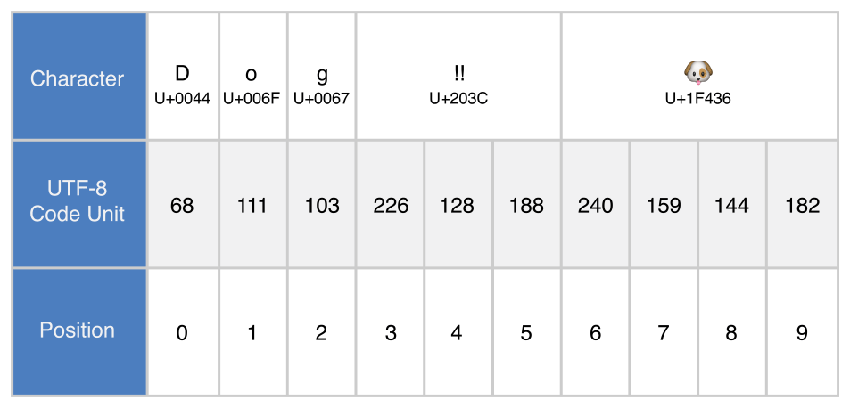
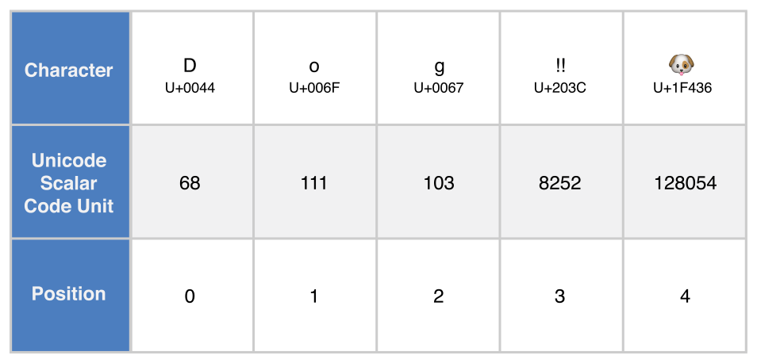
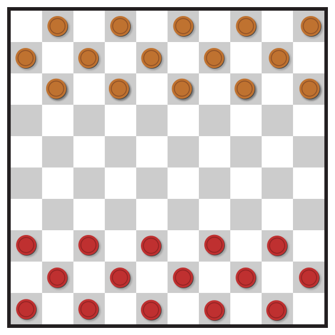
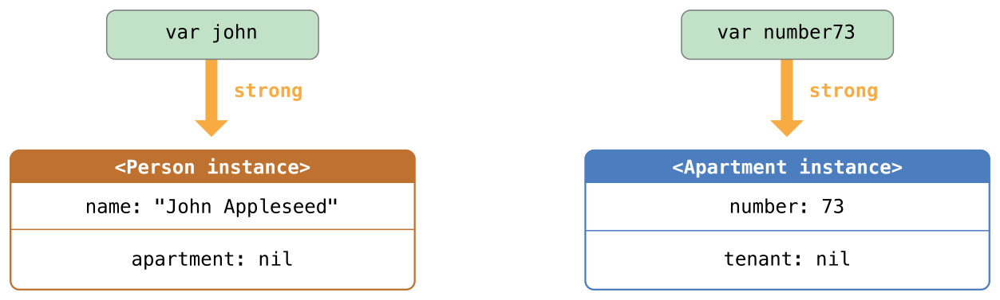
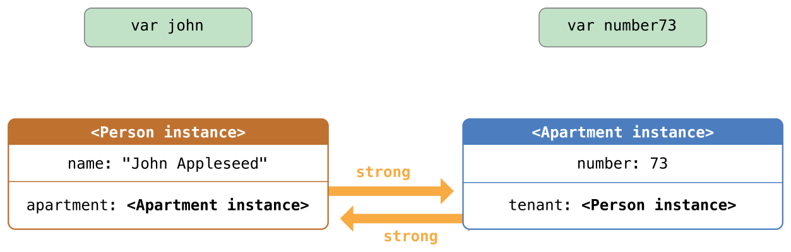
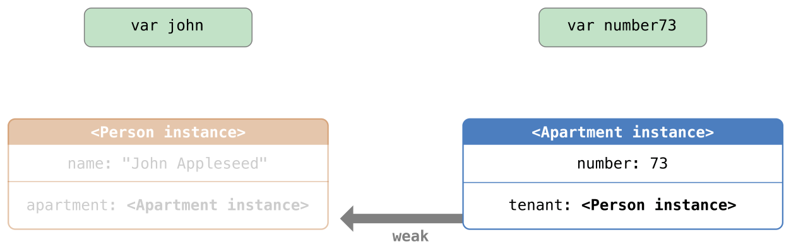
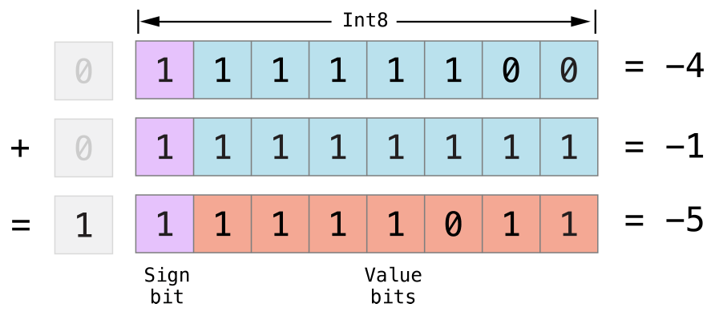
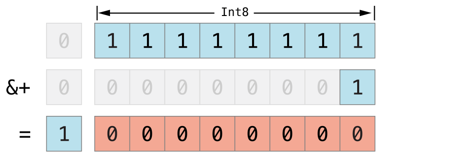
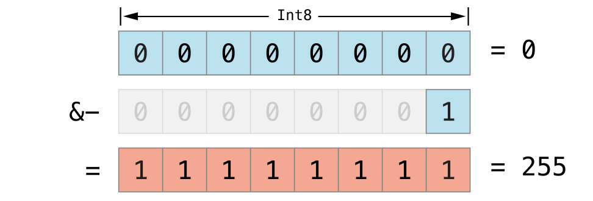

Swift is a new programming language for iOS, OS X, and watchOS apps that builds on the best of C and Objective-C, without the constraints of C compatibility. Swift adopts safe programming patterns and adds modern features to make programming easier, more flexible, and more fun. Swift’s clean slate, backed by the mature and much-loved Cocoa and Cocoa Touch frameworks, is an opportunity to reimagine how software development works.
Swift has been years in the making. Apple laid the foundation for Swift by advancing our existing compiler, debugger, and framework infrastructure. We simplified memory management with Automatic Reference Counting (ARC). Our framework stack, built on the solid base of Foundation and Cocoa, has been modernized and standardized throughout. Objective-C itself has evolved to support blocks, collection literals, and modules, enabling framework adoption of modern language technologies without disruption. Thanks to this groundwork, we can now introduce a new language for the future of Apple software development.
Swift feels familiar to Objective-C developers. It adopts the readability of Objective-C’s named parameters and the power of Objective-C’s dynamic object model. It provides seamless access to existing Cocoa frameworks and mix-and-match interoperability with Objective-C code. Building from this common ground, Swift introduces many new features and unifies the procedural and object-oriented portions of the language.
Swift is friendly to new programmers. It is the first industrial-quality systems programming language that is as expressive and enjoyable as a scripting language. It supports playgrounds, an innovative feature that allows programmers to experiment with Swift code and see the results immediately, without the overhead of building and running an app.
Swift combines the best in modern language thinking with wisdom from the wider Apple engineering culture. The compiler is optimized for performance, and the language is optimized for development, without compromising on either. It’s designed to scale from “hello, world” to an entire operating system. All this makes Swift a sound future investment for developers and for Apple.
Swift is a fantastic way to write iOS, OS X, and watchOS apps, and will continue to evolve with new features and capabilities. Our goals for Swift are ambitious. We can’t wait to see what you create with it.
A Swift Tour
Tradition suggests that the first program in a new language should print the words “Hello, world!” on the screen. In Swift, this can be done in a single line:
print("Hello, world!")
If you have written code in C or Objective-C, this syntax looks familiar to you—in Swift, this line of code is a complete program. You don’t need to import a separate library for functionality like input/output or string handling. Code written at global scope is used as the entry point for the program, so you don’t need a main() function. You also don’t need to write semicolons at the end of every statement.
This tour gives you enough information to start writing code in Swift by showing you how to accomplish a variety of programming tasks. Don’t worry if you don’t understand something—everything introduced in this tour is explained in detail in the rest of this book.
Simple Values
Use let to make a constant and var to make a variable. The value of a constant doesn’t need to be known at compile time, but you must assign it a value exactly once. This means you can use constants to name a value that you determine once but use in many places.
varmyVariable = 42
myVariable = 50
letmyConstant = 42
A constant or variable must have the same type as the value you want to assign to it. However, you don’t always have to write the type explicitly. Providing a value when you create a constant or variable lets the compiler infer its type. In the example above, the compiler infers that myVariable is an integer because its initial value is an integer.
If the initial value doesn’t provide enough information (or if there is no initial value), specify the type by writing it after the variable, separated by a colon.
letimplicitInteger = 70
letimplicitDouble = 70.0
letexplicitDouble: Double = 70
Values are never implicitly converted to another type. If you need to convert a value to a different type, explicitly make an instance of the desired type.
letlabel = "The width is "
letwidth = 94
letwidthLabel = label + String(width)
There’s an even simpler way to include values in strings: Write the value in parentheses, and write a backslash (\) before the parentheses. For example:
letapples = 3
letoranges = 5
letappleSummary = "I have \(apples) apples."
letfruitSummary = "I have \(apples + oranges) pieces of fruit."
Create arrays and dictionaries using brackets ([]), and access their elements by writing the index or key in brackets. A comma is allowed after the last element.
To create an empty array or dictionary, use the initializer syntax.
letemptyArray = [String]()
letemptyDictionary = [String: Float]()
If type information can be inferred, you can write an empty array as [] and an empty dictionary as [:]—for example, when you set a new value for a variable or pass an argument to a function.
shoppingList = []
occupations = [:]
Control Flow
Use if and switch to make conditionals, and use for-in, for, while, and repeat-while to make loops. Parentheses around the condition or loop variable are optional. Braces around the body are required.
letindividualScores = [75, 43, 103, 87, 12]
varteamScore = 0
forscoreinindividualScores {
ifscore > 50 {
teamScore += 3
} else {
teamScore += 1
}
}
print(teamScore)
In an if statement, the conditional must be a Boolean expression—this means that code such as if score { ... } is an error, not an implicit comparison to zero.
You can use if and let together to work with values that might be missing. These values are represented as optionals. An optional value either contains a value or contains nil to indicate that a value is missing. Write a question mark (?) after the type of a value to mark the value as optional.
varoptionalString: String? = "Hello"
print(optionalString == nil)
varoptionalName: String? = "John Appleseed"
vargreeting = "Hello!"
ifletname = optionalName {
greeting = "Hello, \(name)"
}
If the optional value is nil, the conditional is false and the code in braces is skipped. Otherwise, the optional value is unwrapped and assigned to the constant after let, which makes the unwrapped value available inside the block of code.
Switches support any kind of data and a wide variety of comparison operations—they aren’t limited to integers and tests for equality.
letvegetable = "red pepper"
switchvegetable {
case"celery":
letvegetableComment = "Add some raisins and make ants on a log."
case"cucumber", "watercress":
letvegetableComment = "That would make a good tea sandwich."
caseletxwherex.hasSuffix("pepper"):
letvegetableComment = "Is it a spicy \(x)?"
default:
letvegetableComment = "Everything tastes good in soup."
}
Notice how let can be used in a pattern to assign the value that matched that part of a pattern to a constant.
After executing the code inside the switch case that matched, the program exits from the switch statement. Execution doesn’t continue to the next case, so there is no need to explicitly break out of the switch at the end of each case’s code.
You use for-in to iterate over items in a dictionary by providing a pair of names to use for each key-value pair. Dictionaries are an unordered collection, so their keys and values are iterated over in an arbitrary order.
letinterestingNumbers = [
"Prime": [2, 3, 5, 7, 11, 13],
"Fibonacci": [1, 1, 2, 3, 5, 8],
"Square": [1, 4, 9, 16, 25],
]
varlargest = 0
for (kind, numbers) ininterestingNumbers {
fornumberinnumbers {
ifnumber > largest {
largest = number
}
}
}
print(largest)
Use while to repeat a block of code until a condition changes. The condition of a loop can be at the end instead, ensuring that the loop is run at least once.
varn = 2
whilen < 100 {
n = n * 2
}
print(n)
varm = 2
repeat {
m = m * 2
} whilem < 100
print(m)
You can keep an index in a loop—either by using ..< to make a range of indexes or by writing an explicit initialization, condition, and increment. These two loops do the same thing:
varfirstForLoop = 0
foriin0..<4 {
firstForLoop += i
}
print(firstForLoop)
varsecondForLoop = 0
forvari = 0; i < 4; ++i {
secondForLoop += i
}
print(secondForLoop)
Use ..< to make a range that omits its upper value, and use ... to make a range that includes both values.
Functions and Closures
Use func to declare a function. Call a function by following its name with a list of arguments in parentheses. Use -> to separate the parameter names and types from the function’s return type.
funcgreet(name: String, day: String) -> String {
return"Hello \(name), today is \(day)."
}
greet("Bob", day: "Tuesday")
Use a tuple to make a compound value—for example, to return multiple values from a function. The elements of a tuple can be referred to either by name or by number.
Functions can also take a variable number of arguments, collecting them into an array.
funcsumOf(numbers: Int...) -> Int {
varsum = 0
fornumberinnumbers {
sum += number
}
returnsum
}
sumOf()
sumOf(42, 597, 12)
Functions can be nested. Nested functions have access to variables that were declared in the outer function. You can use nested functions to organize the code in a function that is long or complex.
funcreturnFifteen() -> Int {
vary = 10
funcadd() {
y += 5
}
add()
returny
}
returnFifteen()
Functions are a first-class type. This means that a function can return another function as its value.
funcmakeIncrementer() -> (Int -> Int) {
funcaddOne(number: Int) -> Int {
return1 + number
}
returnaddOne
}
varincrement = makeIncrementer()
increment(7)
A function can take another function as one of its arguments.
funchasAnyMatches(list: [Int], condition: Int -> Bool) -> Bool {
foriteminlist {
ifcondition(item) {
returntrue
}
}
returnfalse
}
funclessThanTen(number: Int) -> Bool {
returnnumber < 10
}
varnumbers = [20, 19, 7, 12]
hasAnyMatches(numbers, condition: lessThanTen)
Functions are actually a special case of closures: blocks of code that can be called later. The code in a closure has access to things like variables and functions that were available in the scope where the closure was created, even if the closure is in a different scope when it is executed—you saw an example of this already with nested functions. You can write a closure without a name by surrounding code with braces ({}). Use in to separate the arguments and return type from the body.
numbers.map({
(number: Int) -> Intin
letresult = 3 * number
returnresult
})
You have several options for writing closures more concisely. When a closure’s type is already known, such as the callback for a delegate, you can omit the type of its parameters, its return type, or both. Single statement closures implicitly return the value of their only statement.
letmappedNumbers = numbers.map({ numberin3 * number })
print(mappedNumbers)
You can refer to parameters by number instead of by name—this approach is especially useful in very short closures. A closure passed as the last argument to a function can appear immediately after the parentheses. When a closure is the only argument to a function, you can omit the parentheses entirely.
letsortedNumbers = numbers.sort { $0 > $1 }
print(sortedNumbers)
Objects and Classes
Use class followed by the class’s name to create a class. A property declaration in a class is written the same way as a constant or variable declaration, except that it is in the context of a class. Likewise, method and function declarations are written the same way.
classShape {
varnumberOfSides = 0
funcsimpleDescription() -> String {
return"A shape with \(numberOfSides) sides."
}
}
Create an instance of a class by putting parentheses after the class name. Use dot syntax to access the properties and methods of the instance.
varshape = Shape()
shape.numberOfSides = 7
varshapeDescription = shape.simpleDescription()
This version of the Shape class is missing something important: an initializer to set up the class when an instance is created. Use init to create one.
classNamedShape {
varnumberOfSides: Int = 0
varname: String
init(name: String) {
self.name = name
}
funcsimpleDescription() -> String {
return"A shape with \(numberOfSides) sides."
}
}
Notice how self is used to distinguish the name property from the name argument to the initializer. The arguments to the initializer are passed like a function call when you create an instance of the class. Every property needs a value assigned—either in its declaration (as with numberOfSides) or in the initializer (as with name).
Use deinit to create a deinitializer if you need to perform some cleanup before the object is deallocated.
Subclasses include their superclass name after their class name, separated by a colon. There is no requirement for classes to subclass any standard root class, so you can include or omit a superclass as needed.
Methods on a subclass that override the superclass’s implementation are marked with override—overriding a method by accident, without override, is detected by the compiler as an error. The compiler also detects methods with override that don’t actually override any method in the superclass.
classSquare: NamedShape {
varsideLength: Double
init(sideLength: Double, name: String) {
self.sideLength = sideLength
super.init(name: name)
numberOfSides = 4
}
funcarea() -> Double {
returnsideLength * sideLength
}
overridefuncsimpleDescription() -> String {
return"A square with sides of length \(sideLength)."
}
}
lettest = Square(sideLength: 5.2, name: "my test square")
test.area()
test.simpleDescription()
In addition to simple properties that are stored, properties can have a getter and a setter.
classEquilateralTriangle: NamedShape {
varsideLength: Double = 0.0
init(sideLength: Double, name: String) {
self.sideLength = sideLength
super.init(name: name)
numberOfSides = 3
}
varperimeter: Double {
get {
return3.0 * sideLength
}
set {
sideLength = newValue / 3.0
}
}
overridefuncsimpleDescription() -> String {
return"An equilateral triangle with sides of length \(sideLength)."
}
}
vartriangle = EquilateralTriangle(sideLength: 3.1, name: "a triangle")
print(triangle.perimeter)
triangle.perimeter = 9.9
print(triangle.sideLength)
In the setter for perimeter, the new value has the implicit name newValue. You can provide an explicit name in parentheses after set.
Notice that the initializer for the EquilateralTriangle class has three different steps:
Setting the value of properties that the subclass declares.
Calling the superclass’s initializer.
Changing the value of properties defined by the superclass. Any additional setup work that uses methods, getters, or setters can also be done at this point.
If you don’t need to compute the property but still need to provide code that is run before and after setting a new value, use willSet and didSet. For example, the class below ensures that the side length of its triangle is always the same as the side length of its square.
When working with optional values, you can write ? before operations like methods, properties, and subscripting. If the value before the ? is nil, everything after the ? is ignored and the value of the whole expression is nil. Otherwise, the optional value is unwrapped, and everything after the ? acts on the unwrapped value. In both cases, the value of the whole expression is an optional value.
Use enum to create an enumeration. Like classes and all other named types, enumerations can have methods associated with them.
enumRank: Int {
caseAce = 1
caseTwo, Three, Four, Five, Six, Seven, Eight, Nine, Ten
caseJack, Queen, King
funcsimpleDescription() -> String {
switchself {
case .Ace:
return"ace"
case .Jack:
return"jack"
case .Queen:
return"queen"
case .King:
return"king"
default:
returnString(self.rawValue)
}
}
}
letace = Rank.Ace
letaceRawValue = ace.rawValue
In the example above, the raw-value type of the enumeration is Int, so you only have to specify the first raw value. The rest of the raw values are assigned in order. You can also use strings or floating-point numbers as the raw type of an enumeration. Use the rawValue property to access the raw value of an enumeration member.
Use the init?(rawValue:) initializer to make an instance of an enumeration from a raw value.
The member values of an enumeration are actual values, not just another way of writing their raw values. In fact, in cases where there isn’t a meaningful raw value, you don’t have to provide one.
enumSuit {
caseSpades, Hearts, Diamonds, Clubs
funcsimpleDescription() -> String {
switchself {
case .Spades:
return"spades"
case .Hearts:
return"hearts"
case .Diamonds:
return"diamonds"
case .Clubs:
return"clubs"
}
}
}
lethearts = Suit.Hearts
letheartsDescription = hearts.simpleDescription()
Notice the two ways that the Hearts member of the enumeration is referred to above: When assigning a value to the hearts constant, the enumeration member Suit.Hearts is referred to by its full name because the constant doesn’t have an explicit type specified. Inside the switch, the enumeration member is referred to by the abbreviated form .Hearts because the value of self is already known to be a suit. You can use the abbreviated form anytime the value’s type is already known.
Use struct to create a structure. Structures support many of the same behaviors as classes, including methods and initializers. One of the most important differences between structures and classes is that structures are always copied when they are passed around in your code, but classes are passed by reference.
structCard {
varrank: Rank
varsuit: Suit
funcsimpleDescription() -> String {
return"The \(rank.simpleDescription()) of \(suit.simpleDescription())"
An instance of an enumeration member can have values associated with the instance. Instances of the same enumeration member can have different values associated with them. You provide the associated values when you create the instance. Associated values and raw values are different: The raw value of an enumeration member is the same for all of its instances, and you provide the raw value when you define the enumeration.
For example, consider the case of requesting the sunrise and sunset time from a server. The server either responds with the information or it responds with some error information.
letfailure = ServerResponse.Error("Out of cheese.")
switchsuccess {
caselet .Result(sunrise, sunset):
letserverResponse = "Sunrise is at \(sunrise) and sunset is at \(sunset)."
caselet .Error(error):
letserverResponse = "Failure... \(error)"
}
Notice how the sunrise and sunset times are extracted from the ServerResponse value as part of matching the value against the switch cases.
Protocols and Extensions
Use protocol to declare a protocol.
protocolExampleProtocol {
varsimpleDescription: String { get }
mutatingfuncadjust()
}
Classes, enumerations, and structs can all adopt protocols.
classSimpleClass: ExampleProtocol {
varsimpleDescription: String = "A very simple class."
varanotherProperty: Int = 69105
funcadjust() {
simpleDescription += " Now 100% adjusted."
}
}
vara = SimpleClass()
a.adjust()
letaDescription = a.simpleDescription
structSimpleStructure: ExampleProtocol {
varsimpleDescription: String = "A simple structure"
mutatingfuncadjust() {
simpleDescription += " (adjusted)"
}
}
varb = SimpleStructure()
b.adjust()
letbDescription = b.simpleDescription
Notice the use of the mutating keyword in the declaration of SimpleStructure to mark a method that modifies the structure. The declaration of SimpleClass doesn’t need any of its methods marked as mutating because methods on a class can always modify the class.
Use extension to add functionality to an existing type, such as new methods and computed properties. You can use an extension to add protocol conformance to a type that is declared elsewhere, or even to a type that you imported from a library or framework.
extensionInt: ExampleProtocol {
varsimpleDescription: String {
return"The number \(self)"
}
mutatingfuncadjust() {
self += 42
}
}
print(7.simpleDescription)
You can use a protocol name just like any other named type—for example, to create a collection of objects that have different types but that all conform to a single protocol. When you work with values whose type is a protocol type, methods outside the protocol definition are not available.
letprotocolValue: ExampleProtocol = a
print(protocolValue.simpleDescription)
// print(protocolValue.anotherProperty) // Uncomment to see the error
Even though the variable protocolValue has a runtime type of SimpleClass, the compiler treats it as the given type of ExampleProtocol. This means that you can’t accidentally access methods or properties that the class implements in addition to its protocol conformance.
Generics
Write a name inside angle brackets to make a generic function or type.
You can make generic forms of functions and methods, as well as classes, enumerations, and structures.
// Reimplement the Swift standard library's optional type
enumOptionalValue<T> {
caseNone
caseSome(T)
}
varpossibleInteger: OptionalValue<Int> = .None
possibleInteger = .Some(100)
Use where after the type name to specify a list of requirements—for example, to require the type to implement a protocol, to require two types to be the same, or to require a class to have a particular superclass.
In the simple cases, you can omit where and simply write the protocol or class name after a colon. Writing <T: Equatable> is the same as writing <T where T: Equatable>.
The Basics
Swift is a new programming language for iOS, OS X, and watchOS app development. Nonetheless, many parts of Swift will be familiar from your experience of developing in C and Objective-C.
Swift provides its own versions of all fundamental C and Objective-C types, including Int for integers, Double and Float for floating-point values, Bool for Boolean values, and String for textual data. Swift also provides powerful versions of the three primary collection types, Array, Set, and Dictionary, as described in Collection Types.
Like C, Swift uses variables to store and refer to values by an identifying name. Swift also makes extensive use of variables whose values cannot be changed. These are known as constants, and are much more powerful than constants in C. Constants are used throughout Swift to make code safer and clearer in intent when you work with values that do not need to change.
In addition to familiar types, Swift introduces advanced types not found in Objective-C, such as tuples. Tuples enable you to create and pass around groupings of values. You can use a tuple to return multiple values from a function as a single compound value.
Swift also introduces optional types, which handle the absence of a value. Optionals say either “there is a value, and it equals x” or “there isn’t a value at all”. Optionals are similar to using nil with pointers in Objective-C, but they work for any type, not just classes. Optionals are safer and more expressive than nil pointers in Objective-C and are at the heart of many of Swift’s most powerful features.
Optionals are an example of the fact that Swift is a type safe language. Swift helps you to be clear about the types of values your code can work with. If part of your code expects a String, type safety prevents you from passing it an Int by mistake. This restriction enables you to catch and fix errors as early as possible in the development process.
Constants and Variables
Constants and variables associate a name (such as maximumNumberOfLoginAttempts or welcomeMessage) with a value of a particular type (such as the number 10 or the string "Hello"). The value of a constant cannot be changed once it is set, whereas a variable can be set to a different value in the future.
Declaring Constants and Variables
Constants and variables must be declared before they are used. You declare constants with the let keyword and variables with the var keyword. Here’s an example of how constants and variables can be used to track the number of login attempts a user has made:
letmaximumNumberOfLoginAttempts = 10
varcurrentLoginAttempt = 0
This code can be read as:
“Declare a new constant called maximumNumberOfLoginAttempts, and give it a value of 10. Then, declare a new variable called currentLoginAttempt, and give it an initial value of 0.”
In this example, the maximum number of allowed login attempts is declared as a constant, because the maximum value never changes. The current login attempt counter is declared as a variable, because this value must be incremented after each failed login attempt.
You can declare multiple constants or multiple variables on a single line, separated by commas:
varx = 0.0, y = 0.0, z = 0.0
Type Annotations
You can provide a type annotation when you declare a constant or variable, to be clear about the kind of values the constant or variable can store. Write a type annotation by placing a colon after the constant or variable name, followed by a space, followed by the name of the type to use.
This example provides a type annotation for a variable called welcomeMessage, to indicate that the variable can store String values:
varwelcomeMessage: String
The colon in the declaration means “…of type…,” so the code above can be read as:
“Declare a variable called welcomeMessage that is of type String.”
The phrase “of type String” means “can store any String value.” Think of it as meaning “the type of thing” (or “the kind of thing”) that can be stored.
The welcomeMessage variable can now be set to any string value without error:
welcomeMessage = "Hello"
You can define multiple related variables of the same type on a single line, separated by commas, with a single type annotation after the final variable name:
varred, green, blue: Double
Naming Constants and Variables
Constant and variable names can contain almost any character, including Unicode characters:
letπ = 3.14159
let你好 = "你好世界"
let🐶🐮 = "dogcow"
Constant and variable names cannot contain whitespace characters, mathematical symbols, arrows, private-use (or invalid) Unicode code points, or line- and box-drawing characters. Nor can they begin with a number, although numbers may be included elsewhere within the name.
Once you’ve declared a constant or variable of a certain type, you can’t redeclare it again with the same name, or change it to store values of a different type. Nor can you change a constant into a variable or a variable into a constant.
You can change the value of an existing variable to another value of a compatible type. In this example, the value of friendlyWelcome is changed from "Hello!" to "Bonjour!":
varfriendlyWelcome = "Hello!"
friendlyWelcome = "Bonjour!"
// friendlyWelcome is now "Bonjour!"
Unlike a variable, the value of a constant cannot be changed once it is set. Attempting to do so is reported as an error when your code is compiled:
letlanguageName = "Swift"
languageName = "Swift++"
// this is a compile-time error - languageName cannot be changed
Printing Constants and Variables
You can print the current value of a constant or variable with the print(_:) function:
print(friendlyWelcome)
// prints "Bonjour!"
print(_:) is a global function that prints a value, followed by a line break, to an appropriate output. In Xcode, for example, the print(_:) function prints its output in Xcode’s “console” pane. (A related function, print(_:appendNewline:), performs the same task while optionally appending a line break to the end of the value to be printed.)
The print(_:) function prints any String value you pass to it:
print("This is a string")
// prints "This is a string"
The print(_:) function can print more complex logging messages. These messages can include the current values of constants and variables.
Swift uses string interpolation to include the name of a constant or variable as a placeholder in a longer string, and to prompt Swift to replace it with the current value of that constant or variable. Wrap the name in parentheses and escape it with a backslash before the opening parenthesis:
print("The current value of friendlyWelcome is \(friendlyWelcome)")
// prints "The current value of friendlyWelcome is Bonjour!"
Comments
Use comments to include non-executable text in your code, as a note or reminder to yourself. Comments are ignored by the Swift compiler when your code is compiled.
Comments in Swift are very similar to comments in C. Single-line comments begin with two forward-slashes (//):
// this is a comment
Multiline comments start with a forward-slash followed by an asterisk (/*) and end with an asterisk followed by a forward-slash (*/):
/* this is also a comment,
but written over multiple lines */
Unlike multiline comments in C, multiline comments in Swift can be nested inside other multiline comments. You write nested comments by starting a multiline comment block and then starting a second multiline comment within the first block. The second block is then closed, followed by the first block:
/* this is the start of the first multiline comment
/* this is the second, nested multiline comment */
this is the end of the first multiline comment */
Nested multiline comments enable you to comment out large blocks of code quickly and easily, even if the code already contains multiline comments.
Semicolons
Unlike many other languages, Swift does not require you to write a semicolon (;) after each statement in your code, although you can do so if you wish. Semicolons are required, however, if you want to write multiple separate statements on a single line:
letcat = "🐱"; print(cat)
// prints "🐱"
Integers
Integers are whole numbers with no fractional component, such as 42 and -23. Integers are either signed (positive, zero, or negative) or unsigned (positive or zero).
Swift provides signed and unsigned integers in 8, 16, 32, and 64 bit forms. These integers follow a naming convention similar to C, in that an 8-bit unsigned integer is of type UInt8, and a 32-bit signed integer is of type Int32. Like all types in Swift, these integer types have capitalized names.
Integer Bounds
You can access the minimum and maximum values of each integer type with its min and max properties:
letminValue = UInt8.min// minValue is equal to 0, and is of type UInt8
letmaxValue = UInt8.max// maxValue is equal to 255, and is of type UInt8
The values of these properties are of the appropriate-sized number type (such as UInt8 in the example above) and can therefore be used in expressions alongside other values of the same type.
Int
In most cases, you don’t need to pick a specific size of integer to use in your code. Swift provides an additional integer type, Int, which has the same size as the current platform’s native word size:
On a 32-bit platform, Int is the same size as Int32.
On a 64-bit platform, Int is the same size as Int64.
Unless you need to work with a specific size of integer, always use Int for integer values in your code. This aids code consistency and interoperability. Even on 32-bit platforms, Int can store any value between -2,147,483,648 and 2,147,483,647, and is large enough for many integer ranges.
UInt
Swift also provides an unsigned integer type, UInt, which has the same size as the current platform’s native word size:
On a 32-bit platform, UInt is the same size as UInt32.
On a 64-bit platform, UInt is the same size as UInt64.
Floating-Point Numbers
Floating-point numbers are numbers with a fractional component, such as 3.14159, 0.1, and -273.15.
Floating-point types can represent a much wider range of values than integer types, and can store numbers that are much larger or smaller than can be stored in an Int. Swift provides two signed floating-point number types:
Double represents a 64-bit floating-point number.
Float represents a 32-bit floating-point number.
Type Safety and Type Inference
Swift is a type safe language. A type safe language encourages you to be clear about the types of values your code can work with. If part of your code expects a String, you can’t pass it an Int by mistake.
Because Swift is type safe, it performs type checks when compiling your code and flags any mismatched types as errors. This enables you to catch and fix errors as early as possible in the development process.
Type-checking helps you avoid errors when you’re working with different types of values. However, this doesn’t mean that you have to specify the type of every constant and variable that you declare. If you don’t specify the type of value you need, Swift uses type inference to work out the appropriate type. Type inference enables a compiler to deduce the type of a particular expression automatically when it compiles your code, simply by examining the values you provide.
Because of type inference, Swift requires far fewer type declarations than languages such as C or Objective-C. Constants and variables are still explicitly typed, but much of the work of specifying their type is done for you.
Type inference is particularly useful when you declare a constant or variable with an initial value. This is often done by assigning a literal value (or literal) to the constant or variable at the point that you declare it. (A literal value is a value that appears directly in your source code, such as 42 and 3.14159 in the examples below.)
For example, if you assign a literal value of 42 to a new constant without saying what type it is, Swift infers that you want the constant to be an Int, because you have initialized it with a number that looks like an integer:
letmeaningOfLife = 42
// meaningOfLife is inferred to be of type Int
Likewise, if you don’t specify a type for a floating-point literal, Swift infers that you want to create a Double:
letpi = 3.14159
// pi is inferred to be of type Double
Swift always chooses Double (rather than Float) when inferring the type of floating-point numbers.
If you combine integer and floating-point literals in an expression, a type of Double will be inferred from the context:
letanotherPi = 3 + 0.14159
// anotherPi is also inferred to be of type Double
The literal value of 3 has no explicit type in and of itself, and so an appropriate output type of Double is inferred from the presence of a floating-point literal as part of the addition.
Numeric Literals
Integer literals can be written as:
A decimal number, with no prefix
A binary number, with a 0b prefix
An octal number, with a 0o prefix
A hexadecimal number, with a 0x prefix
All of these integer literals have a decimal value of 17:
letdecimalInteger = 17
letbinaryInteger = 0b10001// 17 in binary notation
letoctalInteger = 0o21// 17 in octal notation
lethexadecimalInteger = 0x11// 17 in hexadecimal notation
Floating-point literals can be decimal (with no prefix), or hexadecimal (with a 0x prefix). They must always have a number (or hexadecimal number) on both sides of the decimal point. They can also have an optional exponent, indicated by an uppercase or lowercase e for decimal floats, or an uppercase or lowercase p for hexadecimal floats.
For decimal numbers with an exponent of exp, the base number is multiplied by 10exp:
1.25e2 means 1.25 x 102, or 125.0.
1.25e-2 means 1.25 x 10-2, or 0.0125.
For hexadecimal numbers with an exponent of exp, the base number is multiplied by 2exp:
0xFp2 means 15 x 22, or 60.0.
0xFp-2 means 15 x 2-2, or 3.75.
All of these floating-point literals have a decimal value of 12.1875:
letdecimalDouble = 12.1875
letexponentDouble = 1.21875e1
lethexadecimalDouble = 0xC.3p0
Numeric literals can contain extra formatting to make them easier to read. Both integers and floats can be padded with extra zeroes and can contain underscores to help with readability. Neither type of formatting affects the underlying value of the literal:
letpaddedDouble = 000123.456
letoneMillion = 1_000_000
letjustOverOneMillion = 1_000_000.000_000_1
Numeric Type Conversion
Use the Int type for all general-purpose integer constants and variables in your code, even if they are known to be non-negative. Using the default integer type in everyday situations means that integer constants and variables are immediately interoperable in your code and will match the inferred type for integer literal values.
Use other integer types only when they are specifically needed for the task at hand, because of explicitly-sized data from an external source, or for performance, memory usage, or other necessary optimization. Using explicitly-sized types in these situations helps to catch any accidental value overflows and implicitly documents the nature of the data being used.
Integer Conversion
The range of numbers that can be stored in an integer constant or variable is different for each numeric type. An Int8 constant or variable can store numbers between -128 and 127, whereas a UInt8 constant or variable can store numbers between 0 and 255. A number that will not fit into a constant or variable of a sized integer type is reported as an error when your code is compiled:
letcannotBeNegative: UInt8 = -1
// UInt8 cannot store negative numbers, and so this will report an error
lettooBig: Int8 = Int8.max + 1
// Int8 cannot store a number larger than its maximum value,
// and so this will also report an error
Because each numeric type can store a different range of values, you must opt in to numeric type conversion on a case-by-case basis. This opt-in approach prevents hidden conversion errors and helps make type conversion intentions explicit in your code.
To convert one specific number type to another, you initialize a new number of the desired type with the existing value. In the example below, the constant twoThousand is of type UInt16, whereas the constant one is of type UInt8. They cannot be added together directly, because they are not of the same type. Instead, this example calls UInt16(one) to create a new UInt16 initialized with the value of one, and uses this value in place of the original:
lettwoThousand: UInt16 = 2_000
letone: UInt8 = 1
lettwoThousandAndOne = twoThousand + UInt16(one)
Because both sides of the addition are now of type UInt16, the addition is allowed. The output constant (twoThousandAndOne) is inferred to be of type UInt16, because it is the sum of two UInt16 values.
SomeType(ofInitialValue) is the default way to call the initializer of a Swift type and pass in an initial value. Behind the scenes, UInt16 has an initializer that accepts a UInt8 value, and so this initializer is used to make a new UInt16 from an existing UInt8. You can’t pass in any type here, however—it has to be a type for which UInt16 provides an initializer. Extending existing types to provide initializers that accept new types (including your own type definitions) is covered in Extensions.
Integer and Floating-Point Conversion
Conversions between integer and floating-point numeric types must be made explicit:
letthree = 3
letpointOneFourOneFiveNine = 0.14159
letpi = Double(three) + pointOneFourOneFiveNine
// pi equals 3.14159, and is inferred to be of type Double
Here, the value of the constant three is used to create a new value of type Double, so that both sides of the addition are of the same type. Without this conversion in place, the addition would not be allowed.
Floating-point to integer conversion must also be made explicit. An integer type can be initialized with a Double or Float value:
letintegerPi = Int(pi)
// integerPi equals 3, and is inferred to be of type Int
Floating-point values are always truncated when used to initialize a new integer value in this way. This means that 4.75 becomes 4, and -3.9 becomes -3.
Type Aliases
Type aliases define an alternative name for an existing type. You define type aliases with the typealias keyword.
Type aliases are useful when you want to refer to an existing type by a name that is contextually more appropriate, such as when working with data of a specific size from an external source:
typealiasAudioSample = UInt16
Once you define a type alias, you can use the alias anywhere you might use the original name:
varmaxAmplitudeFound = AudioSample.min
// maxAmplitudeFound is now 0
Here, AudioSample is defined as an alias for UInt16. Because it is an alias, the call to AudioSample.min actually calls UInt16.min, which provides an initial value of 0 for the maxAmplitudeFound variable.
Booleans
Swift has a basic Boolean type, called Bool. Boolean values are referred to as logical, because they can only ever be true or false. Swift provides two Boolean constant values, true and false:
letorangesAreOrange = true
letturnipsAreDelicious = false
The types of orangesAreOrange and turnipsAreDelicious have been inferred as Bool from the fact that they were initialized with Boolean literal values. As with Int and Double above, you don’t need to declare constants or variables as Bool if you set them to true or false as soon as you create them. Type inference helps make Swift code more concise and readable when it initializes constants or variables with other values whose type is already known.
Boolean values are particularly useful when you work with conditional statements such as the if statement:
ifturnipsAreDelicious {
print("Mmm, tasty turnips!")
} else {
print("Eww, turnips are horrible.")
}
// prints "Eww, turnips are horrible."
Conditional statements such as the if statement are covered in more detail in Control Flow.
Swift’s type safety prevents non-Boolean values from being substituted for Bool. The following example reports a compile-time error:
leti = 1
ifi {
// this example will not compile, and will report an error
}
However, the alternative example below is valid:
leti = 1
ifi == 1 {
// this example will compile successfully
}
The result of the i == 1 comparison is of type Bool, and so this second example passes the type-check. Comparisons like i == 1 are discussed in Basic Operators.
As with other examples of type safety in Swift, this approach avoids accidental errors and ensures that the intention of a particular section of code is always clear.
Tuples
Tuples group multiple values into a single compound value. The values within a tuple can be of any type and do not have to be of the same type as each other.
In this example, (404, "Not Found") is a tuple that describes an HTTP status code. An HTTP status code is a special value returned by a web server whenever you request a web page. A status code of 404 Not Found is returned if you request a webpage that doesn’t exist.
lethttp404Error = (404, "Not Found")
// http404Error is of type (Int, String), and equals (404, "Not Found")
The (404, "Not Found") tuple groups together an Int and a String to give the HTTP status code two separate values: a number and a human-readable description. It can be described as “a tuple of type (Int, String)”.
You can create tuples from any permutation of types, and they can contain as many different types as you like. There’s nothing stopping you from having a tuple of type (Int, Int, Int), or (String, Bool), or indeed any other permutation you require.
You can decompose a tuple’s contents into separate constants or variables, which you then access as usual:
let (statusCode, statusMessage) = http404Error
print("The status code is \(statusCode)")
// prints "The status code is 404"
print("The status message is \(statusMessage)")
// prints "The status message is Not Found"
If you only need some of the tuple’s values, ignore parts of the tuple with an underscore (_) when you decompose the tuple:
let (justTheStatusCode, _) = http404Error
print("The status code is \(justTheStatusCode)")
// prints "The status code is 404"
Alternatively, access the individual element values in a tuple using index numbers starting at zero:
print("The status code is \(http404Error.0)")
// prints "The status code is 404"
print("The status message is \(http404Error.1)")
// prints "The status message is Not Found"
You can name the individual elements in a tuple when the tuple is defined:
If you name the elements in a tuple, you can use the element names to access the values of those elements:
print("The status code is \(http200Status.statusCode)")
// prints "The status code is 200"
print("The status message is \(http200Status.description)")
// prints "The status message is OK"
Tuples are particularly useful as the return values of functions. A function that tries to retrieve a web page might return the (Int, String) tuple type to describe the success or failure of the page retrieval. By returning a tuple with two distinct values, each of a different type, the function provides more useful information about its outcome than if it could only return a single value of a single type. For more information, see Functions with Multiple Return Values.
Optionals
You use optionals in situations where a value may be absent. An optional says:
There is a value, and it equals x
or
There isn’t a value at all
Here’s an example of how optionals can be used to cope with the absence of a value. Swift’s String type has an initializer which tries to convert a String value into an Int value. However, not every string can be converted into an integer. The string "123" can be converted into the numeric value 123, but the string "hello, world" does not have an obvious numeric value to convert to.
The example below uses the initializer to try to convert a String into an Int:
letpossibleNumber = "123"
letconvertedNumber = Int(possibleNumber)
// convertedNumber is inferred to be of type "Int?", or "optional Int"
Because the initializer might fail, it returns an optionalInt, rather than an Int. An optional Int is written as Int?, not Int. The question mark indicates that the value it contains is optional, meaning that it might contain someInt value, or it might contain no value at all. (It can’t contain anything else, such as a Bool value or a String value. It’s either an Int, or it’s nothing at all.)
nil
You set an optional variable to a valueless state by assigning it the special value nil:
varserverResponseCode: Int? = 404
// serverResponseCode contains an actual Int value of 404
serverResponseCode = nil
// serverResponseCode now contains no value
If you define an optional variable without providing a default value, the variable is automatically set to nil for you:
varsurveyAnswer: String?
// surveyAnswer is automatically set to nil
If Statements and Forced Unwrapping
You can use an if statement to find out whether an optional contains a value by comparing the optional against nil. You perform this comparison with the “equal to” operator (==) or the “not equal to” operator (!=).
If an optional has a value, it is considered to be “not equal to” nil:
ifconvertedNumber != nil {
print("convertedNumber contains some integer value.")
}
// prints "convertedNumber contains some integer value."
Once you’re sure that the optional does contain a value, you can access its underlying value by adding an exclamation mark (!) to the end of the optional’s name. The exclamation mark effectively says, “I know that this optional definitely has a value; please use it.” This is known as forced unwrapping of the optional’s value:
ifconvertedNumber != nil {
print("convertedNumber has an integer value of \(convertedNumber!).")
}
// prints "convertedNumber has an integer value of 123."
You use optional binding to find out whether an optional contains a value, and if so, to make that value available as a temporary constant or variable. Optional binding can be used with if and while statements to check for a value inside an optional, and to extract that value into a constant or variable, as part of a single action. if and while statements are described in more detail in Control Flow.
Write an optional binding for an if statement as follows:
ifletconstantName = someOptional {
statements
}
You can rewrite the possibleNumber example from the Optionals section to use optional binding rather than forced unwrapping:
ifletactualNumber = Int(possibleNumber) {
print("\'\(possibleNumber)\' has an integer value of \(actualNumber)")
} else {
print("\'\(possibleNumber)\' could not be converted to an integer")
}
// prints "'123' has an integer value of 123"
This code can be read as:
“If the optional Int returned by Int(possibleNumber) contains a value, set a new constant called actualNumber to the value contained in the optional.”
If the conversion is successful, the actualNumber constant becomes available for use within the first branch of the if statement. It has already been initialized with the value contained within the optional, and so there is no need to use the ! suffix to access its value. In this example, actualNumber is simply used to print the result of the conversion.
You can use both constants and variables with optional binding. If you wanted to manipulate the value of actualNumber within the first branch of the if statement, you could write if var actualNumber instead, and the value contained within the optional would be made available as a variable rather than a constant.
Multiple optional bindings can appear in a single if statement as a comma-separated list of assignment expressions.
As described above, optionals indicate that a constant or variable is allowed to have “no value”. Optionals can be checked with an if statement to see if a value exists, and can be conditionally unwrapped with optional binding to access the optional’s value if it does exist.
Sometimes it is clear from a program’s structure that an optional will always have a value, after that value is first set. In these cases, it is useful to remove the need to check and unwrap the optional’s value every time it is accessed, because it can be safely assumed to have a value all of the time.
These kinds of optionals are defined as implicitly unwrapped optionals. You write an implicitly unwrapped optional by placing an exclamation mark (String!) rather than a question mark (String?) after the type that you want to make optional.
Implicitly unwrapped optionals are useful when an optional’s value is confirmed to exist immediately after the optional is first defined and can definitely be assumed to exist at every point thereafter. The primary use of implicitly unwrapped optionals in Swift is during class initialization, as described in Unowned References and Implicitly Unwrapped Optional Properties.
An implicitly unwrapped optional is a normal optional behind the scenes, but can also be used like a nonoptional value, without the need to unwrap the optional value each time it is accessed. The following example shows the difference in behavior between an optional string and an implicitly unwrapped optional string when accessing their wrapped value as an explicit String:
letimplicitString: String = assumedString// no need for an exclamation mark
You can think of an implicitly unwrapped optional as giving permission for the optional to be unwrapped automatically whenever it is used. Rather than placing an exclamation mark after the optional’s name each time you use it, you place an exclamation mark after the optional’s type when you declare it.
You can still treat an implicitly unwrapped optional like a normal optional, to check if it contains a value:
ifassumedString != nil {
print(assumedString)
}
// prints "An implicitly unwrapped optional string."
You can also use an implicitly unwrapped optional with optional binding, to check and unwrap its value in a single statement:
ifletdefiniteString = assumedString {
print(definiteString)
}
// prints "An implicitly unwrapped optional string."
Error Handling
You use error handling to respond to error conditions your program may encounter during execution.
In contrast to optionals, which can use the presence or absence or a value to communicate success or failure of a function, error handling allows you to determine the underlying cause of failure, and, if necessary, propagate the error to another part of your program.
When a function encounters an error condition, it throws an error. That function’s caller can then catch the error and respond appropriately.
funccanThrowAnError() throws {
// this function may or may not throw an error
}
A function indicates that it can throw an error by including the throws keyword in its declaration. When you call a function that can throw an error, you prepend the try keyword to the expression.
Swift automatically propagates errors out of their current scope until they are handled by a catch clause.
do {
trycanThrowAnError()
// no error was thrown
} catch {
// an error was thrown
}
A do statement creates a new containing scope, which allows errors to be propagated to one or more catch clauses.
Here’s an example of how error handling can be used to respond to different error conditions:
funcmakeASandwich() throws {
// ...
}
do {
trymakeASandwich()
eatASandwich()
} catchError.OutOfCleanDishes {
washDishes()
} catchError.MissingIngredients(letingredients) {
buyGroceries(ingredients)
}
In this example, the makeASandwich() function will throw an error if no clean dishes are available or if any ingredients are missing. Because makeASandwich() throws, the function call is wrapped in a try expression. By wrapping the function call in a do statement, any errors that are thrown will be propagated to the provided catch clauses.
If no error is thrown, the eatASandwich() function is called. If an error is thrown and it matches the Error.OutOfCleanDishes case, then the washDishes() function will be called. If an error is thrown and it matches the Error.MissingIngredients case, then the buyGroceries(_:) function is called with the associated [String] value captured by the catch pattern.
Throwing, catching, and propagating errors is covered in greater detail in Error Handling.
Assertions
In some cases, it is simply not possible for your code to continue execution if a particular condition is not satisfied. In these situations, you can trigger an assertion in your code to end code execution and to provide an opportunity to debug the cause of the absent or invalid value.
Debugging with Assertions
An assertion is a runtime check that a logical condition definitely evaluates to true. Literally put, an assertion “asserts” that a condition is true. You use an assertion to make sure that an essential condition is satisfied before executing any further code. If the condition evaluates to true, code execution continues as usual; if the condition evaluates to false, code execution ends, and your app is terminated.
If your code triggers an assertion while running in a debug environment, such as when you build and run an app in Xcode, you can see exactly where the invalid state occurred and query the state of your app at the time that the assertion was triggered. An assertion also lets you provide a suitable debug message as to the nature of the assert.
You write an assertion by calling the global assert(_:_:) function. You pass the assert(_:_:) function an expression that evaluates to true or false and a message that should be displayed if the result of the condition is false:
letage = -3
assert(age >= 0, "A person's age cannot be less than zero")
// this causes the assertion to trigger, because age is not >= 0
In this example, code execution will continue only if age >= 0 evaluates to true, that is, if the value of age is non-negative. If the value of ageis negative, as in the code above, then age >= 0 evaluates to false, and the assertion is triggered, terminating the application.
The assertion message can be omitted if desired, as in the following example:
assert(age >= 0)
When to Use Assertions
Use an assertion whenever a condition has the potential to be false, but must definitely be true in order for your code to continue execution. Suitable scenarios for an assertion check include:
An integer subscript index is passed to a custom subscript implementation, but the subscript index value could be too low or too high.
A value is passed to a function, but an invalid value means that the function cannot fulfill its task.
An optional value is currently nil, but a non-nil value is essential for subsequent code to execute successfully.
An operator is a special symbol or phrase that you use to check, change, or combine values. For example, the addition operator (+) adds two numbers together (as in let i = 1 + 2). More complex examples include the logical AND operator && (as in if enteredDoorCode && passedRetinaScan) and the increment operator ++i, which is a shortcut to increase the value of i by 1.
Swift supports most standard C operators and improves several capabilities to eliminate common coding errors. The assignment operator (=) does not return a value, to prevent it from being mistakenly used when the equal to operator (==) is intended. Arithmetic operators (+, -, *, /, % and so forth) detect and disallow value overflow, to avoid unexpected results when working with numbers that become larger or smaller than the allowed value range of the type that stores them. You can opt in to value overflow behavior by using Swift’s overflow operators, as described in Overflow Operators.
Unlike C, Swift lets you perform remainder (%) calculations on floating-point numbers. Swift also provides two range operators (a..<b and a...b) not found in C, as a shortcut for expressing a range of values.
This chapter describes the common operators in Swift. Advanced Operators covers Swift’s advanced operators, and describes how to define your own custom operators and implement the standard operators for your own custom types.
Terminology
Operators are unary, binary, or ternary:
Unary operators operate on a single target (such as -a). Unary prefix operators appear immediately before their target (such as !b), and unary postfix operators appear immediately after their target (such as i++).
Binary operators operate on two targets (such as 2 + 3) and are infix because they appear in between their two targets.
Ternary operators operate on three targets. Like C, Swift has only one ternary operator, the ternary conditional operator (a ? b : c).
The values that operators affect are operands. In the expression 1 + 2, the + symbol is a binary operator and its two operands are the values 1 and 2.
Assignment Operator
The assignment operator (a = b) initializes or updates the value of a with the value of b:
letb = 10
vara = 5
a = b
// a is now equal to 10
If the right side of the assignment is a tuple with multiple values, its elements can be decomposed into multiple constants or variables at once:
let (x, y) = (1, 2)
// x is equal to 1, and y is equal to 2
Unlike the assignment operator in C and Objective-C, the assignment operator in Swift does not itself return a value. The following statement is not valid:
ifx = y {
// this is not valid, because x = y does not return a value
}
This feature prevents the assignment operator (=) from being used by accident when the equal to operator (==) is actually intended. By making if x = y invalid, Swift helps you to avoid these kinds of errors in your code.
Arithmetic Operators
Swift supports the four standard arithmetic operators for all number types:
Addition (+)
Subtraction (-)
Multiplication (*)
Division (/)
1 + 2// equals 3
5 - 3// equals 2
2 * 3// equals 6
10.0 / 2.5// equals 4.0
Unlike the arithmetic operators in C and Objective-C, the Swift arithmetic operators do not allow values to overflow by default. You can opt in to value overflow behavior by using Swift’s overflow operators (such as a &+ b). See Overflow Operators.
The addition operator is also supported for String concatenation:
"hello, " + "world"// equals "hello, world"
Remainder Operator
The remainder operator (a % b) works out how many multiples of b will fit inside a and returns the value that is left over (known as the remainder).
Here’s how the remainder operator works. To calculate 9 % 4, you first work out how many 4s will fit inside 9:
You can fit two 4s inside 9, and the remainder is 1 (shown in orange).
In Swift, this would be written as:
9 % 4// equals 1
To determine the answer for a % b, the % operator calculates the following equation and returns remainder as its output:
a = (b x some multiplier) + remainder
where some multiplier is the largest number of multiples of b that will fit inside a.
Inserting 9 and 4 into this equation yields:
9 = (4 x 2) + 1
The same method is applied when calculating the remainder for a negative value of a:
-9 % 4// equals -1
Inserting -9 and 4 into the equation yields:
-9 = (4 x -2) + -1
giving a remainder value of -1.
The sign of b is ignored for negative values of b. This means that a % b and a % -b always give the same answer.
Floating-Point Remainder Calculations
Unlike the remainder operator in C and Objective-C, Swift’s remainder operator can also operate on floating-point numbers:
8 % 2.5// equals 0.5
In this example, 8 divided by 2.5 equals 3, with a remainder of 0.5, so the remainder operator returns a Double value of 0.5.
Increment and Decrement Operators
Like C, Swift provides an increment operator (++) and a decrement operator (--) as a shortcut to increase or decrease the value of a numeric variable by 1. You can use these operators with variables of any integer or floating-point type.
vari = 0
++i// i now equals 1
Each time you call ++i, the value of i is increased by 1. Essentially, ++i is shorthand for saying i = i + 1. Likewise, --i can be used as shorthand for i = i - 1.
The ++ and -- symbols can be used as prefix operators or as postfix operators. ++i and i++ are both valid ways to increase the value of i by 1. Similarly, --i and i-- are both valid ways to decrease the value of i by 1.
Note that these operators modify i and also return a value. If you only want to increment or decrement the value stored in i, you can ignore the returned value. However, if you do use the returned value, it will be different based on whether you used the prefix or postfix version of the operator, according to the following rules:
If the operator is written before the variable, it increments the variable before returning its value.
If the operator is written after the variable, it increments the variable after returning its value.
For example:
vara = 0
letb = ++a
// a and b are now both equal to 1
letc = a++
// a is now equal to 2, but c has been set to the pre-increment value of 1
In the example above, let b = ++a increments abefore returning its value. This is why both a and b are equal to the new value of 1.
However, let c = a++ increments aafter returning its value. This means that c gets the old value of 1, and a is then updated to equal 2.
Unless you need the specific behavior of i++, it is recommended that you use ++i and --i in all cases, because they have the typical expected behavior of modifying i and returning the result.
Unary Minus Operator
The sign of a numeric value can be toggled using a prefixed -, known as the unary minus operator:
letthree = 3
letminusThree = -three// minusThree equals -3
letplusThree = -minusThree// plusThree equals 3, or "minus minus three"
The unary minus operator (-) is prepended directly before the value it operates on, without any white space.
Unary Plus Operator
The unary plus operator (+) simply returns the value it operates on, without any change:
Although the unary plus operator doesn’t actually do anything, you can use it to provide symmetry in your code for positive numbers when also using the unary minus operator for negative numbers.
Compound Assignment Operators
Like C, Swift provides compound assignment operators that combine assignment (=) with another operation. One example is the addition assignment operator (+=):
vara = 1
a += 2
// a is now equal to 3
The expression a += 2 is shorthand for a = a + 2. Effectively, the addition and the assignment are combined into one operator that performs both tasks at the same time.
A complete list of compound assignment operators can be found in Expressions.
Comparison Operators
Swift supports all standard C comparison operators:
Equal to (a == b)
Not equal to (a != b)
Greater than (a > b)
Less than (a < b)
Greater than or equal to (a >= b)
Less than or equal to (a <= b)
Each of the comparison operators returns a Bool value to indicate whether or not the statement is true:
1 == 1// true, because 1 is equal to 1
2 != 1// true, because 2 is not equal to 1
2 > 1// true, because 2 is greater than 1
1 < 2// true, because 1 is less than 2
1 >= 1// true, because 1 is greater than or equal to 1
2 <= 1// false, because 2 is not less than or equal to 1
Comparison operators are often used in conditional statements, such as the if statement:
letname = "world"
ifname == "world" {
print("hello, world")
} else {
print("I'm sorry \(name), but I don't recognize you")
}
// prints "hello, world", because name is indeed equal to "world"
The ternary conditional operator is a special operator with three parts, which takes the form question ? answer1 : answer2. It is a shortcut for evaluating one of two expressions based on whether question is true or false. If question is true, it evaluates answer1 and returns its value; otherwise, it evaluates answer2 and returns its value.
The ternary conditional operator is shorthand for the code below:
ifquestion {
answer1
} else {
answer2
}
Here’s an example, which calculates the height for a table row. The row height should be 50 points taller than the content height if the row has a header, and 20 points taller if the row doesn’t have a header:
The preceding example is shorthand for the code below:
letcontentHeight = 40
lethasHeader = true
varrowHeight = contentHeight
ifhasHeader {
rowHeight = rowHeight + 50
} else {
rowHeight = rowHeight + 20
}
// rowHeight is equal to 90
The first example’s use of the ternary conditional operator means that rowHeight can be set to the correct value on a single line of code. This is more concise than the second example, and removes the need for rowHeight to be a variable, because its value does not need to be modified within an if statement.
The ternary conditional operator provides an efficient shorthand for deciding which of two expressions to consider. Use the ternary conditional operator with care, however. Its conciseness can lead to hard-to-read code if overused. Avoid combining multiple instances of the ternary conditional operator into one compound statement.
Nil Coalescing Operator
The nil coalescing operator (a ?? b) unwraps an optional a if it contains a value, or returns a default value b if a is nil. The expression a is always of an optional type. The expression b must match the type that is stored inside a.
The nil coalescing operator is shorthand for the code below:
a != nil ? a! : b
The code above uses the ternary conditional operator and forced unwrapping (a!) to access the value wrapped inside a when a is not nil, and to return b otherwise. The nil coalescing operator provides a more elegant way to encapsulate this conditional checking and unwrapping in a concise and readable form.
The example below uses the nil coalescing operator to choose between a default color name and an optional user-defined color name:
letdefaultColorName = "red"
varuserDefinedColorName: String? // defaults to nil
// userDefinedColorName is nil, so colorNameToUse is set to the default of "red"
The userDefinedColorName variable is defined as an optional String, with a default value of nil. Because userDefinedColorName is of an optional type, you can use the nil coalescing operator to consider its value. In the example above, the operator is used to determine an initial value for a String variable called colorNameToUse. Because userDefinedColorName is nil, the expression userDefinedColorName ?? defaultColorName returns the value of defaultColorName, or "red".
If you assign a non-nil value to userDefinedColorName and perform the nil coalescing operator check again, the value wrapped inside userDefinedColorName is used instead of the default:
The half-open range operator (a..<b) defines a range that runs from a to b, but does not include b. It is said to be half-open because it contains its first value, but not its final value. As with the closed range operator, the value of a must not be greater than b. If the value of a is equal to b, then the resulting range will be empty.
Half-open ranges are particularly useful when you work with zero-based lists such as arrays, where it is useful to count up to (but not including) the length of the list:
letnames = ["Anna", "Alex", "Brian", "Jack"]
letcount = names.count
foriin0..<count {
print("Person \(i + 1) is called \(names[i])")
}
// Person 1 is called Anna
// Person 2 is called Alex
// Person 3 is called Brian
// Person 4 is called Jack
Note that the array contains four items, but 0..<count only counts as far as 3 (the index of the last item in the array), because it is a half-open range. For more on arrays, see Arrays.
Logical Operators
Logical operators modify or combine the Boolean logic values true and false. Swift supports the three standard logical operators found in C-based languages:
Logical NOT (!a)
Logical AND (a && b)
Logical OR (a || b)
Logical NOT Operator
The logical NOT operator (!a) inverts a Boolean value so that true becomes false, and false becomes true.
The logical NOT operator is a prefix operator, and appears immediately before the value it operates on, without any white space. It can be read as “not a”, as seen in the following example:
letallowedEntry = false
if !allowedEntry {
print("ACCESS DENIED")
}
// prints "ACCESS DENIED"
The phrase if !allowedEntry can be read as “if not allowed entry.” The subsequent line is only executed if “not allowed entry” is true; that is, if allowedEntry is false.
As in this example, careful choice of Boolean constant and variable names can help to keep code readable and concise, while avoiding double negatives or confusing logic statements.
Logical AND Operator
The logical AND operator (a && b) creates logical expressions where both values must be true for the overall expression to also be true.
If either value is false, the overall expression will also be false. In fact, if the first value is false, the second value won’t even be evaluated, because it can’t possibly make the overall expression equate to true. This is known as short-circuit evaluation.
This example considers two Bool values and only allows access if both values are true:
letenteredDoorCode = true
letpassedRetinaScan = false
ifenteredDoorCode && passedRetinaScan {
print("Welcome!")
} else {
print("ACCESS DENIED")
}
// prints "ACCESS DENIED"
Logical OR Operator
The logical OR operator (a || b) is an infix operator made from two adjacent pipe characters. You use it to create logical expressions in which only one of the two values has to be true for the overall expression to be true.
Like the Logical AND operator above, the Logical OR operator uses short-circuit evaluation to consider its expressions. If the left side of a Logical OR expression is true, the right side is not evaluated, because it cannot change the outcome of the overall expression.
In the example below, the first Bool value (hasDoorKey) is false, but the second value (knowsOverridePassword) is true. Because one value is true, the overall expression also evaluates to true, and access is allowed:
lethasDoorKey = false
letknowsOverridePassword = true
ifhasDoorKey || knowsOverridePassword {
print("Welcome!")
} else {
print("ACCESS DENIED")
}
// prints "Welcome!"
Combining Logical Operators
You can combine multiple logical operators to create longer compound expressions:
This example uses multiple && and || operators to create a longer compound expression. However, the && and || operators still operate on only two values, so this is actually three smaller expressions chained together. The example can be read as:
If we’ve entered the correct door code and passed the retina scan, or if we have a valid door key, or if we know the emergency override password, then allow access.
Based on the values of enteredDoorCode, passedRetinaScan, and hasDoorKey, the first two subexpressions are false. However, the emergency override password is known, so the overall compound expression still evaluates to true.
Explicit Parentheses
It is sometimes useful to include parentheses when they are not strictly needed, to make the intention of a complex expression easier to read. In the door access example above, it is useful to add parentheses around the first part of the compound expression to make its intent explicit:
if (enteredDoorCode && passedRetinaScan) || hasDoorKey || knowsOverridePassword {
print("Welcome!")
} else {
print("ACCESS DENIED")
}
// prints "Welcome!"
The parentheses make it clear that the first two values are considered as part of a separate possible state in the overall logic. The output of the compound expression doesn’t change, but the overall intention is clearer to the reader. Readability is always preferred over brevity; use parentheses where they help to make your intentions clear.
Strings and Characters
A string is an ordered collection of characters, such as "hello, world" or "albatross". Swift strings are represented by the String type, which in turn represents a collection of values of Character type.
Swift’s String and Character types provide a fast, Unicode-compliant way to work with text in your code. The syntax for string creation and manipulation is lightweight and readable, with a string literal syntax that is similar to C. String concatenation is as simple as adding together two strings with the + operator, and string mutability is managed by choosing between a constant or a variable, just like any other value in Swift.
Despite this simplicity of syntax, Swift’s String type is a fast, modern string implementation. Every string is composed of encoding-independent Unicode characters, and provides support for accessing those characters in various Unicode representations.
You can also use strings to insert constants, variables, literals, and expressions into longer strings, in a process known as string interpolation. This makes it easy to create custom string values for display, storage, and printing.
String Literals
You can include predefined String values within your code as string literals. A string literal is a fixed sequence of textual characters surrounded by a pair of double quotes ("").
Use a string literal as an initial value for a constant or variable:
letsomeString = "Some string literal value"
Note that Swift infers a type of String for the someString constant, because it is initialized with a string literal value.
Initializing an Empty String
To create an empty String value as the starting point for building a longer string, either assign an empty string literal to a variable, or initialize a new String instance with initializer syntax:
// these two strings are both empty, and are equivalent to each other
Find out whether a String value is empty by checking its Boolean isEmpty property:
ifemptyString.isEmpty {
print("Nothing to see here")
}
// prints "Nothing to see here"
String Mutability
You indicate whether a particular String can be modified (or mutated) by assigning it to a variable (in which case it can be modified), or to a constant (in which case it cannot be modified):
varvariableString = "Horse"
variableString += " and carriage"
// variableString is now "Horse and carriage"
letconstantString = "Highlander"
constantString += " and another Highlander"
// this reports a compile-time error - a constant string cannot be modified
Strings Are Value Types
Swift’s String type is a value type. If you create a new String value, that String value is copied when it is passed to a function or method, or when it is assigned to a constant or variable. In each case, a new copy of the existing String value is created, and the new copy is passed or assigned, not the original version. Value types are described in Structures and Enumerations Are Value Types.
Swift’s copy-by-default String behavior ensures that when a function or method passes you a String value, it is clear that you own that exact String value, regardless of where it came from. You can be confident that the string you are passed will not be modified unless you modify it yourself.
Behind the scenes, Swift’s compiler optimizes string usage so that actual copying takes place only when absolutely necessary. This means you always get great performance when working with strings as value types.
Working with Characters
You can access the individual Character values for a String by iterating over its characters property with a for-in loop:
Alternatively, you can create a stand-alone Character constant or variable from a single-character string literal by providing a Character type annotation:
letexclamationMark: Character = "!"
String values can be constructed by passing an array of Character values as an argument to its initializer:
String values can be added together (or concatenated) with the addition operator (+) to create a new String value:
letstring1 = "hello"
letstring2 = " there"
varwelcome = string1 + string2
// welcome now equals "hello there"
You can also append a String value to an existing String variable with the addition assignment operator (+=):
varinstruction = "look over"
instruction += string2
// instruction now equals "look over there"
You can append a Character value to a String variable with the String type’s append() method:
letexclamationMark: Character = "!"
welcome.append(exclamationMark)
// welcome now equals "hello there!"
String Interpolation
String interpolation is a way to construct a new String value from a mix of constants, variables, literals, and expressions by including their values inside a string literal. Each item that you insert into the string literal is wrapped in a pair of parentheses, prefixed by a backslash:
letmultiplier = 3
letmessage = "\(multiplier) times 2.5 is \(Double(multiplier) * 2.5)"
// message is "3 times 2.5 is 7.5"
In the example above, the value of multiplier is inserted into a string literal as \(multiplier). This placeholder is replaced with the actual value of multiplier when the string interpolation is evaluated to create an actual string.
The value of multiplier is also part of a larger expression later in the string. This expression calculates the value of Double(multiplier) * 2.5 and inserts the result (7.5) into the string. In this case, the expression is written as \(Double(multiplier) * 2.5) when it is included inside the string literal.
Unicode
Unicode is an international standard for encoding, representing, and processing text in different writing systems. It enables you to represent almost any character from any language in a standardized form, and to read and write those characters to and from an external source such as a text file or web page. Swift’s String and Character types are fully Unicode-compliant, as described in this section.
Unicode Scalars
Behind the scenes, Swift’s native String type is built from Unicode scalar values. A Unicode scalar is a unique 21-bit number for a character or modifier, such as U+0061 for LATIN SMALL LETTER A ("a"), or U+1F425 for FRONT-FACING BABY CHICK ("🐥").
Note that not all 21-bit Unicode scalars are assigned to a character—some scalars are reserved for future assignment. Scalars that have been assigned to a character typically also have a name, such as LATIN SMALL LETTER A and FRONT-FACING BABY CHICK in the examples above.
Special Characters in String Literals
String literals can include the following special characters:
The escaped special characters \0 (null character), \\ (backslash), \t (horizontal tab), \n (line feed), \r (carriage return), \" (double quote) and \' (single quote)
An arbitrary Unicode scalar, written as \u{n}, where n is a 1–8 digit hexadecimal number with a value equal to a valid Unicode code point
The code below shows four examples of these special characters. The wiseWords constant contains two escaped double quote characters. The dollarSign, blackHeart, and sparklingHeart constants demonstrate the Unicode scalar format:
letwiseWords = "\"Imagination is more important than knowledge\" - Einstein"
// "Imagination is more important than knowledge" - Einstein
Every instance of Swift’s Character type represents a single extended grapheme cluster. An extended grapheme cluster is a sequence of one or more Unicode scalars that (when combined) produce a single human-readable character.
Here’s an example. The letter é can be represented as the single Unicode scalar é (LATIN SMALL LETTER E WITH ACUTE, or U+00E9). However, the same letter can also be represented as a pair of scalars—a standard letter e (LATIN SMALL LETTER E, or U+0065), followed by the COMBINING ACUTE ACCENT scalar (U+0301). The COMBINING ACUTE ACCENT scalar is graphically applied to the scalar that precedes it, turning an e into an é when it is rendered by a Unicode-aware text-rendering system.
In both cases, the letter é is represented as a single Swift Character value that represents an extended grapheme cluster. In the first case, the cluster contains a single scalar; in the second case, it is a cluster of two scalars:
leteAcute: Character = "\u{E9}"// é
letcombinedEAcute: Character = "\u{65}\u{301}"// e followed by ́
// eAcute is é, combinedEAcute is é
Extended grapheme clusters are a flexible way to represent many complex script characters as a single Character value. For example, Hangul syllables from the Korean alphabet can be represented as either a precomposed or decomposed sequence. Both of these representations qualify as a single Character value in Swift:
letprecomposed: Character = "\u{D55C}"// 한
letdecomposed: Character = "\u{1112}\u{1161}\u{11AB}"// ᄒ, ᅡ, ᆫ
// precomposed is 한, decomposed is 한
Extended grapheme clusters enable scalars for enclosing marks (such as COMBINING ENCLOSING CIRCLE, or U+20DD) to enclose other Unicode scalars as part of a single Character value:
letenclosedEAcute: Character = "\u{E9}\u{20DD}"
// enclosedEAcute is é⃝
Unicode scalars for regional indicator symbols can be combined in pairs to make a single Character value, such as this combination of REGIONAL INDICATOR SYMBOL LETTER U (U+1F1FA) and REGIONAL INDICATOR SYMBOL LETTER S (U+1F1F8):
letregionalIndicatorForUS: Character = "\u{1F1FA}\u{1F1F8}"
// regionalIndicatorForUS is 🇺🇸
Counting Characters
To retrieve a count of the Character values in a string, use the count property of the string’s characters property:
print("unusualMenagerie has \(unusualMenagerie.characters.count) characters")
// prints "unusualMenagerie has 40 characters"
Note that Swift’s use of extended grapheme clusters for Character values means that string concatenation and modification may not always affect a string’s character count.
For example, if you initialize a new string with the four-character word cafe, and then append a COMBINING ACUTE ACCENT (U+0301) to the end of the string, the resulting string will still have a character count of 4, with a fourth character of é, not e:
varword = "cafe"
print("the number of characters in \(word) is \(word.characters.count)")
// prints "the number of characters in cafe is 4"
word += "\u{301}"// COMBINING ACUTE ACCENT, U+0301
print("the number of characters in \(word) is \(word.characters.count)")
// prints "the number of characters in café is 4"
Accessing and Modifying a String
You access and modify a string through its methods and properties, or by using subscript syntax.
String Indices
Each String value has an associated index type, String.Index, which corresponds to the positions of each Character it contains.
As mentioned above, different characters can require different amounts of memory to store, so in order to determine which Character is at a particular position, you must iterate over each Unicode scalar from the start or end of that String. For this reason, Swift strings cannot be indexed by integer values.
Use the startIndex property to access the position of the first Character of a String. The endIndex property is the position after the last character in a String. As a result, the endIndex property isn’t a valid argument to a string’s subscript. If a String is empty, startIndex and endIndex are equal.
A String.Index value can access its immediately preceding index by calling the predecessor() method, and its immediately succeeding index by calling the successor() method. Any index in a String can be accessed from any other index by chaining these methods together, or by using the global advance(start:n:) function. Attempting to access an index outside of a string’s range will trigger a runtime error.
You can use subscript syntax to access the Character at a particular String index.
letgreeting = "Guten Tag!"
greeting[greeting.startIndex]
// G
greeting[greeting.endIndex.predecessor()]
// !
greeting[greeting.startIndex.successor()]
// u
letindex = advance(greeting.startIndex, 7)
greeting[index]
// a
Attempting to access a Character at an index outside of a string’s range will trigger a runtime error.
greeting[greeting.endIndex] // error
greeting.endIndex.successor() // error
Use the indices property of the characters property to create a Range of all of the indexes used to access individual characters in a string.
Swift provides three ways to compare textual values: string and character equality, prefix equality, and suffix equality.
String and Character Equality
String and character equality is checked with the “equal to” operator (==) and the “not equal to” operator (!=), as described in Comparison Operators:
letquotation = "We're a lot alike, you and I."
letsameQuotation = "We're a lot alike, you and I."
ifquotation == sameQuotation {
print("These two strings are considered equal")
}
// prints "These two strings are considered equal"
Two String values (or two Character values) are considered equal if their extended grapheme clusters are canonically equivalent. Extended grapheme clusters are canonically equivalent if they have the same linguistic meaning and appearance, even if they are composed from different Unicode scalars behind the scenes.
For example, LATIN SMALL LETTER E WITH ACUTE (U+00E9) is canonically equivalent to LATIN SMALL LETTER E (U+0065) followed by COMBINING ACUTE ACCENT (U+0301). Both of these extended grapheme clusters are valid ways to represent the character é, and so they are considered to be canonically equivalent:
// "Voulez-vous un café?" using LATIN SMALL LETTER E WITH ACUTE
leteAcuteQuestion = "Voulez-vous un caf\u{E9}?"
// "Voulez-vous un café?" using LATIN SMALL LETTER E and COMBINING ACUTE ACCENT
letcombinedEAcuteQuestion = "Voulez-vous un caf\u{65}\u{301}?"
ifeAcuteQuestion == combinedEAcuteQuestion {
print("These two strings are considered equal")
}
// prints "These two strings are considered equal"
Conversely, LATIN CAPITAL LETTER A (U+0041, or "A"), as used in English, is not equivalent to CYRILLIC CAPITAL LETTER A (U+0410, or "А"), as used in Russian. The characters are visually similar, but do not have the same linguistic meaning:
letlatinCapitalLetterA: Character = "\u{41}"
letcyrillicCapitalLetterA: Character = "\u{0410}"
iflatinCapitalLetterA != cyrillicCapitalLetterA {
print("These two characters are not equivalent")
}
// prints "These two characters are not equivalent"
Prefix and Suffix Equality
To check whether a string has a particular string prefix or suffix, call the string’s hasPrefix(_:) and hasSuffix(_:) methods, both of which take a single argument of type String and return a Boolean value.
The examples below consider an array of strings representing the scene locations from the first two acts of Shakespeare’s Romeo and Juliet:
letromeoAndJuliet = [
"Act 1 Scene 1: Verona, A public place",
"Act 1 Scene 2: Capulet's mansion",
"Act 1 Scene 3: A room in Capulet's mansion",
"Act 1 Scene 4: A street outside Capulet's mansion",
"Act 1 Scene 5: The Great Hall in Capulet's mansion",
"Act 2 Scene 1: Outside Capulet's mansion",
"Act 2 Scene 2: Capulet's orchard",
"Act 2 Scene 3: Outside Friar Lawrence's cell",
"Act 2 Scene 4: A street in Verona",
"Act 2 Scene 5: Capulet's mansion",
"Act 2 Scene 6: Friar Lawrence's cell"
]
You can use the hasPrefix(_:) method with the romeoAndJuliet array to count the number of scenes in Act 1 of the play:
varact1SceneCount = 0
forsceneinromeoAndJuliet {
ifscene.hasPrefix("Act 1 ") {
++act1SceneCount
}
}
print("There are \(act1SceneCount) scenes in Act 1")
// prints "There are 5 scenes in Act 1"
Similarly, use the hasSuffix(_:) method to count the number of scenes that take place in or around Capulet’s mansion and Friar Lawrence’s cell:
When a Unicode string is written to a text file or some other storage, the Unicode scalars in that string are encoded in one of several Unicode-defined encoding forms. Each form encodes the string in small chunks known as code units. These include the UTF-8 encoding form (which encodes a string as 8-bit code units), the UTF-16 encoding form (which encodes a string as 16-bit code units), and the UTF-32 encoding form (which encodes a string as 32-bit code units).
Swift provides several different ways to access Unicode representations of strings. You can iterate over the string with a for-in statement, to access its individual Character values as Unicode extended grapheme clusters. This process is described in Working with Characters.
Alternatively, access a String value in one of three other Unicode-compliant representations:
A collection of UTF-8 code units (accessed with the string’s utf8 property)
A collection of UTF-16 code units (accessed with the string’s utf16 property)
A collection of 21-bit Unicode scalar values, equivalent to the string’s UTF-32 encoding form (accessed with the string’s unicodeScalars property)
Each example below shows a different representation of the following string, which is made up of the characters D, o, g, ‼ (DOUBLE EXCLAMATION MARK, or Unicode scalar U+203C), and the 🐶 character (DOG FACE, or Unicode scalar U+1F436):
letdogString = "Dog‼🐶"
UTF-8 Representation
You can access a UTF-8 representation of a String by iterating over its utf8 property. This property is of type String.UTF8View, which is a collection of unsigned 8-bit (UInt8) values, one for each byte in the string’s UTF-8 representation:

forcodeUnitindogString.utf8 {
print("\(codeUnit) ", appendNewline: false)
}
print("")
// 68 111 103 226 128 188 240 159 144 182
In the example above, the first three decimal codeUnit values (68, 111, 103) represent the characters D, o, and g, whose UTF-8 representation is the same as their ASCII representation. The next three decimal codeUnit values (226, 128, 188) are a three-byte UTF-8 representation of the DOUBLE EXCLAMATION MARK character. The last four codeUnit values (240, 159, 144, 182) are a four-byte UTF-8 representation of the DOG FACE character.
UTF-16 Representation
You can access a UTF-16 representation of a String by iterating over its utf16 property. This property is of type String.UTF16View, which is a collection of unsigned 16-bit (UInt16) values, one for each 16-bit code unit in the string’s UTF-16 representation:
forcodeUnitindogString.utf16 {
print("\(codeUnit) ", appendNewline: false)
}
print("")
// 68 111 103 8252 55357 56374
Again, the first three codeUnit values (68, 111, 103) represent the characters D, o, and g, whose UTF-16 code units have the same values as in the string’s UTF-8 representation (because these Unicode scalars represent ASCII characters).
The fourth codeUnit value (8252) is a decimal equivalent of the hexadecimal value 203C, which represents the Unicode scalar U+203C for the DOUBLE EXCLAMATION MARK character. This character can be represented as a single code unit in UTF-16.
The fifth and sixth codeUnit values (55357 and 56374) are a UTF-16 surrogate pair representation of the DOG FACE character. These values are a high-surrogate value of U+D83D (decimal value 55357) and a low-surrogate value of U+DC36 (decimal value 56374).
Unicode Scalar Representation
You can access a Unicode scalar representation of a String value by iterating over its unicodeScalars property. This property is of type UnicodeScalarView, which is a collection of values of type UnicodeScalar.
Each UnicodeScalar has a value property that returns the scalar’s 21-bit value, represented within a UInt32 value:

forscalarindogString.unicodeScalars {
print("\(scalar.value) ", appendNewline: false)
}
print("")
// 68 111 103 8252 128054
The value properties for the first three UnicodeScalar values (68, 111, 103) once again represent the characters D, o, and g.
The fourth codeUnit value (8252) is again a decimal equivalent of the hexadecimal value 203C, which represents the Unicode scalar U+203C for the DOUBLE EXCLAMATION MARK character.
The value property of the fifth and final UnicodeScalar, 128054, is a decimal equivalent of the hexadecimal value 1F436, which represents the Unicode scalar U+1F436 for the DOG FACE character.
As an alternative to querying their value properties, each UnicodeScalar value can also be used to construct a new String value, such as with string interpolation:
forscalarindogString.unicodeScalars {
print("\(scalar) ")
}
// D
// o
// g
// ‼
// 🐶
Collection Types
Swift provides three primary collection types, known as arrays, sets, and dictionaries, for storing collections of values. Arrays are ordered collections of values. Sets are unordered collections of unique values. Dictionaries are unordered collections of key-value associations.
Arrays, sets, and dictionaries in Swift are always clear about the types of values and keys that they can store. This means that you cannot insert a value of the wrong type into a collection by mistake. It also means you can be confident about the type of values you will retrieve from a collection.
Mutability of Collections
If you create an array, a set, or a dictionary, and assign it to a variable, the collection that is created will be mutable. This means that you can change (or mutate) the collection after it is created by adding, removing, or changing items in the collection. If you assign an array, a set, or a dictionary to a constant, that collection is immutable, and its size and contents cannot be changed.
Arrays
An array stores values of the same type in an ordered list. The same value can appear in an array multiple times at different positions.
Array Type Shorthand Syntax
The type of a Swift array is written in full as Array<Element>, where Element is the type of values the array is allowed to store. You can also write the type of an array in shorthand form as [Element]. Although the two forms are functionally identical, the shorthand form is preferred and is used throughout this guide when referring to the type of an array.
Creating an Empty Array
You can create an empty array of a certain type using initializer syntax:
varsomeInts = [Int]()
print("someInts is of type [Int] with \(someInts.count) items.")
// prints "someInts is of type [Int] with 0 items."
Note that the type of the someInts variable is inferred to be [Int] from the type of the initializer.
Alternatively, if the context already provides type information, such as a function argument or an already typed variable or constant, you can create an empty array with an empty array literal, which is written as [] (an empty pair of square brackets):
someInts.append(3)
// someInts now contains 1 value of type Int
someInts = []
// someInts is now an empty array, but is still of type [Int]
Creating an Array with a Default Value
Swift’s Array type also provides an initializer for creating an array of a certain size with all of its values set to the same default value. You pass this initializer the number of items to be added to the new array (called count) and a default value of the appropriate type (called repeatedValue):
// threeDoubles is of type [Double], and equals [0.0, 0.0, 0.0]
Creating an Array by Adding Two Arrays Together
You can create a new array by adding together two existing arrays with compatible types with the addition operator (+). The new array’s type is inferred from the type of the two arrays you add together:
// sixDoubles is inferred as [Double], and equals [0.0, 0.0, 0.0, 2.5, 2.5, 2.5]
Creating an Array with an Array Literal
You can also initialize an array with an array literal, which is a shorthand way to write one or more values as an array collection. An array literal is written as a list of values, separated by commas, surrounded by a pair of square brackets:
[value 1, value 2, value 3]
The example below creates an array called shoppingList to store String values:
varshoppingList: [String] = ["Eggs", "Milk"]
// shoppingList has been initialized with two initial items
The shoppingList variable is declared as “an array of string values”, written as [String]. Because this particular array has specified a value type of String, it is allowed to store String values only. Here, the shoppingList array is initialized with two String values ("Eggs" and "Milk"), written within an array literal.
In this case, the array literal contains two String values and nothing else. This matches the type of the shoppingList variable’s declaration (an array that can only contain String values), and so the assignment of the array literal is permitted as a way to initialize shoppingList with two initial items.
Thanks to Swift’s type inference, you don’t have to write the type of the array if you’re initializing it with an array literal containing values of the same type. The initialization of shoppingList could have been written in a shorter form instead:
varshoppingList = ["Eggs", "Milk"]
Because all values in the array literal are of the same type, Swift can infer that [String] is the correct type to use for the shoppingList variable.
Accessing and Modifying an Array
You access and modify an array through its methods and properties, or by using subscript syntax.
To find out the number of items in an array, check its read-only count property:
print("The shopping list contains \(shoppingList.count) items.")
// prints "The shopping list contains 2 items."
Use the Boolean isEmpty property as a shortcut for checking whether the count property is equal to 0:
ifshoppingList.isEmpty {
print("The shopping list is empty.")
} else {
print("The shopping list is not empty.")
}
// prints "The shopping list is not empty."
You can add a new item to the end of an array by calling the array’s append(_:) method:
shoppingList.append("Flour")
// shoppingList now contains 3 items, and someone is making pancakes
Alternatively, append an array of one or more compatible items with the addition assignment operator (+=):
Retrieve a value from the array by using subscript syntax, passing the index of the value you want to retrieve within square brackets immediately after the name of the array:
varfirstItem = shoppingList[0]
// firstItem is equal to "Eggs"
You can use subscript syntax to change an existing value at a given index:
shoppingList[0] = "Six eggs"
// the first item in the list is now equal to "Six eggs" rather than "Eggs"
You can also use subscript syntax to change a range of values at once, even if the replacement set of values has a different length than the range you are replacing. The following example replaces "Chocolate Spread", "Cheese", and "Butter" with "Bananas" and "Apples":
shoppingList[4...6] = ["Bananas", "Apples"]
// shoppingList now contains 6 items
To insert an item into the array at a specified index, call the array’s insert(_:atIndex:) method:
shoppingList.insert("Maple Syrup", atIndex: 0)
// shoppingList now contains 7 items
// "Maple Syrup" is now the first item in the list
This call to the insert(_:atIndex:) method inserts a new item with a value of "Maple Syrup" at the very beginning of the shopping list, indicated by an index of 0.
Similarly, you remove an item from the array with the removeAtIndex(_:) method. This method removes the item at the specified index and returns the removed item (although you can ignore the returned value if you do not need it):
letmapleSyrup = shoppingList.removeAtIndex(0)
// the item that was at index 0 has just been removed
// shoppingList now contains 6 items, and no Maple Syrup
// the mapleSyrup constant is now equal to the removed "Maple Syrup" string
Any gaps in an array are closed when an item is removed, and so the value at index 0 is once again equal to "Six eggs":
firstItem = shoppingList[0]
// firstItem is now equal to "Six eggs"
If you want to remove the final item from an array, use the removeLast() method rather than the removeAtIndex(_:) method to avoid the need to query the array’s count property. Like the removeAtIndex(_:) method, removeLast() returns the removed item:
letapples = shoppingList.removeLast()
// the last item in the array has just been removed
// shoppingList now contains 5 items, and no apples
// the apples constant is now equal to the removed "Apples" string
Iterating Over an Array
You can iterate over the entire set of values in an array with the for-in loop:
foriteminshoppingList {
print(item)
}
// Six eggs
// Milk
// Flour
// Baking Powder
// Bananas
If you need the integer index of each item as well as its value, use the enumerate() method to iterate over the array instead. The enumerate() method returns a tuple for each item in the array composed of the index and the value for that item. You can decompose the tuple into temporary constants or variables as part of the iteration:
A set stores distinct values of the same type in a collection with no defined ordering. You can use sets as an alternative to arrays when the order of items is not important, or when you need to ensure that an item only appears once.
Hash Values for Set Types
A type must be hashable in order to be stored in a set—that is, the type must provide a way to compute a hash value for itself. A hash value is an Int value that is the same for all objects that compare equally, such that if a == b, it follows that a.hashValue == b.hashValue.
All of Swift’s basic types (such as String, Int, Double, and Bool) are hashable by default, and can be used as set value types or dictionary key types. Enumeration member values without associated values (as described in Enumerations) are also hashable by default.
Set Type Syntax
The type of a Swift set is written as Set<Element>, where Element is the type that the set is allowed to store. Unlike arrays, sets do not have an equivalent shorthand form.
Creating and Initializing an Empty Set
You can create an empty set of a certain type using initializer syntax:
varletters = Set<Character>()
print("letters is of type Set<Character> with \(letters.count) items.")
// prints "letters is of type Set<Character> with 0 items."
Alternatively, if the context already provides type information, such as a function argument or an already typed variable or constant, you can create an empty set with an empty array literal:
letters.insert("a")
// letters now contains 1 value of type Character
letters = []
// letters is now an empty set, but is still of type Set<Character>
Creating a Set with an Array Literal
You can also initialize a set with an array literal, as a shorthand way to write one or more values as a set collection.
The example below creates a set called favoriteGenres to store String values:
// favoriteGenres has been initialized with three initial items
The favoriteGenres variable is declared as “a set of String values”, written as Set<String>. Because this particular set has specified a value type of String, it is only allowed to store String values. Here, the favoriteGenres set is initialized with three String values ("Rock", "Classical", and "Hip hop"), written within an array literal.
A set type cannot be inferred from an array literal alone, so the type Set must be explicitly declared. However, because of Swift’s type inference, you don’t have to write the type of the set if you’re initializing it with an array literal containing values of the same type. The initialization of favoriteGenres could have been written in a shorter form instead:
varfavoriteGenres: Set = ["Rock", "Classical", "Hip hop"]
Because all values in the array literal are of the same type, Swift can infer that Set<String> is the correct type to use for the favoriteGenres variable.
Accessing and Modifying a Set
You access and modify a set through its methods and properties.
To find out the number of items in a set, check its read-only count property:
print("I have \(favoriteGenres.count) favorite music genres.")
// prints "I have 3 favorite music genres."
Use the Boolean isEmpty property as a shortcut for checking whether the count property is equal to 0:
iffavoriteGenres.isEmpty {
print("As far as music goes, I'm not picky.")
} else {
print("I have particular music preferences.")
}
// prints "I have particular music preferences."
You can add a new item into a set by calling the set’s insert(_:) method:
favoriteGenres.insert("Jazz")
// favoriteGenres now contains 4 items
You can remove an item from a set by calling the set’s remove(_:) method, which removes the item if it’s a member of the set, and returns the removed value, or returns nil if the set did not contain it. Alternatively, all items in a set can be removed with its removeAll() method.
Swift’s Set type does not have a defined ordering. To iterate over the values of a set in a specific order, use the sort() method, which returns an ordered collection of the provided sequence.
forgenreinfavoriteGenres.sort() {
print("\(genre)")
}
// Classical
// Hip hop
// Jazz
Performing Set Operations
You can efficiently perform fundamental set operations, such as combining two sets together, determining which values two sets have in common, or determining whether two sets contain all, some, or none of the same values.
Fundamental Set Operations
The illustration below depicts two sets–a and b– with the results of various set operations represented by the shaded regions.
Use the intersect(_:) method to create a new set with only the values common to both sets.
Use the exclusiveOr(_:) method to create a new set with values in either set, but not both.
Use the union(_:) method to create a new set with all of the values in both sets.
Use the subtract(_:) method to create a new set with values not in the specified set.
The illustration below depicts three sets–a, b and c– with overlapping regions representing elements shared among sets. Set a is a superset of set b, because a contains all elements in b. Conversely, set b is a subset of set a, because all elements in b are also contained by a. Set b and set c are disjoint with one another, because they share no elements in common.
Use the “is equal” operator (==) to determine whether two sets contain all of the same values.
Use the isSubsetOf(_:) method to determine whether all of the values of a set are contained in the specified set.
Use the isSupersetOf(_:) method to determine whether a set contains all of the values in a specified set.
Use the isStrictSubsetOf(_:) or isStrictSupersetOf(_:) methods to determine whether a set is a subset or superset, but not equal to, a specified set.
Use the isDisjointWith(_:) method to determine whether two sets have any values in common.
lethouseAnimals: Set = ["🐶", "🐱"]
letfarmAnimals: Set = ["🐮", "🐔", "🐑", "🐶", "🐱"]
letcityAnimals: Set = ["🐦", "🐭"]
houseAnimals.isSubsetOf(farmAnimals)
// true
farmAnimals.isSupersetOf(houseAnimals)
// true
farmAnimals.isDisjointWith(cityAnimals)
// true
Dictionaries
A dictionary stores associations between keys of the same type and values of the same type in a collection with no defined ordering. Each value is associated with a unique key, which acts as an identifier for that value within the dictionary. Unlike items in an array, items in a dictionary do not have a specified order. You use a dictionary when you need to look up values based on their identifier, in much the same way that a real-world dictionary is used to look up the definition for a particular word.
Dictionary Type Shorthand Syntax
The type of a Swift dictionary is written in full as Dictionary<Key, Value>, where Key is the type of value that can be used as a dictionary key, and Value is the type of value that the dictionary stores for those keys.
You can also write the type of a dictionary in shorthand form as [Key: Value]. Although the two forms are functionally identical, the shorthand form is preferred and is used throughout this guide when referring to the type of a dictionary.
Creating an Empty Dictionary
As with arrays, you can create an empty Dictionary of a certain type by using initializer syntax:
varnamesOfIntegers = [Int: String]()
// namesOfIntegers is an empty [Int: String] dictionary
This example creates an empty dictionary of type [Int: String] to store human-readable names of integer values. Its keys are of type Int, and its values are of type String.
If the context already provides type information, you can create an empty dictionary with an empty dictionary literal, which is written as [:] (a colon inside a pair of square brackets):
namesOfIntegers[16] = "sixteen"
// namesOfIntegers now contains 1 key-value pair
namesOfIntegers = [:]
// namesOfIntegers is once again an empty dictionary of type [Int: String]
Creating a Dictionary with a Dictionary Literal
You can also initialize a dictionary with a dictionary literal, which has a similar syntax to the array literal seen earlier. A dictionary literal is a shorthand way to write one or more key-value pairs as a Dictionary collection.
A key-value pair is a combination of a key and a value. In a dictionary literal, the key and value in each key-value pair are separated by a colon. The key-value pairs are written as a list, separated by commas, surrounded by a pair of square brackets:
[key 1: value 1, key 2: value 2, key 3: value 3]
The example below creates a dictionary to store the names of international airports. In this dictionary, the keys are three-letter International Air Transport Association codes, and the values are airport names:
The airports dictionary is declared as having a type of [String: String], which means “a Dictionary whose keys are of type String, and whose values are also of type String”.
The airports dictionary is initialized with a dictionary literal containing two key-value pairs. The first pair has a key of "YYZ" and a value of "Toronto Pearson". The second pair has a key of "DUB" and a value of "Dublin".
This dictionary literal contains two String: String pairs. This key-value type matches the type of the airports variable declaration (a dictionary with only String keys, and only String values), and so the assignment of the dictionary literal is permitted as a way to initialize the airports dictionary with two initial items.
As with arrays, you don’t have to write the type of the dictionary if you’re initializing it with a dictionary literal whose keys and values have consistent types. The initialization of airports could have been written in a shorter form instead:
Because all keys in the literal are of the same type as each other, and likewise all values are of the same type as each other, Swift can infer that [String: String] is the correct type to use for the airports dictionary.
Accessing and Modifying a Dictionary
You access and modify a dictionary through its methods and properties, or by using subscript syntax.
As with an array, you find out the number of items in a Dictionary by checking its read-only count property:
// prints "The airports dictionary contains 2 items."
Use the Boolean isEmpty property as a shortcut for checking whether the count property is equal to 0:
ifairports.isEmpty {
print("The airports dictionary is empty.")
} else {
print("The airports dictionary is not empty.")
}
// prints "The airports dictionary is not empty."
You can add a new item to a dictionary with subscript syntax. Use a new key of the appropriate type as the subscript index, and assign a new value of the appropriate type:
airports["LHR"] = "London"
// the airports dictionary now contains 3 items
You can also use subscript syntax to change the value associated with a particular key:
airports["LHR"] = "London Heathrow"
// the value for "LHR" has been changed to "London Heathrow"
As an alternative to subscripting, use a dictionary’s updateValue(_:forKey:) method to set or update the value for a particular key. Like the subscript examples above, the updateValue(_:forKey:) method sets a value for a key if none exists, or updates the value if that key already exists. Unlike a subscript, however, the updateValue(_:forKey:) method returns the old value after performing an update. This enables you to check whether or not an update took place.
The updateValue(_:forKey:) method returns an optional value of the dictionary’s value type. For a dictionary that stores String values, for example, the method returns a value of type String?, or “optional String”. This optional value contains the old value for that key if one existed before the update, or nil if no value existed:
You can also use subscript syntax to retrieve a value from the dictionary for a particular key. Because it is possible to request a key for which no value exists, a dictionary’s subscript returns an optional value of the dictionary’s value type. If the dictionary contains a value for the requested key, the subscript returns an optional value containing the existing value for that key. Otherwise, the subscript returns nil:
ifletairportName = airports["DUB"] {
print("The name of the airport is \(airportName).")
} else {
print("That airport is not in the airports dictionary.")
}
// prints "The name of the airport is Dublin Airport."
You can use subscript syntax to remove a key-value pair from a dictionary by assigning a value of nil for that key:
airports["APL"] = "Apple International"
// "Apple International" is not the real airport for APL, so delete it
airports["APL"] = nil
// APL has now been removed from the dictionary
Alternatively, remove a key-value pair from a dictionary with the removeValueForKey(_:) method. This method removes the key-value pair if it exists and returns the removed value, or returns nil if no value existed:
print("The removed airport's name is \(removedValue).")
} else {
print("The airports dictionary does not contain a value for DUB.")
}
// prints "The removed airport's name is Dublin Airport."
Iterating Over a Dictionary
You can iterate over the key-value pairs in a dictionary with a for-in loop. Each item in the dictionary is returned as a (key, value) tuple, and you can decompose the tuple’s members into temporary constants or variables as part of the iteration:
You can also retrieve an iterable collection of a dictionary’s keys or values by accessing its keys and values properties:
forairportCodeinairports.keys {
print("Airport code: \(airportCode)")
}
// Airport code: YYZ
// Airport code: LHR
forairportNameinairports.values {
print("Airport name: \(airportName)")
}
// Airport name: Toronto Pearson
// Airport name: London Heathrow
If you need to use a dictionary’s keys or values with an API that takes an Array instance, initialize a new array with the keys or values property:
letairportCodes = [String](airports.keys)
// airportCodes is ["YYZ", "LHR"]
letairportNames = [String](airports.values)
// airportNames is ["Toronto Pearson", "London Heathrow"]
Swift’s Dictionary type does not have a defined ordering. To iterate over the keys or values of a dictionary in a specific order, use the sort() method on its keys or values property.
Control Flow
Swift provides all the familiar control flow statements from C-like languages. These include for and while loops to perform a task multiple times; if, guard, and switch statements to execute different branches of code based on certain conditions; and statements such as break and continue to transfer the flow of execution to another point in your code.
In addition to the traditional for loop found in C, Swift adds a for-in loop that makes it easy to iterate over arrays, dictionaries, ranges, strings, and other sequences.
Swift’s switch statement is also considerably more powerful than its counterpart in C. The cases of a switch statement do not “fall through” to the next case in Swift, avoiding common C errors caused by missing break statements. Cases can match many different patterns, including interval matches, tuples, and casts to a specific type. Matched values in a switch case can be bound to temporary constants or variables for use within the case’s body, and complex matching conditions can be expressed with a where clause for each case.
For Loops
Swift provides two kinds of loop that perform a set of statements a certain number of times:
The for-in loop performs a set of statements for each item in a sequence.
The for loop performs a set of statements until a specific condition is met, typically by incrementing a counter each time the loop ends.
For-In
You use the for-in loop to iterate over a sequence, such as ranges of numbers, items in an array, or characters in a string.
This example prints the first few entries in the five-times-table:
forindexin1...5 {
print("\(index) times 5 is \(index * 5)")
}
// 1 times 5 is 5
// 2 times 5 is 10
// 3 times 5 is 15
// 4 times 5 is 20
// 5 times 5 is 25
The sequence being iterated is a range of numbers from 1 to 5, inclusive, as indicated by the use of the closed range operator (...). The value of index is set to the first number in the range (1), and the statements inside the loop are executed. In this case, the loop contains only one statement, which prints an entry from the five-times-table for the current value of index. After the statement is executed, the value of index is updated to contain the second value in the range (2), and the print(_:) function is called again. This process continues until the end of the range is reached.
In the example above, index is a constant whose value is automatically set at the start of each iteration of the loop. As such, it does not have to be declared before it is used. It is implicitly declared simply by its inclusion in the loop declaration, without the need for a let declaration keyword.
If you don’t need each value from a sequence, you can ignore the values by using an underscore in place of a variable name:
letbase = 3
letpower = 10
varanswer = 1
for_in1...power {
answer *= base
}
print("\(base) to the power of \(power) is \(answer)")
// prints "3 to the power of 10 is 59049"
This example calculates the value of one number to the power of another (in this case, 3 to the power of 10). It multiplies a starting value of 1 (that is, 3 to the power of 0) by 3, ten times, using a closed range that starts with 1 and ends with 10. This calculation doesn’t need to know the individual counter values each time through the loop—it simply needs to execute the loop the correct number of times. The underscore character _ (used in place of a loop variable) causes the individual values to be ignored and does not provide access to the current value during each iteration of the loop.
Use a for-in loop with an array to iterate over its items:
letnames = ["Anna", "Alex", "Brian", "Jack"]
fornameinnames {
print("Hello, \(name)!")
}
// Hello, Anna!
// Hello, Alex!
// Hello, Brian!
// Hello, Jack!
You can also iterate over a dictionary to access its key-value pairs. Each item in the dictionary is returned as a (key, value) tuple when the dictionary is iterated, and you can decompose the (key, value) tuple’s members as explicitly named constants for use within the body of the for-in loop. Here, the dictionary’s keys are decomposed into a constant called animalName, and the dictionary’s values are decomposed into a constant called legCount:
Items in a Dictionary may not necessarily be iterated in the same order as they were inserted. The contents of a Dictionary are inherently unordered, and iterating over them does not guarantee the order in which they will be retrieved. For more on arrays and dictionaries, see Collection Types.)
For
In addition to for-in loops, Swift supports traditional C-style for loops with a condition and an incrementer:
forvarindex = 0; index < 3; ++index {
print("index is \(index)")
}
// index is 0
// index is 1
// index is 2
Here’s the general form of this loop format:
forinitialization; condition; increment {
statements
}
Semicolons separate the three parts of the loop’s definition, as in C. However, unlike C, Swift doesn’t need parentheses around the entire “initialization; condition; increment” block.
The loop is executed as follows:
When the loop is first entered, the initialization expression is evaluated once, to set up any constants or variables that are needed for the loop.
The condition expression is evaluated. If it evaluates to false, the loop ends, and code execution continues after the for loop’s closing brace (}). If the expression evaluates to true, code execution continues by executing the statements inside the braces.
After all statements are executed, the increment expression is evaluated. It might increase or decrease the value of a counter, or set one of the initialized variables to a new value based on the outcome of the statements. After the increment expression has been evaluated, execution returns to step 2, and the condition expression is evaluated again.
Constants and variables declared within the initialization expression (such as var index = 0) are only valid within the scope of the for loop itself. To retrieve the final value of index after the loop ends, you must declare index before the loop’s scope begins:
varindex: Int
forindex = 0; index < 3; ++index {
print("index is \(index)")
}
// index is 0
// index is 1
// index is 2
print("The loop statements were executed \(index) times")
// prints "The loop statements were executed 3 times"
Note that the final value of index after this loop is completed is 3, not 2. The last time the increment statement ++index is called, it sets index to 3, which causes index < 3 to equate to false, ending the loop.
While Loops
A while loop performs a set of statements until a condition becomes false. These kinds of loops are best used when the number of iterations is not known before the first iteration begins. Swift provides two kinds of while loop:
while evaluates its condition at the start of each pass through the loop.
repeat-while evaluates its condition at the end of each pass through the loop.
While
A while loop starts by evaluating a single condition. If the condition is true, a set of statements is repeated until the condition becomes false.
Here’s the general form of a while loop:
whilecondition {
statements
}
This example plays a simple game of Snakes and Ladders (also known as Chutes and Ladders):
The rules of the game are as follows:
The board has 25 squares, and the aim is to land on or beyond square 25.
Each turn, you roll a six-sided dice and move by that number of squares, following the horizontal path indicated by the dotted arrow above.
If your turn ends at the bottom of a ladder, you move up that ladder.
If your turn ends at the head of a snake, you move down that snake.
The game board is represented by an array of Int values. Its size is based on a constant called finalSquare, which is used to initialize the array and also to check for a win condition later in the example. The board is initialized with 26 zero Int values, not 25 (one each at indexes 0 through 25 inclusive):
Some squares are then set to have more specific values for the snakes and ladders. Squares with a ladder base have a positive number to move you up the board, whereas squares with a snake head have a negative number to move you back down the board:
Square 3 contains the bottom of a ladder that moves you up to square 11. To represent this, board[03] is equal to +08, which is equivalent to an integer value of 8 (the difference between 3 and 11). The unary plus operator (+i) balances with the unary minus operator (-i), and numbers lower than 10 are padded with zeros so that all board definitions align. (Neither stylistic tweak is strictly necessary, but they lead to neater code.)
The player’s starting square is “square zero”, which is just off the bottom left corner of the board. The first dice roll always moves the player on to the board:
varsquare = 0
vardiceRoll = 0
whilesquare < finalSquare {
// roll the dice
if ++diceRoll == 7 { diceRoll = 1 }
// move by the rolled amount
square += diceRoll
ifsquare < board.count {
// if we're still on the board, move up or down for a snake or a ladder
square += board[square]
}
}
print("Game over!")
This example uses a very simple approach to dice rolling. Instead of a random number generator, it starts with a diceRoll value of 0. Each time through the while loop, diceRoll is incremented with the prefix increment operator (++i), and is then checked to see if it has become too large. The return value of ++diceRoll is equal to the value of diceRollafter it is incremented. Whenever this return value equals 7, the dice roll has become too large, and is reset to a value of 1. This gives a sequence of diceRoll values that is always 1, 2, 3, 4, 5, 6, 1, 2 and so on.
After rolling the dice, the player moves forward by diceRoll squares. It’s possible that the dice roll may have moved the player beyond square 25, in which case the game is over. To cope with this scenario, the code checks that square is less than the board array’s count property before adding the value stored in board[square] onto the current square value to move the player up or down any ladders or snakes.
Had this check not been performed, board[square] might try to access a value outside the bounds of the board array, which would trigger an error. If square is now equal to 26, the code would try to check the value of board[26], which is larger than the size of the array.
The current while loop execution then ends, and the loop’s condition is checked to see if the loop should be executed again. If the player has moved on or beyond square number 25, the loop’s condition evaluates to false, and the game ends.
A while loop is appropriate in this case because the length of the game is not clear at the start of the while loop. Instead, the loop is executed until a particular condition is satisfied.
Repeat-While
The other variation of the while loop, known as the repeat-while loop, performs a single pass through the loop block first, before considering the loop’s condition. It then continues to repeat the loop until the condition is false.
Here’s the general form of a repeat-while loop:
repeat {
statements
} whilecondition
Here’s the Snakes and Ladders example again, written as a repeat-while loop rather than a while loop. The values of finalSquare, board, square, and diceRoll are initialized in exactly the same way as with a while loop:
In this version of the game, the first action in the loop is to check for a ladder or a snake. No ladder on the board takes the player straight to square 25, and so it is not possible to win the game by moving up a ladder. Therefore, it is safe to check for a snake or a ladder as the first action in the loop.
At the start of the game, the player is on “square zero”. board[0] always equals 0, and has no effect:
repeat {
// move up or down for a snake or ladder
square += board[square]
// roll the dice
if ++diceRoll == 7 { diceRoll = 1 }
// move by the rolled amount
square += diceRoll
} whilesquare < finalSquare
print("Game over!")
After the code checks for snakes and ladders, the dice is rolled, and the player is moved forward by diceRoll squares. The current loop execution then ends.
The loop’s condition (while square < finalSquare) is the same as before, but this time it is not evaluated until the end of the first run through the loop. The structure of the repeat-while loop is better suited to this game than the while loop in the previous example. In the repeat-while loop above, square += board[square] is always executed immediately after the loop’s while condition confirms that square is still on the board. This behavior removes the need for the array bounds check seen in the earlier version of the game.
Conditional Statements
It is often useful to execute different pieces of code based on certain conditions. You might want to run an extra piece of code when an error occurs, or to display a message when a value becomes too high or too low. To do this, you make parts of your code conditional.
Swift provides two ways to add conditional branches to your code, known as the if statement and the switch statement. Typically, you use the if statement to evaluate simple conditions with only a few possible outcomes. The switch statement is better suited to more complex conditions with multiple possible permutations, and is useful in situations where pattern-matching can help select an appropriate code branch to execute.
If
In its simplest form, the if statement has a single if condition. It executes a set of statements only if that condition is true:
vartemperatureInFahrenheit = 30
iftemperatureInFahrenheit <= 32 {
print("It's very cold. Consider wearing a scarf.")
}
// prints "It's very cold. Consider wearing a scarf."
The preceding example checks whether the temperature is less than or equal to 32 degrees Fahrenheit (the freezing point of water). If it is, a message is printed. Otherwise, no message is printed, and code execution continues after the if statement’s closing brace.
The if statement can provide an alternative set of statements, known as an else clause, for when the if condition is false. These statements are indicated by the else keyword:
temperatureInFahrenheit = 40
iftemperatureInFahrenheit <= 32 {
print("It's very cold. Consider wearing a scarf.")
} else {
print("It's not that cold. Wear a t-shirt.")
}
// prints "It's not that cold. Wear a t-shirt."
One of these two branches is always executed. Because the temperature has increased to 40 degrees Fahrenheit, it is no longer cold enough to advise wearing a scarf, and so the else branch is triggered instead.
You can chain multiple if statements together, to consider additional clauses:
temperatureInFahrenheit = 90
iftemperatureInFahrenheit <= 32 {
print("It's very cold. Consider wearing a scarf.")
} elseiftemperatureInFahrenheit >= 86 {
print("It's really warm. Don't forget to wear sunscreen.")
} else {
print("It's not that cold. Wear a t-shirt.")
}
// prints "It's really warm. Don't forget to wear sunscreen."
Here, an additional if statement is added to respond to particularly warm temperatures. The final else clause remains, and prints a response for any temperatures that are neither too warm nor too cold.
The final else clause is optional, however, and can be excluded if the set of conditions does not need to be complete:
temperatureInFahrenheit = 72
iftemperatureInFahrenheit <= 32 {
print("It's very cold. Consider wearing a scarf.")
} elseiftemperatureInFahrenheit >= 86 {
print("It's really warm. Don't forget to wear sunscreen.")
}
In this example, the temperature is neither too cold nor too warm to trigger the if or else if conditions, and so no message is printed.
Switch
A switch statement considers a value and compares it against several possible matching patterns. It then executes an appropriate block of code, based on the first pattern that matches successfully. A switch statement provides an alternative to the if statement for responding to multiple potential states.
In its simplest form, a switch statement compares a value against one or more values of the same type:
switchsome value to consider {
casevalue 1:
respond to value 1
casevalue 2,
value 3:
respond to value 2 or 3
default:
otherwise, do something else
}
Every switch statement consists of multiple possible cases, each of which begins with the case keyword. In addition to comparing against specific values, Swift provides several ways for each case to specify more complex matching patterns. These options are described later in this section.
The body of each switch case is a separate branch of code execution, in a similar manner to the branches of an if statement. The switch statement determines which branch should be selected. This is known as switching on the value that is being considered.
Every switch statement must be exhaustive. That is, every possible value of the type being considered must be matched by one of the switch cases. If it is not appropriate to provide a switch case for every possible value, you can define a default catch-all case to cover any values that are not addressed explicitly. This catch-all case is indicated by the keyword default, and must always appear last.
This example uses a switch statement to consider a single lowercase character called someCharacter:
print("\(someCharacter) is not a vowel or a consonant")
}
// prints "e is a vowel"
The switch statement’s first case matches all five lowercase vowels in the English language. Similarly, its second case matches all lowercase English consonants.
It is not practical to write all other possible characters as part of a switch case, and so this switch statement provides a default case to match all other characters that are not vowels or consonants. This provision ensures that the switch statement is exhaustive.
No Implicit Fallthrough
In contrast with switch statements in C and Objective-C, switch statements in Swift do not fall through the bottom of each case and into the next one by default. Instead, the entire switch statement finishes its execution as soon as the first matching switch case is completed, without requiring an explicit break statement. This makes the switch statement safer and easier to use than in C, and avoids executing more than one switch case by mistake.
The body of each case must contain at least one executable statement. It is not valid to write the following code, because the first case is empty:
letanotherCharacter: Character = "a"
switchanotherCharacter {
case"a":
case"A":
print("The letter A")
default:
print("Not the letter A")
}
// this will report a compile-time error
Unlike a switch statement in C, this switch statement does not match both "a" and "A". Rather, it reports a compile-time error that case "a": does not contain any executable statements. This approach avoids accidental fallthrough from one case to another, and makes for safer code that is clearer in its intent.
Multiple matches for a single switch case can be separated by commas, and can be written over multiple lines if the list is long:
switchsome value to consider {
casevalue 1,
value 2:
statements
}
Interval Matching
Values in switch cases can be checked for their inclusion in an interval. This example uses number intervals to provide a natural-language count for numbers of any size:
letapproximateCount = 62
letcountedThings = "moons orbiting Saturn"
varnaturalCount: String
switchapproximateCount {
case0:
naturalCount = "no"
case1..<5:
naturalCount = "a few"
case5..<12:
naturalCount = "several"
case12..<100:
naturalCount = "dozens of"
case100..<1000:
naturalCount = "hundreds of"
default:
naturalCount = "many"
}
print("There are \(naturalCount)\(countedThings).")
// prints "There are dozens of moons orbiting Saturn."
In the above example, approximateCount is evaluated in a switch statement. Each case compares that value to a number or interval. Because the value of approximateCount falls between 12 and 100, naturalCount is assigned the value "dozens of", and execution is transferred out of the switch statement.
Tuples
You can use tuples to test multiple values in the same switch statement. Each element of the tuple can be tested against a different value or interval of values. Alternatively, use the underscore (_) identifier to match any possible value.
The example below takes an (x, y) point, expressed as a simple tuple of type (Int, Int), and categorizes it on the graph that follows the example:
letsomePoint = (1, 1)
switchsomePoint {
case (0, 0):
print("(0, 0) is at the origin")
case (_, 0):
print("(\(somePoint.0), 0) is on the x-axis")
case (0, _):
print("(0, \(somePoint.1)) is on the y-axis")
case (-2...2, -2...2):
print("(\(somePoint.0), \(somePoint.1)) is inside the box")
default:
print("(\(somePoint.0), \(somePoint.1)) is outside of the box")
}
// prints "(1, 1) is inside the box"
The switch statement determines if the point is at the origin (0, 0); on the red x-axis; on the orange y-axis; inside the blue 4-by-4 box centered on the origin; or outside of the box.
Unlike C, Swift allows multiple switch cases to consider the same value or values. In fact, the point (0, 0) could match all four of the cases in this example. However, if multiple matches are possible, the first matching case is always used. The point (0, 0) would match case (0, 0) first, and so all other matching cases would be ignored.
Value Bindings
A switch case can bind the value or values it matches to temporary constants or variables, for use in the body of the case. This is known as value binding, because the values are “bound” to temporary constants or variables within the case’s body.
The example below takes an (x, y) point, expressed as a tuple of type (Int, Int) and categorizes it on the graph that follows:
letanotherPoint = (2, 0)
switchanotherPoint {
case (letx, 0):
print("on the x-axis with an x value of \(x)")
case (0, lety):
print("on the y-axis with a y value of \(y)")
caselet (x, y):
print("somewhere else at (\(x), \(y))")
}
// prints "on the x-axis with an x value of 2"
The switch statement determines if the point is on the red x-axis, on the orange y-axis, or elsewhere, on neither axis.
The three switch cases declare placeholder constants x and y, which temporarily take on one or both tuple values from anotherPoint. The first case, case (let x, 0), matches any point with a y value of 0 and assigns the point’s x value to the temporary constant x. Similarly, the second case, case (0, let y), matches any point with an x value of 0 and assigns the point’s y value to the temporary constant y.
Once the temporary constants are declared, they can be used within the case’s code block. Here, they are used as shorthand for printing the values with the print(_:) function.
Note that this switch statement does not have a default case. The final case, case let (x, y), declares a tuple of two placeholder constants that can match any value. As a result, it matches all possible remaining values, and a default case is not needed to make the switch statement exhaustive.
In the example above, x and y are declared as constants with the let keyword, because there is no need to modify their values within the body of the case. However, they could have been declared as variables instead, with the var keyword. If this had been done, a temporary variable would have been created and initialized with the appropriate value. Any changes to that variable would only have an effect within the body of the case.
Where
A switch case can use a where clause to check for additional conditions.
The example below categorizes an (x, y) point on the following graph:
letyetAnotherPoint = (1, -1)
switchyetAnotherPoint {
caselet (x, y) wherex == y:
print("(\(x), \(y)) is on the line x == y")
caselet (x, y) wherex == -y:
print("(\(x), \(y)) is on the line x == -y")
caselet (x, y):
print("(\(x), \(y)) is just some arbitrary point")
}
// prints "(1, -1) is on the line x == -y"
The switch statement determines if the point is on the green diagonal line where x == y, on the purple diagonal line where x == -y, or neither.
The three switch cases declare placeholder constants x and y, which temporarily take on the two tuple values from yetAnotherPoint. These constants are used as part of a where clause, to create a dynamic filter. The switch case matches the current value of point only if the where clause’s condition evaluates to true for that value.
As in the previous example, the final case matches all possible remaining values, and so a default case is not needed to make the switch statement exhaustive.
Control Transfer Statements
Control transfer statements change the order in which your code is executed, by transferring control from one piece of code to another. Swift has five control transfer statements:
continue
break
fallthrough
return
throw
The continue, break, and fallthrough statements are described below. The return statement is described in Functions, and the throw statement is described in Throwing Errors.
Continue
The continue statement tells a loop to stop what it is doing and start again at the beginning of the next iteration through the loop. It says “I am done with the current loop iteration” without leaving the loop altogether.
The following example removes all vowels and spaces from a lowercase string to create a cryptic puzzle phrase:
letpuzzleInput = "great minds think alike"
varpuzzleOutput = ""
forcharacterinpuzzleInput.characters {
switchcharacter {
case"a", "e", "i", "o", "u", " ":
continue
default:
puzzleOutput.append(character)
}
}
print(puzzleOutput)
// prints "grtmndsthnklk"
The code above calls the continue keyword whenever it matches a vowel or a space, causing the current iteration of the loop to end immediately and to jump straight to the start of the next iteration. This behavior enables the switch block to match (and ignore) only the vowel and space characters, rather than requiring the block to match every character that should get printed.
Break
The break statement ends execution of an entire control flow statement immediately. The break statement can be used inside a switch statement or loop statement when you want to terminate the execution of the switch or loop statement earlier than would otherwise be the case.
Break in a Loop Statement
When used inside a loop statement, break ends the loop’s execution immediately, and transfers control to the first line of code after the loop’s closing brace (}). No further code from the current iteration of the loop is executed, and no further iterations of the loop are started.
Break in a Switch Statement
When used inside a switch statement, break causes the switch statement to end its execution immediately, and to transfer control to the first line of code after the switch statement’s closing brace (}).
This behavior can be used to match and ignore one or more cases in a switch statement. Because Swift’s switch statement is exhaustive and does not allow empty cases, it is sometimes necessary to deliberately match and ignore a case in order to make your intentions explicit. You do this by writing the break statement as the entire body of the case you want to ignore. When that case is matched by the switch statement, the break statement inside the case ends the switch statement’s execution immediately.
The following example switches on a Character value and determines whether it represents a number symbol in one of four languages. Multiple values are covered in a single switch case for brevity:
letnumberSymbol: Character = "三"// Simplified Chinese for the number 3
varpossibleIntegerValue: Int?
switchnumberSymbol {
case"1", "١", "一", "๑":
possibleIntegerValue = 1
case"2", "٢", "二", "๒":
possibleIntegerValue = 2
case"3", "٣", "三", "๓":
possibleIntegerValue = 3
case"4", "٤", "四", "๔":
possibleIntegerValue = 4
default:
break
}
ifletintegerValue = possibleIntegerValue {
print("The integer value of \(numberSymbol) is \(integerValue).")
} else {
print("An integer value could not be found for \(numberSymbol).")
}
// prints "The integer value of 三 is 3."
This example checks numberSymbol to determine whether it is a Latin, Arabic, Chinese, or Thai symbol for the numbers 1 to 4. If a match is found, one of the switch statement’s cases sets an optional Int? variable called possibleIntegerValue to an appropriate integer value.
After the switch statement completes its execution, the example uses optional binding to determine whether a value was found. The possibleIntegerValue variable has an implicit initial value of nil by virtue of being an optional type, and so the optional binding will succeed only if possibleIntegerValue was set to an actual value by one of the switch statement’s first four cases.
It is not practical to list every possible Character value in the example above, so a default case provides a catchall for any characters that are not matched. This default case does not need to perform any action, and so it is written with a single break statement as its body. As soon as the default case is matched, the break statement ends the switch statement’s execution, and code execution continues from the if let statement.
Fallthrough
Switch statements in Swift do not fall through the bottom of each case and into the next one. Instead, the entire switch statement completes its execution as soon as the first matching case is completed. By contrast, C requires you to insert an explicit break statement at the end of every switch case to prevent fallthrough. Avoiding default fallthrough means that Swift switch statements are much more concise and predictable than their counterparts in C, and thus they avoid executing multiple switch cases by mistake.
If you really need C-style fallthrough behavior, you can opt in to this behavior on a case-by-case basis with the fallthrough keyword. The example below uses fallthrough to create a textual description of a number:
letintegerToDescribe = 5
vardescription = "The number \(integerToDescribe) is"
switchintegerToDescribe {
case2, 3, 5, 7, 11, 13, 17, 19:
description += " a prime number, and also"
fallthrough
default:
description += " an integer."
}
print(description)
// prints "The number 5 is a prime number, and also an integer."
This example declares a new String variable called description and assigns it an initial value. The function then considers the value of integerToDescribe using a switch statement. If the value of integerToDescribe is one of the prime numbers in the list, the function appends text to the end of description, to note that the number is prime. It then uses the fallthrough keyword to “fall into” the default case as well. The default case adds some extra text to the end of the description, and the switch statement is complete.
If the value of integerToDescribe is not in the list of known prime numbers, it is not matched by the first switch case at all. There are no other specific cases, and so integerToDescribe is matched by the catchall default case.
After the switch statement has finished executing, the number’s description is printed using the print(_:) function. In this example, the number 5 is correctly identified as a prime number.
Labeled Statements
You can nest loops and conditional statements inside other loops and conditional statements in Swift to create complex control flow structures. However, loops and conditional statements can both use the break statement to end their execution prematurely. Therefore, it is sometimes useful to be explicit about which loop or conditional statement you want a break statement to terminate. Similarly, if you have multiple nested loops, it can be useful to be explicit about which loop the continue statement should affect.
To achieve these aims, you can mark a loop statement or conditional statement with a statement label. With a conditional statement, you can use a statement label with the break statement to end the execution of the labeled statement. With a loop statement, you can use a statement label with the break or continue statement to end or continue the execution of the labeled statement.
A labeled statement is indicated by placing a label on the same line as the statement’s introducer keyword, followed by a colon. Here’s an example of this syntax for a while loop, although the principle is the same for all loops and switch statements:
label name: whilecondition {
statements
}
The following example uses the break and continue statements with a labeled while loop for an adapted version of the Snakes and Ladders game that you saw earlier in this chapter. This time around, the game has an extra rule:
To win, you must land exactly on square 25.
If a particular dice roll would take you beyond square 25, you must roll again until you roll the exact number needed to land on square 25.
The game board is the same as before:
The values of finalSquare, board, square, and diceRoll are initialized in the same way as before:
This version of the game uses a while loop and a switch statement to implement the game’s logic. The while loop has a statement label called gameLoop, to indicate that it is the main game loop for the Snakes and Ladders game.
The while loop’s condition is while square != finalSquare, to reflect that you must land exactly on square 25:
gameLoop: whilesquare != finalSquare {
if ++diceRoll == 7 { diceRoll = 1 }
switchsquare + diceRoll {
casefinalSquare:
// diceRoll will move us to the final square, so the game is over
breakgameLoop
caseletnewSquarewherenewSquare > finalSquare:
// diceRoll will move us beyond the final square, so roll again
continuegameLoop
default:
// this is a valid move, so find out its effect
square += diceRoll
square += board[square]
}
}
print("Game over!")
The dice is rolled at the start of each loop. Rather than moving the player immediately, a switch statement is used to consider the result of the move, and to work out if the move is allowed:
If the dice roll will move the player onto the final square, the game is over. The break gameLoop statement transfers control to the first line of code outside of the while loop, which ends the game.
If the dice roll will move the player beyond the final square, the move is invalid, and the player needs to roll again. The continue gameLoop statement ends the current while loop iteration and begins the next iteration of the loop.
In all other cases, the dice roll is a valid move. The player moves forward by diceRoll squares, and the game logic checks for any snakes and ladders. The loop then ends, and control returns to the while condition to decide whether another turn is required.
Early Exit
A guard statement, like an if statement, executes statements depending on the Boolean value of an expression. You use a guard statement to require that a condition must be true in order for the code after the guard statement to be executed. Unlike an if statement, a guard statement always has an else clause—the code inside the else clause is executed if the condition is not true.
funcgreet(person: [String: String]) {
guardletname = person["name"] else {
return
}
print("Hello \(name)!")
guardletlocation = person["location"] else {
print("I hope the weather is nice near you.")
return
}
print("I hope the weather is nice in \(location).")
}
greet(["name": "John"])
// prints "Hello John!"
// prints "I hope the weather is nice near you."
greet(["name": "Jane", "location": "Cupertino"])
// prints "Hello Jane!"
// prints "I hope the weather is nice in Cupertino."
If the guard statement’s condition is met, code execution continues after the guard statement’s closing brace. Any variables or constants that were assigned values using an optional binding as part of the condition are available for the rest of the code block that the guard statement appears in.
If that condition is not met, the code inside the else branch is executed. That branch must transfer control to exit the code block that that guard statement appears in. It can do this with a control transfer statement such as return, break, continue, or throw, or it can call a function or method that doesn’t return, such as fatalError().
Using a guard statement for requirements improves the readability of your code, compared to doing the same check with an if statement. It lets you write the code that’s typically executed without wrapping it in an else block, and it lets you keep the code that handles a violated requirement next to the requirement.
Checking API Availability
Swift has built-in support for checking API availability, which ensures that you don’t accidentally use APIs that are unavailable on a given deployment target.
The compiler uses availability information in the SDK to verify that all of the APIs used in your code are available on the deployment target specified by your project. Swift reports an error at compile time if you try to use an API that isn’t available.
You use an availability condition in an if or guard statement to conditionally execute a block of code, depending on whether the APIs you want to use are available at run time. The compiler uses the information from the availability condition when it verifies that the APIs in that block of code are available.
if#available(iOS9, OSX10.10, *) {
// Use iOS 9 APIs on iOS, and use OS X v10.10 APIs on OS X
} else {
// Fall back to earlier iOS and OS X APIs
}
The availability condition above specifies that on iOS, the body of the if executes only on iOS 9 and later; on OS X, only on OS X v10.10 and later. The last argument, *, is required and specifies that on any other platform, the body of the if executes on the minimum deployment target specified by your target.
In its general form, the availability condition takes a list of platform names and versions. You use iOS, OSX, and watchOS for the platform names. In addition to specifying major version numbers like iOS 8, you can specify minor versions numbers like iOS 8.3 and OS X v10.10.3.
if#available(platform nameversion, ..., *) {
statements to execute if the APIs are available
} else {
fallback statements to execute if the APIs are unavailable
}
Functions
Functions are self-contained chunks of code that perform a specific task. You give a function a name that identifies what it does, and this name is used to “call” the function to perform its task when needed.
Swift’s unified function syntax is flexible enough to express anything from a simple C-style function with no parameter names to a complex Objective-C-style method with local and external parameter names for each parameter. Parameters can provide default values to simplify function calls and can be passed as in-out parameters, which modify a passed variable once the function has completed its execution.
Every function in Swift has a type, consisting of the function’s parameter types and return type. You can use this type like any other type in Swift, which makes it easy to pass functions as parameters to other functions, and to return functions from functions. Functions can also be written within other functions to encapsulate useful functionality within a nested function scope.
Defining and Calling Functions
When you define a function, you can optionally define one or more named, typed values that the function takes as input (known as parameters), and/or a type of value that the function will pass back as output when it is done (known as its return type).
Every function has a function name, which describes the task that the function performs. To use a function, you “call” that function with its name and pass it input values (known as arguments) that match the types of the function’s parameters. A function’s arguments must always be provided in the same order as the function’s parameter list.
The function in the example below is called sayHello(_:), because that’s what it does—it takes a person’s name as input and returns a greeting for that person. To accomplish this, you define one input parameter—a String value called personName—and a return type of String, which will contain a greeting for that person:
funcsayHello(personName: String) -> String {
letgreeting = "Hello, " + personName + "!"
returngreeting
}
All of this information is rolled up into the function’s definition, which is prefixed with the func keyword. You indicate the function’s return type with the return arrow-> (a hyphen followed by a right angle bracket), which is followed by the name of the type to return.
The definition describes what the function does, what it expects to receive, and what it returns when it is done. The definition makes it easy for the function to be called unambiguously from elsewhere in your code:
print(sayHello("Anna"))
// prints "Hello, Anna!"
print(sayHello("Brian"))
// prints "Hello, Brian!"
You call the sayHello(_:) function by passing it a String argument value in parentheses, such as sayHello("Anna"). Because the function returns a String value, sayHello(_:) can be wrapped in a call to the print(_:) function to print that string and see its return value, as shown above.
The body of the sayHello(_:) function starts by defining a new String constant called greeting and setting it to a simple greeting message for personName. This greeting is then passed back out of the function using the return keyword. As soon as return greeting is called, the function finishes its execution and returns the current value of greeting.
You can call the sayHello(_:) function multiple times with different input values. The example above shows what happens if it is called with an input value of "Anna", and an input value of "Brian". The function returns a tailored greeting in each case.
To simplify the body of this function, combine the message creation and the return statement into one line:
funcsayHelloAgain(personName: String) -> String {
return"Hello again, " + personName + "!"
}
print(sayHelloAgain("Anna"))
// prints "Hello again, Anna!"
Function Parameters and Return Values
Function parameters and return values are extremely flexible in Swift. You can define anything from a simple utility function with a single unnamed parameter to a complex function with expressive parameter names and different parameter options.
Multiple Input Parameters
Functions can have multiple input parameters, which are written within the function’s parentheses, separated by commas.
This function takes a start and an end index for a half-open range, and works out how many elements the range contains:
funchalfOpenRangeLength(startstart: Int, end: Int) -> Int {
returnend - start
}
print(halfOpenRangeLength(start: 1, end: 10))
// prints "9"
Functions Without Parameters
Functions are not required to define input parameters. Here’s a function with no input parameters, which always returns the same String message whenever it is called:
funcsayHelloWorld() -> String {
return"hello, world"
}
print(sayHelloWorld())
// prints "hello, world"
The function definition still needs parentheses after the function’s name, even though it does not take any parameters. The function name is also followed by an empty pair of parentheses when the function is called.
Functions With Multiple Parameters
Functions can have multiple input parameters, which are written within the function’s parentheses, separated by commas.
This function takes a person’s name and whether they have already been greeted as input, and returns an appropriate greeting for that person:
You call the sayHello(_:alreadyGreeted:) function by passing it both a String argument value and a Bool argument value labeled alreadyGreeted in parentheses, separated by commas.
When calling a function with more than one parameter, any argument after the first is labeled according to its corresponding parameter name. Function parameter naming is described in more detail in Function Parameter Names.
Functions Without Return Values
Functions are not required to define a return type. Here’s a version of the sayHello(_:) function, called sayGoodbye(_:), which prints its own String value rather than returning it:
funcsayGoodbye(personName: String) {
print("Goodbye, \(personName)!")
}
sayGoodbye("Dave")
// prints "Goodbye, Dave!"
Because it does not need to return a value, the function’s definition does not include the return arrow (->) or a return type.
The return value of a function can be ignored when it is called:
funcprintAndCount(stringToPrint: String) -> Int {
print(stringToPrint)
returnstringToPrint.characters.count
}
funcprintWithoutCounting(stringToPrint: String) {
printAndCount(stringToPrint)
}
printAndCount("hello, world")
// prints "hello, world" and returns a value of 12
printWithoutCounting("hello, world")
// prints "hello, world" but does not return a value
The first function, printAndCount(_:), prints a string, and then returns its character count as an Int. The second function, printWithoutCounting, calls the first function, but ignores its return value. When the second function is called, the message is still printed by the first function, but the returned value is not used.
Functions with Multiple Return Values
You can use a tuple type as the return type for a function to return multiple values as part of one compound return value.
The example below defines a function called minMax(_:), which finds the smallest and largest numbers in an array of Int values:
The minMax(_:) function returns a tuple containing two Int values. These values are labeled min and max so that they can be accessed by name when querying the function’s return value.
The body of the minMax(_:) function starts by setting two working variables called currentMin and currentMax to the value of the first integer in the array. The function then iterates over the remaining values in the array and checks each value to see if it is smaller or larger than the values of currentMin and currentMax respectively. Finally, the overall minimum and maximum values are returned as a tuple of two Int values.
Because the tuple’s member values are named as part of the function’s return type, they can be accessed with dot syntax to retrieve the minimum and maximum found values:
letbounds = minMax([8, -6, 2, 109, 3, 71])
print("min is \(bounds.min) and max is \(bounds.max)")
// prints "min is -6 and max is 109"
Note that the tuple’s members do not need to be named at the point that the tuple is returned from the function, because their names are already specified as part of the function’s return type.
Optional Tuple Return Types
If the tuple type to be returned from a function has the potential to have “no value” for the entire tuple, you can use an optional tuple return type to reflect the fact that the entire tuple can be nil. You write an optional tuple return type by placing a question mark after the tuple type’s closing parenthesis, such as (Int, Int)? or (String, Int, Bool)?.
The minMax(_:) function above returns a tuple containing two Int values. However, the function does not perform any safety checks on the array it is passed. If the array argument contains an empty array, the minMax(_:) function, as defined above, will trigger a runtime error when attempting to access array[0].
To handle this “empty array” scenario safely, write the minMax(_:) function with an optional tuple return type and return a value of nil when the array is empty:
You can use optional binding to check whether this version of the minMax(_:) function returns an actual tuple value or nil:
ifletbounds = minMax([8, -6, 2, 109, 3, 71]) {
print("min is \(bounds.min) and max is \(bounds.max)")
}
// prints "min is -6 and max is 109"
Function Parameter Names
Function parameters have both an external parameter name and a local parameter name. An external parameter name is used to label arguments passed to a function call. A local parameter name is used in the implementation of the function.
// firstParameterName and secondParameterName refer to
// the argument values for the first and second parameters
}
someFunction(1, secondParameterName: 2)
By default, the first parameter omits its external name, and the second and subsequent parameters use their local name as their external name. All parameters must have unique local names, but may share external parameter in common.
Specifying External Parameter Names
You write an external parameter name before the local parameter name it supports, separated by a space:
By specifying external parameter names for both parameters, both the first and second arguments to the sayHello(to:and:) function must be labeled when you call it.
The use of external parameter names can allow a function to be called in an expressive, sentence-like manner, while still providing a function body that is readable and clear in intent.
Omitting External Parameter Names
If you do not want to use an external name for the second or subsequent parameters of a function, write an underscore (_) instead of an explicit external name for that parameter.
// firstParameterName and secondParameterName refer to
// the argument values for the first and second parameters
}
someFunction(1, 2)
Default Parameter Values
You can define a default value for any parameter in a function by assigning a value to the parameter after that parameter’s type. If a default value is defined, you can omit that parameter when calling the function.
funcsomeFunction(parameterWithDefault: Int = 12) {
// function body goes here
// if no arguments are passed to the function call,
// value of parameterWithDefault is 42
}
someFunction(6) // parameterWithDefault is 6
someFunction() // parameterWithDefault is 12
Variadic Parameters
A variadic parameter accepts zero or more values of a specified type. You use a variadic parameter to specify that the parameter can be passed a varying number of input values when the function is called. Write variadic parameters by inserting three period characters (...) after the parameter’s type name.
The values passed to a variadic parameter are made available within the function’s body as an array of the appropriate type. For example, a variadic parameter with a name of numbers and a type of Double... is made available within the function’s body as a constant array called numbers of type [Double].
The example below calculates the arithmetic mean (also known as the average) for a list of numbers of any length:
// returns 3.0, which is the arithmetic mean of these five numbers
arithmeticMean(3, 8.25, 18.75)
// returns 10.0, which is the arithmetic mean of these three numbers
Constant and Variable Parameters
Function parameters are constants by default. Trying to change the value of a function parameter from within the body of that function results in a compile-time error. This means that you can’t change the value of a parameter by mistake.
However, sometimes it is useful for a function to have a variable copy of a parameter’s value to work with. You can avoid defining a new variable yourself within the function by specifying one or more parameters as variable parameters instead. Variable parameters are available as variables rather than as constants, and give a new modifiable copy of the parameter’s value for your function to work with.
Define variable parameters by prefixing the parameter name with the keyword var:
This example defines a new function called alignRight(_:totalLength:pad:), which aligns an input string to the right edge of a longer output string. Any space on the left is filled with a specified padding character. In this example, the string "hello" is converted to the string "-----hello".
The alignRight(_:totalLength:pad:) function defines the input parameter string to be a variable parameter. This means that string is now available as a local variable, initialized with the passed-in string value, and can be manipulated within the body of the function.
The function starts by working out how many characters need to be added to the left of string in order to right-align it within the overall string. This value is stored in a local constant called amountToPad. If no padding is needed (that is, if amountToPad is less than 1), the function simply returns the input value of string without any padding.
Otherwise, the function creates a new temporary String constant called padString, initialized with the pad character, and adds amountToPad copies of padString to the left of the existing string. (A String value cannot be added on to a Character value, and so the padString constant is used to ensure that both sides of the + operator are String values.)
In-Out Parameters
Variable parameters, as described above, can only be changed within the function itself. If you want a function to modify a parameter’s value, and you want those changes to persist after the function call has ended, define that parameter as an in-out parameter instead.
You write an in-out parameter by placing the inout keyword at the start of its parameter definition. An in-out parameter has a value that is passed in to the function, is modified by the function, and is passed back out of the function to replace the original value.
You can only pass a variable as the argument for an in-out parameter. You cannot pass a constant or a literal value as the argument, because constants and literals cannot be modified. You place an ampersand (&) directly before a variable’s name when you pass it as an argument to an inout parameter, to indicate that it can be modified by the function.
Here’s an example of a function called swapTwoInts(_:_:), which has two in-out integer parameters called a and b:
funcswapTwoInts(inouta: Int, inout_b: Int) {
lettemporaryA = a
a = b
b = temporaryA
}
The swapTwoInts(_:_:) function simply swaps the value of b into a, and the value of a into b. The function performs this swap by storing the value of a in a temporary constant called temporaryA, assigning the value of b to a, and then assigning temporaryA to b.
You can call the swapTwoInts(_:_:) function with two variables of type Int to swap their values. Note that the names of someInt and anotherInt are prefixed with an ampersand when they are passed to the swapTwoInts(_:_:) function:
varsomeInt = 3
varanotherInt = 107
swapTwoInts(&someInt, &anotherInt)
print("someInt is now \(someInt), and anotherInt is now \(anotherInt)")
// prints "someInt is now 107, and anotherInt is now 3"
The example above shows that the original values of someInt and anotherInt are modified by the swapTwoInts(_:_:) function, even though they were originally defined outside of the function.
Function Types
Every function has a specific function type, made up of the parameter types and the return type of the function.
For example:
funcaddTwoInts(a: Int, _b: Int) -> Int {
returna + b
}
funcmultiplyTwoInts(a: Int, _b: Int) -> Int {
returna * b
}
This example defines two simple mathematical functions called addTwoInts and multiplyTwoInts. These functions each take two Int values, and return an Int value, which is the result of performing an appropriate mathematical operation.
The type of both of these functions is (Int, Int) -> Int. This can be read as:
“A function type that has two parameters, both of type Int, and that returns a value of type Int.”
Here’s another example, for a function with no parameters or return value:
funcprintHelloWorld() {
print("hello, world")
}
The type of this function is () -> Void, or “a function that has no parameters, and returns Void.”
Using Function Types
You use function types just like any other types in Swift. For example, you can define a constant or variable to be of a function type and assign an appropriate function to that variable:
varmathFunction: (Int, Int) -> Int = addTwoInts
This can be read as:
“Define a variable called mathFunction, which has a type of ‘a function that takes two Int values, and returns an Int value.’ Set this new variable to refer to the function called addTwoInts.”
The addTwoInts(_:_:) function has the same type as the mathFunction variable, and so this assignment is allowed by Swift’s type-checker.
You can now call the assigned function with the name mathFunction:
print("Result: \(mathFunction(2, 3))")
// prints "Result: 5"
A different function with the same matching type can be assigned to the same variable, in the same way as for non-function types:
mathFunction = multiplyTwoInts
print("Result: \(mathFunction(2, 3))")
// prints "Result: 6"
As with any other type, you can leave it to Swift to infer the function type when you assign a function to a constant or variable:
letanotherMathFunction = addTwoInts
// anotherMathFunction is inferred to be of type (Int, Int) -> Int
Function Types as Parameter Types
You can use a function type such as (Int, Int) -> Int as a parameter type for another function. This enables you to leave some aspects of a function’s implementation for the function’s caller to provide when the function is called.
Here’s an example to print the results of the math functions from above:
This example defines a function called printMathResult(_:_:_:), which has three parameters. The first parameter is called mathFunction, and is of type (Int, Int) -> Int. You can pass any function of that type as the argument for this first parameter. The second and third parameters are called a and b, and are both of type Int. These are used as the two input values for the provided math function.
When printMathResult(_:_:_:) is called, it is passed the addTwoInts(_:_:) function, and the integer values 3 and 5. It calls the provided function with the values 3 and 5, and prints the result of 8.
The role of printMathResult(_:_:_:) is to print the result of a call to a math function of an appropriate type. It doesn’t matter what that function’s implementation actually does—it matters only that the function is of the correct type. This enables printMathResult(_:_:_:) to hand off some of its functionality to the caller of the function in a type-safe way.
Function Types as Return Types
You can use a function type as the return type of another function. You do this by writing a complete function type immediately after the return arrow (->) of the returning function.
The next example defines two simple functions called stepForward(_:) and stepBackward(_:). The stepForward(_:) function returns a value one more than its input value, and the stepBackward(_:) function returns a value one less than its input value. Both functions have a type of (Int) -> Int:
funcstepForward(input: Int) -> Int {
returninput + 1
}
funcstepBackward(input: Int) -> Int {
returninput - 1
}
Here’s a function called chooseStepFunction(_:), whose return type is “a function of type (Int) -> Int”. The chooseStepFunction(_:)``function returns the ``stepForward(_:) function or the stepBackward(_:) function based on a Boolean parameter called backwards:
funcchooseStepFunction(backwards: Bool) -> (Int) -> Int {
returnbackwards ? stepBackward : stepForward
}
You can now use chooseStepFunction(_:) to obtain a function that will step in one direction or the other:
// moveNearerToZero now refers to the stepBackward() function
The preceding example determines whether a positive or negative step is needed to move a variable called currentValue progressively closer to zero. currentValue has an initial value of 3, which means that currentValue > 0 returns true, causing chooseStepFunction(_:) to return the stepBackward(_:) function. A reference to the returned function is stored in a constant called moveNearerToZero.
Now that moveNearerToZero refers to the correct function, it can be used to count to zero:
print("Counting to zero:")
// Counting to zero:
whilecurrentValue != 0 {
print("\(currentValue)... ")
currentValue = moveNearerToZero(currentValue)
}
print("zero!")
// 3...
// 2...
// 1...
// zero!
Nested Functions
All of the functions you have encountered so far in this chapter have been examples of global functions, which are defined at a global scope. You can also define functions inside the bodies of other functions, known as nested functions.
Nested functions are hidden from the outside world by default, but can still be called and used by their enclosing function. An enclosing function can also return one of its nested functions to allow the nested function to be used in another scope.
You can rewrite the chooseStepFunction(_:) example above to use and return nested functions:
funcchooseStepFunction(backwards: Bool) -> (Int) -> Int {
funcstepForward(input: Int) -> Int { returninput + 1 }
funcstepBackward(input: Int) -> Int { returninput - 1 }
// moveNearerToZero now refers to the nested stepForward() function
whilecurrentValue != 0 {
print("\(currentValue)... ")
currentValue = moveNearerToZero(currentValue)
}
print("zero!")
// -4...
// -3...
// -2...
// -1...
// zero!
Closures
Closures are self-contained blocks of functionality that can be passed around and used in your code. Closures in Swift are similar to blocks in C and Objective-C and to lambdas in other programming languages.
Closures can capture and store references to any constants and variables from the context in which they are defined. This is known as closing over those constants and variables, hence the name “closures”. Swift handles all of the memory management of capturing for you.
Global and nested functions, as introduced in Functions, are actually special cases of closures. Closures take one of three forms:
Global functions are closures that have a name and do not capture any values.
Nested functions are closures that have a name and can capture values from their enclosing function.
Closure expressions are unnamed closures written in a lightweight syntax that can capture values from their surrounding context.
Swift’s closure expressions have a clean, clear style, with optimizations that encourage brief, clutter-free syntax in common scenarios. These optimizations include:
Inferring parameter and return value types from context
Implicit returns from single-expression closures
Shorthand argument names
Trailing closure syntax
Closure Expressions
Nested functions, as introduced in Nested Functions, are a convenient means of naming and defining self-contained blocks of code as part of a larger function. However, it is sometimes useful to write shorter versions of function-like constructs without a full declaration and name. This is particularly true when you work with functions that take other functions as one or more of their arguments.
Closure expressions are a way to write inline closures in a brief, focused syntax. Closure expressions provide several syntax optimizations for writing closures in a shortened form without loss of clarity or intent. The closure expression examples below illustrate these optimizations by refining a single example of the sort(_:) method over several iterations, each of which expresses the same functionality in a more succinct way.
The Sort Function
Swift’s standard library provides a function called sort, which sorts an array of values of a known type, based on the output of a sorting closure that you provide. Once it completes the sorting process, the sort(_:) method returns a new array of the same type and size as the old one, with its elements in the correct sorted order. The original array is not modified by the sort(_:) method.
The closure expression examples below use the sort(_:) method to sort an array of String values in reverse alphabetical order. Here’s the initial array to be sorted:
A closure that takes two arguments of the same type as the array’s contents, and returns a Bool value to say whether the first value should appear before or after the second value once the values are sorted. The sorting closure needs to return true if the first value should appear before the second value, and false otherwise.
This example is sorting an array of String values, and so the sorting closure needs to be a function of type (String, String) -> Bool.
One way to provide the sorting closure is to write a normal function of the correct type, and to pass it in as the sort(_:) method’s parameter:
funcbackwards(s1: String, s2: String) -> Bool {
returns1 > s2
}
varreversed = names.sort(backwards)
// reversed is equal to ["Ewa", "Daniella", "Chris", "Barry", "Alex"]
If the first string (s1) is greater than the second string (s2), the backwards(_:_:) function will return true, indicating that s1 should appear before s2 in the sorted array. For characters in strings, “greater than” means “appears later in the alphabet than”. This means that the letter "B" is “greater than” the letter "A", and the string "Tom" is greater than the string "Tim". This gives a reverse alphabetical sort, with "Barry" being placed before "Alex", and so on.
However, this is a rather long-winded way to write what is essentially a single-expression function (a > b). In this example, it would be preferable to write the sorting closure inline, using closure expression syntax.
Closure Expression Syntax
Closure expression syntax has the following general form:
{ (parameters) -> return typein
statements
}
Closure expression syntax can use constant parameters, variable parameters, and inout parameters. Default values cannot be provided. Variadic parameters can be used if you name the variadic parameter and place it last in the parameter list. Tuples can also be used as parameter types and return types.
The example below shows a closure expression version of the backwards(_:_:) function from earlier:
Note that the declaration of parameters and return type for this inline closure is identical to the declaration from the backwards(_:_:) function. In both cases, it is written as (s1: String, s2: String) -> Bool. However, for the inline closure expression, the parameters and return type are written inside the curly braces, not outside of them.
The start of the closure’s body is introduced by the in keyword. This keyword indicates that the definition of the closure’s parameters and return type has finished, and the body of the closure is about to begin.
Because the body of the closure is so short, it can even be written on a single line:
This illustrates that the overall call to the sort(_:) method has remained the same. A pair of parentheses still wrap the entire set of arguments for the function. However, one of those arguments is now an inline closure.
Inferring Type From Context
Because the sorting closure is passed as an argument to a function, Swift can infer the types of its parameters and the type of the value it returns from the type of the sort(_:) method’s second parameter. This parameter is expecting a function of type (String, String) -> Bool. This means that the (String, String) and Bool types do not need to be written as part of the closure expression’s definition. Because all of the types can be inferred, the return arrow (->) and the parentheses around the names of the parameters can also be omitted:
It is always possible to infer the parameter types and return type when passing a closure to a function as an inline closure expression. As a result, you never need to write an inline closure in its fullest form when the closure is used as a function argument.
Nonetheless, you can still make the types explicit if you wish, and doing so is encouraged if it avoids ambiguity for readers of your code. In the case of the sort(_:) method, the purpose of the closure is clear from the fact that sorting is taking place, and it is safe for a reader to assume that the closure is likely to be working with String values, because it is assisting with the sorting of an array of strings.
Implicit Returns from Single-Expression Closures
Single-expression closures can implicitly return the result of their single expression by omitting the return keyword from their declaration, as in this version of the previous example:
reversed = names.sort( { s1, s2ins1 > s2 } )
Here, the function type of the sort(_:) method’s second argument makes it clear that a Bool value must be returned by the closure. Because the closure’s body contains a single expression (s1 > s2) that returns a Bool value, there is no ambiguity, and the return keyword can be omitted.
Shorthand Argument Names
Swift automatically provides shorthand argument names to inline closures, which can be used to refer to the values of the closure’s arguments by the names $0, $1, $2, and so on.
If you use these shorthand argument names within your closure expression, you can omit the closure’s argument list from its definition, and the number and type of the shorthand argument names will be inferred from the expected function type. The in keyword can also be omitted, because the closure expression is made up entirely of its body:
reversed = names.sort( { $0 > $1 } )
Here, $0 and $1 refer to the closure’s first and second String arguments.
Operator Functions
There’s actually an even shorter way to write the closure expression above. Swift’s String type defines its string-specific implementation of the greater-than operator (>) as a function that has two parameters of type String, and returns a value of type Bool. This exactly matches the function type needed for the sort(_:) method’s second parameter. Therefore, you can simply pass in the greater-than operator, and Swift will infer that you want to use its string-specific implementation:
If you need to pass a closure expression to a function as the function’s final argument and the closure expression is long, it can be useful to write it as a trailing closure instead. A trailing closure is a closure expression that is written outside of (and after) the parentheses of the function call it supports:
// here's how you call this function without using a trailing closure:
someFunctionThatTakesAClosure({
// closure's body goes here
})
// here's how you call this function with a trailing closure instead:
someFunctionThatTakesAClosure() {
// trailing closure's body goes here
}
The string-sorting closure from the Closure Expression Syntax section above can be written outside of the sort(_:) method’s parentheses as a trailing closure:
reversed = names.sort() { $0 > $1 }
Trailing closures are most useful when the closure is sufficiently long that it is not possible to write it inline on a single line. As an example, Swift’s Array type has a map(_:) method which takes a closure expression as its single argument. The closure is called once for each item in the array, and returns an alternative mapped value (possibly of some other type) for that item. The nature of the mapping and the type of the returned value is left up to the closure to specify.
After applying the provided closure to each array element, the map(_:) method returns a new array containing all of the new mapped values, in the same order as their corresponding values in the original array.
Here’s how you can use the map(_:) method with a trailing closure to convert an array of Int values into an array of String values. The array [16, 58, 510] is used to create the new array ["OneSix", "FiveEight", "FiveOneZero"]:
The code above creates a dictionary of mappings between the integer digits and English-language versions of their names. It also defines an array of integers, ready to be converted into strings.
You can now use the numbers array to create an array of String values, by passing a closure expression to the array’s map(_:) method as a trailing closure. Note that the call to numbers.map does not need to include any parentheses after map, because the map(_:) method has only one parameter, and that parameter is provided as a trailing closure:
letstrings = numbers.map {
(varnumber) -> Stringin
varoutput = ""
whilenumber > 0 {
output = digitNames[number % 10]! + output
number /= 10
}
returnoutput
}
// strings is inferred to be of type [String]
// its value is ["OneSix", "FiveEight", "FiveOneZero"]
The map(_:) method calls the closure expression once for each item in the array. You do not need to specify the type of the closure’s input parameter, number, because the type can be inferred from the values in the array to be mapped.
In this example, the closure’s number parameter is defined as a variable parameter, as described in Constant and Variable Parameters, so that the parameter’s value can be modified within the closure body, rather than declaring a new local variable and assigning the passed number value to it. The closure expression also specifies a return type of String, to indicate the type that will be stored in the mapped output array.
The closure expression builds a string called output each time it is called. It calculates the last digit of number by using the remainder operator (number % 10), and uses this digit to look up an appropriate string in the digitNames dictionary. The closure can be used to create a string representation of any integer number greater than zero.
The string retrieved from the digitNames dictionary is added to the front of output, effectively building a string version of the number in reverse. (The expression number % 10 gives a value of 6 for 16, 8 for 58, and 0 for 510.)
The number variable is then divided by 10. Because it is an integer, it is rounded down during the division, so 16 becomes 1, 58 becomes 5, and 510 becomes 51.
The process is repeated until number /= 10 is equal to 0, at which point the output string is returned by the closure, and is added to the output array by the map(_:_:) function.
The use of trailing closure syntax in the example above neatly encapsulates the closure’s functionality immediately after the function that closure supports, without needing to wrap the entire closure within the map(_:_:) function’s outer parentheses.
Capturing Values
A closure can capture constants and variables from the surrounding context in which it is defined. The closure can then refer to and modify the values of those constants and variables from within its body, even if the original scope that defined the constants and variables no longer exists.
In Swift, the simplest form of a closure that can capture values is a nested function, written within the body of another function. A nested function can capture any of its outer function’s arguments and can also capture any constants and variables defined within the outer function.
Here’s an example of a function called makeIncrementer, which contains a nested function called incrementer. The nested incrementer() function captures two values, runningTotal and amount, from its surrounding context. After capturing these values, incrementer is returned by makeIncrementer as a closure that increments runningTotal by amount each time it is called.
funcmakeIncrementer(forIncrementamount: Int) -> Void -> Int {
varrunningTotal = 0
funcincrementer() -> Int {
runningTotal += amount
returnrunningTotal
}
returnincrementer
}
The return type of makeIncrementer is Void -> Int. This means that it returns a function, rather than a simple value. The function it returns has no parameters, and returns an Int value each time it is called. To learn how functions can return other functions, see Function Types as Return Types.
The makeIncrementer(forIncrement:) function defines an integer variable called runningTotal, to store the current running total of the incrementer that will be returned. This variable is initialized with a value of 0.
The makeIncrementer(forIncrement:) function has a single Int parameter with an external name of forIncrement, and a local name of amount. The argument value passed to this parameter specifies how much runningTotal should be incremented by each time the returned incrementer function is called.
makeIncrementer defines a nested function called incrementer, which performs the actual incrementing. This function simply adds amount to runningTotal, and returns the result.
When considered in isolation, the nested incrementer() function might seem unusual:
funcincrementer() -> Int {
runningTotal += amount
returnrunningTotal
}
The incrementer() function doesn’t have any parameters, and yet it refers to runningTotal and amount from within its function body. It does this by capturing a reference to runningTotal and amount from the surrounding function and using them within its own function body. Capturing by reference ensures that runningTotal and amount do not disappear when the call to makeIncrementer ends, and also ensures that runningTotal is available the next time the incrementer function is called.
This example sets a constant called incrementByTen to refer to an incrementer function that adds 10 to its runningTotal variable each time it is called. Calling the function multiple times shows this behavior in action:
incrementByTen()
// returns a value of 10
incrementByTen()
// returns a value of 20
incrementByTen()
// returns a value of 30
If you create a second incrementer, it will have its own stored reference to a new, separate runningTotal variable:
Calling the original incrementer (incrementByTen) again continues to increment its own runningTotal variable, and does not affect the variable captured by incrementBySeven:
incrementByTen()
// returns a value of 40
Closures Are Reference Types
In the example above, incrementBySeven and incrementByTen are constants, but the closures these constants refer to are still able to increment the runningTotal variables that they have captured. This is because functions and closures are reference types.
Whenever you assign a function or a closure to a constant or a variable, you are actually setting that constant or variable to be a reference to the function or closure. In the example above, it is the choice of closure that incrementByTenrefers to that is constant, and not the contents of the closure itself.
This also means that if you assign a closure to two different constants or variables, both of those constants or variables will refer to the same closure:
letalsoIncrementByTen = incrementByTen
alsoIncrementByTen()
// returns a value of 50
Enumerations
An enumeration defines a common type for a group of related values and enables you to work with those values in a type-safe way within your code.
If you are familiar with C, you will know that C enumerations assign related names to a set of integer values. Enumerations in Swift are much more flexible, and do not have to provide a value for each member of the enumeration. If a value (known as a “raw” value) is provided for each enumeration member, the value can be a string, a character, or a value of any integer or floating-point type.
Alternatively, enumeration members can specify associated values of any type to be stored along with each different member value, much as unions or variants do in other languages. You can define a common set of related members as part of one enumeration, each of which has a different set of values of appropriate types associated with it.
Enumerations in Swift are first-class types in their own right. They adopt many features traditionally supported only by classes, such as computed properties to provide additional information about the enumeration’s current value, and instance methods to provide functionality related to the values the enumeration represents. Enumerations can also define initializers to provide an initial member value; can be extended to expand their functionality beyond their original implementation; and can conform to protocols to provide standard functionality.
You introduce enumerations with the enum keyword and place their entire definition within a pair of braces:
enumSomeEnumeration {
// enumeration definition goes here
}
Here’s an example for the four main points of a compass:
enumCompassPoint {
caseNorth
caseSouth
caseEast
caseWest
}
The values defined in an enumeration (such as North, South, East, and West) are the member values (or members) of that enumeration. The case keyword indicates that a new line of member values is about to be defined.
Multiple member values can appear on a single line, separated by commas:
Each enumeration definition defines a brand new type. Like other types in Swift, their names (such as CompassPoint and Planet) should start with a capital letter. Give enumeration types singular rather than plural names, so that they read as self-evident:
vardirectionToHead = CompassPoint.West
The type of directionToHead is inferred when it is initialized with one of the possible values of CompassPoint. Once directionToHead is declared as a CompassPoint, you can set it to a different CompassPoint value using a shorter dot syntax:
directionToHead = .East
The type of directionToHead is already known, and so you can drop the type when setting its value. This makes for highly readable code when working with explicitly-typed enumeration values.
Matching Enumeration Values with a Switch Statement
You can match individual enumeration values with a switch statement:
directionToHead = .South
switchdirectionToHead {
case .North:
print("Lots of planets have a north")
case .South:
print("Watch out for penguins")
case .East:
print("Where the sun rises")
case .West:
print("Where the skies are blue")
}
// prints "Watch out for penguins"
You can read this code as:
“Consider the value of directionToHead. In the case where it equals .North, print "Lots of planets have a north". In the case where it equals .South, print "Watch out for penguins".”
…and so on.
As described in Control Flow, a switch statement must be exhaustive when considering an enumeration’s members. If the case for .West is omitted, this code does not compile, because it does not consider the complete list of CompassPoint members. Requiring exhaustiveness ensures that enumeration members are not accidentally omitted.
When it is not appropriate to provide a case for every enumeration member, you can provide a default case to cover any members that are not addressed explicitly:
letsomePlanet = Planet.Earth
switchsomePlanet {
case .Earth:
print("Mostly harmless")
default:
print("Not a safe place for humans")
}
// prints "Mostly harmless"
Associated Values
The examples in the previous section show how the members of an enumeration are a defined (and typed) value in their own right. You can set a constant or variable to Planet.Earth, and check for this value later. However, it is sometimes useful to be able to store associated values of other types alongside these member values. This enables you to store additional custom information along with the member value, and permits this information to vary each time you use that member in your code.
You can define Swift enumerations to store associated values of any given type, and the value types can be different for each member of the enumeration if needed. Enumerations similar to these are known as discriminated unions, tagged unions, or variants in other programming languages.
For example, suppose an inventory tracking system needs to track products by two different types of barcode. Some products are labeled with 1D barcodes in UPC-A format, which uses the numbers 0 to 9. Each barcode has a “number system” digit, followed by five “manufacturer code” digits and five “product code” digits. These are followed by a “check” digit to verify that the code has been scanned correctly:
Other products are labeled with 2D barcodes in QR code format, which can use any ISO 8859-1 character and can encode a string up to 2,953 characters long:
It would be convenient for an inventory tracking system to be able to store UPC-A barcodes as a tuple of four integers, and QR code barcodes as a string of any length.
In Swift, an enumeration to define product barcodes of either type might look like this:
enumBarcode {
caseUPCA(Int, Int, Int, Int)
caseQRCode(String)
}
This can be read as:
“Define an enumeration type called Barcode, which can take either a value of UPCA with an associated value of type (Int, Int, Int, Int), or a value of QRCode with an associated value of type String.”
This definition does not provide any actual Int or String values—it just defines the type of associated values that Barcode constants and variables can store when they are equal to Barcode.UPCA or Barcode.QRCode.
New barcodes can then be created using either type:
This example creates a new variable called productBarcode and assigns it a value of Barcode.UPCA with an associated tuple value of (8, 85909, 51226, 3).
The same product can be assigned a different type of barcode:
productBarcode = .QRCode("ABCDEFGHIJKLMNOP")
At this point, the original Barcode.UPCA and its integer values are replaced by the new Barcode.QRCode and its string value. Constants and variables of type Barcode can store either a .UPCA or a .QRCode (together with their associated values), but they can only store one of them at any given time.
The different barcode types can be checked using a switch statement, as before. This time, however, the associated values can be extracted as part of the switch statement. You extract each associated value as a constant (with the let prefix) or a variable (with the var prefix) for use within the switch case’s body:
switchproductBarcode {
case .UPCA(letnumberSystem, letmanufacturer, letproduct, letcheck):
If all of the associated values for an enumeration member are extracted as constants, or if all are extracted as variables, you can place a single var or let annotation before the member name, for brevity:
The barcode example in Associated Values shows how members of an enumeration can declare that they store associated values of different types. As an alternative to associated values, enumeration members can come prepopulated with default values (called raw values), which are all of the same type.
Here’s an example that stores raw ASCII values alongside named enumeration members:
enumASCIIControlCharacter: Character {
caseTab = "\t"
caseLineFeed = "\n"
caseCarriageReturn = "\r"
}
Here, the raw values for an enumeration called ASCIIControlCharacter are defined to be of type Character, and are set to some of the more common ASCII control characters. Character values are described in Strings and Characters.
Raw values can be strings, characters, or any of the integer or floating-point number types. Each raw value must be unique within its enumeration declaration.
Implicitly Assigned Raw Values
When you’re working with enumerations that store integer or string raw values, you don’t have to explicitly assign a raw value for each member. When you don’t, Swift will automatically assign the values for you.
For instance, when integers are used for raw values, the implicit value for each member is one more than the previous member. If the first member doesn’t have a value set, it’s value is 0.
The enumeration below is a refinement of the earlier Planet enumeration, with integer raw values to represent each planet’s order from the sun:
In the example above, Planet.Mercury has an explicit raw value of 1, Planet.Venus has an implicit raw value of 2, and so on.
When strings are used for raw values, the implicit value for each member is the text of that member’s name.
The enumeration below is a refinement of the earlier CompassPoint enumeration, with string raw values to represent each direction’s name:
enumCompassPoint: String {
caseNorth, South, East, West
}
In the example above, CompassPoint.South has an implicit raw value of "South", and so on.
You access the raw value of an enumeration member with its rawValue property:
letearthsOrder = Planet.Earth.rawValue
// earthsOrder is 3
letsunsetDirection = CompassPoint.West.rawValue
// sunsetDirection is "West"
Initializing from a Raw Value
If you define an enumeration with a raw-value type, the enumeration automatically receives an initializer that takes a value of the raw value’s type (as a parameter called rawValue) and returns either an enumeration member or nil. You can use this initializer to try to create a new instance of the enumeration.
This example identifies Uranus from its raw value of 7:
letpossiblePlanet = Planet(rawValue: 7)
// possiblePlanet is of type Planet? and equals Planet.Uranus
Not all possible Int values will find a matching planet, however. Because of this, the raw value initializer always returns an optional enumeration member. In the example above, possiblePlanet is of type Planet?, or “optional Planet.”
If you try to find a planet with a position of 9, the optional Planet value returned by the raw value initializer will be nil:
print("There isn't a planet at position \(positionToFind)")
}
// prints "There isn't a planet at position 9"
This example uses optional binding to try to access a planet with a raw value of 9. The statement if let somePlanet = Planet(rawValue: 9) creates an optional Planet, and sets somePlanet to the value of that optional Planet if it can be retrieved. In this case, it is not possible to retrieve a planet with a position of 9, and so the else branch is executed instead.
Recursive Enumerations
Enumerations work well for modeling data when there is a fixed number of possibilities that need to be considered, such as the operations used for doing simple integer arithmetic. These operations let you combine simple arithmetic expressions that are made up of integers such as 5 into more complex ones such as 5 + 4.
One important characteristic of arithmetic expressions is that they can be nested. For example, the expression (5 + 4) * 2 has a number on the right hand side of the multiplication and another expression on the left hand side of the multiplication. Because the data is nested, the enumeration used to store the data also needs to support nesting—this means the enumeration needs to be recursive.
A recursive enumeration is an enumeration that has another instance of the enumeration as the associated value for one or more of the enumeration members. The compiler has to insert a layer of indirection when it works with recursive enumerations. You indicate that an enumeration member is recursive by writing indirect before it.
For example, here is an enumeration that stores simple arithmetic expressions:
This enumeration can store three kinds of arithmetic expressions: a plain number, the addition of two expressions, and the multiplication of two expressions. The Addition and Multiplication members have associated values that are also arithmetic expressions—these associated values make it possible to nest expressions.
A recursive function is a straightforward way to work with data that has a recursive structure. For example, here’s a function that evaluates an arithmetic expression:
funcevaluate(expression: ArithmeticExpression) -> Int {
This function evaluates a plain number by simply returning the associated value. It evaluates an addition or multiplication by evaluating the expression on the left hand side, evaluating the expression on the right hand side, and then adding them or multiplying them.
Classes and Structures
Classes and structures are general-purpose, flexible constructs that become the building blocks of your program’s code. You define properties and methods to add functionality to your classes and structures by using exactly the same syntax as for constants, variables, and functions.
Unlike other programming languages, Swift does not require you to create separate interface and implementation files for custom classes and structures. In Swift, you define a class or a structure in a single file, and the external interface to that class or structure is automatically made available for other code to use.
Comparing Classes and Structures
Classes and structures in Swift have many things in common. Both can:
Define properties to store values
Define methods to provide functionality
Define subscripts to provide access to their values using subscript syntax
Define initializers to set up their initial state
Be extended to expand their functionality beyond a default implementation
Conform to protocols to provide standard functionality of a certain kind
Classes and structures have a similar definition syntax. You introduce classes with the class keyword and structures with the struct keyword. Both place their entire definition within a pair of braces:
classSomeClass {
// class definition goes here
}
structSomeStructure {
// structure definition goes here
}
Here’s an example of a structure definition and a class definition:
structResolution {
varwidth = 0
varheight = 0
}
classVideoMode {
varresolution = Resolution()
varinterlaced = false
varframeRate = 0.0
varname: String?
}
The example above defines a new structure called Resolution, to describe a pixel-based display resolution. This structure has two stored properties called width and height. Stored properties are constants or variables that are bundled up and stored as part of the class or structure. These two properties are inferred to be of type Int by setting them to an initial integer value of 0.
The example above also defines a new class called VideoMode, to describe a specific video mode for video display. This class has four variable stored properties. The first, resolution, is initialized with a new Resolution structure instance, which infers a property type of Resolution. For the other three properties, new VideoMode instances will be initialized with an interlaced setting of false (meaning “non-interlaced video”), a playback frame rate of 0.0, and an optional String value called name. The name property is automatically given a default value of nil, or “no name value”, because it is of an optional type.
Class and Structure Instances
The Resolution structure definition and the VideoMode class definition only describe what a Resolution or VideoMode will look like. They themselves do not describe a specific resolution or video mode. To do that, you need to create an instance of the structure or class.
The syntax for creating instances is very similar for both structures and classes:
letsomeResolution = Resolution()
letsomeVideoMode = VideoMode()
Structures and classes both use initializer syntax for new instances. The simplest form of initializer syntax uses the type name of the class or structure followed by empty parentheses, such as Resolution() or VideoMode(). This creates a new instance of the class or structure, with any properties initialized to their default values. Class and structure initialization is described in more detail in Initialization.
Accessing Properties
You can access the properties of an instance using dot syntax. In dot syntax, you write the property name immediately after the instance name, separated by a period (.), without any spaces:
print("The width of someResolution is \(someResolution.width)")
// prints "The width of someResolution is 0"
In this example, someResolution.width refers to the width property of someResolution, and returns its default initial value of 0.
You can drill down into sub-properties, such as the width property in the resolution property of a VideoMode:
print("The width of someVideoMode is \(someVideoMode.resolution.width)")
// prints "The width of someVideoMode is 0"
You can also use dot syntax to assign a new value to a variable property:
someVideoMode.resolution.width = 1280
print("The width of someVideoMode is now \(someVideoMode.resolution.width)")
// prints "The width of someVideoMode is now 1280"
Memberwise Initializers for Structure Types
All structures have an automatically-generated memberwise initializer, which you can use to initialize the member properties of new structure instances. Initial values for the properties of the new instance can be passed to the memberwise initializer by name:
letvga = Resolution(width: 640, height: 480)
Unlike structures, class instances do not receive a default memberwise initializer. Initializers are described in more detail in Initialization.
Structures and Enumerations Are Value Types
A value type is a type whose value is copied when it is assigned to a variable or constant, or when it is passed to a function.
You’ve actually been using value types extensively throughout the previous chapters. In fact, all of the basic types in Swift—integers, floating-point numbers, Booleans, strings, arrays and dictionaries—are value types, and are implemented as structures behind the scenes.
All structures and enumerations are value types in Swift. This means that any structure and enumeration instances you create—and any value types they have as properties—are always copied when they are passed around in your code.
Consider this example, which uses the Resolution structure from the previous example:
lethd = Resolution(width: 1920, height: 1080)
varcinema = hd
This example declares a constant called hd and sets it to a Resolution instance initialized with the width and height of full HD video (1920 pixels wide by 1080 pixels high).
It then declares a variable called cinema and sets it to the current value of hd. Because Resolution is a structure, a copy of the existing instance is made, and this new copy is assigned to cinema. Even though hd and cinema now have the same width and height, they are two completely different instances behind the scenes.
Next, the width property of cinema is amended to be the width of the slightly-wider 2K standard used for digital cinema projection (2048 pixels wide and 1080 pixels high):
cinema.width = 2048
Checking the width property of cinema shows that it has indeed changed to be 2048:
print("cinema is now \(cinema.width) pixels wide")
// prints "cinema is now 2048 pixels wide"
However, the width property of the original hd instance still has the old value of 1920:
print("hd is still \(hd.width) pixels wide")
// prints "hd is still 1920 pixels wide"
When cinema was given the current value of hd, the values stored in hd were copied into the new cinema instance. The end result is two completely separate instances, which just happened to contain the same numeric values. Because they are separate instances, setting the width of cinema to 2048 doesn’t affect the width stored in hd.
The same behavior applies to enumerations:
enumCompassPoint {
caseNorth, South, East, West
}
varcurrentDirection = CompassPoint.West
letrememberedDirection = currentDirection
currentDirection = .East
ifrememberedDirection == .West {
print("The remembered direction is still .West")
}
// prints "The remembered direction is still .West"
When rememberedDirection is assigned the value of currentDirection, it is actually set to a copy of that value. Changing the value of currentDirection thereafter does not affect the copy of the original value that was stored in rememberedDirection.
Classes Are Reference Types
Unlike value types, reference types are not copied when they are assigned to a variable or constant, or when they are passed to a function. Rather than a copy, a reference to the same existing instance is used instead.
Here’s an example, using the VideoMode class defined above:
lettenEighty = VideoMode()
tenEighty.resolution = hd
tenEighty.interlaced = true
tenEighty.name = "1080i"
tenEighty.frameRate = 25.0
This example declares a new constant called tenEighty and sets it to refer to a new instance of the VideoMode class. The video mode is assigned a copy of the HD resolution of 1920 by 1080 from before. It is set to be interlaced, and is given a name of "1080i". Finally, it is set to a frame rate of 25.0 frames per second.
Next, tenEighty is assigned to a new constant, called alsoTenEighty, and the frame rate of alsoTenEighty is modified:
letalsoTenEighty = tenEighty
alsoTenEighty.frameRate = 30.0
Because classes are reference types, tenEighty and alsoTenEighty actually both refer to the sameVideoMode instance. Effectively, they are just two different names for the same single instance.
Checking the frameRate property of tenEighty shows that it correctly reports the new frame rate of 30.0 from the underlying VideoMode instance:
print("The frameRate property of tenEighty is now \(tenEighty.frameRate)")
// prints "The frameRate property of tenEighty is now 30.0"
Note that tenEighty and alsoTenEighty are declared as constants, rather than variables. However, you can still change tenEighty.frameRate and alsoTenEighty.frameRate because the values of the tenEighty and alsoTenEighty constants themselves do not actually change. tenEighty and alsoTenEighty themselves do not “store” the VideoMode instance—instead, they both refer to a VideoMode instance behind the scenes. It is the frameRate property of the underlying VideoMode that is changed, not the values of the constant references to that VideoMode.
Identity Operators
Because classes are reference types, it is possible for multiple constants and variables to refer to the same single instance of a class behind the scenes. (The same is not true for structures and enumerations, because they are always copied when they are assigned to a constant or variable, or passed to a function.)
It can sometimes be useful to find out if two constants or variables refer to exactly the same instance of a class. To enable this, Swift provides two identity operators:
Identical to (===)
Not identical to (!==)
Use these operators to check whether two constants or variables refer to the same single instance:
iftenEighty === alsoTenEighty {
print("tenEighty and alsoTenEighty refer to the same VideoMode instance.")
}
// prints "tenEighty and alsoTenEighty refer to the same VideoMode instance."
Note that “identical to” (represented by three equals signs, or ===) does not mean the same thing as “equal to” (represented by two equals signs, or ==):
“Identical to” means that two constants or variables of class type refer to exactly the same class instance.
“Equal to” means that two instances are considered “equal” or “equivalent” in value, for some appropriate meaning of “equal”, as defined by the type’s designer.
When you define your own custom classes and structures, it is your responsibility to decide what qualifies as two instances being “equal”. The process of defining your own implementations of the “equal to” and “not equal to” operators is described in Equivalence Operators.
Pointers
If you have experience with C, C++, or Objective-C, you may know that these languages use pointers to refer to addresses in memory. A Swift constant or variable that refers to an instance of some reference type is similar to a pointer in C, but is not a direct pointer to an address in memory, and does not require you to write an asterisk (*) to indicate that you are creating a reference. Instead, these references are defined like any other constant or variable in Swift.
Choosing Between Classes and Structures
You can use both classes and structures to define custom data types to use as the building blocks of your program’s code.
However, structure instances are always passed by value, and class instances are always passed by reference. This means that they are suited to different kinds of tasks. As you consider the data constructs and functionality that you need for a project, decide whether each data construct should be defined as a class or as a structure.
As a general guideline, consider creating a structure when one or more of these conditions apply:
The structure’s primary purpose is to encapsulate a few relatively simple data values.
It is reasonable to expect that the encapsulated values will be copied rather than referenced when you assign or pass around an instance of that structure.
Any properties stored by the structure are themselves value types, which would also be expected to be copied rather than referenced.
The structure does not need to inherit properties or behavior from another existing type.
Examples of good candidates for structures include:
The size of a geometric shape, perhaps encapsulating a width property and a height property, both of type Double.
A way to refer to ranges within a series, perhaps encapsulating a start property and a length property, both of type Int.
A point in a 3D coordinate system, perhaps encapsulating x, y and z properties, each of type Double.
In all other cases, define a class, and create instances of that class to be managed and passed by reference. In practice, this means that most custom data constructs should be classes, not structures.
Assignment and Copy Behavior for Strings, Arrays, and Dictionaries
Swift’s String, Array, and Dictionary types are implemented as structures. This means that strings, arrays, and dictionaries are copied when they are assigned to a new constant or variable, or when they are passed to a function or method.
This behavior is different from NSString, NSArray, and NSDictionary in Foundation, which are implemented as classes, not structures. NSString, NSArray, and NSDictionary instances are always assigned and passed around as a reference to an existing instance, rather than as a copy.
Properties
Properties associate values with a particular class, structure, or enumeration. Stored properties store constant and variable values as part of an instance, whereas computed properties calculate (rather than store) a value. Computed properties are provided by classes, structures, and enumerations. Stored properties are provided only by classes and structures.
Stored and computed properties are usually associated with instances of a particular type. However, properties can also be associated with the type itself. Such properties are known as type properties.
In addition, you can define property observers to monitor changes in a property’s value, which you can respond to with custom actions. Property observers can be added to stored properties you define yourself, and also to properties that a subclass inherits from its superclass.
Stored Properties
In its simplest form, a stored property is a constant or variable that is stored as part of an instance of a particular class or structure. Stored properties can be either variable stored properties (introduced by the var keyword) or constant stored properties (introduced by the let keyword).
You can provide a default value for a stored property as part of its definition, as described in Default Property Values. You can also set and modify the initial value for a stored property during initialization. This is true even for constant stored properties, as described in Assigning Constant Properties During Initialization.
The example below defines a structure called FixedLengthRange, which describes a range of integers whose range length cannot be changed once it is created:
// the range represents integer values 0, 1, and 2
rangeOfThreeItems.firstValue = 6
// the range now represents integer values 6, 7, and 8
Instances of FixedLengthRange have a variable stored property called firstValue and a constant stored property called length. In the example above, length is initialized when the new range is created and cannot be changed thereafter, because it is a constant property.
Stored Properties of Constant Structure Instances
If you create an instance of a structure and assign that instance to a constant, you cannot modify the instance’s properties, even if they were declared as variable properties:
// this range represents integer values 0, 1, 2, and 3
rangeOfFourItems.firstValue = 6
// this will report an error, even though firstValue is a variable property
Because rangeOfFourItems is declared as a constant (with the let keyword), it is not possible to change its firstValue property, even though firstValue is a variable property.
This behavior is due to structures being value types. When an instance of a value type is marked as a constant, so are all of its properties.
The same is not true for classes, which are reference types. If you assign an instance of a reference type to a constant, you can still change that instance’s variable properties.
Lazy Stored Properties
A lazy stored property is a property whose initial value is not calculated until the first time it is used. You indicate a lazy stored property by writing the lazy modifier before its declaration.
Lazy properties are useful when the initial value for a property is dependent on outside factors whose values are not known until after an instance’s initialization is complete. Lazy properties are also useful when the initial value for a property requires complex or computationally expensive setup that should not be performed unless or until it is needed.
The example below uses a lazy stored property to avoid unnecessary initialization of a complex class. This example defines two classes called DataImporter and DataManager, neither of which is shown in full:
classDataImporter {
/*
DataImporter is a class to import data from an external file.
The class is assumed to take a non-trivial amount of time to initialize.
*/
varfileName = "data.txt"
// the DataImporter class would provide data importing functionality here
}
classDataManager {
lazyvarimporter = DataImporter()
vardata = [String]()
// the DataManager class would provide data management functionality here
}
letmanager = DataManager()
manager.data.append("Some data")
manager.data.append("Some more data")
// the DataImporter instance for the importer property has not yet been created
The DataManager class has a stored property called data, which is initialized with a new, empty array of String values. Although the rest of its functionality is not shown, the purpose of this DataManager class is to manage and provide access to this array of String data.
Part of the functionality of the DataManager class is the ability to import data from a file. This functionality is provided by the DataImporter class, which is assumed to take a non-trivial amount of time to initialize. This might be because a DataImporter instance needs to open a file and read its contents into memory when the DataImporter instance is initialized.
It is possible for a DataManager instance to manage its data without ever importing data from a file, so there is no need to create a new DataImporter instance when the DataManager itself is created. Instead, it makes more sense to create the DataImporter instance if and when it is first used.
Because it is marked with the lazy modifier, the DataImporter instance for the importer property is only created when the importer property is first accessed, such as when its fileName property is queried:
print(manager.importer.fileName)
// the DataImporter instance for the importer property has now been created
// prints "data.txt"
Stored Properties and Instance Variables
If you have experience with Objective-C, you may know that it provides two ways to store values and references as part of a class instance. In addition to properties, you can use instance variables as a backing store for the values stored in a property.
Swift unifies these concepts into a single property declaration. A Swift property does not have a corresponding instance variable, and the backing store for a property is not accessed directly. This approach avoids confusion about how the value is accessed in different contexts and simplifies the property’s declaration into a single, definitive statement. All information about the property—including its name, type, and memory management characteristics—is defined in a single location as part of the type’s definition.
Computed Properties
In addition to stored properties, classes, structures, and enumerations can define computed properties, which do not actually store a value. Instead, they provide a getter and an optional setter to retrieve and set other properties and values indirectly.
structPoint {
varx = 0.0, y = 0.0
}
structSize {
varwidth = 0.0, height = 0.0
}
structRect {
varorigin = Point()
varsize = Size()
varcenter: Point {
get {
letcenterX = origin.x + (size.width / 2)
letcenterY = origin.y + (size.height / 2)
returnPoint(x: centerX, y: centerY)
}
set(newCenter) {
origin.x = newCenter.x - (size.width / 2)
origin.y = newCenter.y - (size.height / 2)
}
}
}
varsquare = Rect(origin: Point(x: 0.0, y: 0.0),
size: Size(width: 10.0, height: 10.0))
letinitialSquareCenter = square.center
square.center = Point(x: 15.0, y: 15.0)
print("square.origin is now at (\(square.origin.x), \(square.origin.y))")
// prints "square.origin is now at (10.0, 10.0)"
This example defines three structures for working with geometric shapes:
Point encapsulates an (x, y) coordinate.
Size encapsulates a width and a height.
Rect defines a rectangle by an origin point and a size.
The Rect structure also provides a computed property called center. The current center position of a Rect can always be determined from its origin and size, and so you don’t need to store the center point as an explicit Point value. Instead, Rect defines a custom getter and setter for a computed variable called center, to enable you to work with the rectangle’s center as if it were a real stored property.
The preceding example creates a new Rect variable called square. The square variable is initialized with an origin point of (0, 0), and a width and height of 10. This square is represented by the blue square in the diagram below.
The square variable’s center property is then accessed through dot syntax (square.center), which causes the getter for center to be called, to retrieve the current property value. Rather than returning an existing value, the getter actually calculates and returns a new Point to represent the center of the square. As can be seen above, the getter correctly returns a center point of (5, 5).
The center property is then set to a new value of (15, 15), which moves the square up and to the right, to the new position shown by the orange square in the diagram below. Setting the center property calls the setter for center, which modifies the x and y values of the stored origin property, and moves the square to its new position.
Shorthand Setter Declaration
If a computed property’s setter does not define a name for the new value to be set, a default name of newValue is used. Here’s an alternative version of the Rect structure, which takes advantage of this shorthand notation:
structAlternativeRect {
varorigin = Point()
varsize = Size()
varcenter: Point {
get {
letcenterX = origin.x + (size.width / 2)
letcenterY = origin.y + (size.height / 2)
returnPoint(x: centerX, y: centerY)
}
set {
origin.x = newValue.x - (size.width / 2)
origin.y = newValue.y - (size.height / 2)
}
}
}
Read-Only Computed Properties
A computed property with a getter but no setter is known as a read-only computed property. A read-only computed property always returns a value, and can be accessed through dot syntax, but cannot be set to a different value.
You can simplify the declaration of a read-only computed property by removing the get keyword and its braces:
print("the volume of fourByFiveByTwo is \(fourByFiveByTwo.volume)")
// prints "the volume of fourByFiveByTwo is 40.0"
This example defines a new structure called Cuboid, which represents a 3D rectangular box with width, height, and depth properties. This structure also has a read-only computed property called volume, which calculates and returns the current volume of the cuboid. It doesn’t make sense for volume to be settable, because it would be ambiguous as to which values of width, height, and depth should be used for a particular volume value. Nonetheless, it is useful for a Cuboid to provide a read-only computed property to enable external users to discover its current calculated volume.
Property Observers
Property observers observe and respond to changes in a property’s value. Property observers are called every time a property’s value is set, even if the new value is the same as the property’s current value.
You can add property observers to any stored properties you define, apart from lazy stored properties. You can also add property observers to any inherited property (whether stored or computed) by overriding the property within a subclass. Property overriding is described in Overriding.
You have the option to define either or both of these observers on a property:
willSet is called just before the value is stored.
didSet is called immediately after the new value is stored.
If you implement a willSet observer, it is passed the new property value as a constant parameter. You can specify a name for this parameter as part of your willSet implementation. If you choose not to write the parameter name and parentheses within your implementation, the parameter will still be made available with a default parameter name of newValue.
Similarly, if you implement a didSet observer, it will be passed a constant parameter containing the old property value. You can name the parameter if you wish, or use the default parameter name of oldValue.
Here’s an example of willSet and didSet in action. The example below defines a new class called StepCounter, which tracks the total number of steps that a person takes while walking. This class might be used with input data from a pedometer or other step counter to keep track of a person’s exercise during their daily routine.
classStepCounter {
vartotalSteps: Int = 0 {
willSet(newTotalSteps) {
print("About to set totalSteps to \(newTotalSteps)")
}
didSet {
iftotalSteps > oldValue {
print("Added \(totalSteps - oldValue) steps")
}
}
}
}
letstepCounter = StepCounter()
stepCounter.totalSteps = 200
// About to set totalSteps to 200
// Added 200 steps
stepCounter.totalSteps = 360
// About to set totalSteps to 360
// Added 160 steps
stepCounter.totalSteps = 896
// About to set totalSteps to 896
// Added 536 steps
The StepCounter class declares a totalSteps property of type Int. This is a stored property with willSet and didSet observers.
The willSet and didSet observers for totalSteps are called whenever the property is assigned a new value. This is true even if the new value is the same as the current value.
This example’s willSet observer uses a custom parameter name of newTotalSteps for the upcoming new value. In this example, it simply prints out the value that is about to be set.
The didSet observer is called after the value of totalSteps is updated. It compares the new value of totalSteps against the old value. If the total number of steps has increased, a message is printed to indicate how many new steps have been taken. The didSet observer does not provide a custom parameter name for the old value, and the default name of oldValue is used instead.
Global and Local Variables
The capabilities described above for computing and observing properties are also available to global variables and local variables. Global variables are variables that are defined outside of any function, method, closure, or type context. Local variables are variables that are defined within a function, method, or closure context.
The global and local variables you have encountered in previous chapters have all been stored variables. Stored variables, like stored properties, provide storage for a value of a certain type and allow that value to be set and retrieved.
However, you can also define computed variables and define observers for stored variables, in either a global or local scope. Computed variables calculate rather than store a value, and are written in the same way as computed properties.
Type Properties
Instance properties are properties that belong to an instance of a particular type. Every time you create a new instance of that type, it has its own set of property values, separate from any other instance.
You can also define properties that belong to the type itself, not to any one instance of that type. There will only ever be one copy of these properties, no matter how many instances of that type you create. These kinds of properties are called type properties.
Type properties are useful for defining values that are universal to all instances of a particular type, such as a constant property that all instances can use (like a static constant in C), or a variable property that stores a value that is global to all instances of that type (like a static variable in C).
Stored type properties can be variables or constants. Computed type properties are always declared as variable properties, in the same way as computed instance properties.
Type Property Syntax
In C and Objective-C, you define static constants and variables associated with a type as global static variables. In Swift, however, type properties are written as part of the type’s definition, within the type’s outer curly braces, and each type property is explicitly scoped to the type it supports.
You define type properties with the static keyword. For computed type properties for class types, you can use the class keyword instead to allow subclasses to override the superclass’s implementation. The example below shows the syntax for stored and computed type properties:
structSomeStructure {
staticvarstoredTypeProperty = "Some value."
staticvarcomputedTypeProperty: Int {
return1
}
}
enumSomeEnumeration {
staticvarstoredTypeProperty = "Some value."
staticvarcomputedTypeProperty: Int {
return6
}
}
classSomeClass {
staticvarstoredTypeProperty = "Some value."
staticvarcomputedTypeProperty: Int {
return27
}
classvaroverrideableComputedTypeProperty: Int {
return107
}
}
Querying and Setting Type Properties
Type properties are queried and set with dot syntax, just like instance properties. However, type properties are queried and set on the type, not on an instance of that type. For example:
The examples that follow use two stored type properties as part of a structure that models an audio level meter for a number of audio channels. Each channel has an integer audio level between 0 and 10 inclusive.
The figure below illustrates how two of these audio channels can be combined to model a stereo audio level meter. When a channel’s audio level is 0, none of the lights for that channel are lit. When the audio level is 10, all of the lights for that channel are lit. In this figure, the left channel has a current level of 9, and the right channel has a current level of 7:
The audio channels described above are represented by instances of the AudioChannel structure:
The AudioChannel structure defines two stored type properties to support its functionality. The first, thresholdLevel, defines the maximum threshold value an audio level can take. This is a constant value of 10 for all AudioChannel instances. If an audio signal comes in with a higher value than 10, it will be capped to this threshold value (as described below).
The second type property is a variable stored property called maxInputLevelForAllChannels. This keeps track of the maximum input value that has been received by anyAudioChannel instance. It starts with an initial value of 0.
The AudioChannel structure also defines a stored instance property called currentLevel, which represents the channel’s current audio level on a scale of 0 to 10.
The currentLevel property has a didSet property observer to check the value of currentLevel whenever it is set. This observer performs two checks:
If the new value of currentLevel is greater than the allowed thresholdLevel, the property observer caps currentLevel to thresholdLevel.
If the new value of currentLevel (after any capping) is higher than any value previously received by anyAudioChannel instance, the property observer stores the new currentLevel value in the maxInputLevelForAllChannels type property.
You can use the AudioChannel structure to create two new audio channels called leftChannel and rightChannel, to represent the audio levels of a stereo sound system:
varleftChannel = AudioChannel()
varrightChannel = AudioChannel()
If you set the currentLevel of the left channel to 7, you can see that the maxInputLevelForAllChannels type property is updated to equal 7:
leftChannel.currentLevel = 7
print(leftChannel.currentLevel)
// prints "7"
print(AudioChannel.maxInputLevelForAllChannels)
// prints "7"
If you try to set the currentLevel of the right channel to 11, you can see that the right channel’s currentLevel property is capped to the maximum value of 10, and the maxInputLevelForAllChannels type property is updated to equal 10:
rightChannel.currentLevel = 11
print(rightChannel.currentLevel)
// prints "10"
print(AudioChannel.maxInputLevelForAllChannels)
// prints "10"
Methods
Methods are functions that are associated with a particular type. Classes, structures, and enumerations can all define instance methods, which encapsulate specific tasks and functionality for working with an instance of a given type. Classes, structures, and enumerations can also define type methods, which are associated with the type itself. Type methods are similar to class methods in Objective-C.
The fact that structures and enumerations can define methods in Swift is a major difference from C and Objective-C. In Objective-C, classes are the only types that can define methods. In Swift, you can choose whether to define a class, structure, or enumeration, and still have the flexibility to define methods on the type you create.
Instance Methods
Instance methods are functions that belong to instances of a particular class, structure, or enumeration. They support the functionality of those instances, either by providing ways to access and modify instance properties, or by providing functionality related to the instance’s purpose. Instance methods have exactly the same syntax as functions, as described in Functions.
You write an instance method within the opening and closing braces of the type it belongs to. An instance method has implicit access to all other instance methods and properties of that type. An instance method can be called only on a specific instance of the type it belongs to. It cannot be called in isolation without an existing instance.
Here’s an example that defines a simple Counter class, which can be used to count the number of times an action occurs:
classCounter {
varcount = 0
funcincrement() {
++count
}
funcincrementBy(amount: Int) {
count += amount
}
funcreset() {
count = 0
}
}
The Counter class defines three instance methods:
increment increments the counter by 1.
incrementBy(amount: Int) increments the counter by a specified integer amount.
reset resets the counter to zero.
The Counter class also declares a variable property, count, to keep track of the current counter value.
You call instance methods with the same dot syntax as properties:
letcounter = Counter()
// the initial counter value is 0
counter.increment()
// the counter's value is now 1
counter.incrementBy(5)
// the counter's value is now 6
counter.reset()
// the counter's value is now 0
Local and External Parameter Names for Methods
Function parameters can have both a local name (for use within the function’s body) and an external name (for use when calling the function), as described in Specifying External Parameter Names. The same is true for method parameters, because methods are just functions that are associated with a type.
Methods in Swift are very similar to their counterparts in Objective-C. As in Objective-C, the name of a method in Swift typically refers to the method’s first parameter using a preposition such as with, for, or by, as seen in the incrementBy(_:) method from the preceding Counter class example. The use of a preposition enables the method to be read as a sentence when it is called.
Swift gives the first parameter name in a method a local parameter name by default, and gives the second and subsequent parameter names both local and external parameter names by default. This convention matches the typical naming and calling convention you will be familiar with from writing Objective-C methods, and makes for expressive method calls without the need to qualify your parameter names.
Consider this alternative version of the Counter class, which defines a more complex form of the incrementBy(_:) method:
This incrementBy(_:numberOfTimes:) method has two parameters—amount and numberOfTimes. By default, Swift treats amount as a local name only, but treats numberOfTimes as both a local and an external name. You call the method as follows:
letcounter = Counter()
counter.incrementBy(5, numberOfTimes: 3)
// counter value is now 15
You don’t need to define an external parameter name for the first argument value, because its purpose is clear from the function name incrementBy(_:numberOfTimes:). The second argument, however, is qualified by an external parameter name to make its purpose clear when the method is called.
The behavior described above means that method definitions in Swift are written with the same grammatical style as Objective-C, and are called in a natural, expressive way.
Modifying External Parameter Name Behavior for Methods
Sometimes it’s useful to provide an external parameter name for a method’s first parameter, even though this is not the default behavior. To do so, you can add an explicit external name yourself.
Conversely, if you do not want to provide an external name for the second or subsequent parameter of a method, override the default behavior by using an underscore character (_) as an explicit external parameter name for that parameter.
The self Property
Every instance of a type has an implicit property called self, which is exactly equivalent to the instance itself. You use the self property to refer to the current instance within its own instance methods.
The increment() method in the example above could have been written like this:
funcincrement() {
self.count++
}
In practice, you don’t need to write self in your code very often. If you don’t explicitly write self, Swift assumes that you are referring to a property or method of the current instance whenever you use a known property or method name within a method. This assumption is demonstrated by the use of count (rather than self.count) inside the three instance methods for Counter.
The main exception to this rule occurs when a parameter name for an instance method has the same name as a property of that instance. In this situation, the parameter name takes precedence, and it becomes necessary to refer to the property in a more qualified way. You use the self property to distinguish between the parameter name and the property name.
Here, self disambiguates between a method parameter called x and an instance property that is also called x:
structPoint {
varx = 0.0, y = 0.0
funcisToTheRightOfX(x: Double) -> Bool {
returnself.x > x
}
}
letsomePoint = Point(x: 4.0, y: 5.0)
ifsomePoint.isToTheRightOfX(1.0) {
print("This point is to the right of the line where x == 1.0")
}
// prints "This point is to the right of the line where x == 1.0"
Without the self prefix, Swift would assume that both uses of x referred to the method parameter called x.
Modifying Value Types from Within Instance Methods
Structures and enumerations are value types. By default, the properties of a value type cannot be modified from within its instance methods.
However, if you need to modify the properties of your structure or enumeration within a particular method, you can opt in to mutating behavior for that method. The method can then mutate (that is, change) its properties from within the method, and any changes that it makes are written back to the original structure when the method ends. The method can also assign a completely new instance to its implicit self property, and this new instance will replace the existing one when the method ends.
You can opt in to this behavior by placing the mutating keyword before the func keyword for that method:
print("The point is now at (\(somePoint.x), \(somePoint.y))")
// prints "The point is now at (3.0, 4.0)"
The Point structure above defines a mutating moveByX(_:y:) method, which moves a Point instance by a certain amount. Instead of returning a new point, this method actually modifies the point on which it is called. The mutating keyword is added to its definition to enable it to modify its properties.
Note that you cannot call a mutating method on a constant of structure type, because its properties cannot be changed, even if they are variable properties, as described in Stored Properties of Constant Structure Instances:
letfixedPoint = Point(x: 3.0, y: 3.0)
fixedPoint.moveByX(2.0, y: 3.0)
// this will report an error
Assigning to self Within a Mutating Method
Mutating methods can assign an entirely new instance to the implicit self property. The Point example shown above could have been written in the following way instead:
This version of the mutating moveByX(_:y:) method creates a brand new structure whose x and y values are set to the target location. The end result of calling this alternative version of the method will be exactly the same as for calling the earlier version.
Mutating methods for enumerations can set the implicit self parameter to be a different member from the same enumeration:
enumTriStateSwitch {
caseOff, Low, High
mutatingfuncnext() {
switchself {
caseOff:
self = Low
caseLow:
self = High
caseHigh:
self = Off
}
}
}
varovenLight = TriStateSwitch.Low
ovenLight.next()
// ovenLight is now equal to .High
ovenLight.next()
// ovenLight is now equal to .Off
This example defines an enumeration for a three-state switch. The switch cycles between three different power states (Off, Low and High) every time its next() method is called.
Type Methods
Instance methods, as described above, are methods that are called on an instance of a particular type. You can also define methods that are called on the type itself. These kinds of methods are called type methods. You indicate type methods by writing the keyword static before the method’s func keyword. Classes may also use the class keyword to allow subclasses to override the superclass’s implementation of that method.
Type methods are called with dot syntax, like instance methods. However, you call type methods on the type, not on an instance of that type. Here’s how you call a type method on a class called SomeClass:
classSomeClass {
classfuncsomeTypeMethod() {
// type method implementation goes here
}
}
SomeClass.someTypeMethod()
Within the body of a type method, the implicit self property refers to the type itself, rather than an instance of that type. For structures and enumerations, this means that you can use self to disambiguate between type properties and type method parameters, just as you do for instance properties and instance method parameters.
More generally, any unqualified method and property names that you use within the body of a type method will refer to other type-level methods and properties. A type method can call another type method with the other method’s name, without needing to prefix it with the type name. Similarly, type methods on structures and enumerations can access type properties by using the type property’s name without a type name prefix.
The example below defines a structure called LevelTracker, which tracks a player’s progress through the different levels or stages of a game. It is a single-player game, but can store information for multiple players on a single device.
All of the game’s levels (apart from level one) are locked when the game is first played. Every time a player finishes a level, that level is unlocked for all players on the device. The LevelTracker structure uses type properties and methods to keep track of which levels of the game have been unlocked. It also tracks the current level for an individual player.
The LevelTracker structure keeps track of the highest level that any player has unlocked. This value is stored in a type property called highestUnlockedLevel.
LevelTracker also defines two type functions to work with the highestUnlockedLevel property. The first is a type function called unlockLevel, which updates the value of highestUnlockedLevel whenever a new level is unlocked. The second is a convenience type function called levelIsUnlocked, which returns true if a particular level number is already unlocked. (Note that these type methods can access the highestUnlockedLevel type property without your needing to write it as LevelTracker.highestUnlockedLevel.)
In addition to its type property and type methods, LevelTracker tracks an individual player’s progress through the game. It uses an instance property called currentLevel to track the level that a player is currently playing.
To help manage the currentLevel property, LevelTracker defines an instance method called advanceToLevel. Before updating currentLevel, this method checks whether the requested new level is already unlocked. The advanceToLevel(_:) method returns a Boolean value to indicate whether or not it was actually able to set currentLevel.
The LevelTracker structure is used with the Player class, shown below, to track and update the progress of an individual player:
classPlayer {
vartracker = LevelTracker()
letplayerName: String
funccompletedLevel(level: Int) {
LevelTracker.unlockLevel(level + 1)
tracker.advanceToLevel(level + 1)
}
init(name: String) {
playerName = name
}
}
The Player class creates a new instance of LevelTracker to track that player’s progress. It also provides a method called completedLevel, which is called whenever a player completes a particular level. This method unlocks the next level for all players and updates the player’s progress to move them to the next level. (The Boolean return value of advanceToLevel is ignored, because the level is known to have been unlocked by the call to LevelTracker.unlockLevel on the previous line.)
You can create an instance of the Player class for a new player, and see what happens when the player completes level one:
varplayer = Player(name: "Argyrios")
player.completedLevel(1)
print("highest unlocked level is now \(LevelTracker.highestUnlockedLevel)")
// prints "highest unlocked level is now 2"
If you create a second player, whom you try to move to a level that is not yet unlocked by any player in the game, the attempt to set the player’s current level fails:
player = Player(name: "Beto")
ifplayer.tracker.advanceToLevel(6) {
print("player is now on level 6")
} else {
print("level 6 has not yet been unlocked")
}
// prints "level 6 has not yet been unlocked"
Subscripts
Classes, structures, and enumerations can define subscripts, which are shortcuts for accessing the member elements of a collection, list, or sequence. You use subscripts to set and retrieve values by index without needing separate methods for setting and retrieval. For example, you access elements in an Array instance as someArray[index] and elements in a Dictionary instance as someDictionary[key].
You can define multiple subscripts for a single type, and the appropriate subscript overload to use is selected based on the type of index value you pass to the subscript. Subscripts are not limited to a single dimension, and you can define subscripts with multiple input parameters to suit your custom type’s needs.
Subscript Syntax
Subscripts enable you to query instances of a type by writing one or more values in square brackets after the instance name. Their syntax is similar to both instance method syntax and computed property syntax. You write subscript definitions with the subscript keyword, and specify one or more input parameters and a return type, in the same way as instance methods. Unlike instance methods, subscripts can be read-write or read-only. This behavior is communicated by a getter and setter in the same way as for computed properties:
subscript(index: Int) -> Int {
get {
// return an appropriate subscript value here
}
set(newValue) {
// perform a suitable setting action here
}
}
The type of newValue is the same as the return value of the subscript. As with computed properties, you can choose not to specify the setter’s (newValue) parameter. A default parameter called newValue is provided to your setter if you do not provide one yourself.
As with read-only computed properties, you can drop the get keyword for read-only subscripts:
subscript(index: Int) -> Int {
// return an appropriate subscript value here
}
Here’s an example of a read-only subscript implementation, which defines a TimesTable structure to represent an n-times-table of integers:
structTimesTable {
letmultiplier: Int
subscript(index: Int) -> Int {
returnmultiplier * index
}
}
letthreeTimesTable = TimesTable(multiplier: 3)
print("six times three is \(threeTimesTable[6])")
// prints "six times three is 18"
In this example, a new instance of TimesTable is created to represent the three-times-table. This is indicated by passing a value of 3 to the structure’s initializer as the value to use for the instance’s multiplier parameter.
You can query the threeTimesTable instance by calling its subscript, as shown in the call to threeTimesTable[6]. This requests the sixth entry in the three-times-table, which returns a value of 18, or 3 times 6.
Subscript Usage
The exact meaning of “subscript” depends on the context in which it is used. Subscripts are typically used as a shortcut for accessing the member elements in a collection, list, or sequence. You are free to implement subscripts in the most appropriate way for your particular class or structure’s functionality.
For example, Swift’s Dictionary type implements a subscript to set and retrieve the values stored in a Dictionary instance. You can set a value in a dictionary by providing a key of the dictionary’s key type within subscript braces, and assigning a value of the dictionary’s value type to the subscript:
The example above defines a variable called numberOfLegs and initializes it with a dictionary literal containing three key-value pairs. The type of the numberOfLegs dictionary is inferred to be [String: Int]. After creating the dictionary, this example uses subscript assignment to add a String key of "bird" and an Int value of 2 to the dictionary.
Subscripts can take any number of input parameters, and these input parameters can be of any type. Subscripts can also return any type. Subscripts can use variable parameters and variadic parameters, but cannot use in-out parameters or provide default parameter values.
A class or structure can provide as many subscript implementations as it needs, and the appropriate subscript to be used will be inferred based on the types of the value or values that are contained within the subscript braces at the point that the subscript is used. This definition of multiple subscripts is known as subscript overloading.
While it is most common for a subscript to take a single parameter, you can also define a subscript with multiple parameters if it is appropriate for your type. The following example defines a Matrix structure, which represents a two-dimensional matrix of Double values. The Matrix structure’s subscript takes two integer parameters:
assert(indexIsValidForRow(row, column: column), "Index out of range")
returngrid[(row * columns) + column]
}
set {
assert(indexIsValidForRow(row, column: column), "Index out of range")
grid[(row * columns) + column] = newValue
}
}
}
Matrix provides an initializer that takes two parameters called rows and columns, and creates an array that is large enough to store rows * columns values of type Double. Each position in the matrix is given an initial value of 0.0. To achieve this, the array’s size, and an initial cell value of 0.0, are passed to an array initializer that creates and initializes a new array of the correct size. This initializer is described in more detail in Creating an Empty Array.
You can construct a new Matrix instance by passing an appropriate row and column count to its initializer:
varmatrix = Matrix(rows: 2, columns: 2)
The preceding example creates a new Matrix instance with two rows and two columns. The grid array for this Matrix instance is effectively a flattened version of the matrix, as read from top left to bottom right:
Values in the matrix can be set by passing row and column values into the subscript, separated by a comma:
matrix[0, 1] = 1.5
matrix[1, 0] = 3.2
These two statements call the subscript’s setter to set a value of 1.5 in the top right position of the matrix (where row is 0 and column is 1), and 3.2 in the bottom left position (where row is 1 and column is 0):
The Matrix subscript’s getter and setter both contain an assertion to check that the subscript’s row and column values are valid. To assist with these assertions, Matrix includes a convenience method called indexIsValidForRow(_:column:), which checks whether the requested row and column are inside the bounds of the matrix:
An assertion is triggered if you try to access a subscript that is outside of the matrix bounds:
letsomeValue = matrix[2, 2]
// this triggers an assert, because [2, 2] is outside of the matrix bounds
Inheritance
A class can inherit methods, properties, and other characteristics from another class. When one class inherits from another, the inheriting class is known as a subclass, and the class it inherits from is known as its superclass. Inheritance is a fundamental behavior that differentiates classes from other types in Swift.
Classes in Swift can call and access methods, properties, and subscripts belonging to their superclass and can provide their own overriding versions of those methods, properties, and subscripts to refine or modify their behavior. Swift helps to ensure your overrides are correct by checking that the override definition has a matching superclass definition.
Classes can also add property observers to inherited properties in order to be notified when the value of a property changes. Property observers can be added to any property, regardless of whether it was originally defined as a stored or computed property.
Defining a Base Class
Any class that does not inherit from another class is known as a base class.
The example below defines a base class called Vehicle. This base class defines a stored property called currentSpeed, with a default value of 0.0 (inferring a property type of Double). The currentSpeed property’s value is used by a read-only computed String property called description to create a description of the vehicle.
The Vehicle base class also defines a method called makeNoise. This method does not actually do anything for a base Vehicle instance, but will be customized by subclasses of Vehicle later on:
classVehicle {
varcurrentSpeed = 0.0
vardescription: String {
return"traveling at \(currentSpeed) miles per hour"
}
funcmakeNoise() {
// do nothing - an arbitrary vehicle doesn't necessarily make a noise
}
}
You create a new instance of Vehicle with initializer syntax, which is written as a TypeName followed by empty parentheses:
letsomeVehicle = Vehicle()
Having created a new Vehicle instance, you can access its description property to print a human-readable description of the vehicle’s current speed:
print("Vehicle: \(someVehicle.description)")
// Vehicle: traveling at 0.0 miles per hour
The Vehicle class defines common characteristics for an arbitrary vehicle, but is not much use in itself. To make it more useful, you need to refine it to describe more specific kinds of vehicle.
Subclassing
Subclassing is the act of basing a new class on an existing class. The subclass inherits characteristics from the existing class, which you can then refine. You can also add new characteristics to the subclass.
To indicate that a subclass has a superclass, write the subclass name before the superclass name, separated by a colon:
classSomeSubclass: SomeSuperclass {
// subclass definition goes here
}
The following example defines a subclass called Bicycle, with a superclass of Vehicle:
classBicycle: Vehicle {
varhasBasket = false
}
The new Bicycle class automatically gains all of the characteristics of Vehicle, such as its currentSpeed and description properties and its makeNoise() method.
In addition to the characteristics it inherits, the Bicycle class defines a new stored property, hasBasket, with a default value of false (inferring a type of Bool for the property).
By default, any new Bicycle instance you create will not have a basket. You can set the hasBasket property to true for a particular Bicycle instance after that instance is created:
letbicycle = Bicycle()
bicycle.hasBasket = true
You can also modify the inherited currentSpeed property of a Bicycle instance, and query the instance’s inherited description property:
bicycle.currentSpeed = 15.0
print("Bicycle: \(bicycle.description)")
// Bicycle: traveling at 15.0 miles per hour
Subclasses can themselves be subclassed. The next example creates a subclass of Bicycle for a two-seater bicycle known as a “tandem”:
classTandem: Bicycle {
varcurrentNumberOfPassengers = 0
}
Tandem inherits all of the properties and methods from Bicycle, which in turn inherits all of the properties and methods from Vehicle. The Tandem subclass also adds a new stored property called currentNumberOfPassengers, with a default value of 0.
If you create an instance of Tandem, you can work with any of its new and inherited properties, and query the read-only description property it inherits from Vehicle:
lettandem = Tandem()
tandem.hasBasket = true
tandem.currentNumberOfPassengers = 2
tandem.currentSpeed = 22.0
print("Tandem: \(tandem.description)")
// Tandem: traveling at 22.0 miles per hour
Overriding
A subclass can provide its own custom implementation of an instance method, type method, instance property, type property, or subscript that it would otherwise inherit from a superclass. This is known as overriding.
To override a characteristic that would otherwise be inherited, you prefix your overriding definition with the override keyword. Doing so clarifies that you intend to provide an override and have not provided a matching definition by mistake. Overriding by accident can cause unexpected behavior, and any overrides without the override keyword are diagnosed as an error when your code is compiled.
The override keyword also prompts the Swift compiler to check that your overriding class’s superclass (or one of its parents) has a declaration that matches the one you provided for the override. This check ensures that your overriding definition is correct.
Accessing Superclass Methods, Properties, and Subscripts
When you provide a method, property, or subscript override for a subclass, it is sometimes useful to use the existing superclass implementation as part of your override. For example, you can refine the behavior of that existing implementation, or store a modified value in an existing inherited variable.
Where this is appropriate, you access the superclass version of a method, property, or subscript by using the super prefix:
An overridden method named someMethod() can call the superclass version of someMethod() by calling super.someMethod() within the overriding method implementation.
An overridden property called someProperty can access the superclass version of someProperty as super.someProperty within the overriding getter or setter implementation.
An overridden subscript for someIndex can access the superclass version of the same subscript as super[someIndex] from within the overriding subscript implementation.
Overriding Methods
You can override an inherited instance or type method to provide a tailored or alternative implementation of the method within your subclass.
The following example defines a new subclass of Vehicle called Train, which overrides the makeNoise() method that Train inherits from Vehicle:
classTrain: Vehicle {
overridefuncmakeNoise() {
print("Choo Choo")
}
}
If you create a new instance of Train and call its makeNoise() method, you can see that the Train subclass version of the method is called:
lettrain = Train()
train.makeNoise()
// prints "Choo Choo"
Overriding Properties
You can override an inherited instance or type property to provide your own custom getter and setter for that property, or to add property observers to enable the overriding property to observe when the underlying property value changes.
Overriding Property Getters and Setters
You can provide a custom getter (and setter, if appropriate) to override any inherited property, regardless of whether the inherited property is implemented as a stored or computed property at source. The stored or computed nature of an inherited property is not known by a subclass—it only knows that the inherited property has a certain name and type. You must always state both the name and the type of the property you are overriding, to enable the compiler to check that your override matches a superclass property with the same name and type.
You can present an inherited read-only property as a read-write property by providing both a getter and a setter in your subclass property override. You cannot, however, present an inherited read-write property as a read-only property.
The following example defines a new class called Car, which is a subclass of Vehicle. The Car class introduces a new stored property called gear, with a default integer value of 1. The Car class also overrides the description property it inherits from Vehicle, to provide a custom description that includes the current gear:
classCar: Vehicle {
vargear = 1
overridevardescription: String {
returnsuper.description + " in gear \(gear)"
}
}
The override of the description property starts by calling super.description, which returns the Vehicle class’s description property. The Car class’s version of description then adds some extra text onto the end of this description to provide information about the current gear.
If you create an instance of the Car class and set its gear and currentSpeed properties, you can see that its description property returns the tailored description defined within the Car class:
letcar = Car()
car.currentSpeed = 25.0
car.gear = 3
print("Car: \(car.description)")
// Car: traveling at 25.0 miles per hour in gear 3
Overriding Property Observers
You can use property overriding to add property observers to an inherited property. This enables you to be notified when the value of an inherited property changes, regardless of how that property was originally implemented. For more information on property observers, see Property Observers.
The following example defines a new class called AutomaticCar, which is a subclass of Car. The AutomaticCar class represents a car with an automatic gearbox, which automatically selects an appropriate gear to use based on the current speed:
classAutomaticCar: Car {
overridevarcurrentSpeed: Double {
didSet {
gear = Int(currentSpeed / 10.0) + 1
}
}
}
Whenever you set the currentSpeed property of an AutomaticCar instance, the property’s didSet observer sets the instance’s gear property to an appropriate choice of gear for the new speed. Specifically, the property observer chooses a gear that is the new currentSpeed value divided by 10, rounded down to the nearest integer, plus 1. A speed of 35.0 produces a gear of 4:
letautomatic = AutomaticCar()
automatic.currentSpeed = 35.0
print("AutomaticCar: \(automatic.description)")
// AutomaticCar: traveling at 35.0 miles per hour in gear 4
Preventing Overrides
You can prevent a method, property, or subscript from being overridden by marking it as final. Do this by writing the final modifier before the method, property, or subscript’s introducer keyword (such as final var, final func, final class func, and final subscript).
Any attempt to override a final method, property, or subscript in a subclass is reported as a compile-time error. Methods, properties, or subscripts that you add to a class in an extension can also be marked as final within the extension’s definition.
You can mark an entire class as final by writing the final modifier before the class keyword in its class definition (final class). Any attempt to subclass a final class is reported as a compile-time error.
Initialization
Initialization is the process of preparing an instance of a class, structure, or enumeration for use. This process involves setting an initial value for each stored property on that instance and performing any other setup or initialization that is required before the new instance is ready for use.
You implement this initialization process by defining initializers, which are like special methods that can be called to create a new instance of a particular type. Unlike Objective-C initializers, Swift initializers do not return a value. Their primary role is to ensure that new instances of a type are correctly initialized before they are used for the first time.
Instances of class types can also implement a deinitializer, which performs any custom cleanup just before an instance of that class is deallocated. For more information about deinitializers, see Deinitialization.
Setting Initial Values for Stored Properties
Classes and structures must set all of their stored properties to an appropriate initial value by the time an instance of that class or structure is created. Stored properties cannot be left in an indeterminate state.
You can set an initial value for a stored property within an initializer, or by assigning a default property value as part of the property’s definition. These actions are described in the following sections.
Initializers
Initializers are called to create a new instance of a particular type. In its simplest form, an initializer is like an instance method with no parameters, written using the init keyword:
init() {
// perform some initialization here
}
The example below defines a new structure called Fahrenheit to store temperatures expressed in the Fahrenheit scale. The Fahrenheit structure has one stored property, temperature, which is of type Double:
structFahrenheit {
vartemperature: Double
init() {
temperature = 32.0
}
}
varf = Fahrenheit()
print("The default temperature is \(f.temperature)° Fahrenheit")
// prints "The default temperature is 32.0° Fahrenheit"
The structure defines a single initializer, init, with no parameters, which initializes the stored temperature with a value of 32.0 (the freezing point of water when expressed in the Fahrenheit scale).
Default Property Values
You can set the initial value of a stored property from within an initializer, as shown above. Alternatively, specify a default property value as part of the property’s declaration. You specify a default property value by assigning an initial value to the property when it is defined.
You can write the Fahrenheit structure from above in a simpler form by providing a default value for its temperature property at the point that the property is declared:
structFahrenheit {
vartemperature = 32.0
}
Customizing Initialization
You can customize the initialization process with input parameters and optional property types, or by assigning constant properties during initialization, as described in the following sections.
Initialization Parameters
You can provide initialization parameters as part of an initializer’s definition, to define the types and names of values that customize the initialization process. Initialization parameters have the same capabilities and syntax as function and method parameters.
The following example defines a structure called Celsius, which stores temperatures expressed in the Celsius scale. The Celsius structure implements two custom initializers called init(fromFahrenheit:) and init(fromKelvin:), which initialize a new instance of the structure with a value from a different temperature scale:
// freezingPointOfWater.temperatureInCelsius is 0.0
The first initializer has a single initialization parameter with an external name of fromFahrenheit and a local name of fahrenheit. The second initializer has a single initialization parameter with an external name of fromKelvin and a local name of kelvin. Both initializers convert their single argument into a value in the Celsius scale and store this value in a property called temperatureInCelsius.
Local and External Parameter Names
As with function and method parameters, initialization parameters can have both a local name for use within the initializer’s body and an external name for use when calling the initializer.
However, initializers do not have an identifying function name before their parentheses in the way that functions and methods do. Therefore, the names and types of an initializer’s parameters play a particularly important role in identifying which initializer should be called. Because of this, Swift provides an automatic external name for every parameter in an initializer if you don’t provide an external name yourself.
The following example defines a structure called Color, with three constant properties called red, green, and blue. These properties store a value between 0.0 and 1.0 to indicate the amount of red, green, and blue in the color.
Color provides an initializer with three appropriately named parameters of type Double for its red, green, and blue components. Color also provides a second initializer with a single white parameter, which is used to provide the same value for all three color components.
structColor {
letred, green, blue: Double
init(red: Double, green: Double, blue: Double) {
self.red = red
self.green = green
self.blue = blue
}
init(white: Double) {
red = white
green = white
blue = white
}
}
Both initializers can be used to create a new Color instance, by providing named values for each initializer parameter:
Note that it is not possible to call these initializers without using external parameter names. External names must always be used in an initializer if they are defined, and omitting them is a compile-time error:
letveryGreen = Color(0.0, 1.0, 0.0)
// this reports a compile-time error - external names are required
Initializer Parameters Without External Names
If you do not want to use an external name for an initializer parameter, write an underscore (_) instead of an explicit external name for that parameter to override the default behavior.
Here’s an expanded version of the Celsius example from earlier, with an additional initializer to create a new Celsius instance from a Double value that is already in the Celsius scale:
structCelsius {
vartemperatureInCelsius: Double
init(fromFahrenheitfahrenheit: Double) {
temperatureInCelsius = (fahrenheit - 32.0) / 1.8
}
init(fromKelvinkelvin: Double) {
temperatureInCelsius = kelvin - 273.15
}
init(_celsius: Double) {
temperatureInCelsius = celsius
}
}
letbodyTemperature = Celsius(37.0)
// bodyTemperature.temperatureInCelsius is 37.0
The initializer call Celsius(37.0) is clear in its intent without the need for an external parameter name. It is therefore appropriate to write this initializer as init(_ celsius: Double) so that it can be called by providing an unnamed Double value.
Optional Property Types
If your custom type has a stored property that is logically allowed to have “no value”—perhaps because its value cannot be set during initialization, or because it is allowed to have “no value” at some later point—declare the property with an optional type. Properties of optional type are automatically initialized with a value of nil, indicating that the property is deliberately intended to have “no value yet” during initialization.
The following example defines a class called SurveyQuestion, with an optional String property called response:
classSurveyQuestion {
vartext: String
varresponse: String?
init(text: String) {
self.text = text
}
funcask() {
print(text)
}
}
letcheeseQuestion = SurveyQuestion(text: "Do you like cheese?")
cheeseQuestion.ask()
// prints "Do you like cheese?"
cheeseQuestion.response = "Yes, I do like cheese."
The response to a survey question cannot be known until it is asked, and so the response property is declared with a type of String?, or “optional String”. It is automatically assigned a default value of nil, meaning “no string yet”, when a new instance of SurveyQuestion is initialized.
Assigning Constant Properties During Initialization
You can assign a value to a constant property at any point during initialization, as long as it is set to a definite value by the time initialization finishes. Once a constant property is assigned a value, it can’t be further modified.
You can revise the SurveyQuestion example from above to use a constant property rather than a variable property for the text property of the question, to indicate that the question does not change once an instance of SurveyQuestion is created. Even though the text property is now a constant, it can still be set within the class’s initializer:
classSurveyQuestion {
lettext: String
varresponse: String?
init(text: String) {
self.text = text
}
funcask() {
print(text)
}
}
letbeetsQuestion = SurveyQuestion(text: "How about beets?")
beetsQuestion.ask()
// prints "How about beets?"
beetsQuestion.response = "I also like beets. (But not with cheese.)"
Default Initializers
Swift provides a default initializer for any structure or class that provides default values for all of its properties and does not provide at least one initializer itself. The default initializer simply creates a new instance with all of its properties set to their default values.
This example defines a class called ShoppingListItem, which encapsulates the name, quantity, and purchase state of an item in a shopping list:
classShoppingListItem {
varname: String?
varquantity = 1
varpurchased = false
}
varitem = ShoppingListItem()
Because all properties of the ShoppingListItem class have default values, and because it is a base class with no superclass, ShoppingListItem automatically gains a default initializer implementation that creates a new instance with all of its properties set to their default values. (The name property is an optional String property, and so it automatically receives a default value of nil, even though this value is not written in the code.) The example above uses the default initializer for the ShoppingListItem class to create a new instance of the class with initializer syntax, written as ShoppingListItem(), and assigns this new instance to a variable called item.
Memberwise Initializers for Structure Types
Structure types automatically receive a memberwise initializer if they do not define any of their own custom initializers. Unlike a default initializer, the structure receives a memberwise initializer even if it has stored properties that do not have default values.
The memberwise initializer is a shorthand way to initialize the member properties of new structure instances. Initial values for the properties of the new instance can be passed to the memberwise initializer by name.
The example below defines a structure called Size with two properties called width and height. Both properties are inferred to be of type Double by assigning a default value of 0.0.
The Size structure automatically receives an init(width:height:) memberwise initializer, which you can use to initialize a new Size instance:
structSize {
varwidth = 0.0, height = 0.0
}
lettwoByTwo = Size(width: 2.0, height: 2.0)
Initializer Delegation for Value Types
Initializers can call other initializers to perform part of an instance’s initialization. This process, known as initializer delegation, avoids duplicating code across multiple initializers.
The rules for how initializer delegation works, and for what forms of delegation are allowed, are different for value types and class types. Value types (structures and enumerations) do not support inheritance, and so their initializer delegation process is relatively simple, because they can only delegate to another initializer that they provide themselves. Classes, however, can inherit from other classes, as described in Inheritance. This means that classes have additional responsibilities for ensuring that all stored properties they inherit are assigned a suitable value during initialization. These responsibilities are described in Class Inheritance and Initialization below.
For value types, you use self.init to refer to other initializers from the same value type when writing your own custom initializers. You can only call self.init from within an initializer.
Note that if you define a custom initializer for a value type, you will no longer have access to the default initializer (or the memberwise initializer, if it is a structure) for that type. This constraint prevents a situation in which additional essential setup provided in a more complex initializer is circumvented by someone accidentally using one of the automatic initializers instead.
The following example defines a custom Rect structure to represent a geometric rectangle. The example requires two supporting structures called Size and Point, both of which provide default values of 0.0 for all of their properties:
structSize {
varwidth = 0.0, height = 0.0
}
structPoint {
varx = 0.0, y = 0.0
}
You can initialize the Rect structure below in one of three ways—by using its default zero-initialized origin and size property values, by providing a specific origin point and size, or by providing a specific center point and size. These initialization options are represented by three custom initializers that are part of the Rect structure’s definition:
The first Rect initializer, init(), is functionally the same as the default initializer that the structure would have received if it did not have its own custom initializers. This initializer has an empty body, represented by an empty pair of curly braces {}, and does not perform any initialization. Calling this initializer returns a Rect instance whose origin and size properties are both initialized with the default values of Point(x: 0.0, y: 0.0) and Size(width: 0.0, height: 0.0) from their property definitions:
letbasicRect = Rect()
// basicRect's origin is (0.0, 0.0) and its size is (0.0, 0.0)
The second Rect initializer, init(origin:size:), is functionally the same as the memberwise initializer that the structure would have received if it did not have its own custom initializers. This initializer simply assigns the origin and size argument values to the appropriate stored properties:
// originRect's origin is (2.0, 2.0) and its size is (5.0, 5.0)
The third Rect initializer, init(center:size:), is slightly more complex. It starts by calculating an appropriate origin point based on a center point and a size value. It then calls (or delegates) to the init(origin:size:) initializer, which stores the new origin and size values in the appropriate properties:
// centerRect's origin is (2.5, 2.5) and its size is (3.0, 3.0)
The init(center:size:) initializer could have assigned the new values of origin and size to the appropriate properties itself. However, it is more convenient (and clearer in intent) for the init(center:size:) initializer to take advantage of an existing initializer that already provides exactly that functionality.
Class Inheritance and Initialization
All of a class’s stored properties—including any properties the class inherits from its superclass—must be assigned an initial value during initialization.
Swift defines two kinds of initializers for class types to help ensure all stored properties receive an initial value. These are known as designated initializers and convenience initializers.
Designated Initializers and Convenience Initializers
Designated initializers are the primary initializers for a class. A designated initializer fully initializes all properties introduced by that class and calls an appropriate superclass initializer to continue the initialization process up the superclass chain.
Classes tend to have very few designated initializers, and it is quite common for a class to have only one. Designated initializers are “funnel” points through which initialization takes place, and through which the initialization process continues up the superclass chain.
Every class must have at least one designated initializer. In some cases, this requirement is satisfied by inheriting one or more designated initializers from a superclass, as described in Automatic Initializer Inheritance below.
Convenience initializers are secondary, supporting initializers for a class. You can define a convenience initializer to call a designated initializer from the same class as the convenience initializer with some of the designated initializer’s parameters set to default values. You can also define a convenience initializer to create an instance of that class for a specific use case or input value type.
You do not have to provide convenience initializers if your class does not require them. Create convenience initializers whenever a shortcut to a common initialization pattern will save time or make initialization of the class clearer in intent.
Syntax for Designated and Convenience Initializers
Designated initializers for classes are written in the same way as simple initializers for value types:
init(parameters) {
statements
}
Convenience initializers are written in the same style, but with the convenience modifier placed before the init keyword, separated by a space:
convenienceinit(parameters) {
statements
}
Initializer Delegation for Class Types
To simplify the relationships between designated and convenience initializers, Swift applies the following three rules for delegation calls between initializers:
Rule 1
A designated initializer must call a designated initializer from its immediate superclass.
Rule 2
A convenience initializer must call another initializer from the same class.
Rule 3
A convenience initializer must ultimately call a designated initializer.
A simple way to remember this is:
Designated initializers must always delegate up.
Convenience initializers must always delegate across.
These rules are illustrated in the figure below:
Here, the superclass has a single designated initializer and two convenience initializers. One convenience initializer calls another convenience initializer, which in turn calls the single designated initializer. This satisfies rules 2 and 3 from above. The superclass does not itself have a further superclass, and so rule 1 does not apply.
The subclass in this figure has two designated initializers and one convenience initializer. The convenience initializer must call one of the two designated initializers, because it can only call another initializer from the same class. This satisfies rules 2 and 3 from above. Both designated initializers must call the single designated initializer from the superclass, to satisfy rule 1 from above.
The figure below shows a more complex class hierarchy for four classes. It illustrates how the designated initializers in this hierarchy act as “funnel” points for class initialization, simplifying the interrelationships among classes in the chain:
Two-Phase Initialization
Class initialization in Swift is a two-phase process. In the first phase, each stored property is assigned an initial value by the class that introduced it. Once the initial state for every stored property has been determined, the second phase begins, and each class is given the opportunity to customize its stored properties further before the new instance is considered ready for use.
The use of a two-phase initialization process makes initialization safe, while still giving complete flexibility to each class in a class hierarchy. Two-phase initialization prevents property values from being accessed before they are initialized, and prevents property values from being set to a different value by another initializer unexpectedly.
Swift’s compiler performs four helpful safety-checks to make sure that two-phase initialization is completed without error:
Safety check 1
A designated initializer must ensure that all of the properties introduced by its class are initialized before it delegates up to a superclass initializer.
As mentioned above, the memory for an object is only considered fully initialized once the initial state of all of its stored properties is known. In order for this rule to be satisfied, a designated initializer must make sure that all its own properties are initialized before it hands off up the chain.
Safety check 2
A designated initializer must delegate up to a superclass initializer before assigning a value to an inherited property. If it doesn’t, the new value the designated initializer assigns will be overwritten by the superclass as part of its own initialization.
Safety check 3
A convenience initializer must delegate to another initializer before assigning a value to any property (including properties defined by the same class). If it doesn’t, the new value the convenience initializer assigns will be overwritten by its own class’s designated initializer.
Safety check 4
An initializer cannot call any instance methods, read the values of any instance properties, or refer to self as a value until after the first phase of initialization is complete.
The class instance is not fully valid until the first phase ends. Properties can only be accessed, and methods can only be called, once the class instance is known to be valid at the end of the first phase.
Here’s how two-phase initialization plays out, based on the four safety checks above:
Phase 1
A designated or convenience initializer is called on a class.
Memory for a new instance of that class is allocated. The memory is not yet initialized.
A designated initializer for that class confirms that all stored properties introduced by that class have a value. The memory for these stored properties is now initialized.
The designated initializer hands off to a superclass initializer to perform the same task for its own stored properties.
This continues up the class inheritance chain until the top of the chain is reached.
Once the top of the chain is reached, and the final class in the chain has ensured that all of its stored properties have a value, the instance’s memory is considered to be fully initialized, and phase 1 is complete.
Phase 2
Working back down from the top of the chain, each designated initializer in the chain has the option to customize the instance further. Initializers are now able to access self and can modify its properties, call its instance methods, and so on.
Finally, any convenience initializers in the chain have the option to customize the instance and to work with self.
Here’s how phase 1 looks for an initialization call for a hypothetical subclass and superclass:
In this example, initialization begins with a call to a convenience initializer on the subclass. This convenience initializer cannot yet modify any properties. It delegates across to a designated initializer from the same class.
The designated initializer makes sure that all of the subclass’s properties have a value, as per safety check 1. It then calls a designated initializer on its superclass to continue the initialization up the chain.
The superclass’s designated initializer makes sure that all of the superclass properties have a value. There are no further superclasses to initialize, and so no further delegation is needed.
As soon as all properties of the superclass have an initial value, its memory is considered fully initialized, and Phase 1 is complete.
Here’s how phase 2 looks for the same initialization call:
The superclass’s designated initializer now has an opportunity to customize the instance further (although it does not have to).
Once the superclass’s designated initializer is finished, the subclass’s designated initializer can perform additional customization (although again, it does not have to).
Finally, once the subclass’s designated initializer is finished, the convenience initializer that was originally called can perform additional customization.
Initializer Inheritance and Overriding
Unlike subclasses in Objective-C, Swift subclasses do not inherit their superclass initializers by default. Swift’s approach prevents a situation in which a simple initializer from a superclass is inherited by a more specialized subclass and is used to create a new instance of the subclass that is not fully or correctly initialized.
If you want a custom subclass to present one or more of the same initializers as its superclass, you can provide a custom implementation of those initializers within the subclass.
When you write a subclass initializer that matches a superclass designated initializer, you are effectively providing an override of that designated initializer. Therefore, you must write the override modifier before the subclass’s initializer definition. This is true even if you are overriding an automatically provided default initializer, as described in Default Initializers.
As with an overridden property, method or subscript, the presence of the override modifier prompts Swift to check that the superclass has a matching designated initializer to be overridden, and validates that the parameters for your overriding initializer have been specified as intended.
Conversely, if you write a subclass initializer that matches a superclass convenience initializer, that superclass convenience initializer can never be called directly by your subclass, as per the rules described above in Initializer Delegation for Class Types. Therefore, your subclass is not (strictly speaking) providing an override of the superclass initializer. As a result, you do not write the override modifier when providing a matching implementation of a superclass convenience initializer.
The example below defines a base class called Vehicle. This base class declares a stored property called numberOfWheels, with a default Int value of 0. The numberOfWheels property is used by a computed property called description to create a String description of the vehicle’s characteristics:
classVehicle {
varnumberOfWheels = 0
vardescription: String {
return"\(numberOfWheels) wheel(s)"
}
}
The Vehicle class provides a default value for its only stored property, and does not provide any custom initializers itself. As a result, it automatically receives a default initializer, as described in Default Initializers. The default initializer (when available) is always a designated initializer for a class, and can be used to create a new Vehicle instance with a numberOfWheels of 0:
letvehicle = Vehicle()
print("Vehicle: \(vehicle.description)")
// Vehicle: 0 wheel(s)
The next example defines a subclass of Vehicle called Bicycle:
classBicycle: Vehicle {
overrideinit() {
super.init()
numberOfWheels = 2
}
}
The Bicycle subclass defines a custom designated initializer, init(). This designated initializer matches a designated initializer from the superclass of Bicycle, and so the Bicycle version of this initializer is marked with the override modifier.
The init() initializer for Bicycle starts by calling super.init(), which calls the default initializer for the Bicycle class’s superclass, Vehicle. This ensures that the numberOfWheels inherited property is initialized by Vehicle before Bicycle has the opportunity to modify the property. After calling super.init(), the original value of numberOfWheels is replaced with a new value of 2.
If you create an instance of Bicycle, you can call its inherited description computed property to see how its numberOfWheels property has been updated:
letbicycle = Bicycle()
print("Bicycle: \(bicycle.description)")
// Bicycle: 2 wheel(s)
Automatic Initializer Inheritance
As mentioned above, subclasses do not inherit their superclass initializers by default. However, superclass initializers are automatically inherited if certain conditions are met. In practice, this means that you do not need to write initializer overrides in many common scenarios, and can inherit your superclass initializers with minimal effort whenever it is safe to do so.
Assuming that you provide default values for any new properties you introduce in a subclass, the following two rules apply:
Rule 1
If your subclass doesn’t define any designated initializers, it automatically inherits all of its superclass designated initializers.
Rule 2
If your subclass provides an implementation of all of its superclass designated initializers—either by inheriting them as per rule 1, or by providing a custom implementation as part of its definition—then it automatically inherits all of the superclass convenience initializers.
These rules apply even if your subclass adds further convenience initializers.
Designated and Convenience Initializers in Action
The following example shows designated initializers, convenience initializers, and automatic initializer inheritance in action. This example defines a hierarchy of three classes called Food, RecipeIngredient, and ShoppingListItem, and demonstrates how their initializers interact.
The base class in the hierarchy is called Food, which is a simple class to encapsulate the name of a foodstuff. The Food class introduces a single String property called name and provides two initializers for creating Food instances:
classFood {
varname: String
init(name: String) {
self.name = name
}
convenienceinit() {
self.init(name: "[Unnamed]")
}
}
The figure below shows the initializer chain for the Food class:
Classes do not have a default memberwise initializer, and so the Food class provides a designated initializer that takes a single argument called name. This initializer can be used to create a new Food instance with a specific name:
letnamedMeat = Food(name: "Bacon")
// namedMeat's name is "Bacon"
The init(name: String) initializer from the Food class is provided as a designated initializer, because it ensures that all stored properties of a new Food instance are fully initialized. The Food class does not have a superclass, and so the init(name: String) initializer does not need to call super.init() to complete its initialization.
The Food class also provides a convenience initializer, init(), with no arguments. The init() initializer provides a default placeholder name for a new food by delegating across to the Food class’s init(name: String) with a name value of [Unnamed]:
letmysteryMeat = Food()
// mysteryMeat's name is "[Unnamed]"
The second class in the hierarchy is a subclass of Food called RecipeIngredient. The RecipeIngredient class models an ingredient in a cooking recipe. It introduces an Int property called quantity (in addition to the name property it inherits from Food) and defines two initializers for creating RecipeIngredient instances:
classRecipeIngredient: Food {
varquantity: Int
init(name: String, quantity: Int) {
self.quantity = quantity
super.init(name: name)
}
overrideconvenienceinit(name: String) {
self.init(name: name, quantity: 1)
}
}
The figure below shows the initializer chain for the RecipeIngredient class:
The RecipeIngredient class has a single designated initializer, init(name: String, quantity: Int), which can be used to populate all of the properties of a new RecipeIngredient instance. This initializer starts by assigning the passed quantity argument to the quantity property, which is the only new property introduced by RecipeIngredient. After doing so, the initializer delegates up to the init(name: String) initializer of the Food class. This process satisfies safety check 1 from Two-Phase Initialization above.
RecipeIngredient also defines a convenience initializer, init(name: String), which is used to create a RecipeIngredient instance by name alone. This convenience initializer assumes a quantity of 1 for any RecipeIngredient instance that is created without an explicit quantity. The definition of this convenience initializer makes RecipeIngredient instances quicker and more convenient to create, and avoids code duplication when creating several single-quantity RecipeIngredient instances. This convenience initializer simply delegates across to the class’s designated initializer, passing in a quantity value of 1.
The init(name: String) convenience initializer provided by RecipeIngredient takes the same parameters as the init(name: String)designated initializer from Food. Because this convenience initializer overrides a designated initializer from its superclass, it must be marked with the override modifier (as described in Initializer Inheritance and Overriding).
Even though RecipeIngredient provides the init(name: String) initializer as a convenience initializer, RecipeIngredient has nonetheless provided an implementation of all of its superclass’s designated initializers. Therefore, RecipeIngredient automatically inherits all of its superclass’s convenience initializers too.
In this example, the superclass for RecipeIngredient is Food, which has a single convenience initializer called init(). This initializer is therefore inherited by RecipeIngredient. The inherited version of init() functions in exactly the same way as the Food version, except that it delegates to the RecipeIngredient version of init(name: String) rather than the Food version.
All three of these initializers can be used to create new RecipeIngredient instances:
The third and final class in the hierarchy is a subclass of RecipeIngredient called ShoppingListItem. The ShoppingListItem class models a recipe ingredient as it appears in a shopping list.
Every item in the shopping list starts out as “unpurchased”. To represent this fact, ShoppingListItem introduces a Boolean property called purchased, with a default value of false. ShoppingListItem also adds a computed description property, which provides a textual description of a ShoppingListItem instance:
classShoppingListItem: RecipeIngredient {
varpurchased = false
vardescription: String {
varoutput = "\(quantity) x \(name)"
output += purchased ? " ✔" : " ✘"
returnoutput
}
}
Because it provides a default value for all of the properties it introduces and does not define any initializers itself, ShoppingListItem automatically inherits all of the designated and convenience initializers from its superclass.
The figure below shows the overall initializer chain for all three classes:
You can use all three of the inherited initializers to create a new ShoppingListItem instance:
varbreakfastList = [
ShoppingListItem(),
ShoppingListItem(name: "Bacon"),
ShoppingListItem(name: "Eggs", quantity: 6),
]
breakfastList[0].name = "Orange juice"
breakfastList[0].purchased = true
foriteminbreakfastList {
print(item.description)
}
// 1 x Orange juice ✔
// 1 x Bacon ✘
// 6 x Eggs ✘
Here, a new array called breakfastList is created from an array literal containing three new ShoppingListItem instances. The type of the array is inferred to be [ShoppingListItem]. After the array is created, the name of the ShoppingListItem at the start of the array is changed from "[Unnamed]" to "Orange juice" and it is marked as having been purchased. Printing the description of each item in the array shows that their default states have been set as expected.
Failable Initializers
It is sometimes useful to define a class, structure, or enumeration for which initialization can fail. This failure might be triggered by invalid initialization parameter values, the absence of a required external resource, or some other condition that prevents initialization from succeeding.
To cope with initialization conditions that can fail, define one or more failable initializers as part of a class, structure, or enumeration definition. You write a failable initializer by placing a question mark after the init keyword (init?).
A failable initializer creates an optional value of the type it initializes. You write return nil within a failable initializer to indicate a point at which initialization failure can be triggered.
The example below defines a structure called Animal, with a constant String property called species. The Animal structure also defines a failable initializer with a single parameter called species. This initializer checks if the species value passed to the initializer is an empty string. If an empty string is found, an initialization failure is triggered. Otherwise, the species property’s value is set, and initialization succeeds:
structAnimal {
letspecies: String
init?(species: String) {
ifspecies.isEmpty { returnnil }
self.species = species
}
}
You can use this failable initializer to try to initialize a new Animal instance and to check if initialization succeeded:
letsomeCreature = Animal(species: "Giraffe")
// someCreature is of type Animal?, not Animal
ifletgiraffe = someCreature {
print("An animal was initialized with a species of \(giraffe.species)")
}
// prints "An animal was initialized with a species of Giraffe"
If you pass an empty string value to the failable initializer’s species parameter, the initializer triggers an initialization failure:
letanonymousCreature = Animal(species: "")
// anonymousCreature is of type Animal?, not Animal
ifanonymousCreature == nil {
print("The anonymous creature could not be initialized")
}
// prints "The anonymous creature could not be initialized"
Failable Initializers for Enumerations
You can use a failable initializer to select an appropriate enumeration member based on one or more parameters. The initializer can then fail if the provided parameters do not match an appropriate enumeration member.
The example below defines an enumeration called TemperatureUnit, with three possible states (Kelvin, Celsius, and Fahrenheit). A failable initializer is used to find an appropriate enumeration member for a Character value representing a temperature symbol:
enumTemperatureUnit {
caseKelvin, Celsius, Fahrenheit
init?(symbol: Character) {
switchsymbol {
case"K":
self = .Kelvin
case"C":
self = .Celsius
case"F":
self = .Fahrenheit
default:
returnnil
}
}
}
You can use this failable initializer to choose an appropriate enumeration member for the three possible states and to cause initialization to fail if the parameter does not match one of these states:
letfahrenheitUnit = TemperatureUnit(symbol: "F")
iffahrenheitUnit != nil {
print("This is a defined temperature unit, so initialization succeeded.")
}
// prints "This is a defined temperature unit, so initialization succeeded."
letunknownUnit = TemperatureUnit(symbol: "X")
ifunknownUnit == nil {
print("This is not a defined temperature unit, so initialization failed.")
}
// prints "This is not a defined temperature unit, so initialization failed."
Failable Initializers for Enumerations with Raw Values
Enumerations with raw values automatically receive a failable initializer, init?(rawValue:), that takes a parameter called rawValue of the appropriate raw-value type and selects a matching enumeration member if one is found, or triggers an initialization failure if no matching value exists.
You can rewrite the TemperatureUnit example from above to use raw values of type Character and to take advantage of the init?(rawValue:) initializer:
print("This is a defined temperature unit, so initialization succeeded.")
}
// prints "This is a defined temperature unit, so initialization succeeded."
letunknownUnit = TemperatureUnit(rawValue: "X")
ifunknownUnit == nil {
print("This is not a defined temperature unit, so initialization failed.")
}
// prints "This is not a defined temperature unit, so initialization failed."
Failable Initializers for Classes
A failable initializer for a value type (that is, a structure or enumeration) can trigger an initialization failure at any point within its initializer implementation. In the Animal structure example above, the initializer triggers an initialization failure at the very start of its implementation, before the species property has been set.
For classes, however, a failable initializer can trigger an initialization failure only after all stored properties introduced by that class have been set to an initial value and any initializer delegation has taken place.
The example below shows how you can use an implicitly unwrapped optional property to satisfy this requirement within a failable class initializer:
classProduct {
letname: String!
init?(name: String) {
self.name = name
ifname.isEmpty { returnnil }
}
}
The Product class defined above is very similar to the Animal structure seen earlier. The Product class has a constant name property that must not be allowed to take an empty string value. To enforce this requirement, the Product class uses a failable initializer to ensure that the property’s value is non-empty before allowing initialization to succeed.
However, Product is a class, not a structure. This means that unlike Animal, any failable initializer for the Product class must provide an initial value for the name property before triggering an initialization failure.
In the example above, the name property of the Product class is defined as having an implicitly unwrapped optional string type (String!). Because it is of an optional type, this means that the name property has a default value of nil before it is assigned a specific value during initialization. This default value of nil in turn means that all of the properties introduced by the Product class have a valid initial value. As a result, the failable initializer for Product can trigger an initialization failure at the start of the initializer if it is passed an empty string, before assigning a specific value to the name property within the initializer.
Because the name property is a constant, you can be confident that it will always contain a non-nil value if initialization succeeds. Even though it is defined with an implicitly unwrapped optional type, you can always access its implicitly unwrapped value with confidence, without needing to check for a value of nil:
ifletbowTie = Product(name: "bow tie") {
// no need to check if bowTie.name == nil
print("The product's name is \(bowTie.name)")
}
// prints "The product's name is bow tie"
Propagation of Initialization Failure
A failable initializer of a class, structure, or enumeration can delegate across to another failable initializer from the same class, structure, or enumeration. Similarly, a subclass failable initializer can delegate up to a superclass failable initializer.
In either case, if you delegate to another initializer that causes initialization to fail, the entire initialization process fails immediately, and no further initialization code is executed.
The example below defines a subclass of Product called CartItem. The CartItem class models an item in an online shopping cart. CartItem introduces a stored constant property called quantity and ensures that this property always has a value of at least 1:
classCartItem: Product {
letquantity: Int!
init?(name: String, quantity: Int) {
self.quantity = quantity
super.init(name: name)
ifquantity < 1 { returnnil }
}
}
The quantity property has an implicitly unwrapped integer type (Int!). As with the name property of the Product class, this means that the quantity property has a default value of nil before it is assigned a specific value during initialization.
The failable initializer for CartItem starts by delegating up to the init(name:) initializer from its superclass, Product. This satisfies the requirement that a failable initializer must always perform initializer delegation before triggering an initialization failure.
If the superclass initialization fails because of an empty name value, the entire initialization process fails immediately and no further initialization code is executed. If the superclass initialization succeeds, the CartItem initializer validates that it has received a quantity value of 1 or more.
If you create a CartItem instance with a non-empty name and a quantity of 1 or more, initialization succeeds:
// prints "Unable to initialize one unnamed product"
Overriding a Failable Initializer
You can override a superclass failable initializer in a subclass, just like any other initializer. Alternatively, you can override a superclass failable initializer with a subclass non-failable initializer. This enables you to define a subclass for which initialization cannot fail, even though initialization of the superclass is allowed to fail.
Note that if you override a failable superclass initializer with a nonfailable subclass initializer, the subclass initializer cannot delegate up to the superclass initializer. A nonfailable initializer can never delegate to a failable initializer.
The example below defines a class called Document. This class models a document that can be initialized with a name property that is either a non-empty string value or nil, but cannot be an empty string:
classDocument {
varname: String?
// this initializer creates a document with a nil name value
init() {}
// this initializer creates a document with a non-empty name value
init?(name: String) {
self.name = name
ifname.isEmpty { returnnil }
}
}
The next example defines a subclass of Document called AutomaticallyNamedDocument. The AutomaticallyNamedDocument subclass overrides both of the designated initializers introduced by Document. These overrides ensure that an AutomaticallyNamedDocument instance has an initial name value of "[Untitled]" if the instance is initialized without a name, or if an empty string is passed to the init(name:) initializer:
classAutomaticallyNamedDocument: Document {
overrideinit() {
super.init()
self.name = "[Untitled]"
}
overrideinit(name: String) {
super.init()
ifname.isEmpty {
self.name = "[Untitled]"
} else {
self.name = name
}
}
}
The AutomaticallyNamedDocument overrides its superclass’s failable init?(name:) initializer with a nonfailable init(name:) initializer. Because AutomaticallyNamedDocument copes with the empty string case in a different way than its superclass, its initializer does not need to fail, and so it provides a nonfailable version of the initializer instead.
The init! Failable Initializer
You typically define a failable initializer that creates an optional instance of the appropriate type by placing a question mark after the init keyword (init?). Alternatively, you can define a failable initializer that creates an implicitly unwrapped optional instance of the appropriate type. Do this by placing an exclamation mark after the init keyword (init!) instead of a question mark.
You can delegate from init? to init! and vice versa, and you can override init? with init! and vice versa. You can also delegate from init to init!, although doing so will trigger an assertion if the init! initializer causes initialization to fail.
Required Initializers
Write the required modifier before the definition of a class initializer to indicate that every subclass of the class must implement that initializer:
classSomeClass {
requiredinit() {
// initializer implementation goes here
}
}
You must also write the required modifier before every subclass implementation of a required initializer, to indicate that the initializer requirement applies to further subclasses in the chain. You do not write the override modifier when overriding a required designated initializer:
classSomeSubclass: SomeClass {
requiredinit() {
// subclass implementation of the required initializer goes here
}
}
Setting a Default Property Value with a Closure or Function
If a stored property’s default value requires some customization or setup, you can use a closure or global function to provide a customized default value for that property. Whenever a new instance of the type that the property belongs to is initialized, the closure or function is called, and its return value is assigned as the property’s default value.
These kinds of closures or functions typically create a temporary value of the same type as the property, tailor that value to represent the desired initial state, and then return that temporary value to be used as the property’s default value.
Here’s a skeleton outline of how a closure can be used to provide a default property value:
classSomeClass {
letsomeProperty: SomeType = {
// create a default value for someProperty inside this closure
// someValue must be of the same type as SomeType
returnsomeValue
}()
}
Note that the closure’s end curly brace is followed by an empty pair of parentheses. This tells Swift to execute the closure immediately. If you omit these parentheses, you are trying to assign the closure itself to the property, and not the return value of the closure.
The example below defines a structure called Checkerboard, which models a board for the game of Checkers (also known as Draughts):

The game of Checkers is played on a ten-by-ten board, with alternating black and white squares. To represent this game board, the Checkerboard structure has a single property called boardColors, which is an array of 100 Bool values. A value of true in the array represents a black square and a value of false represents a white square. The first item in the array represents the top left square on the board and the last item in the array represents the bottom right square on the board.
The boardColors array is initialized with a closure to set up its color values:
Whenever a new Checkerboard instance is created, the closure is executed, and the default value of boardColors is calculated and returned. The closure in the example above calculates and sets the appropriate color for each square on the board in a temporary array called temporaryBoard, and returns this temporary array as the closure’s return value once its setup is complete. The returned array value is stored in boardColors and can be queried with the squareIsBlackAtRow utility function:
letboard = Checkerboard()
print(board.squareIsBlackAtRow(0, column: 1))
// prints "true"
print(board.squareIsBlackAtRow(9, column: 9))
// prints "false"
Deinitialization
A deinitializer is called immediately before a class instance is deallocated. You write deinitializers with the deinit keyword, similar to how initializers are written with the init keyword. Deinitializers are only available on class types.
How Deinitialization Works
Swift automatically deallocates your instances when they are no longer needed, to free up resources. Swift handles the memory management of instances through automatic reference counting (ARC), as described in Automatic Reference Counting. Typically you don’t need to perform manual clean-up when your instances are deallocated. However, when you are working with your own resources, you might need to perform some additional clean-up yourself. For example, if you create a custom class to open a file and write some data to it, you might need to close the file before the class instance is deallocated.
Class definitions can have at most one deinitializer per class. The deinitializer does not take any parameters and is written without parentheses:
deinit {
// perform the deinitialization
}
Deinitializers are called automatically, just before instance deallocation takes place. You are not allowed to call a deinitializer yourself. Superclass deinitializers are inherited by their subclasses, and the superclass deinitializer is called automatically at the end of a subclass deinitializer implementation. Superclass deinitializers are always called, even if a subclass does not provide its own deinitializer.
Because an instance is not deallocated until after its deinitializer is called, a deinitializer can access all properties of the instance it is called on and can modify its behavior based on those properties (such as looking up the name of a file that needs to be closed).
Deinitializers in Action
Here’s an example of a deinitializer in action. This example defines two new types, Bank and Player, for a simple game. The Bank class manages a made-up currency, which can never have more than 10,000 coins in circulation. There can only ever be one Bank in the game, and so the Bank is implemented as a class with type properties and methods to store and manage its current state:
classBank {
staticvarcoinsInBank = 10_000
staticfuncvendCoins(varnumberOfCoinsToVend: Int) -> Int {
Bank keeps track of the current number of coins it holds with its coinsInBank property. It also offers two methods—vendCoins(_:) and receiveCoins(_:)—to handle the distribution and collection of coins.
vendCoins(_:) checks that there are enough coins in the bank before distributing them. If there are not enough coins, Bank returns a smaller number than the number that was requested (and returns zero if no coins are left in the bank). vendCoins(_:) declares numberOfCoinsToVend as a variable parameter, so that the number can be modified within the method’s body without the need to declare a new variable. It returns an integer value to indicate the actual number of coins that were provided.
The receiveCoins(_:) method simply adds the received number of coins back into the bank’s coin store.
The Player class describes a player in the game. Each player has a certain number of coins stored in their purse at any time. This is represented by the player’s coinsInPurse property:
classPlayer {
varcoinsInPurse: Int
init(coins: Int) {
coinsInPurse = Bank.vendCoins(coins)
}
funcwinCoins(coins: Int) {
coinsInPurse += Bank.vendCoins(coins)
}
deinit {
Bank.receiveCoins(coinsInPurse)
}
}
Each Player instance is initialized with a starting allowance of a specified number of coins from the bank during initialization, although a Player instance may receive fewer than that number if not enough coins are available.
The Player class defines a winCoins(_:) method, which retrieves a certain number of coins from the bank and adds them to the player’s purse. The Player class also implements a deinitializer, which is called just before a Player instance is deallocated. Here, the deinitializer simply returns all of the player’s coins to the bank:
varplayerOne: Player? = Player(coins: 100)
print("A new player has joined the game with \(playerOne!.coinsInPurse) coins")
// prints "A new player has joined the game with 100 coins"
print("There are now \(Bank.coinsInBank) coins left in the bank")
// prints "There are now 9900 coins left in the bank"
A new Player instance is created, with a request for 100 coins if they are available. This Player instance is stored in an optional Player variable called playerOne. An optional variable is used here, because players can leave the game at any point. The optional lets you track whether there is currently a player in the game.
Because playerOne is an optional, it is qualified with an exclamation mark (!) when its coinsInPurse property is accessed to print its default number of coins, and whenever its winCoins(_:) method is called:
playerOne!.winCoins(2_000)
print("PlayerOne won 2000 coins & now has \(playerOne!.coinsInPurse) coins")
// prints "PlayerOne won 2000 coins & now has 2100 coins"
print("The bank now only has \(Bank.coinsInBank) coins left")
// prints "The bank now only has 7900 coins left"
Here, the player has won 2,000 coins. The player’s purse now contains 2,100 coins, and the bank has only 7,900 coins left.
playerOne = nil
print("PlayerOne has left the game")
// prints "PlayerOne has left the game"
print("The bank now has \(Bank.coinsInBank) coins")
// prints "The bank now has 10000 coins"
The player has now left the game. This is indicated by setting the optional playerOne variable to nil, meaning “no Player instance.” At the point that this happens, the playerOne variable’s reference to the Player instance is broken. No other properties or variables are still referring to the Player instance, and so it is deallocated in order to free up its memory. Just before this happens, its deinitializer is called automatically, and its coins are returned to the bank.
Automatic Reference Counting
Swift uses Automatic Reference Counting (ARC) to track and manage your app’s memory usage. In most cases, this means that memory management “just works” in Swift, and you do not need to think about memory management yourself. ARC automatically frees up the memory used by class instances when those instances are no longer needed.
However, in a few cases ARC requires more information about the relationships between parts of your code in order to manage memory for you. This chapter describes those situations and shows how you enable ARC to manage all of your app’s memory.
How ARC Works
Every time you create a new instance of a class, ARC allocates a chunk of memory to store information about that instance. This memory holds information about the type of the instance, together with the values of any stored properties associated with that instance.
Additionally, when an instance is no longer needed, ARC frees up the memory used by that instance so that the memory can be used for other purposes instead. This ensures that class instances do not take up space in memory when they are no longer needed.
However, if ARC were to deallocate an instance that was still in use, it would no longer be possible to access that instance’s properties, or call that instance’s methods. Indeed, if you tried to access the instance, your app would most likely crash.
To make sure that instances don’t disappear while they are still needed, ARC tracks how many properties, constants, and variables are currently referring to each class instance. ARC will not deallocate an instance as long as at least one active reference to that instance still exists.
To make this possible, whenever you assign a class instance to a property, constant, or variable, that property, constant, or variable makes a strong reference to the instance. The reference is called a “strong“ reference because it keeps a firm hold on that instance, and does not allow it to be deallocated for as long as that strong reference remains.
ARC in Action
Here’s an example of how Automatic Reference Counting works. This example starts with a simple class called Person, which defines a stored constant property called name:
classPerson {
letname: String
init(name: String) {
self.name = name
print("\(name) is being initialized")
}
deinit {
print("\(name) is being deinitialized")
}
}
The Person class has an initializer that sets the instance’s name property and prints a message to indicate that initialization is underway. The Person class also has a deinitializer that prints a message when an instance of the class is deallocated.
The next code snippet defines three variables of type Person?, which are used to set up multiple references to a new Person instance in subsequent code snippets. Because these variables are of an optional type (Person?, not Person), they are automatically initialized with a value of nil, and do not currently reference a Person instance.
varreference1: Person?
varreference2: Person?
varreference3: Person?
You can now create a new Person instance and assign it to one of these three variables:
reference1 = Person(name: "John Appleseed")
// prints "John Appleseed is being initialized"
Note that the message "John Appleseed is being initialized" is printed at the point that you call the Person class’s initializer. This confirms that initialization has taken place.
Because the new Person instance has been assigned to the reference1 variable, there is now a strong reference from reference1 to the new Person instance. Because there is at least one strong reference, ARC makes sure that this Person is kept in memory and is not deallocated.
If you assign the same Person instance to two more variables, two more strong references to that instance are established:
reference2 = reference1
reference3 = reference1
There are now three strong references to this single Person instance.
If you break two of these strong references (including the original reference) by assigning nil to two of the variables, a single strong reference remains, and the Person instance is not deallocated:
reference1 = nil
reference2 = nil
ARC does not deallocate the Person instance until the third and final strong reference is broken, at which point it is clear that you are no longer using the Person instance:
reference3 = nil
// prints "John Appleseed is being deinitialized"
Strong Reference Cycles Between Class Instances
In the examples above, ARC is able to track the number of references to the new Person instance you create and to deallocate that Person instance when it is no longer needed.
However, it is possible to write code in which an instance of a class never gets to a point where it has zero strong references. This can happen if two class instances hold a strong reference to each other, such that each instance keeps the other alive. This is known as a strong reference cycle.
You resolve strong reference cycles by defining some of the relationships between classes as weak or unowned references instead of as strong references. This process is described in Resolving Strong Reference Cycles Between Class Instances. However, before you learn how to resolve a strong reference cycle, it is useful to understand how such a cycle is caused.
Here’s an example of how a strong reference cycle can be created by accident. This example defines two classes called Person and Apartment, which model a block of apartments and its residents:
classPerson {
letname: String
init(name: String) { self.name = name }
varapartment: Apartment?
deinit { print("\(name) is being deinitialized") }
}
classApartment {
letunit: String
init(unit: String) { self.unit = unit }
vartenant: Person?
deinit { print("Apartment \(unit) is being deinitialized") }
}
Every Person instance has a name property of type String and an optional apartment property that is initially nil. The apartment property is optional, because a person may not always have an apartment.
Similarly, every Apartment instance has a unit property of type String and has an optional tenant property that is initially nil. The tenant property is optional because an apartment may not always have a tenant.
Both of these classes also define a deinitializer, which prints the fact that an instance of that class is being deinitialized. This enables you to see whether instances of Person and Apartment are being deallocated as expected.
This next code snippet defines two variables of optional type called john and unit4A, which will be set to a specific Apartment and Person instance below. Both of these variables have an initial value of nil, by virtue of being optional:
varjohn: Person?
varunit4A: Apartment?
You can now create a specific Person instance and Apartment instance and assign these new instances to the john and unit4A variables:
john = Person(name: "John Appleseed")
unit4A = Apartment(unit: "4A")
Here’s how the strong references look after creating and assigning these two instances. The john variable now has a strong reference to the new Person instance, and the unit4A variable has a strong reference to the new Apartment instance:

You can now link the two instances together so that the person has an apartment, and the apartment has a tenant. Note that an exclamation mark (!) is used to unwrap and access the instances stored inside the john and unit4A optional variables, so that the properties of those instances can be set:
john!.apartment = unit4A
unit4A!.tenant = john
Here’s how the strong references look after you link the two instances together:
Unfortunately, linking these two instances creates a strong reference cycle between them. The Person instance now has a strong reference to the Apartment instance, and the Apartment instance has a strong reference to the Person instance. Therefore, when you break the strong references held by the john and unit4A variables, the reference counts do not drop to zero, and the instances are not deallocated by ARC:
john = nil
unit4A = nil
Note that neither deinitializer was called when you set these two variables to nil. The strong reference cycle prevents the Person and Apartment instances from ever being deallocated, causing a memory leak in your app.
Here’s how the strong references look after you set the john and unit4A variables to nil:

The strong references between the Person instance and the Apartment instance remain and cannot be broken.
Resolving Strong Reference Cycles Between Class Instances
Swift provides two ways to resolve strong reference cycles when you work with properties of class type: weak references and unowned references.
Weak and unowned references enable one instance in a reference cycle to refer to the other instance without keeping a strong hold on it. The instances can then refer to each other without creating a strong reference cycle.
Use a weak reference whenever it is valid for that reference to become nil at some point during its lifetime. Conversely, use an unowned reference when you know that the reference will never be nil once it has been set during initialization.
Weak References
A weak reference is a reference that does not keep a strong hold on the instance it refers to, and so does not stop ARC from disposing of the referenced instance. This behavior prevents the reference from becoming part of a strong reference cycle. You indicate a weak reference by placing the weak keyword before a property or variable declaration.
Use a weak reference to avoid reference cycles whenever it is possible for that reference to have “no value” at some point in its life. If the reference will always have a value, use an unowned reference instead, as described in Unowned References. In the Apartment example above, it is appropriate for an apartment to be able to have “no tenant” at some point in its lifetime, and so a weak reference is an appropriate way to break the reference cycle in this case.
Because weak references are allowed to have “no value”, you must declare every weak reference as having an optional type. Optional types are the preferred way to represent the possibility for “no value” in Swift.
Because a weak reference does not keep a strong hold on the instance it refers to, it is possible for that instance to be deallocated while the weak reference is still referring to it. Therefore, ARC automatically sets a weak reference to nil when the instance that it refers to is deallocated. You can check for the existence of a value in the weak reference, just like any other optional value, and you will never end up with a reference to an invalid instance that no longer exists.
The example below is identical to the Person and Apartment example from above, with one important difference. This time around, the Apartment type’s tenant property is declared as a weak reference:
classPerson {
letname: String
init(name: String) { self.name = name }
varapartment: Apartment?
deinit { print("\(name) is being deinitialized") }
}
classApartment {
letunit: String
init(unit: String) { self.unit = unit }
weakvartenant: Person?
deinit { print("Apartment \(unit) is being deinitialized") }
}
The strong references from the two variables (john and unit4A) and the links between the two instances are created as before:
varjohn: Person?
varunit4A: Apartment?
john = Person(name: "John Appleseed")
unit4A = Apartment(unit: "4A")
john!.apartment = unit4A
unit4A!.tenant = john
Here’s how the references look now that you’ve linked the two instances together:
The Person instance still has a strong reference to the Apartment instance, but the Apartment instance now has a weak reference to the Person instance. This means that when you break the strong reference held by the john variables, there are no more strong references to the Person instance:
Because there are no more strong references to the Person instance, it is deallocated:
john = nil
// prints "John Appleseed is being deinitialized"
The only remaining strong reference to the Apartment instance is from the unit4A variable. If you break that strong reference, there are no more strong references to the Apartment instance:

Because there are no more strong references to the Apartment instance, it too is deallocated:
unit4A = nil
// prints "Apartment 4A is being deinitialized"
The final two code snippets above show that the deinitializers for the Person instance and Apartment instance print their “deinitialized” messages after the john and unit4A variables are set to nil. This proves that the reference cycle has been broken.
Unowned References
Like weak references, an unowned reference does not keep a strong hold on the instance it refers to. Unlike a weak reference, however, an unowned reference is assumed to always have a value. Because of this, an unowned reference is always defined as a non-optional type. You indicate an unowned reference by placing the unowned keyword before a property or variable declaration.
Because an unowned reference is non-optional, you don’t need to unwrap the unowned reference each time it is used. An unowned reference can always be accessed directly. However, ARC cannot set the reference to nil when the instance it refers to is deallocated, because variables of a non-optional type cannot be set to nil.
The following example defines two classes, Customer and CreditCard, which model a bank customer and a possible credit card for that customer. These two classes each store an instance of the other class as a property. This relationship has the potential to create a strong reference cycle.
The relationship between Customer and CreditCard is slightly different from the relationship between Apartment and Person seen in the weak reference example above. In this data model, a customer may or may not have a credit card, but a credit card will always be associated with a customer. To represent this, the Customer class has an optional card property, but the CreditCard class has a non-optional customer property.
Furthermore, a new CreditCard instance can only be created by passing a number value and a customer instance to a custom CreditCard initializer. This ensures that a CreditCard instance always has a customer instance associated with it when the CreditCard instance is created.
Because a credit card will always have a customer, you define its customer property as an unowned reference, to avoid a strong reference cycle:
classCustomer {
letname: String
varcard: CreditCard?
init(name: String) {
self.name = name
}
deinit { print("\(name) is being deinitialized") }
}
classCreditCard {
letnumber: UInt64
unownedletcustomer: Customer
init(number: UInt64, customer: Customer) {
self.number = number
self.customer = customer
}
deinit { print("Card #\(number) is being deinitialized") }
}
This next code snippet defines an optional Customer variable called john, which will be used to store a reference to a specific customer. This variable has an initial value of nil, by virtue of being optional:
varjohn: Customer?
You can now create a Customer instance, and use it to initialize and assign a new CreditCard instance as that customer’s card property:
Here’s how the references look, now that you’ve linked the two instances:
The Customer instance now has a strong reference to the CreditCard instance, and the CreditCard instance has an unowned reference to the Customer instance.
Because of the unowned customer reference, when you break the strong reference held by the john variable, there are no more strong references to the Customer instance:
Because there are no more strong references to the Customer instance, it is deallocated. After this happens, there are no more strong references to the CreditCard instance, and it too is deallocated:
john = nil
// prints "John Appleseed is being deinitialized"
// prints "Card #1234567890123456 is being deinitialized"
The final code snippet above shows that the deinitializers for the Customer instance and CreditCard instance both print their “deinitialized” messages after the john variable is set to nil.
Unowned References and Implicitly Unwrapped Optional Properties
The examples for weak and unowned references above cover two of the more common scenarios in which it is necessary to break a strong reference cycle.
The Person and Apartment example shows a situation where two properties, both of which are allowed to be nil, have the potential to cause a strong reference cycle. This scenario is best resolved with a weak reference.
The Customer and CreditCard example shows a situation where one property that is allowed to be nil and another property that cannot be nil have the potential to cause a strong reference cycle. This scenario is best resolved with an unowned reference.
However, there is a third scenario, in which both properties should always have a value, and neither property should ever be nil once initialization is complete. In this scenario, it is useful to combine an unowned property on one class with an implicitly unwrapped optional property on the other class.
This enables both properties to be accessed directly (without optional unwrapping) once initialization is complete, while still avoiding a reference cycle. This section shows you how to set up such a relationship.
The example below defines two classes, Country and City, each of which stores an instance of the other class as a property. In this data model, every country must always have a capital city, and every city must always belong to a country. To represent this, the Country class has a capitalCity property, and the City class has a country property:
To set up the interdependency between the two classes, the initializer for City takes a Country instance, and stores this instance in its country property.
The initializer for City is called from within the initializer for Country. However, the initializer for Country cannot pass self to the City initializer until a new Country instance is fully initialized, as described in Two-Phase Initialization.
To cope with this requirement, you declare the capitalCity property of Country as an implicitly unwrapped optional property, indicated by the exclamation mark at the end of its type annotation (City!). This means that the capitalCity property has a default value of nil, like any other optional, but can be accessed without the need to unwrap its value as described in Implicitly Unwrapped Optionals.
Because capitalCity has a default nil value, a new Country instance is considered fully initialized as soon as the Country instance sets its name property within its initializer. This means that the Country initializer can start to reference and pass around the implicit self property as soon as the name property is set. The Country initializer can therefore pass self as one of the parameters for the City initializer when the Country initializer is setting its own capitalCity property.
All of this means that you can create the Country and City instances in a single statement, without creating a strong reference cycle, and the capitalCity property can be accessed directly, without needing to use an exclamation mark to unwrap its optional value:
print("\(country.name)'s capital city is called \(country.capitalCity.name)")
// prints "Canada's capital city is called Ottawa"
In the example above, the use of an implicitly unwrapped optional means that all of the two-phase class initializer requirements are satisfied. The capitalCity property can be used and accessed like a non-optional value once initialization is complete, while still avoiding a strong reference cycle.
Strong Reference Cycles for Closures
You saw above how a strong reference cycle can be created when two class instance properties hold a strong reference to each other. You also saw how to use weak and unowned references to break these strong reference cycles.
A strong reference cycle can also occur if you assign a closure to a property of a class instance, and the body of that closure captures the instance. This capture might occur because the closure’s body accesses a property of the instance, such as self.someProperty, or because the closure calls a method on the instance, such as self.someMethod(). In either case, these accesses cause the closure to “capture” self, creating a strong reference cycle.
This strong reference cycle occurs because closures, like classes, are reference types. When you assign a closure to a property, you are assigning a reference to that closure. In essence, it’s the same problem as above—two strong references are keeping each other alive. However, rather than two class instances, this time it’s a class instance and a closure that are keeping each other alive.
Swift provides an elegant solution to this problem, known as a closure capture list. However, before you learn how to break a strong reference cycle with a closure capture list, it is useful to understand how such a cycle can be caused.
The example below shows how you can create a strong reference cycle when using a closure that references self. This example defines a class called HTMLElement, which provides a simple model for an individual element within an HTML document:
classHTMLElement {
letname: String
lettext: String?
lazyvarasHTML: Void -> String = {
iflettext = self.text {
return"<\(self.name)>\(text)</\(self.name)>"
} else {
return"<\(self.name) />"
}
}
init(name: String, text: String? = nil) {
self.name = name
self.text = text
}
deinit {
print("\(name) is being deinitialized")
}
}
The HTMLElement class defines a name property, which indicates the name of the element, such as "p" for a paragraph element, or "br" for a line break element. HTMLElement also defines an optional text property, which you can set to a string that represents the text to be rendered within that HTML element.
In addition to these two simple properties, the HTMLElement class defines a lazy property called asHTML. This property references a closure that combines name and text into an HTML string fragment. The asHTML property is of type () -> String, or “a function that takes no parameters, and returns a String value”.
By default, the asHTML property is assigned a closure that returns a string representation of an HTML tag. This tag contains the optional text value if it exists, or no text content if text does not exist. For a paragraph element, the closure would return "<p>some text</p>" or "<p />", depending on whether the text property equals "some text" or nil.
The asHTML property is named and used somewhat like an instance method. However, because asHTML is a closure property rather than an instance method, you can replace the default value of the asHTML property with a custom closure, if you want to change the HTML rendering for a particular HTML element.
The HTMLElement class provides a single initializer, which takes a name argument and (if desired) a text argument to initialize a new element. The class also defines a deinitializer, which prints a message to show when an HTMLElement instance is deallocated.
Here’s how you use the HTMLElement class to create and print a new instance:
Unfortunately, the HTMLElement class, as written above, creates a strong reference cycle between an HTMLElement instance and the closure used for its default asHTML value. Here’s how the cycle looks:
The instance’s asHTML property holds a strong reference to its closure. However, because the closure refers to self within its body (as a way to reference self.name and self.text), the closure captures self, which means that it holds a strong reference back to the HTMLElement instance. A strong reference cycle is created between the two. (For more information about capturing values in a closure, see Capturing Values.)
If you set the paragraph variable to nil and break its strong reference to the HTMLElement instance, neither the HTMLElement instance nor its closure are deallocated, because of the strong reference cycle:
paragraph = nil
Note that the message in the HTMLElement deinitializer is not printed, which shows that the HTMLElement instance is not deallocated.
Resolving Strong Reference Cycles for Closures
You resolve a strong reference cycle between a closure and a class instance by defining a capture list as part of the closure’s definition. A capture list defines the rules to use when capturing one or more reference types within the closure’s body. As with strong reference cycles between two class instances, you declare each captured reference to be a weak or unowned reference rather than a strong reference. The appropriate choice of weak or unowned depends on the relationships between the different parts of your code.
Defining a Capture List
Each item in a capture list is a pairing of the weak or unowned keyword with a reference to a class instance (such as self) or a variable initialized with some value (such as delegate = self.delegate!). These pairings are written within a pair of square braces, separated by commas.
Place the capture list before a closure’s parameter list and return type if they are provided:
If a closure does not specify a parameter list or return type because they can be inferred from context, place the capture list at the very start of the closure, followed by the in keyword:
lazyvarsomeClosure: Void -> String = {
[unownedself, weakdelegate = self.delegate!] in
// closure body goes here
}
Weak and Unowned References
Define a capture in a closure as an unowned reference when the closure and the instance it captures will always refer to each other, and will always be deallocated at the same time.
Conversely, define a capture as a weak reference when the captured reference may become nil at some point in the future. Weak references are always of an optional type, and automatically become nil when the instance they reference is deallocated. This enables you to check for their existence within the closure’s body.
An unowned reference is the appropriate capture method to use to resolve the strong reference cycle in the HTMLElement example from earlier. Here’s how you write the HTMLElement class to avoid the cycle:
classHTMLElement {
letname: String
lettext: String?
lazyvarasHTML: Void -> String = {
[unownedself] in
iflettext = self.text {
return"<\(self.name)>\(text)</\(self.name)>"
} else {
return"<\(self.name) />"
}
}
init(name: String, text: String? = nil) {
self.name = name
self.text = text
}
deinit {
print("\(name) is being deinitialized")
}
}
This implementation of HTMLElement is identical to the previous implementation, apart from the addition of a capture list within the asHTML closure. In this case, the capture list is [unowned self], which means “capture self as an unowned reference rather than a strong reference”.
You can create and print an HTMLElement instance as before:
Here’s how the references look with the capture list in place:
This time, the capture of self by the closure is an unowned reference, and does not keep a strong hold on the HTMLElement instance it has captured. If you set the strong reference from the paragraph variable to nil, the HTMLElement instance is deallocated, as can be seen from the printing of its deinitializer message in the example below:
paragraph = nil
// prints "p is being deinitialized"
Optional Chaining
Optional chaining is a process for querying and calling properties, methods, and subscripts on an optional that might currently be nil. If the optional contains a value, the property, method, or subscript call succeeds; if the optional is nil, the property, method, or subscript call returns nil. Multiple queries can be chained together, and the entire chain fails gracefully if any link in the chain is nil.
Optional Chaining as an Alternative to Forced Unwrapping
You specify optional chaining by placing a question mark (?) after the optional value on which you wish to call a property, method or subscript if the optional is non-nil. This is very similar to placing an exclamation mark (!) after an optional value to force the unwrapping of its value. The main difference is that optional chaining fails gracefully when the optional is nil, whereas forced unwrapping triggers a runtime error when the optional is nil.
To reflect the fact that optional chaining can be called on a nil value, the result of an optional chaining call is always an optional value, even if the property, method, or subscript you are querying returns a non-optional value. You can use this optional return value to check whether the optional chaining call was successful (the returned optional contains a value), or did not succeed due to a nil value in the chain (the returned optional value is nil).
Specifically, the result of an optional chaining call is of the same type as the expected return value, but wrapped in an optional. A property that normally returns an Int will return an Int? when accessed through optional chaining.
The next several code snippets demonstrate how optional chaining differs from forced unwrapping and enables you to check for success.
First, two classes called Person and Residence are defined:
classPerson {
varresidence: Residence?
}
classResidence {
varnumberOfRooms = 1
}
Residence instances have a single Int property called numberOfRooms, with a default value of 1. Person instances have an optional residence property of type Residence?.
If you create a new Person instance, its residence property is default initialized to nil, by virtue of being optional. In the code below, john has a residence property value of nil:
letjohn = Person()
If you try to access the numberOfRooms property of this person’s residence, by placing an exclamation mark after residence to force the unwrapping of its value, you trigger a runtime error, because there is no residence value to unwrap:
letroomCount = john.residence!.numberOfRooms
// this triggers a runtime error
The code above succeeds when john.residence has a non-nil value and will set roomCount to an Int value containing the appropriate number of rooms. However, this code always triggers a runtime error when residence is nil, as illustrated above.
Optional chaining provides an alternative way to access the value of numberOfRooms. To use optional chaining, use a question mark in place of the exclamation mark:
ifletroomCount = john.residence?.numberOfRooms {
print("John's residence has \(roomCount) room(s).")
} else {
print("Unable to retrieve the number of rooms.")
}
// prints "Unable to retrieve the number of rooms."
This tells Swift to “chain” on the optional residence property and to retrieve the value of numberOfRooms if residence exists.
Because the attempt to access numberOfRooms has the potential to fail, the optional chaining attempt returns a value of type Int?, or “optional Int”. When residence is nil, as in the example above, this optional Int will also be nil, to reflect the fact that it was not possible to access numberOfRooms.
Note that this is true even though numberOfRooms is a non-optional Int. The fact that it is queried through an optional chain means that the call to numberOfRooms will always return an Int? instead of an Int.
You can assign a Residence instance to john.residence, so that it no longer has a nil value:
john.residence = Residence()
john.residence now contains an actual Residence instance, rather than nil. If you try to access numberOfRooms with the same optional chaining as before, it will now return an Int? that contains the default numberOfRooms value of 1:
ifletroomCount = john.residence?.numberOfRooms {
print("John's residence has \(roomCount) room(s).")
} else {
print("Unable to retrieve the number of rooms.")
}
// prints "John's residence has 1 room(s)."
Defining Model Classes for Optional Chaining
You can use optional chaining with calls to properties, methods, and subscripts that are more than one level deep. This enables you to drill down into subproperties within complex models of interrelated types, and to check whether it is possible to access properties, methods, and subscripts on those subproperties.
The code snippets below define four model classes for use in several subsequent examples, including examples of multilevel optional chaining. These classes expand upon the Person and Residence model from above by adding a Room and Address class, with associated properties, methods, and subscripts.
The Person class is defined in the same way as before:
classPerson {
varresidence: Residence?
}
The Residence class is more complex than before. This time, the Residence class defines a variable property called rooms, which is initialized with an empty array of type [Room]:
classResidence {
varrooms = [Room]()
varnumberOfRooms: Int {
returnrooms.count
}
subscript(i: Int) -> Room {
get {
returnrooms[i]
}
set {
rooms[i] = newValue
}
}
funcprintNumberOfRooms() {
print("The number of rooms is \(numberOfRooms)")
}
varaddress: Address?
}
Because this version of Residence stores an array of Room instances, its numberOfRooms property is implemented as a computed property, not a stored property. The computed numberOfRooms property simply returns the value of the count property from the rooms array.
As a shortcut to accessing its rooms array, this version of Residence provides a read-write subscript that provides access to the room at the requested index in the rooms array.
This version of Residence also provides a method called printNumberOfRooms, which simply prints the number of rooms in the residence.
Finally, Residence defines an optional property called address, with a type of Address?. The Address class type for this property is defined below.
The Room class used for the rooms array is a simple class with one property called name, and an initializer to set that property to a suitable room name:
classRoom {
letname: String
init(name: String) { self.name = name }
}
The final class in this model is called Address. This class has three optional properties of type String?. The first two properties, buildingName and buildingNumber, are alternative ways to identify a particular building as part of an address. The third property, street, is used to name the street for that address:
classAddress {
varbuildingName: String?
varbuildingNumber: String?
varstreet: String?
funcbuildingIdentifier() -> String? {
ifbuildingName != nil {
returnbuildingName
} elseifbuildingNumber != nil && street != nil {
return"\(buildingNumber)\(street)"
} else {
returnnil
}
}
}
The Address class also provides a method called buildingIdentifier(), which has a return type of String?. This method checks the properties of the address and returns buildingName if it has a value, or buildingNumber concatenated with street if both have values, or nil otherwise.
Use the classes defined above to create a new Person instance, and try to access its numberOfRooms property as before:
letjohn = Person()
ifletroomCount = john.residence?.numberOfRooms {
print("John's residence has \(roomCount) room(s).")
} else {
print("Unable to retrieve the number of rooms.")
}
// prints "Unable to retrieve the number of rooms."
Because john.residence is nil, this optional chaining call fails in the same way as before.
You can also attempt to set a property’s value through optional chaining:
letsomeAddress = Address()
someAddress.buildingNumber = "29"
someAddress.street = "Acacia Road"
john.residence?.address = someAddress
In this example, the attempt to set the address property of john.residence will fail, because john.residence is currently nil.
Calling Methods Through Optional Chaining
You can use optional chaining to call a method on an optional value, and to check whether that method call is successful. You can do this even if that method does not define a return value.
The printNumberOfRooms() method on the Residence class prints the current value of numberOfRooms. Here’s how the method looks:
funcprintNumberOfRooms() {
print("The number of rooms is \(numberOfRooms)")
}
This method does not specify a return type. However, functions and methods with no return type have an implicit return type of Void, as described in Functions Without Return Values. This means that they return a value of (), or an empty tuple.
If you call this method on an optional value with optional chaining, the method’s return type will be Void?, not Void, because return values are always of an optional type when called through optional chaining. This enables you to use an if statement to check whether it was possible to call the printNumberOfRooms() method, even though the method does not itself define a return value. Compare the return value from the printNumberOfRooms call against nil to see if the method call was successful:
ifjohn.residence?.printNumberOfRooms() != nil {
print("It was possible to print the number of rooms.")
} else {
print("It was not possible to print the number of rooms.")
}
// prints "It was not possible to print the number of rooms."
The same is true if you attempt to set a property through optional chaining. The example above in Accessing Properties Through Optional Chaining attempts to set an address value for john.residence, even though the residence property is nil. Any attempt to set a property through optional chaining returns a value of type Void?, which enables you to compare against nil to see if the property was set successfully:
if (john.residence?.address = someAddress) != nil {
print("It was possible to set the address.")
} else {
print("It was not possible to set the address.")
}
// prints "It was not possible to set the address."
Accessing Subscripts Through Optional Chaining
You can use optional chaining to try to retrieve and set a value from a subscript on an optional value, and to check whether that subscript call is successful.
The example below tries to retrieve the name of the first room in the rooms array of the john.residence property using the subscript defined on the Residence class. Because john.residence is currently nil, the subscript call fails:
ifletfirstRoomName = john.residence?[0].name {
print("The first room name is \(firstRoomName).")
} else {
print("Unable to retrieve the first room name.")
}
// prints "Unable to retrieve the first room name."
The optional chaining question mark in this subscript call is placed immediately after john.residence, before the subscript brackets, because john.residence is the optional value on which optional chaining is being attempted.
Similarly, you can try to set a new value through a subscript with optional chaining:
john.residence?[0] = Room(name: "Bathroom")
This subscript setting attempt also fails, because residence is currently nil.
If you create and assign an actual Residence instance to john.residence, with one or more Room instances in its rooms array, you can use the Residence subscript to access the actual items in the rooms array through optional chaining:
If a subscript returns a value of optional type—such as the key subscript of Swift’s Dictionary type—place a question mark after the subscript’s closing bracket to chain on its optional return value:
// the "Dave" array is now [91, 82, 84] and the "Bev" array is now [80, 94, 81]
The example above defines a dictionary called testScores, which contains two key-value pairs that map a String key to an array of Int values. The example uses optional chaining to set the first item in the "Dave" array to 91; to increment the first item in the "Bev" array by 1; and to try to set the first item in an array for a key of "Brian". The first two calls succeed, because the testScores dictionary contains keys for "Dave" and "Bev". The third call fails, because the testScores dictionary does not contain a key for "Brian".
Linking Multiple Levels of Chaining
You can link together multiple levels of optional chaining to drill down to properties, methods, and subscripts deeper within a model. However, multiple levels of optional chaining do not add more levels of optionality to the returned value.
To put it another way:
If the type you are trying to retrieve is not optional, it will become optional because of the optional chaining.
If the type you are trying to retrieve is already optional, it will not become more optional because of the chaining.
Therefore:
If you try to retrieve an Int value through optional chaining, an Int? is always returned, no matter how many levels of chaining are used.
Similarly, if you try to retrieve an Int? value through optional chaining, an Int? is always returned, no matter how many levels of chaining are used.
The example below tries to access the street property of the address property of the residence property of john. There are two levels of optional chaining in use here, to chain through the residence and address properties, both of which are of optional type:
The value of john.residence currently contains a valid Residence instance. However, the value of john.residence.address is currently nil. Because of this, the call to john.residence?.address?.street fails.
Note that in the example above, you are trying to retrieve the value of the street property. The type of this property is String?. The return value of john.residence?.address?.street is therefore also String?, even though two levels of optional chaining are applied in addition to the underlying optional type of the property.
If you set an actual Address instance as the value for john.residence.address, and set an actual value for the address’s street property, you can access the value of the street property through multilevel optional chaining:
In this example, the attempt to set the address property of john.residence will succeed, because the value of john.residence currently contains a valid Residence instance.
Chaining on Methods with Optional Return Values
The previous example shows how to retrieve the value of a property of optional type through optional chaining. You can also use optional chaining to call a method that returns a value of optional type, and to chain on that method’s return value if needed.
The example below calls the Address class’s buildingIdentifier() method through optional chaining. This method returns a value of type String?. As described above, the ultimate return type of this method call after optional chaining is also String?:
print("John's building identifier is \(buildingIdentifier).")
}
// prints "John's building identifier is The Larches."
If you want to perform further optional chaining on this method’s return value, place the optional chaining question mark after the method’s parentheses:
print("John's building identifier begins with \"The\".")
} else {
print("John's building identifier does not begin with \"The\".")
}
}
// prints "John's building identifier begins with "The"."
Error Handling
Error handling is the process of responding to and recovering from error conditions in your program. Swift provides first-class support for throwing, catching, propagating, and manipulating recoverable errors at runtime.
Some functions and methods can’t be guaranteed to always complete execution or produce a useful output. Optionals are used to represent the absence of a value, but when a function fails, it’s often useful to understand what caused the failure, so that your code can respond accordingly. In Swift, these are called throwing functions and throwing methods.
As an example, consider the task of reading and processing data from a file on disk. There are a number of ways this task can fail, including the file not existing at the specified path, the file not having read permissions, or the file not being encoded in a compatible format. Distinguishing among these different situations allows a program to resolve and recover from the error, and—if necessary—communicate it to the user.
Representing Errors
In Swift, errors are represented by values of types conforming to the ErrorType protocol.
Swift enumerations are particularly well-suited to modeling a group of related error conditions, with associated values allowing for additional information about the nature of an error to be communicated. Because of this, Swift enumerations that adopt ErrorType automatically have the implementation of their conformance synthesized by the compiler.
For example, here’s how you might represent the error conditions of operating a vending machine:
enumVendingMachineError: ErrorType {
caseInvalidSelection
caseInsufficientFunds(required: Double)
caseOutOfStock
}
In this example, a vending machine can fail for the following reasons:
The requested item is not a valid selection, indicated by InvalidSelection.
The requested item’s cost is greater than the provided funds, indicated by InsufficientFunds. The associated Double value represents the balance required to complete the transaction.
The request item is out of stock, indicated by OutOfStock.
Throwing Errors
To indicate that a function or method can throw an error, you write the throws keyword in its declaration, after its parameters. If it specifies a return type, you write the throws keyword before the return arrow (->). A function, method, or closure cannot throw an error unless explicitly indicated.
funccanThrowErrors() throws -> String
funccannotThrowErrors() -> String
At any point in the body of a throwing function, you can throw an error with a throw statement. In the example below, the vend(itemNamed:) function throws an error if the requested item is not available, is out of stock, or has a cost that exceeds the current deposited amount:
First, a guard statement is used to bind the item constant and count variable to the corresponding values in the current inventory. If the item is not in the inventory, the InvalidSelection error is thrown. Next, the availability of the requested item is determined by checking its count. If count is less than or equal to zero, an OutOfStock error is thrown. Finally, the price of the requested item is compared to the current deposited amount. If the deposited amount can cover the cost of the item, the price is deducted from the deposited amount, the count of the stock of the item is decremented in the inventory, and the function returns the requested item. Otherwise, the outstanding balance is calculated and used as an associated value for the thrown InsufficientFunds error. Because a throw statement immediately transfers program control, an item will be vended only if all of the requirements for purchase—that is, a valid, in-stock selection with sufficient funds—are met.
When you call a throwing function, you write try in front of the call. This keyword calls out the fact that the function can throw an error and that the lines of code after the try might not be run.
The buyFavoriteSnack(_:) function looks up the given person’s favorite snack and tries to buy it for them. If they don’t have a favorite snack listed, it tries to buy a candy bar. It calls the vend function, which is a throwing function, so the function call is marked with try in front of it. The buyFavoriteSnack(_:) function is also a throwing function, so any errors that the vend function throws propagate up to the point where the buyFavoriteSnack(_:) function was called.
Catching and Handling Errors
You use a do-catch statement to catch errors and handle them.
do {
tryfunction that throws
statements
} catchpattern {
statements
}
If an error is thrown, that error is propagated to its outer scope until it is handled by a catch clause. A catch clause consists of the catch keyword, followed by a pattern to match the error against and a set of statements to execute.
Like a switch statement, the compiler attempts to infer whether catch clauses are exhaustive. If such a determination can be made, the error is considered handled. Otherwise, the containing scope must handle the error, or the containing function must be declared with throws. To ensure that an error is handled, use a catch clause with a pattern that matches all errors. If a catch clause does not specify a pattern, the clause will match and bind any error to a local constant named error. For more information about pattern matching, see Patterns.
print("Insufficient funds. Please insert an additional $\(amountRequired).")
}
In the above example, the vend(itemNamed:) function is called in a try expression, because it can throw an error. If an error is thrown, execution immediately transfers to the catch clauses, which decide whether to allow propagation to continue. If no error is thrown, the remaining statements in the do statement are executed.
Disabling Error Propagation
There are some cases in which you know a throwing function or method won’t, in fact, throw an error at run time. In these cases, you can call the throwing function or method in a forced-try expression, written, try!, instead of a regular try expression.
Calling a throwing function or method with try! disables error propagation and wraps the call in a run-time assertion that no error will be thrown. If an error actually is thrown, you’ll get a runtime error.
funcwillOnlyThrowIfTrue(value: Bool) throws {
ifvalue { throwsomeError }
}
do {
trywillOnlyThrowIfTrue(false)
} catch {
// Handle Error
}
try! willOnlyThrowIfTrue(false)
Specifying Clean-Up Actions
You use a defer statement to execute a set of statements just before code execution leaves the current block of code. This lets you do any necessary cleanup that should be performed regardless of whether an error occurred. Examples include closing any open file descriptors and freeing any manually allocated memory.
A defer statement defers execution until the current scope is exited. It consists of the defer keyword and the statements to be executed later. The deferred statements may not contain any code that would transfer control out of the statements, such as a break or a return statement, or by throwing an error. Deferred actions are executed in reverse order of how they are specified—that is, the code in the first defer statement executes after code in the second, and so on.
funcprocessFile(filename: String) throws {
ifexists(filename) {
letfile = open(filename)
defer {
close(file)
}
whileletline = tryfile.readline() {
// Work with the file.
}
// close(file) is called here, at the end of the scope.
}
}
The above example uses a defer statement to ensure that the open(_:) function has a corresponding call to close(_:). This call is executed regardless of whether an error is thrown.
Type Casting
Type casting is a way to check the type of an instance, and/or to treat that instance as if it is a different superclass or subclass from somewhere else in its own class hierarchy.
Type casting in Swift is implemented with the is and as operators. These two operators provide a simple and expressive way to check the type of a value or cast a value to a different type.
You can use type casting with a hierarchy of classes and subclasses to check the type of a particular class instance and to cast that instance to another class within the same hierarchy. The three code snippets below define a hierarchy of classes and an array containing instances of those classes, for use in an example of type casting.
The first snippet defines a new base class called MediaItem. This class provides basic functionality for any kind of item that appears in a digital media library. Specifically, it declares a name property of type String, and an init name initializer. (It is assumed that all media items, including all movies and songs, will have a name.)
classMediaItem {
varname: String
init(name: String) {
self.name = name
}
}
The next snippet defines two subclasses of MediaItem. The first subclass, Movie, encapsulates additional information about a movie or film. It adds a director property on top of the base MediaItem class, with a corresponding initializer. The second subclass, Song, adds an artist property and initializer on top of the base class:
classMovie: MediaItem {
vardirector: String
init(name: String, director: String) {
self.director = director
super.init(name: name)
}
}
classSong: MediaItem {
varartist: String
init(name: String, artist: String) {
self.artist = artist
super.init(name: name)
}
}
The final snippet creates a constant array called library, which contains two Movie instances and three Song instances. The type of the library array is inferred by initializing it with the contents of an array literal. Swift’s type checker is able to deduce that Movie and Song have a common superclass of MediaItem, and so it infers a type of [MediaItem] for the library array:
Song(name: "The One And Only", artist: "Chesney Hawkes"),
Song(name: "Never Gonna Give You Up", artist: "Rick Astley")
]
// the type of "library" is inferred to be [MediaItem]
The items stored in library are still Movie and Song instances behind the scenes. However, if you iterate over the contents of this array, the items you receive back are typed as MediaItem, and not as Movie or Song. In order to work with them as their native type, you need to check their type, or downcast them to a different type, as described below.
Checking Type
Use the type check operator (is) to check whether an instance is of a certain subclass type. The type check operator returns true if the instance is of that subclass type and false if it is not.
The example below defines two variables, movieCount and songCount, which count the number of Movie and Song instances in the library array:
varmovieCount = 0
varsongCount = 0
foriteminlibrary {
ifitemisMovie {
++movieCount
} elseifitemisSong {
++songCount
}
}
print("Media library contains \(movieCount) movies and \(songCount) songs")
// prints "Media library contains 2 movies and 3 songs"
This example iterates through all items in the library array. On each pass, the for-in loop sets the item constant to the next MediaItem in the array.
item is Movie returns true if the current MediaItem is a Movie instance and false if it is not. Similarly, item is Song checks whether the item is a Song instance. At the end of the for-in loop, the values of movieCount and songCount contain a count of how many MediaItem instances were found of each type.
Downcasting
A constant or variable of a certain class type may actually refer to an instance of a subclass behind the scenes. Where you believe this is the case, you can try to downcast to the subclass type with a type cast operator (as? or as!).
Because downcasting can fail, the type cast operator comes in two different forms. The conditional form, as?, returns an optional value of the type you are trying to downcast to. The forced form, as!, attempts the downcast and force-unwraps the result as a single compound action.
Use the conditional form of the type cast operator (as?) when you are not sure if the downcast will succeed. This form of the operator will always return an optional value, and the value will be nil if the downcast was not possible. This enables you to check for a successful downcast.
Use the forced form of the type cast operator (as!) only when you are sure that the downcast will always succeed. This form of the operator will trigger a runtime error if you try to downcast to an incorrect class type.
The example below iterates over each MediaItem in library, and prints an appropriate description for each item. To do this, it needs to access each item as a true Movie or Song, and not just as a MediaItem. This is necessary in order for it to be able to access the director or artist property of a Movie or Song for use in the description.
In this example, each item in the array might be a Movie, or it might be a Song. You don’t know in advance which actual class to use for each item, and so it is appropriate to use the conditional form of the type cast operator (as?) to check the downcast each time through the loop:
foriteminlibrary {
ifletmovie = itemas? Movie {
print("Movie: '\(movie.name)', dir. \(movie.director)")
} elseifletsong = itemas? Song {
print("Song: '\(song.name)', by \(song.artist)")
}
}
// Movie: 'Casablanca', dir. Michael Curtiz
// Song: 'Blue Suede Shoes', by Elvis Presley
// Movie: 'Citizen Kane', dir. Orson Welles
// Song: 'The One And Only', by Chesney Hawkes
// Song: 'Never Gonna Give You Up', by Rick Astley
The example starts by trying to downcast the current item as a Movie. Because item is a MediaItem instance, it’s possible that it might be a Movie; equally, it’s also possible that it might be a Song, or even just a base MediaItem. Because of this uncertainty, the as? form of the type cast operator returns an optional value when attempting to downcast to a subclass type. The result of item as? Movie is of type Movie?, or “optional Movie”.
Downcasting to Movie fails when applied to the Song instances in the library array. To cope with this, the example above uses optional binding to check whether the optional Movie actually contains a value (that is, to find out whether the downcast succeeded.) This optional binding is written “if let movie = item as? Movie”, which can be read as:
“Try to access item as a Movie. If this is successful, set a new temporary constant called movie to the value stored in the returned optional Movie.”
If the downcasting succeeds, the properties of movie are then used to print a description for that Movie instance, including the name of its director. A similar principle is used to check for Song instances, and to print an appropriate description (including artist name) whenever a Song is found in the library.
Type Casting for Any and AnyObject
Swift provides two special type aliases for working with non-specific types:
AnyObject can represent an instance of any class type.
Any can represent an instance of any type at all, including function types.
AnyObject
When working with Cocoa APIs, it is common to receive an array with a type of [AnyObject], or “an array of values of any object type”. This is because Objective-C does not have explicitly typed arrays. However, you can often be confident about the type of objects contained in such an array just from the information you know about the API that provided the array.
In these situations, you can use the forced version of the type cast operator (as) to downcast each item in the array to a more specific class type than AnyObject, without the need for optional unwrapping.
The example below defines an array of type [AnyObject] and populates this array with three instances of the Movie class:
letsomeObjects: [AnyObject] = [
Movie(name: "2001: A Space Odyssey", director: "Stanley Kubrick"),
Movie(name: "Moon", director: "Duncan Jones"),
Movie(name: "Alien", director: "Ridley Scott")
]
Because this array is known to contain only Movie instances, you can downcast and unwrap directly to a non-optional Movie with the forced version of the type cast operator (as!):
forobjectinsomeObjects {
letmovie = objectas! Movie
print("Movie: '\(movie.name)', dir. \(movie.director)")
}
// Movie: '2001: A Space Odyssey', dir. Stanley Kubrick
// Movie: 'Moon', dir. Duncan Jones
// Movie: 'Alien', dir. Ridley Scott
For an even shorter form of this loop, downcast the someObjects array to a type of [Movie] instead of downcasting each item:
formovieinsomeObjectsas! [Movie] {
print("Movie: '\(movie.name)', dir. \(movie.director)")
}
// Movie: '2001: A Space Odyssey', dir. Stanley Kubrick
// Movie: 'Moon', dir. Duncan Jones
// Movie: 'Alien', dir. Ridley Scott
Any
Here’s an example of using Any to work with a mix of different types, including function types and non-class types. The example creates an array called things, which can store values of type Any:
The things array contains two Int values, two Double values, a String value, a tuple of type (Double, Double), the movie “Ghostbusters”, and a closure expression that takes a String value and returns another String value.
You can use the is and as operators in a switch statement’s cases to discover the specific type of a constant or variable that is known only to be of type Any or AnyObject. The example below iterates over the items in the things array and queries the type of each item with a switch statement. Several of the switch statement’s cases bind their matched value to a constant of the specified type to enable its value to be printed:
forthinginthings {
switchthing {
case0asInt:
print("zero as an Int")
case0asDouble:
print("zero as a Double")
caseletsomeIntasInt:
print("an integer value of \(someInt)")
caseletsomeDoubleasDoublewheresomeDouble > 0:
print("a positive double value of \(someDouble)")
caseisDouble:
print("some other double value that I don't want to print")
caseletsomeStringasString:
print("a string value of \"\(someString)\"")
caselet (x, y) as (Double, Double):
print("an (x, y) point at \(x), \(y)")
caseletmovieasMovie:
print("a movie called '\(movie.name)', dir. \(movie.director)")
caseletstringConverterasString -> String:
print(stringConverter("Michael"))
default:
print("something else")
}
}
// zero as an Int
// zero as a Double
// an integer value of 42
// a positive double value of 3.14159
// a string value of "hello"
// an (x, y) point at 3.0, 5.0
// a movie called 'Ghostbusters', dir. Ivan Reitman
// Hello, Michael
Nested Types
Enumerations are often created to support a specific class or structure’s functionality. Similarly, it can be convenient to define utility classes and structures purely for use within the context of a more complex type. To accomplish this, Swift enables you to define nested types, whereby you nest supporting enumerations, classes, and structures within the definition of the type they support.
To nest a type within another type, write its definition within the outer braces of the type it supports. Types can be nested to as many levels as are required.
Nested Types in Action
The example below defines a structure called BlackjackCard, which models a playing card as used in the game of Blackjack. The BlackJack structure contains two nested enumeration types called Suit and Rank.
In Blackjack, the Ace cards have a value of either one or eleven. This feature is represented by a structure called Values, which is nested within the Rank enumeration:
The Suit enumeration describes the four common playing card suits, together with a raw Character value to represent their symbol.
The Rank enumeration describes the thirteen possible playing card ranks, together with a raw Int value to represent their face value. (This raw Int value is not used for the Jack, Queen, King, and Ace cards.)
As mentioned above, the Rank enumeration defines a further nested structure of its own, called Values. This structure encapsulates the fact that most cards have one value, but the Ace card has two values. The Values structure defines two properties to represent this:
first, of type Int
second, of type Int?, or “optional Int”
Rank also defines a computed property, values, which returns an instance of the Values structure. This computed property considers the rank of the card and initializes a new Values instance with appropriate values based on its rank. It uses special values for Jack, Queen, King, and Ace. For the numeric cards, it uses the rank’s raw Int value.
The BlackjackCard structure itself has two properties—rank and suit. It also defines a computed property called description, which uses the values stored in rank and suit to build a description of the name and value of the card. The description property uses optional binding to check whether there is a second value to display, and if so, inserts additional description detail for that second value.
Because BlackjackCard is a structure with no custom initializers, it has an implicit memberwise initializer, as described in Memberwise Initializers for Structure Types. You can use this initializer to initialize a new constant called theAceOfSpades:
// prints "theAceOfSpades: suit is ♠, value is 1 or 11"
Even though Rank and Suit are nested within BlackjackCard, their type can be inferred from context, and so the initialization of this instance is able to refer to the enumeration members by their member names (.Ace and .Spades) alone. In the example above, the description property correctly reports that the Ace of Spades has a value of 1 or 11.
Referring to Nested Types
To use a nested type outside of its definition context, prefix its name with the name of the type it is nested within:
For the example above, this enables the names of Suit, Rank, and Values to be kept deliberately short, because their names are naturally qualified by the context in which they are defined.
Extensions
Extensions add new functionality to an existing class, structure, enumeration, or protocol type. This includes the ability to extend types for which you do not have access to the original source code (known as retroactive modeling). Extensions are similar to categories in Objective-C. (Unlike Objective-C categories, Swift extensions do not have names.)
Extensions in Swift can:
Add computed properties and computed type properties
Define instance methods and type methods
Provide new initializers
Define subscripts
Define and use new nested types
Make an existing type conform to a protocol
In Swift, you can even extend a protocol to provide implementations of its requirements or add additional functionality that conforming types can take advantage of. For more details, see Protocol Extensions.
Extension Syntax
Declare extensions with the extension keyword:
extensionSomeType {
// new functionality to add to SomeType goes here
}
An extension can extend an existing type to make it adopt one or more protocols. Where this is the case, the protocol names are written in exactly the same way as for a class or structure:
Extensions can add computed instance properties and computed type properties to existing types. This example adds five computed instance properties to Swift’s built-in Double type, to provide basic support for working with distance units:
extensionDouble {
varkm: Double { returnself * 1_000.0 }
varm: Double { returnself }
varcm: Double { returnself / 100.0 }
varmm: Double { returnself / 1_000.0 }
varft: Double { returnself / 3.28084 }
}
letoneInch = 25.4.mm
print("One inch is \(oneInch) meters")
// prints "One inch is 0.0254 meters"
letthreeFeet = 3.ft
print("Three feet is \(threeFeet) meters")
// prints "Three feet is 0.914399970739201 meters"
These computed properties express that a Double value should be considered as a certain unit of length. Although they are implemented as computed properties, the names of these properties can be appended to a floating-point literal value with dot syntax, as a way to use that literal value to perform distance conversions.
In this example, a Double value of 1.0 is considered to represent “one meter”. This is why the m computed property returns self—the expression 1.m is considered to calculate a Double value of 1.0.
Other units require some conversion to be expressed as a value measured in meters. One kilometer is the same as 1,000 meters, so the km computed property multiplies the value by 1_000.00 to convert into a number expressed in meters. Similarly, there are 3.28024 feet in a meter, and so the ft computed property divides the underlying Double value by 3.28024, to convert it from feet to meters.
These properties are read-only computed properties, and so they are expressed without the get keyword, for brevity. Their return value is of type Double, and can be used within mathematical calculations wherever a Double is accepted:
letaMarathon = 42.km + 195.m
print("A marathon is \(aMarathon) meters long")
// prints "A marathon is 42195.0 meters long"
Initializers
Extensions can add new initializers to existing types. This enables you to extend other types to accept your own custom types as initializer parameters, or to provide additional initialization options that were not included as part of the type’s original implementation.
Extensions can add new convenience initializers to a class, but they cannot add new designated initializers or deinitializers to a class. Designated initializers and deinitializers must always be provided by the original class implementation.
The example below defines a custom Rect structure to represent a geometric rectangle. The example also defines two supporting structures called Size and Point, both of which provide default values of 0.0 for all of their properties:
structSize {
varwidth = 0.0, height = 0.0
}
structPoint {
varx = 0.0, y = 0.0
}
structRect {
varorigin = Point()
varsize = Size()
}
Because the Rect structure provides default values for all of its properties, it receives a default initializer and a memberwise initializer automatically, as described in Default Initializers. These initializers can be used to create new Rect instances:
This new initializer starts by calculating an appropriate origin point based on the provided center point and size value. The initializer then calls the structure’s automatic memberwise initializer init(origin:size:), which stores the new origin and size values in the appropriate properties:
// centerRect's origin is (2.5, 2.5) and its size is (3.0, 3.0)
Methods
Extensions can add new instance methods and type methods to existing types. The following example adds a new instance method called repetitions to the Int type:
extensionInt {
funcrepetitions(task: () -> Void) {
for_in0..<self {
task()
}
}
}
The repetitions(_:) method takes a single argument of type () -> Void, which indicates a function that has no parameters and does not return a value.
After defining this extension, you can call the repetitions(_:) method on any integer number to perform a task that many number of times:
3.repetitions({
print("Hello!")
})
// Hello!
// Hello!
// Hello!
Use trailing closure syntax to make the call more succinct:
3.repetitions {
print("Goodbye!")
}
// Goodbye!
// Goodbye!
// Goodbye!
Mutating Instance Methods
Instance methods added with an extension can also modify (or mutate) the instance itself. Structure and enumeration methods that modify self or its properties must mark the instance method as mutating, just like mutating methods from an original implementation.
The example below adds a new mutating method called square to Swift’s Int type, which squares the original value:
extensionInt {
mutatingfuncsquare() {
self = self * self
}
}
varsomeInt = 3
someInt.square()
// someInt is now 9
Subscripts
Extensions can add new subscripts to an existing type. This example adds an integer subscript to Swift’s built-in Int type. This subscript [n] returns the decimal digit n places in from the right of the number:
123456789[0] returns 9
123456789[1] returns 8
…and so on:
extensionInt {
subscript(vardigitIndex: Int) -> Int {
vardecimalBase = 1
whiledigitIndex > 0 {
decimalBase *= 10
--digitIndex
}
return (self / decimalBase) % 10
}
}
746381295[0]
// returns 5
746381295[1]
// returns 9
746381295[2]
// returns 2
746381295[8]
// returns 7
If the Int value does not have enough digits for the requested index, the subscript implementation returns 0, as if the number had been padded with zeroes to the left:
746381295[9]
// returns 0, as if you had requested:
0746381295[9]
Nested Types
Extensions can add new nested types to existing classes, structures and enumerations:
extensionInt {
enumKind {
caseNegative, Zero, Positive
}
varkind: Kind {
switchself {
case0:
return .Zero
caseletxwherex > 0:
return .Positive
default:
return .Negative
}
}
}
This example adds a new nested enumeration to Int. This enumeration, called Kind, expresses the kind of number that a particular integer represents. Specifically, it expresses whether the number is negative, zero, or positive.
This example also adds a new computed instance property to Int, called kind, which returns the appropriate Kind enumeration member for that integer.
The nested enumeration can now be used with any Int value:
funcprintIntegerKinds(numbers: [Int]) {
fornumberinnumbers {
switchnumber.kind {
case .Negative:
print("- ", appendNewline: false)
case .Zero:
print("0 ", appendNewline: false)
case .Positive:
print("+ ", appendNewline: false)
}
}
print("")
}
printIntegerKinds([3, 19, -27, 0, -6, 0, 7])
// prints "+ + - 0 - 0 +"
This function, printIntegerKinds, takes an input array of Int values and iterates over those values in turn. For each integer in the array, the function considers the kind computed property for that integer, and prints an appropriate description.
Protocols
A protocol defines a blueprint of methods, properties, and other requirements that suit a particular task or piece of functionality. The protocol can then be adopted by a class, structure, or enumeration to provide an actual implementation of those requirements. Any type that satisfies the requirements of a protocol is said to conform to that protocol.
In addition to specifying requirements that conforming types must implement, you can extend a protocol to implement some of these requirements or to implement additional functionality that conforming types can take advantage of.
Protocol Syntax
You define protocols in a very similar way to classes, structures, and enumerations:
protocolSomeProtocol {
// protocol definition goes here
}
Custom types state that they adopt a particular protocol by placing the protocol’s name after the type’s name, separated by a colon, as part of their definition. Multiple protocols can be listed, and are separated by commas:
A protocol can require any conforming type to provide an instance property or type property with a particular name and type. The protocol doesn’t specify whether the property should be a stored property or a computed property—it only specifies the required property name and type. The protocol also specifies whether each property must be gettable or gettable and settable.
If a protocol requires a property to be gettable and settable, that property requirement cannot be fulfilled by a constant stored property or a read-only computed property. If the protocol only requires a property to be gettable, the requirement can be satisfied by any kind of property, and it is valid for the property to be also settable if this is useful for your own code.
Property requirements are always declared as variable properties, prefixed with the var keyword. Gettable and settable properties are indicated by writing { get set } after their type declaration, and gettable properties are indicated by writing { get }.
protocolSomeProtocol {
varmustBeSettable: Int { getset }
vardoesNotNeedToBeSettable: Int { get }
}
Always prefix type property requirements with the static keyword when you define them in a protocol. This rule pertains even though type property requirements can be prefixed with the class or static keyword when implemented by a class:
protocolAnotherProtocol {
staticvarsomeTypeProperty: Int { getset }
}
Here’s an example of a protocol with a single instance property requirement:
protocolFullyNamed {
varfullName: String { get }
}
The FullyNamed protocol requires a conforming type to provide a fully-qualified name. The protocol doesn’t specify anything else about the nature of the conforming type—it only specifies that the type must be able to provide a full name for itself. The protocol states that any FullyNamed type must have a gettable instance property called fullName, which is of type String.
Here’s an example of a simple structure that adopts and conforms to the FullyNamed protocol:
structPerson: FullyNamed {
varfullName: String
}
letjohn = Person(fullName: "John Appleseed")
// john.fullName is "John Appleseed"
This example defines a structure called Person, which represents a specific named person. It states that it adopts the FullyNamed protocol as part of the first line of its definition.
Each instance of Person has a single stored property called fullName, which is of type String. This matches the single requirement of the FullyNamed protocol, and means that Person has correctly conformed to the protocol. (Swift reports an error at compile-time if a protocol requirement is not fulfilled.)
Here’s a more complex class, which also adopts and conforms to the FullyNamed protocol:
This class implements the fullName property requirement as a computed read-only property for a starship. Each Starship class instance stores a mandatory name and an optional prefix. The fullName property uses the prefix value if it exists, and prepends it to the beginning of name to create a full name for the starship.
Method Requirements
Protocols can require specific instance methods and type methods to be implemented by conforming types. These methods are written as part of the protocol’s definition in exactly the same way as for normal instance and type methods, but without curly braces or a method body. Variadic parameters are allowed, subject to the same rules as for normal methods. Default values, however, cannot be specified for method parameters within a protocol’s definition.
As with type property requirements, you always prefix type method requirements with the static keyword when they are defined in a protocol. This is true even though type method requirements are prefixed with the class or static keyword when implemented by a class:
protocolSomeProtocol {
staticfuncsomeTypeMethod()
}
The following example defines a protocol with a single instance method requirement:
protocolRandomNumberGenerator {
funcrandom() -> Double
}
This protocol, RandomNumberGenerator, requires any conforming type to have an instance method called random, which returns a Double value whenever it is called. Although it is not specified as part of the protocol, it is assumed that this value will be a number from 0.0 up to (but not including) 1.0.
The RandomNumberGenerator protocol does not make any assumptions about how each random number will be generated—it simply requires the generator to provide a standard way to generate a new random number.
Here’s an implementation of a class that adopts and conforms to the RandomNumberGenerator protocol. This class implements a pseudorandom number generator algorithm known as a linear congruential generator:
print("Here's a random number: \(generator.random())")
// prints "Here's a random number: 0.37464991998171"
print("And another one: \(generator.random())")
// prints "And another one: 0.729023776863283"
Mutating Method Requirements
It is sometimes necessary for a method to modify (or mutate) the instance it belongs to. For instance methods on value types (that is, structures and enumerations) you place the mutating keyword before a method’s func keyword to indicate that the method is allowed to modify the instance it belongs to and/or any properties of that instance. This process is described in Modifying Value Types from Within Instance Methods.
If you define a protocol instance method requirement that is intended to mutate instances of any type that adopts the protocol, mark the method with the mutating keyword as part of the protocol’s definition. This enables structures and enumerations to adopt the protocol and satisfy that method requirement.
The example below defines a protocol called Togglable, which defines a single instance method requirement called toggle. As its name suggests, the toggle() method is intended to toggle or invert the state of any conforming type, typically by modifying a property of that type.
The toggle() method is marked with the mutating keyword as part of the Togglable protocol definition, to indicate that the method is expected to mutate the state of a conforming instance when it is called:
protocolTogglable {
mutatingfunctoggle()
}
If you implement the Togglable protocol for a structure or enumeration, that structure or enumeration can conform to the protocol by providing an implementation of the toggle() method that is also marked as mutating.
The example below defines an enumeration called OnOffSwitch. This enumeration toggles between two states, indicated by the enumeration cases On and Off. The enumeration’s toggle implementation is marked as mutating, to match the Togglable protocol’s requirements:
enumOnOffSwitch: Togglable {
caseOff, On
mutatingfunctoggle() {
switchself {
caseOff:
self = On
caseOn:
self = Off
}
}
}
varlightSwitch = OnOffSwitch.Off
lightSwitch.toggle()
// lightSwitch is now equal to .On
Initializer Requirements
Protocols can require specific initializers to be implemented by conforming types. You write these initializers as part of the protocol’s definition in exactly the same way as for normal initializers, but without curly braces or an initializer body:
protocolSomeProtocol {
init(someParameter: Int)
}
Class Implementations of Protocol Initializer Requirements
You can implement a protocol initializer requirement on a conforming class as either a designated initializer or a convenience initializer. In both cases, you must mark the initializer implementation with the required modifier:
classSomeClass: SomeProtocol {
requiredinit(someParameter: Int) {
// initializer implementation goes here
}
}
The use of the required modifier ensures that you provide an explicit or inherited implementation of the initializer requirement on all subclasses of the conforming class, such that they also conform to the protocol.
If a subclass overrides a designated initializer from a superclass, and also implements a matching initializer requirement from a protocol, mark the initializer implementation with both the required and override modifiers:
protocolSomeProtocol {
init()
}
classSomeSuperClass {
init() {
// initializer implementation goes here
}
}
classSomeSubClass: SomeSuperClass, SomeProtocol {
// "required" from SomeProtocol conformance; "override" from SomeSuperClass
requiredoverrideinit() {
// initializer implementation goes here
}
}
Failable Initializer Requirements
Protocols can define failable initializer requirements for conforming types, as defined in Failable Initializers.
A failable initializer requirement can be satisfied by a failable or nonfailable initializer on a conforming type. A nonfailable initializer requirement can be satisfied by a nonfailable initializer or an implicitly unwrapped failable initializer.
Protocols as Types
Protocols do not actually implement any functionality themselves. Nonetheless, any protocol you create will become a fully-fledged type for use in your code.
Because it is a type, you can use a protocol in many places where other types are allowed, including:
As a parameter type or return type in a function, method, or initializer
As the type of a constant, variable, or property
As the type of items in an array, dictionary, or other container
This example defines a new class called Dice, which represents an n-sided dice for use in a board game. Dice instances have an integer property called sides, which represents how many sides they have, and a property called generator, which provides a random number generator from which to create dice roll values.
The generator property is of type RandomNumberGenerator. Therefore, you can set it to an instance of any type that adopts the RandomNumberGenerator protocol. Nothing else is required of the instance you assign to this property, except that the instance must adopt the RandomNumberGenerator protocol.
Dice also has an initializer, to set up its initial state. This initializer has a parameter called generator, which is also of type RandomNumberGenerator. You can pass a value of any conforming type in to this parameter when initializing a new Dice instance.
Dice provides one instance method, roll, which returns an integer value between 1 and the number of sides on the dice. This method calls the generator’s random() method to create a new random number between 0.0 and 1.0, and uses this random number to create a dice roll value within the correct range. Because generator is known to adopt RandomNumberGenerator, it is guaranteed to have a random() method to call.
Here’s how the Dice class can be used to create a six-sided dice with a LinearCongruentialGenerator instance as its random number generator:
Delegation is a design pattern that enables a class or structure to hand off (or delegate) some of its responsibilities to an instance of another type. This design pattern is implemented by defining a protocol that encapsulates the delegated responsibilities, such that a conforming type (known as a delegate) is guaranteed to provide the functionality that has been delegated. Delegation can be used to respond to a particular action, or to retrieve data from an external source without needing to know the underlying type of that source.
The example below defines two protocols for use with dice-based board games:
The DiceGame protocol is a protocol that can be adopted by any game that involves dice. The DiceGameDelegate protocol can be adopted by any type to track the progress of a DiceGame.
Here’s a version of the Snakes and Ladders game originally introduced in Control Flow. This version is adapted to use a Dice instance for its dice-rolls; to adopt the DiceGame protocol; and to notify a DiceGameDelegate about its progress:
For a description of the Snakes and Ladders gameplay, see the Break section of the Control Flow chapter.
This version of the game is wrapped up as a class called SnakesAndLadders, which adopts the DiceGame protocol. It provides a gettable dice property and a play() method in order to conform to the protocol. (The dice property is declared as a constant property because it does not need to change after initialization, and the protocol only requires that it is gettable.)
The Snakes and Ladders game board setup takes place within the class’s init() initializer. All game logic is moved into the protocol’s play method, which uses the protocol’s required dice property to provide its dice roll values.
Note that the delegate property is defined as an optionalDiceGameDelegate, because a delegate isn’t required in order to play the game. Because it is of an optional type, the delegate property is automatically set to an initial value of nil. Thereafter, the game instantiator has the option to set the property to a suitable delegate.
DiceGameDelegate provides three methods for tracking the progress of a game. These three methods have been incorporated into the game logic within the play() method above, and are called when a new game starts, a new turn begins, or the game ends.
Because the delegate property is an optionalDiceGameDelegate, the play() method uses optional chaining each time it calls a method on the delegate. If the delegate property is nil, these delegate calls fail gracefully and without error. If the delegate property is non-nil, the delegate methods are called, and are passed the SnakesAndLadders instance as a parameter.
This next example shows a class called DiceGameTracker, which adopts the DiceGameDelegate protocol:
classDiceGameTracker: DiceGameDelegate {
varnumberOfTurns = 0
funcgameDidStart(game: DiceGame) {
numberOfTurns = 0
ifgameisSnakesAndLadders {
print("Started a new game of Snakes and Ladders")
}
print("The game is using a \(game.dice.sides)-sided dice")
print("The game lasted for \(numberOfTurns) turns")
}
}
DiceGameTracker implements all three methods required by DiceGameDelegate. It uses these methods to keep track of the number of turns a game has taken. It resets a numberOfTurns property to zero when the game starts, increments it each time a new turn begins, and prints out the total number of turns once the game has ended.
The implementation of gameDidStart shown above uses the game parameter to print some introductory information about the game that is about to be played. The game parameter has a type of DiceGame, not SnakesAndLadders, and so gameDidStart can access and use only methods and properties that are implemented as part of the DiceGame protocol. However, the method is still able to use type casting to query the type of the underlying instance. In this example, it checks whether game is actually an instance of SnakesAndLadders behind the scenes, and prints an appropriate message if so.
gameDidStart also accesses the dice property of the passed game parameter. Because game is known to conform to the DiceGame protocol, it is guaranteed to have a dice property, and so the gameDidStart(_:) method is able to access and print the dice’s sides property, regardless of what kind of game is being played.
Here’s how DiceGameTracker looks in action:
lettracker = DiceGameTracker()
letgame = SnakesAndLadders()
game.delegate = tracker
game.play()
// Started a new game of Snakes and Ladders
// The game is using a 6-sided dice
// Rolled a 3
// Rolled a 5
// Rolled a 4
// Rolled a 5
// The game lasted for 4 turns
Adding Protocol Conformance with an Extension
You can extend an existing type to adopt and conform to a new protocol, even if you do not have access to the source code for the existing type. Extensions can add new properties, methods, and subscripts to an existing type, and are therefore able to add any requirements that a protocol may demand. For more about extensions, see Extensions.
For example, this protocol, called TextRepresentable, can be implemented by any type that has a way to be represented as text. This might be a description of itself, or a text version of its current state:
protocolTextRepresentable {
funcasText() -> String
}
The Dice class from earlier can be extended to adopt and conform to TextRepresentable:
extensionDice: TextRepresentable {
funcasText() -> String {
return"A \(sides)-sided dice"
}
}
This extension adopts the new protocol in exactly the same way as if Dice had provided it in its original implementation. The protocol name is provided after the type name, separated by a colon, and an implementation of all requirements of the protocol is provided within the extension’s curly braces.
Any Dice instance can now be treated as TextRepresentable:
Similarly, the SnakesAndLadders game class can be extended to adopt and conform to the TextRepresentable protocol:
extensionSnakesAndLadders: TextRepresentable {
funcasText() -> String {
return"A game of Snakes and Ladders with \(finalSquare) squares"
}
}
print(game.asText())
// prints "A game of Snakes and Ladders with 25 squares"
Declaring Protocol Adoption with an Extension
If a type already conforms to all of the requirements of a protocol, but has not yet stated that it adopts that protocol, you can make it adopt the protocol with an empty extension:
structHamster {
varname: String
funcasText() -> String {
return"A hamster named \(name)"
}
}
extensionHamster: TextRepresentable {}
Instances of Hamster can now be used wherever TextRepresentable is the required type:
A protocol can be used as the type to be stored in a collection such as an array or a dictionary, as mentioned in Protocols as Types. This example creates an array of TextRepresentable things:
It is now possible to iterate over the items in the array, and print each item’s textual representation:
forthinginthings {
print(thing.asText())
}
// A game of Snakes and Ladders with 25 squares
// A 12-sided dice
// A hamster named Simon
Note that the thing constant is of type TextRepresentable. It is not of type Dice, or DiceGame, or Hamster, even if the actual instance behind the scenes is of one of those types. Nonetheless, because it is of type TextRepresentable, and anything that is TextRepresentable is known to have an asText() method, it is safe to call thing.asText each time through the loop.
Protocol Inheritance
A protocol can inherit one or more other protocols and can add further requirements on top of the requirements it inherits. The syntax for protocol inheritance is similar to the syntax for class inheritance, but with the option to list multiple inherited protocols, separated by commas:
This example defines a new protocol, PrettyTextRepresentable, which inherits from TextRepresentable. Anything that adopts PrettyTextRepresentable must satisfy all of the requirements enforced by TextRepresentable, plus the additional requirements enforced by PrettyTextRepresentable. In this example, PrettyTextRepresentable adds a single requirement to provide an instance method called asPrettyText that returns a String.
The SnakesAndLadders class can be extended to adopt and conform to PrettyTextRepresentable:
This extension states that it adopts the PrettyTextRepresentable protocol and provides an implementation of the asPrettyText() method for the SnakesAndLadders type. Anything that is PrettyTextRepresentable must also be TextRepresentable, and so the asPrettyText implementation starts by calling the asText() method from the TextRepresentable protocol to begin an output string. It appends a colon and a line break, and uses this as the start of its pretty text representation. It then iterates through the array of board squares, and appends a geometric shape to represent the contents of each square:
If the square’s value is greater than 0, it is the base of a ladder, and is represented by ▲.
If the square’s value is less than 0, it is the head of a snake, and is represented by ▼.
Otherwise, the square’s value is 0, and it is a “free” square, represented by ○.
The method implementation can now be used to print a pretty text description of any SnakesAndLadders instance:
You can limit protocol adoption to class types (and not structures or enumerations) by adding the class keyword to a protocol’s inheritance list. The class keyword must always appear first in a protocol’s inheritance list, before any inherited protocols:
In the example above, SomeClassOnlyProtocol can only be adopted by class types. It is a compile-time error to write a structure or enumeration definition that tries to adopt SomeClassOnlyProtocol.
Protocol Composition
It can be useful to require a type to conform to multiple protocols at once. You can combine multiple protocols into a single requirement with a protocol composition. Protocol compositions have the form protocol<SomeProtocol, AnotherProtocol>. You can list as many protocols within the pair of angle brackets (<>) as you need, separated by commas.
Here’s an example that combines two protocols called Named and Aged into a single protocol composition requirement on a function parameter:
This example defines a protocol called Named, with a single requirement for a gettable String property called name. It also defines a protocol called Aged, with a single requirement for a gettable Int property called age. Both of these protocols are adopted by a structure called Person.
The example also defines a function called wishHappyBirthday, which takes a single parameter called celebrator. The type of this parameter is protocol<Named, Aged>, which means “any type that conforms to both the Named and Aged protocols.” It doesn’t matter what specific type is passed to the function, as long as it conforms to both of the required protocols.
The example then creates a new Person instance called birthdayPerson and passes this new instance to the wishHappyBirthday(_:) function. Because Person conforms to both protocols, this is a valid call, and the wishHappyBirthday(_:) function is able to print its birthday greeting.
Checking for Protocol Conformance
You can use the is and as operators described in Type Casting to check for protocol conformance, and to cast to a specific protocol. Checking for and casting to a protocol follows exactly the same syntax as checking for and casting to a type:
The is operator returns true if an instance conforms to a protocol and returns false if it does not.
The as? version of the downcast operator returns an optional value of the protocol’s type, and this value is nil if the instance does not conform to that protocol.
The as! version of the downcast operator forces the downcast to the protocol type and triggers a runtime error if the downcast does not succeed.
This example defines a protocol called HasArea, with a single property requirement of a gettable Double property called area:
protocolHasArea {
vararea: Double { get }
}
Here are two classes, Circle and Country, both of which conform to the HasArea protocol:
classCircle: HasArea {
letpi = 3.1415927
varradius: Double
vararea: Double { returnpi * radius * radius }
init(radius: Double) { self.radius = radius }
}
classCountry: HasArea {
vararea: Double
init(area: Double) { self.area = area }
}
The Circle class implements the area property requirement as a computed property, based on a stored radius property. The Country class implements the area requirement directly as a stored property. Both classes correctly conform to the HasArea protocol.
Here’s a class called Animal, which does not conform to the HasArea protocol:
classAnimal {
varlegs: Int
init(legs: Int) { self.legs = legs }
}
The Circle, Country and Animal classes do not have a shared base class. Nonetheless, they are all classes, and so instances of all three types can be used to initialize an array that stores values of type AnyObject:
letobjects: [AnyObject] = [
Circle(radius: 2.0),
Country(area: 243_610),
Animal(legs: 4)
]
The objects array is initialized with an array literal containing a Circle instance with a radius of 2 units; a Country instance initialized with the surface area of the United Kingdom in square kilometers; and an Animal instance with four legs.
The objects array can now be iterated, and each object in the array can be checked to see if it conforms to the HasArea protocol:
forobjectinobjects {
ifletobjectWithArea = objectas? HasArea {
print("Area is \(objectWithArea.area)")
} else {
print("Something that doesn't have an area")
}
}
// Area is 12.5663708
// Area is 243610.0
// Something that doesn't have an area
Whenever an object in the array conforms to the HasArea protocol, the optional value returned by the as? operator is unwrapped with optional binding into a constant called objectWithArea. The objectWithArea constant is known to be of type HasArea, and so its area property can be accessed and printed in a type-safe way.
Note that the underlying objects are not changed by the casting process. They continue to be a Circle, a Country and an Animal. However, at the point that they are stored in the objectWithArea constant, they are only known to be of type HasArea, and so only their area property can be accessed.
Optional Protocol Requirements
You can define optional requirements for protocols, These requirements do not have to be implemented by types that conform to the protocol. Optional requirements are prefixed by the optional modifier as part of the protocol’s definition.
An optional protocol requirement can be called with optional chaining, to account for the possibility that the requirement was not implemented by a type that conforms to the protocol. For information on optional chaining, see Optional Chaining.
You check for an implementation of an optional requirement by writing a question mark after the name of the requirement when it is called, such as someOptionalMethod?(someArgument). Optional property requirements, and optional method requirements that return a value, will always return an optional value of the appropriate type when they are accessed or called, to reflect the fact that the optional requirement may not have been implemented.
The following example defines an integer-counting class called Counter, which uses an external data source to provide its increment amount. This data source is defined by the CounterDataSource protocol, which has two optional requirements:
@objcprotocolCounterDataSource {
optionalfuncincrementForCount(count: Int) -> Int
optionalvarfixedIncrement: Int { get }
}
The CounterDataSource protocol defines an optional method requirement called incrementForCount and an optional property requirement called fixedIncrement. These requirements define two different ways for data sources to provide an appropriate increment amount for a Counter instance.
The Counter class, defined below, has an optional dataSource property of type CounterDataSource?:
The Counter class stores its current value in a variable property called count. The Counter class also defines a method called increment, which increments the count property every time the method is called.
The increment() method first tries to retrieve an increment amount by looking for an implementation of the incrementForCount(_:) method on its data source. The increment() method uses optional chaining to try to call incrementForCount(_:), and passes the current count value as the method’s single argument.
Note two levels of optional chaining at play here. Firstly, it is possible that dataSource may be nil, and so dataSource has a question mark after its name to indicate that incrementForCount should only be called if dataSource is non-nil. Secondly, even if dataSourcedoes exist, there is no guarantee that it implements incrementForCount, because it is an optional requirement. This is why incrementForCount is also written with a question mark after its name.
Because the call to incrementForCount can fail for either of these two reasons, the call returns an optionalInt value. This is true even though incrementForCount is defined as returning a non-optional Int value in the definition of CounterDataSource.
After calling incrementForCount, the optional Int that it returns is unwrapped into a constant called amount, using optional binding. If the optional Int does contain a value—that is, if the delegate and method both exist, and the method returned a value—the unwrapped amount is added onto the stored count property, and incrementation is complete.
If it is not possible to retrieve a value from the incrementForCount(_:) method—either because dataSource is nil, or because the data source does not implement incrementForCount—then the increment() method tries to retrieve a value from the data source’s fixedIncrement property instead. The fixedIncrement property is also an optional requirement, and so its name is also written using optional chaining with a question mark on the end, to indicate that the attempt to access the property’s value can fail. As before, the returned value is an optional Int value, even though fixedIncrement is defined as a non-optional Int property as part of the CounterDataSource protocol definition.
Here’s a simple CounterDataSource implementation where the data source returns a constant value of 3 every time it is queried. It does this by implementing the optional fixedIncrement property requirement:
classThreeSource: NSObject, CounterDataSource {
letfixedIncrement = 3
}
You can use an instance of ThreeSource as the data source for a new Counter instance:
varcounter = Counter()
counter.dataSource = ThreeSource()
for_in1...4 {
counter.increment()
print(counter.count)
}
// 3
// 6
// 9
// 12
The code above creates a new Counter instance; sets its data source to be a new ThreeSource instance; and calls the counter’s increment() method four times. As expected, the counter’s count property increases by three each time increment() is called.
Here’s a more complex data source called TowardsZeroSource, which makes a Counter instance count up or down towards zero from its current count value:
The TowardsZeroSource class implements the optional incrementForCount(_:) method from the CounterDataSource protocol and uses the count argument value to work out which direction to count in. If count is already zero, the method returns 0 to indicate that no further counting should take place.
You can use an instance of TowardsZeroSource with the existing Counter instance to count from -4 to zero. Once the counter reaches zero, no more counting takes place:
counter.count = -4
counter.dataSource = TowardsZeroSource()
for_in1...5 {
counter.increment()
print(counter.count)
}
// -3
// -2
// -1
// 0
// 0
Protocol Extensions
Protocols can be extended to provide method and property implementations to conforming types. This allows you to define behavior on protocols themselves, rather than in each type’s individual conformance or in a global function.
For example, the RandomNumberGenerator protocol can be extended to provide a randomBool() method, which uses the result of the required random() method to return a random Bool value:
extensionRandomNumberGenerator {
funcrandomBool() -> Bool {
returnrandom() > 0.5
}
}
By creating an extension on the protocol, all conforming types automatically gain this method implementation without any additional modification.
letgenerator = LinearCongruentialGenerator()
print("Here's a random number: \(generator.random())")
// prints "Here's a random number: 0.37464991998171"
print("And here's a random Boolean: \(generator.randomBool())")
// prints "And here's a random Boolean: true"
Providing Default Implementations
You can use protocol extensions to provide a default implementation to any method or property requirement of that protocol. If a conforming type provides its own implementation of a required method or property, that implementation will be used instead of the one provided by the extension.
For example, the PrettyTextRepresentable protocol, which inherits the TextRepresentable protocol can provide a default implementation of its required asPrettyText() method to simply return the result of the asText() method:
extensionPrettyTextRepresentable {
funcasPrettyText() -> String {
returnasText()
}
}
Adding Constraints to Protocol Extensions
When you define a protocol extension, you can specify constraints that conforming types must satisfy before the methods and properties of the extension are available. You write these constraints after the name of the protocol you’re extending using a where clause, as described in Where Clauses.
For instance, you can define an extension to the CollectionType protocol that applies to any collection whose elements conform to the TextRepresentable protocol from the example above.
Because Array conforms to CollectionType, and the array’s elements conform to the TextRepresentable protocol, the array can use the asList() method to get a textual representation of its contents:
print(hamsters.asList())
// prints "(A hamster named Murray, A hamster named Morgan, A hamster named Maurice)"
Generics
Generic code enables you to write flexible, reusable functions and types that can work with any type, subject to requirements that you define. You can write code that avoids duplication and expresses its intent in a clear, abstracted manner.
Generics are one of the most powerful features of Swift, and much of the Swift standard library is built with generic code. In fact, you’ve been using generics throughout the Language Guide, even if you didn’t realize it. For example, Swift’s Array and Dictionary types are both generic collections. You can create an array that holds Int values, or an array that holds String values, or indeed an array for any other type that can be created in Swift. Similarly, you can create a dictionary to store values of any specified type, and there are no limitations on what that type can be.
The Problem That Generics Solve
Here’s a standard, non-generic function called swapTwoInts(_:_:), which swaps two Int values:
funcswapTwoInts(inouta: Int, inout_b: Int) {
lettemporaryA = a
a = b
b = temporaryA
}
This function makes use of in-out parameters to swap the values of a and b, as described in In-Out Parameters.
The swapTwoInts(_:_:) function swaps the original value of b into a, and the original value of a into b. You can call this function to swap the values in two Int variables:
varsomeInt = 3
varanotherInt = 107
swapTwoInts(&someInt, &anotherInt)
print("someInt is now \(someInt), and anotherInt is now \(anotherInt)")
// prints "someInt is now 107, and anotherInt is now 3"
The swapTwoInts(_:_:) function is useful, but it can only be used with Int values. If you want to swap two String values, or two Double values, you have to write more functions, such as the swapTwoStrings(_:_:) and swapTwoDoubles(_:_:) functions shown below:
You may have noticed that the bodies of the swapTwoInts(_:_:), swapTwoStrings(_:_:), and swapTwoDoubles(_:_:) functions are identical. The only difference is the type of the values that they accept (Int, String, and Double).
It would be much more useful, and considerably more flexible, to write a single function that could swap two values of any type. Generic code enables you to write such a function. (A generic version of these functions is defined below.)
Generic Functions
Generic functions can work with any type. Here’s a generic version of the swapTwoInts(_:_:) function from above, called swapTwoValues(_:_:):
funcswapTwoValues<T>(inouta: T, inout_b: T) {
lettemporaryA = a
a = b
b = temporaryA
}
The body of the swapTwoValues(_:_:) function is identical to the body of the swapTwoInts(_:_:) function. However, the first line of swapTwoValues(_:_:) is slightly different from swapTwoInts(_:_:). Here’s how the first lines compare:
funcswapTwoInts(inouta: Int, inout_b: Int)
funcswapTwoValues<T>(inouta: T, inout_b: T)
The generic version of the function uses a placeholder type name (called T, in this case) instead of an actual type name (such as Int, String, or Double). The placeholder type name doesn’t say anything about what T must be, but it does say that both a and b must be of the same type T, whatever T represents. The actual type to use in place of T will be determined each time the swapTwoValues(_:_:) function is called.
The other difference is that the generic function’s name (swapTwoValues(_:_:)) is followed by the placeholder type name (T) inside angle brackets (<T>). The brackets tell Swift that T is a placeholder type name within the swapTwoValues(_:_:) function definition. Because T is a placeholder, Swift does not look for an actual type called T.
The swapTwoValues(_:_:) function can now be called in the same way as swapTwoInts, except that it can be passed two values of any type, as long as both of those values are of the same type as each other. Each time swapTwoValues(_:_:) is called, the type to use for T is inferred from the types of values passed to the function.
In the two examples below, T is inferred to be Int and String respectively:
varsomeInt = 3
varanotherInt = 107
swapTwoValues(&someInt, &anotherInt)
// someInt is now 107, and anotherInt is now 3
varsomeString = "hello"
varanotherString = "world"
swapTwoValues(&someString, &anotherString)
// someString is now "world", and anotherString is now "hello"
Type Parameters
In the swapTwoValues(_:_:) example above, the placeholder type T is an example of a type parameter. Type parameters specify and name a placeholder type, and are written immediately after the function’s name, between a pair of matching angle brackets (such as <T>).
Once you specify a type parameter, you can use it to define the type of a function’s parameters (such as the a and b parameters of the swapTwoValues(_:_:) function), or as the function’s return type, or as a type annotation within the body of the function. In each case, the type parameter is replaced with an actual type whenever the function is called. (In the swapTwoValues(_:_:) example above, T was replaced with Int the first time the function was called, and was replaced with String the second time it was called.)
You can provide more than one type parameter by writing multiple type parameter names within the angle brackets, separated by commas.
Naming Type Parameters
In most cases, type parameters have descriptive names, such as Key and Value in Dictionary<Key, Value> and Element in Array<Element>, which tells the reader about the relationship between the type parameter and the generic type or function it’s used in. However, when there isn’t a meaningful relationship between them, it’s traditional to name them using single letters such as T, U, and V, such as T in the swapTwoValues(_:_:) function above.
Generic Types
In addition to generic functions, Swift enables you to define your own generic types. These are custom classes, structures, and enumerations that can work with any type, in a similar way to Array and Dictionary.
This section shows you how to write a generic collection type called Stack. A stack is an ordered set of values, similar to an array, but with a more restricted set of operations than Swift’s Array type. An array allows new items to be inserted and removed at any location in the array. A stack, however, allows new items to be appended only to the end of the collection (known as pushing a new value on to the stack). Similarly, a stack allows items to be removed only from the end of the collection (known as popping a value off the stack).
The illustration below shows the push / pop behavior for a stack:
There are currently three values on the stack.
A fourth value is “pushed” on to the top of the stack.
The stack now holds four values, with the most recent one at the top.
The top item in the stack is removed, or “popped”.
After popping a value, the stack once again holds three values.
Here’s how to write a non-generic version of a stack, in this case for a stack of Int values:
structIntStack {
varitems = [Int]()
mutatingfuncpush(item: Int) {
items.append(item)
}
mutatingfuncpop() -> Int {
returnitems.removeLast()
}
}
This structure uses an Array property called items to store the values in the stack. Stack provides two methods, push and pop, to push and pop values on and off the stack. These methods are marked as mutating, because they need to modify (or mutate) the structure’s items array.
The IntStack type shown above can only be used with Int values, however. It would be much more useful to define a genericStack class, that can manage a stack of any type of value.
Here’s a generic version of the same code:
structStack<Element> {
varitems = [Element]()
mutatingfuncpush(item: Element) {
items.append(item)
}
mutatingfuncpop() -> Element {
returnitems.removeLast()
}
}
Note how the generic version of Stack is essentially the same as the non-generic version, but with a type parameter called Element instead of an actual type of Int. This type parameter is written within a pair of angle brackets (<Element>) immediately after the structure’s name.
Element defines a placeholder name for “some type Element” to be provided later on. This future type can be referred to as “Element” anywhere within the structure’s definition. In this case, Element is used as a placeholder in three places:
To create a property called items, which is initialized with an empty array of values of type Element
To specify that the push(_:) method has a single parameter called item, which must be of type Element
To specify that the value returned by the pop() method will be a value of type Element
Because it is a generic type, Stack can be used to create a stack of any valid type in Swift, in a similar manner to Array and Dictionary.
You create a new Stack instance by writing the type to be stored in the stack within angle brackets. For example, to create a new stack of strings, you write Stack<String>():
varstackOfStrings = Stack<String>()
stackOfStrings.push("uno")
stackOfStrings.push("dos")
stackOfStrings.push("tres")
stackOfStrings.push("cuatro")
// the stack now contains 4 strings
Here’s how stackOfStrings looks after pushing these four values on to the stack:
Popping a value from the stack returns and removes the top value, "cuatro":
letfromTheTop = stackOfStrings.pop()
// fromTheTop is equal to "cuatro", and the stack now contains 3 strings
Here’s how the stack looks after popping its top value:
Extending a Generic Type
When you extend a generic type, you do not provide a type parameter list as part of the extension’s definition. Instead, the type parameter list from the original type definition is available within the body of the extension, and the original type parameter names are used to refer to the type parameters from the original definition.
The following example extends the generic Stack type to add a read-only computed property called topItem, which returns the top item on the stack without popping it from the stack:
The topItem property returns an optional value of type Element. If the stack is empty, topItem returns nil; if the stack is not empty, topItem returns the final item in the items array.
Note that this extension does not define a type parameter list. Instead, the Stack type’s existing type parameter name, Element, is used within the extension to indicate the optional type of the topItem computed property.
The topItem computed property can now be used with any Stack instance to access and query its top item without removing it:
iflettopItem = stackOfStrings.topItem {
print("The top item on the stack is \(topItem).")
}
// prints "The top item on the stack is tres."
Type Constraints
The swapTwoValues(_:_:) function and the Stack type can work with any type. However, it is sometimes useful to enforce certain type constraints on the types that can be used with generic functions and generic types. Type constraints specify that a type parameter must inherit from a specific class, or conform to a particular protocol or protocol composition.
For example, Swift’s Dictionary type places a limitation on the types that can be used as keys for a dictionary. As described in Dictionaries, the type of a dictionary’s keys must be hashable. That is, it must provide a way to make itself uniquely representable. Dictionary needs its keys to be hashable so that it can check whether it already contains a value for a particular key. Without this requirement, Dictionary could not tell whether it should insert or replace a value for a particular key, nor would it be able to find a value for a given key that is already in the dictionary.
This requirement is enforced by a type constraint on the key type for Dictionary, which specifies that the key type must conform to the Hashable protocol, a special protocol defined in the Swift standard library. All of Swift’s basic types (such as String, Int, Double, and Bool) are hashable by default.
You can define your own type constraints when creating custom generic types, and these constraints provide much of the power of generic programming. Abstract concepts like Hashable characterize types in terms of their conceptual characteristics, rather than their explicit type.
Type Constraint Syntax
You write type constraints by placing a single class or protocol constraint after a type parameter’s name, separated by a colon, as part of the type parameter list. The basic syntax for type constraints on a generic function is shown below (although the syntax is the same for generic types):
The hypothetical function above has two type parameters. The first type parameter, T, has a type constraint that requires T to be a subclass of SomeClass. The second type parameter, U, has a type constraint that requires U to conform to the protocol SomeProtocol.
Type Constraints in Action
Here’s a non-generic function called findStringIndex, which is given a String value to find and an array of String values within which to find it. The findStringIndex(_:_:) function returns an optional Int value, which will be the index of the first matching string in the array if it is found, or nil if the string cannot be found:
The principle of finding the index of a value in an array isn’t useful only for strings, however. You can write the same functionality as a generic function called findIndex, by replacing any mention of strings with values of some type T instead.
Here’s how you might expect a generic version of findStringIndex, called findIndex, to be written. Note that the return type of this function is still Int?, because the function returns an optional index number, not an optional value from the array. Be warned, though—this function does not compile, for reasons explained after the example:
This function does not compile as written above. The problem lies with the equality check, “if value == valueToFind”. Not every type in Swift can be compared with the equal to operator (==). If you create your own class or structure to represent a complex data model, for example, then the meaning of “equal to” for that class or structure is not something that Swift can guess for you. Because of this, it is not possible to guarantee that this code will work for every possible type T, and an appropriate error is reported when you try to compile the code.
All is not lost, however. The Swift standard library defines a protocol called Equatable, which requires any conforming type to implement the equal to operator (==) and the not equal to operator (!=) to compare any two values of that type. All of Swift’s standard types automatically support the Equatable protocol.
Any type that is Equatable can be used safely with the findIndex(_:_:) function, because it is guaranteed to support the equal to operator. To express this fact, you write a type constraint of Equatable as part of the type parameter’s definition when you define the function:
// stringIndex is an optional Int containing a value of 2
Associated Types
When defining a protocol, it is sometimes useful to declare one or more associated types as part of the protocol’s definition. An associated type gives a placeholder name (or alias) to a type that is used as part of the protocol. The actual type to use for that associated type is not specified until the protocol is adopted. Associated types are specified with the typealias keyword.
Associated Types in Action
Here’s an example of a protocol called Container, which declares an associated type called ItemType:
protocolContainer {
typealiasItemType
mutatingfuncappend(item: ItemType)
varcount: Int { get }
subscript(i: Int) -> ItemType { get }
}
The Container protocol defines three required capabilities that any container must provide:
It must be possible to add a new item to the container with an append(_:) method.
It must be possible to access a count of the items in the container through a count property that returns an Int value.
It must be possible to retrieve each item in the container with a subscript that takes an Int index value.
This protocol doesn’t specify how the items in the container should be stored or what type they are allowed to be. The protocol only specifies the three bits of functionality that any type must provide in order to be considered a Container. A conforming type can provide additional functionality, as long as it satisfies these three requirements.
Any type that conforms to the Container protocol must be able to specify the type of values it stores. Specifically, it must ensure that only items of the right type are added to the container, and it must be clear about the type of the items returned by its subscript.
To define these requirements, the Container protocol needs a way to refer to the type of the elements that a container will hold, without knowing what that type is for a specific container. The Container protocol needs to specify that any value passed to the append(_:) method must have the same type as the container’s element type, and that the value returned by the container’s subscript will be of the same type as the container’s element type.
To achieve this, the Container protocol declares an associated type called ItemType, written as typealias ItemType. The protocol does not define what ItemType is an alias for—that information is left for any conforming type to provide. Nonetheless, the ItemType alias provides a way to refer to the type of the items in a Container, and to define a type for use with the append(_:) method and subscript, to ensure that the expected behavior of any Container is enforced.
Here’s a version of the non-generic IntStack type from earlier, adapted to conform to the Container protocol:
structIntStack: Container {
// original IntStack implementation
varitems = [Int]()
mutatingfuncpush(item: Int) {
items.append(item)
}
mutatingfuncpop() -> Int {
returnitems.removeLast()
}
// conformance to the Container protocol
typealiasItemType = Int
mutatingfuncappend(item: Int) {
self.push(item)
}
varcount: Int {
returnitems.count
}
subscript(i: Int) -> Int {
returnitems[i]
}
}
The IntStack type implements all three of the Container protocol’s requirements, and in each case wraps part of the IntStack type’s existing functionality to satisfy these requirements.
Moreover, IntStack specifies that for this implementation of Container, the appropriate ItemType to use is a type of Int. The definition of typealias ItemType = Int turns the abstract type of ItemType into a concrete type of Int for this implementation of the Container protocol.
Thanks to Swift’s type inference, you don’t actually need to declare a concrete ItemType of Int as part of the definition of IntStack. Because IntStack conforms to all of the requirements of the Container protocol, Swift can infer the appropriate ItemType to use, simply by looking at the type of the append(_:) method’s item parameter and the return type of the subscript. Indeed, if you delete the typealias ItemType = Int line from the code above, everything still works, because it is clear what type should be used for ItemType.
You can also make the generic Stack type conform to the Container protocol:
structStack<Element>: Container {
// original Stack<Element> implementation
varitems = [Element]()
mutatingfuncpush(item: Element) {
items.append(item)
}
mutatingfuncpop() -> Element {
returnitems.removeLast()
}
// conformance to the Container protocol
mutatingfuncappend(item: Element) {
self.push(item)
}
varcount: Int {
returnitems.count
}
subscript(i: Int) -> Element {
returnitems[i]
}
}
This time, the type parameter Element is used as the type of the append(_:) method’s item parameter and the return type of the subscript. Swift can therefore infer that Element is the appropriate type to use as the ItemType for this particular container.
Extending an Existing Type to Specify an Associated Type
Swift’s Array type already provides an append(_:) method, a count property, and a subscript with an Int index to retrieve its elements. These three capabilities match the requirements of the Container protocol. This means that you can extend Array to conform to the Container protocol simply by declaring that Array adopts the protocol. You do this with an empty extension, as described in Declaring Protocol Adoption with an Extension:
extensionArray: Container {}
Array’s existing append(_:) method and subscript enable Swift to infer the appropriate type to use for ItemType, just as for the generic Stack type above. After defining this extension, you can use any Array as a Container.
Where Clauses
Type constraints, as described in Type Constraints, enable you to define requirements on the type parameters associated with a generic function or type.
It can also be useful to define requirements for associated types. You do this by defining where clauses as part of a type parameter list. A where clause enables you to require that an associated type conforms to a certain protocol, and/or that certain type parameters and associated types be the same. You write a where clause by placing the where keyword immediately after the list of type parameters, followed by one or more constraints for associated types, and/or one or more equality relationships between types and associated types.
The example below defines a generic function called allItemsMatch, which checks to see if two Container instances contain the same items in the same order. The function returns a Boolean value of true if all items match and a value of false if they do not.
The two containers to be checked do not have to be the same type of container (although they can be), but they do have to hold the same type of items. This requirement is expressed through a combination of type constraints and where clauses:
// check that both containers contain the same number of items
ifsomeContainer.count != anotherContainer.count {
returnfalse
}
// check each pair of items to see if they are equivalent
foriin0..<someContainer.count {
ifsomeContainer[i] != anotherContainer[i] {
returnfalse
}
}
// all items match, so return true
returntrue
}
This function takes two arguments called someContainer and anotherContainer. The someContainer argument is of type C1, and the anotherContainer argument is of type C2. Both C1 and C2 are type parameters for two container types to be determined when the function is called.
The function’s type parameter list places the following requirements on the two type parameters:
C1 must conform to the Container protocol (written as C1: Container).
C2 must also conform to the Container protocol (written as C2: Container).
The ItemType for C1 must be the same as the ItemType for C2 (written as C1.ItemType == C2.ItemType).
The ItemType for C1 must conform to the Equatable protocol (written as C1.ItemType: Equatable).
The third and fourth requirements are defined as part of a where clause, and are written after the where keyword as part of the function’s type parameter list.
These requirements mean:
someContainer is a container of type C1.
anotherContainer is a container of type C2.
someContainer and anotherContainer contain the same type of items.
The items in someContainer can be checked with the not equal operator (!=) to see if they are different from each other.
The third and fourth requirements combine to mean that the items in anotherContainer can also be checked with the != operator, because they are exactly the same type as the items in someContainer.
These requirements enable the allItemsMatch(_:_:) function to compare the two containers, even if they are of a different container type.
The allItemsMatch(_:_:) function starts by checking that both containers contain the same number of items. If they contain a different number of items, there is no way that they can match, and the function returns false.
After making this check, the function iterates over all of the items in someContainer with a for-in loop and the half-open range operator (..<). For each item, the function checks whether the item from someContainer is not equal to the corresponding item in anotherContainer. If the two items are not equal, then the two containers do not match, and the function returns false.
If the loop finishes without finding a mismatch, the two containers match, and the function returns true.
Here’s how the allItemsMatch(_:_:) function looks in action:
varstackOfStrings = Stack<String>()
stackOfStrings.push("uno")
stackOfStrings.push("dos")
stackOfStrings.push("tres")
vararrayOfStrings = ["uno", "dos", "tres"]
ifallItemsMatch(stackOfStrings, arrayOfStrings) {
print("All items match.")
} else {
print("Not all items match.")
}
// prints "All items match."
The example above creates a Stack instance to store String values, and pushes three strings onto the stack. The example also creates an Array instance initialized with an array literal containing the same three strings as the stack. Even though the stack and the array are of a different type, they both conform to the Container protocol, and both contain the same type of values. You can therefore call the allItemsMatch(_:_:) function with these two containers as its arguments. In the example above, the allItemsMatch(_:_:) function correctly reports that all of the items in the two containers match.
Access Control
Access control restricts access to parts of your code from code in other source files and modules. This feature enables you to hide the implementation details of your code, and to specify a preferred interface through which that code can be accessed and used.
You can assign specific access levels to individual types (classes, structures, and enumerations), as well as to properties, methods, initializers, and subscripts belonging to those types. Protocols can be restricted to a certain context, as can global constants, variables, and functions.
In addition to offering various levels of access control, Swift reduces the need to specify explicit access control levels by providing default access levels for typical scenarios. Indeed, if you are writing a single-target app, you may not need to specify explicit access control levels at all.
Modules and Source Files
Swift’s access control model is based on the concept of modules and source files.
A module is a single unit of code distribution—a framework or application that is built and shipped as a single unit and that can be imported by another module with Swift’s import keyword.
Each build target (such as an app bundle or framework) in Xcode is treated as a separate module in Swift. If you group together aspects of your app’s code as a stand-alone framework—perhaps to encapsulate and reuse that code across multiple applications—then everything you define within that framework will be part of a separate module when it is imported and used within an app, or when it is used within another framework.
A source file is a single Swift source code file within a module (in effect, a single file within an app or framework). Although it is common to define individual types in separate source files, a single source file can contain definitions for multiple types, functions, and so on.
Access Levels
Swift provides three different access levels for entities within your code. These access levels are relative to the source file in which an entity is defined, and also relative to the module that source file belongs to.
Public access enables entities to be used within any source file from their defining module, and also in a source file from another module that imports the defining module. You typically use public access when specifying the public interface to a framework.
Internal access enables entities to be used within any source file from their defining module, but not in any source file outside of that module. You typically use internal access when defining an app’s or a framework’s internal structure.
Private access restricts the use of an entity to its own defining source file. Use private access to hide the implementation details of a specific piece of functionality.
Public access is the highest (least restrictive) access level and private access is the lowest (or most restrictive) access level.
Guiding Principle of Access Levels
Access levels in Swift follow an overall guiding principle: No entity can be defined in terms of another entity that has a lower (more restrictive) access level.
For example:
A public variable cannot be defined as having an internal or private type, because the type might not be available everywhere that the public variable is used.
A function cannot have a higher access level than its parameter types and return type, because the function could be used in situations where its constituent types are not available to the surrounding code.
The specific implications of this guiding principle for different aspects of the language are covered in detail below.
Default Access Levels
All entities in your code (with a few specific exceptions, as described later in this chapter) have a default access level of internal if you do not specify an explicit access level yourself. As a result, in many cases you do not need to specify an explicit access level in your code.
Access Levels for Single-Target Apps
When you write a simple single-target app, the code in your app is typically self-contained within the app and does not need to be made available outside of the app’s module. The default access level of internal already matches this requirement. Therefore, you do not need to specify a custom access level. You may, however, want to mark some parts of your code as private in order to hide their implementation details from other code within the app’s module.
Access Levels for Frameworks
When you develop a framework, mark the public-facing interface to that framework as public so that it can be viewed and accessed by other modules, such as an app that imports the framework. This public-facing interface is the application programming interface (or API) for the framework.
Access Levels for Unit Test Targets
When you write an app with a unit test target, the code in your app needs to be made available to that module in order to be tested. By default, only entities marked as public are accessible to other modules. However, a unit test target can access any internal entity, if you mark the import declaration for a product module with the @testable attribute and compile that product module with testing enabled.
Access Control Syntax
Define the access level for an entity by placing one of the public, internal, or private modifiers before the entity’s introducer:
publicclassSomePublicClass {}
internalclassSomeInternalClass {}
privateclassSomePrivateClass {}
publicvarsomePublicVariable = 0
internalletsomeInternalConstant = 0
privatefuncsomePrivateFunction() {}
Unless otherwise specified, the default access level is internal, as described in Default Access Levels. This means that SomeInternalClass and someInternalConstant can be written without an explicit access level modifier, and will still have an access level of internal:
classSomeInternalClass {} // implicitly internal
varsomeInternalConstant = 0// implicitly internal
Custom Types
If you want to specify an explicit access level for a custom type, do so at the point that you define the type. The new type can then be used wherever its access level permits. For example, if you define a private class, that class can only be used as the type of a property, or as a function parameter or return type, in the source file in which the private class is defined.
The access control level of a type also affects the default access level of that type’s members (its properties, methods, initializers, and subscripts). If you define a type’s access level as private, the default access level of its members will also be private. If you define a type’s access level as internal or public (or use the default access level of internal without specifying an access level explicitly), the default access level of the type’s members will be internal.
publicclassSomePublicClass { // explicitly public class
publicvarsomePublicProperty = 0// explicitly public class member
varsomeInternalProperty = 0// implicitly internal class member
privatefuncsomePrivateMethod() {} // explicitly private class member
}
classSomeInternalClass { // implicitly internal class
varsomeInternalProperty = 0// implicitly internal class member
privatefuncsomePrivateMethod() {} // explicitly private class member
}
privateclassSomePrivateClass { // explicitly private class
varsomePrivateProperty = 0// implicitly private class member
funcsomePrivateMethod() {} // implicitly private class member
}
Tuple Types
The access level for a tuple type is the most restrictive access level of all types used in that tuple. For example, if you compose a tuple from two different types, one with internal access and one with private access, the access level for that compound tuple type will be private.
Function Types
The access level for a function type is calculated as the most restrictive access level of the function’s parameter types and return type. You must specify the access level explicitly as part of the function’s definition if the function’s calculated access level does not match the contextual default.
The example below defines a global function called someFunction, without providing a specific access level modifier for the function itself. You might expect this function to have the default access level of “internal”, but this is not the case. In fact, someFunction will not compile as written below:
The function’s return type is a tuple type composed from two of the custom classes defined above in Custom Types. One of these classes was defined as “internal”, and the other was defined as “private”. Therefore, the overall access level of the compound tuple type is “private” (the minimum access level of the tuple’s constituent types).
Because the function’s return type is private, you must mark the function’s overall access level with the private modifier for the function declaration to be valid:
It is not valid to mark the definition of someFunction with the public or internal modifiers, or to use the default setting of internal, because public or internal users of the function might not have appropriate access to the private class used in the function’s return type.
Enumeration Types
The individual cases of an enumeration automatically receive the same access level as the enumeration they belong to. You cannot specify a different access level for individual enumeration cases.
In the example below, the CompassPoint enumeration has an explicit access level of “public”. The enumeration cases North, South, East, and West therefore also have an access level of “public”:
publicenumCompassPoint {
caseNorth
caseSouth
caseEast
caseWest
}
Raw Values and Associated Values
The types used for any raw values or associated values in an enumeration definition must have an access level at least as high as the enumeration’s access level. You cannot use a private type as the raw-value type of an enumeration with an internal access level, for example.
Nested Types
Nested types defined within a private type have an automatic access level of private. Nested types defined within a public type or an internal type have an automatic access level of internal. If you want a nested type within a public type to be publicly available, you must explicitly declare the nested type as public.
Subclassing
You can subclass any class that can be accessed in the current access context. A subclass cannot have a higher access level than its superclass—for example, you cannot write a public subclass of an internal superclass.
In addition, you can override any class member (method, property, initializer, or subscript) that is visible in a certain access context.
An override can make an inherited class member more accessible than its superclass version. In the example below, class A is a public class with a private method called someMethod(). Class B is a subclass of A, with a reduced access level of “internal”. Nonetheless, class B provides an override of someMethod() with an access level of “internal”, which is higher than the original implementation of someMethod():
publicclassA {
privatefuncsomeMethod() {}
}
internalclassB: A {
overrideinternalfuncsomeMethod() {}
}
It is even valid for a subclass member to call a superclass member that has lower access permissions than the subclass member, as long as the call to the superclass’s member takes place within an allowed access level context (that is, within the same source file as the superclass for a private member call, or within the same module as the superclass for an internal member call):
publicclassA {
privatefuncsomeMethod() {}
}
internalclassB: A {
overrideinternalfuncsomeMethod() {
super.someMethod()
}
}
Because superclass A and subclass B are defined in the same source file, it is valid for the B implementation of someMethod() to call super.someMethod().
Constants, Variables, Properties, and Subscripts
A constant, variable, or property cannot be more public than its type. It is not valid to write a public property with a private type, for example. Similarly, a subscript cannot be more public than either its index type or return type.
If a constant, variable, property, or subscript makes use of a private type, the constant, variable, property, or subscript must also be marked as private:
privatevarprivateInstance = SomePrivateClass()
Getters and Setters
Getters and setters for constants, variables, properties, and subscripts automatically receive the same access level as the constant, variable, property, or subscript they belong to.
You can give a setter a lower access level than its corresponding getter, to restrict the read-write scope of that variable, property, or subscript. You assign a lower access level by writing private(set) or internal(set) before the var or subscript introducer.
The example below defines a structure called TrackedString, which keeps track of the number of times a string property is modified:
structTrackedString {
private(set)varnumberOfEdits = 0
varvalue: String = "" {
didSet {
numberOfEdits++
}
}
}
The TrackedString structure defines a stored string property called value, with an initial value of "" (an empty string). The structure also defines a stored integer property called numberOfEdits, which is used to track the number of times that value is modified. This modification tracking is implemented with a didSet property observer on the value property, which increments numberOfEdits every time the value property is set to a new value.
The TrackedString structure and the value property do not provide an explicit access level modifier, and so they both receive the default access level of internal. However, the access level for the numberOfEdits property is marked with a private(set) modifier to indicate that the property should be settable only from within the same source file as the TrackedString structure’s definition. The property’s getter still has the default access level of internal, but its setter is now private to the source file in which TrackedString is defined. This enables TrackedString to modify the numberOfEdits property internally, but to present the property as a read-only property when it is used by other source files within the same module.
If you create a TrackedString instance and modify its string value a few times, you can see the numberOfEdits property value update to match the number of modifications:
varstringToEdit = TrackedString()
stringToEdit.value = "This string will be tracked."
stringToEdit.value += " This edit will increment numberOfEdits."
stringToEdit.value += " So will this one."
print("The number of edits is \(stringToEdit.numberOfEdits)")
// prints "The number of edits is 3"
Although you can query the current value of the numberOfEdits property from within another source file, you cannot modify the property from another source file. This restriction protects the implementation details of the TrackedString edit-tracking functionality, while still providing convenient access to an aspect of that functionality.
Note that you can assign an explicit access level for both a getter and a setter if required. The example below shows a version of the TrackedString structure in which the structure is defined with an explicit access level of public. The structure’s members (including the numberOfEdits property) therefore have an internal access level by default. You can make the structure’s numberOfEdits property getter public, and its property setter private, by combining the public and private(set) access level modifiers:
publicstructTrackedString {
publicprivate(set)varnumberOfEdits = 0
publicvarvalue: String = "" {
didSet {
numberOfEdits++
}
}
publicinit() {}
}
Initializers
Custom initializers can be assigned an access level less than or equal to the type that they initialize. The only exception is for required initializers (as defined in Required Initializers). A required initializer must have the same access level as the class it belongs to.
As with function and method parameters, the types of an initializer’s parameters cannot be more private than the initializer’s own access level.
Default Initializers
As described in Default Initializers, Swift automatically provides a default initializer without any arguments for any structure or base class that provides default values for all of its properties and does not provide at least one initializer itself.
A default initializer has the same access level as the type it initializes, unless that type is defined as public. For a type that is defined as public, the default initializer is considered internal. If you want a public type to be initializable with a no-argument initializer when used in another module, you must explicitly provide a public no-argument initializer yourself as part of the type’s definition.
Default Memberwise Initializers for Structure Types
The default memberwise initializer for a structure type is considered private if any of the structure’s stored properties are private. Otherwise, the initializer has an access level of internal.
As with the default initializer above, if you want a public structure type to be initializable with a memberwise initializer when used in another module, you must provide a public memberwise initializer yourself as part of the type’s definition.
Protocols
If you want to assign an explicit access level to a protocol type, do so at the point that you define the protocol. This enables you to create protocols that can only be adopted within a certain access context.
The access level of each requirement within a protocol definition is automatically set to the same access level as the protocol. You cannot set a protocol requirement to a different access level than the protocol it supports. This ensures that all of the protocol’s requirements will be visible on any type that adopts the protocol.
Protocol Inheritance
If you define a new protocol that inherits from an existing protocol, the new protocol can have at most the same access level as the protocol it inherits from. You cannot write a public protocol that inherits from an internal protocol, for example.
Protocol Conformance
A type can conform to a protocol with a lower access level than the type itself. For example, you can define a public type that can be used in other modules, but whose conformance to an internal protocol can only be used within the internal protocol’s defining module.
The context in which a type conforms to a particular protocol is the minimum of the type’s access level and the protocol’s access level. If a type is public, but a protocol it conforms to is internal, the type’s conformance to that protocol is also internal.
When you write or extend a type to conform to a protocol, you must ensure that the type’s implementation of each protocol requirement has at least the same access level as the type’s conformance to that protocol. For example, if a public type conforms to an internal protocol, the type’s implementation of each protocol requirement must be at least “internal”.
Extensions
You can extend a class, structure, or enumeration in any access context in which the class, structure, or enumeration is available. Any type members added in an extension have the same default access level as type members declared in the original type being extended. If you extend a public or internal type, any new type members you add will have a default access level of internal. If you extend a private type, any new type members you add will have a default access level of private.
Alternatively, you can mark an extension with an explicit access level modifier (for example, private extension) to set a new default access level for all members defined within the extension. This new default can still be overridden within the extension for individual type members.
Adding Protocol Conformance with an Extension
You cannot provide an explicit access level modifier for an extension if you are using that extension to add protocol conformance. Instead, the protocol’s own access level is used to provide the default access level for each protocol requirement implementation within the extension.
Generics
The access level for a generic type or generic function is the minimum of the access level of the generic type or function itself and the access level of any type constraints on its type parameters.
Type Aliases
Any type aliases you define are treated as distinct types for the purposes of access control. A type alias can have an access level less than or equal to the access level of the type it aliases. For example, a private type alias can alias a private, internal, or public type, but a public type alias cannot alias an internal or private type.
Advanced Operators
In addition to the operators described in Basic Operators, Swift provides several advanced operators that perform more complex value manipulation. These include all of the bitwise and bit shifting operators you will be familiar with from C and Objective-C.
Unlike arithmetic operators in C, arithmetic operators in Swift do not overflow by default. Overflow behavior is trapped and reported as an error. To opt in to overflow behavior, use Swift’s second set of arithmetic operators that overflow by default, such as the overflow addition operator (&+). All of these overflow operators begin with an ampersand (&).
When you define your own structures, classes, and enumerations, it can be useful to provide your own implementations of the standard Swift operators for these custom types. Swift makes it easy to provide tailored implementations of these operators and to determine exactly what their behavior should be for each type you create.
You’re not limited to the predefined operators. Swift gives you the freedom to define your own custom infix, prefix, postfix, and assignment operators, with custom precedence and associativity values. These operators can be used and adopted in your code like any of the predefined operators, and you can even extend existing types to support the custom operators you define.
Bitwise Operators
Bitwise operators enable you to manipulate the individual raw data bits within a data structure. They are often used in low-level programming, such as graphics programming and device driver creation. Bitwise operators can also be useful when you work with raw data from external sources, such as encoding and decoding data for communication over a custom protocol.
Swift supports all of the bitwise operators found in C, as described below.
Bitwise NOT Operator
The bitwise NOT operator (~) inverts all bits in a number:
The bitwise NOT operator is a prefix operator, and appears immediately before the value it operates on, without any white space:
letinitialBits: UInt8 = 0b00001111
letinvertedBits = ~initialBits// equals 11110000
UInt8 integers have eight bits and can store any value between 0 and 255. This example initializes a UInt8 integer with the binary value 00001111, which has its first four bits set to 0, and its second four bits set to 1. This is equivalent to a decimal value of 15.
The bitwise NOT operator is then used to create a new constant called invertedBits, which is equal to initialBits, but with all of the bits inverted. Zeroes become ones, and ones become zeroes. The value of invertedBits is 11110000, which is equal to an unsigned decimal value of 240.
Bitwise AND Operator
The bitwise AND operator (&) combines the bits of two numbers. It returns a new number whose bits are set to 1 only if the bits were equal to 1 in both input numbers:
In the example below, the values of firstSixBits and lastSixBits both have four middle bits equal to 1. The bitwise AND operator combines them to make the number 00111100, which is equal to an unsigned decimal value of 60:
The bitwise OR operator (|) compares the bits of two numbers. The operator returns a new number whose bits are set to 1 if the bits are equal to 1 in either input number:
In the example below, the values of someBits and moreBits have different bits set to 1. The bitwise OR operator combines them to make the number 11111110, which equals an unsigned decimal of 254:
The bitwise XOR operator, or “exclusive OR operator” (^), compares the bits of two numbers. The operator returns a new number whose bits are set to 1 where the input bits are different and are set to 0 where the input bits are the same:
In the example below, the values of firstBits and otherBits each have a bit set to 1 in a location that the other does not. The bitwise XOR operator sets both of these bits to 1 in its output value. All of the other bits in firstBits and otherBits match and are set to 0 in the output value:
The bitwise left shift operator (<<) and bitwise right shift operator (>>) move all bits in a number to the left or the right by a certain number of places, according to the rules defined below.
Bitwise left and right shifts have the effect of multiplying or dividing an integer number by a factor of two. Shifting an integer’s bits to the left by one position doubles its value, whereas shifting it to the right by one position halves its value.
Shifting Behavior for Unsigned Integers
The bit-shifting behavior for unsigned integers is as follows:
Existing bits are moved to the left or right by the requested number of places.
Any bits that are moved beyond the bounds of the integer’s storage are discarded.
Zeroes are inserted in the spaces left behind after the original bits are moved to the left or right.
This approach is known as a logical shift.
The illustration below shows the results of 11111111 << 1 (which is 11111111 shifted to the left by 1 place), and 11111111 >> 1 (which is 11111111 shifted to the right by 1 place). Blue numbers are shifted, gray numbers are discarded, and orange zeroes are inserted:
Here’s how bit shifting looks in Swift code:
letshiftBits: UInt8 = 4// 00000100 in binary
shiftBits << 1// 00001000
shiftBits << 2// 00010000
shiftBits << 5// 10000000
shiftBits << 6// 00000000
shiftBits >> 2// 00000001
You can use bit shifting to encode and decode values within other data types:
letpink: UInt32 = 0xCC6699
letredComponent = (pink & 0xFF0000) >> 16// redComponent is 0xCC, or 204
letgreenComponent = (pink & 0x00FF00) >> 8// greenComponent is 0x66, or 102
letblueComponent = pink & 0x0000FF// blueComponent is 0x99, or 153
This example uses a UInt32 constant called pink to store a Cascading Style Sheets color value for the color pink. The CSS color value #CC6699 is written as 0xCC6699 in Swift’s hexadecimal number representation. This color is then decomposed into its red (CC), green (66), and blue (99) components by the bitwise AND operator (&) and the bitwise right shift operator (>>).
The red component is obtained by performing a bitwise AND between the numbers 0xCC6699 and 0xFF0000. The zeroes in 0xFF0000 effectively “mask” the second and third bytes of 0xCC6699, causing the 6699 to be ignored and leaving 0xCC0000 as the result.
This number is then shifted 16 places to the right (>> 16). Each pair of characters in a hexadecimal number uses 8 bits, so a move 16 places to the right will convert 0xCC0000 into 0x0000CC. This is the same as 0xCC, which has a decimal value of 204.
Similarly, the green component is obtained by performing a bitwise AND between the numbers 0xCC6699 and 0x00FF00, which gives an output value of 0x006600. This output value is then shifted eight places to the right, giving a value of 0x66, which has a decimal value of 102.
Finally, the blue component is obtained by performing a bitwise AND between the numbers 0xCC6699 and 0x0000FF, which gives an output value of 0x000099. There’s no need to shift this to the right, as 0x000099 already equals 0x99, which has a decimal value of 153.
Shifting Behavior for Signed Integers
The shifting behavior is more complex for signed integers than for unsigned integers, because of the way signed integers are represented in binary. (The examples below are based on 8-bit signed integers for simplicity, but the same principles apply for signed integers of any size.)
Signed integers use their first bit (known as the sign bit) to indicate whether the integer is positive or negative. A sign bit of 0 means positive, and a sign bit of 1 means negative.
The remaining bits (known as the value bits) store the actual value. Positive numbers are stored in exactly the same way as for unsigned integers, counting upwards from 0. Here’s how the bits inside an Int8 look for the number 4:
The sign bit is 0 (meaning “positive”), and the seven value bits are just the number 4, written in binary notation.
Negative numbers, however, are stored differently. They are stored by subtracting their absolute value from 2 to the power of n, where n is the number of value bits. An eight-bit number has seven value bits, so this means 2 to the power of 7, or 128.
Here’s how the bits inside an Int8 look for the number -4:
This time, the sign bit is 1 (meaning “negative”), and the seven value bits have a binary value of 124 (which is 128 - 4):
The encoding for negative numbers is known as a two’s complement representation. It may seem an unusual way to represent negative numbers, but it has several advantages.
First, you can add -1 to -4, simply by performing a standard binary addition of all eight bits (including the sign bit), and discarding anything that doesn’t fit in the eight bits once you’re done:

Second, the two’s complement representation also lets you shift the bits of negative numbers to the left and right like positive numbers, and still end up doubling them for every shift you make to the left, or halving them for every shift you make to the right. To achieve this, an extra rule is used when signed integers are shifted to the right:
When you shift signed integers to the right, apply the same rules as for unsigned integers, but fill any empty bits on the left with the sign bit, rather than with a zero.
This action ensures that signed integers have the same sign after they are shifted to the right, and is known as an arithmetic shift.
Because of the special way that positive and negative numbers are stored, shifting either of them to the right moves them closer to zero. Keeping the sign bit the same during this shift means that negative integers remain negative as their value moves closer to zero.
Overflow Operators
If you try to insert a number into an integer constant or variable that cannot hold that value, by default Swift reports an error rather than allowing an invalid value to be created. This behavior gives extra safety when you work with numbers that are too large or too small.
For example, the Int16 integer type can hold any signed integer number between -32768 and 32767. Trying to set an Int16 constant or variable to a number outside of this range causes an error:
varpotentialOverflow = Int16.max
// potentialOverflow equals 32767, which is the maximum value an Int16 can hold
potentialOverflow += 1
// this causes an error
Providing error handling when values get too large or too small gives you much more flexibility when coding for boundary value conditions.
However, when you specifically want an overflow condition to truncate the number of available bits, you can opt in to this behavior rather than triggering an error. Swift provides three arithmetic overflow operators that opt in to the overflow behavior for integer calculations. These operators all begin with an ampersand (&):
Overflow addition (&+)
Overflow subtraction (&-)
Overflow multiplication (&*)
Value Overflow
Numbers can overflow in both the positive and negative direction.
Here’s an example of what happens when an unsigned integer is allowed to overflow in the positive direction, using the overflow addition operator (&+):
varunsignedOverflow = UInt8.max
// unsignedOverflow equals 255, which is the maximum value a UInt8 can hold
unsignedOverflow = unsignedOverflow &+ 1
// unsignedOverflow is now equal to 0
The variable unsignedOverflow is initialized with the maximum value a UInt8 can hold (255, or 11111111 in binary). It is then incremented by 1 using the overflow addition operator (&+). This pushes its binary representation just over the size that a UInt8 can hold, causing it to overflow beyond its bounds, as shown in the diagram below. The value that remains within the bounds of the UInt8 after the overflow addition is 00000000, or zero.

Something similar happens when an unsigned integer is allowed to overflow in the negative direction. Here’s an example using the overflow subtraction operator (&-):
varunsignedOverflow = UInt8.min
// unsignedOverflow equals 0, which is the minimum value a UInt8 can hold
unsignedOverflow = unsignedOverflow &- 1
// unsignedOverflow is now equal to 255
The minimum value that a UInt8 can hold is zero, or 00000000 in binary. If you subtract 1 from 00000000 using the overflow subtraction operator (&-), the number will overflow and wrap around to 11111111, or 255 in decimal.

Overflow also occurs for signed integers. All addition and subtraction for signed integers is performed in bitwise fashion, with the sign bit included as part of the numbers being added or subtracted, as described in Bitwise Left and Right Shift Operators.
varsignedOverflow = Int8.min
// signedOverflow equals -128, which is the minimum value an Int8 can hold
signedOverflow = signedOverflow &- 1
// signedOverflow is now equal to 127
The minimum value that an Int8 can hold is -128, or 10000000 in binary. Subtracting 1 from this binary number with the overflow operator gives a binary value of 01111111, which toggles the sign bit and gives positive 127, the maximum positive value that an Int8 can hold.
For both signed and unsigned integers, overflow in the positive direction wraps around from the maximum valid integer value back to the minimum, and overflow in the negative direction wraps around from the minimum value to the maximum.
Precedence and Associativity
Operator precedence gives some operators higher priority than others; these operators are applied first.
Operator associativity defines how operators of the same precedence are grouped together (or associated)—either grouped from the left, or grouped from the right. Think of it as meaning “they associate with the expression to their left,” or “they associate with the expression to their right.”
It is important to consider each operator’s precedence and associativity when working out the order in which a compound expression will be calculated. Here’s an example. Why does the following expression equal 4?
2 + 3 * 4 % 5
// this equals 4
Taken strictly from left to right, you might expect this to read as follows:
2 plus 3 equals 5;
5 times 4 equals 20;
20 remainder 5 equals 0
However, the actual answer is 4, not 0. Higher-precedence operators are evaluated before lower-precedence ones. In Swift, as in C, the multiplication operator (*) and the remainder operator (%) have a higher precedence than the addition operator (+). As a result, they are both evaluated before the addition is considered.
However, multiplication and remainder have the same precedence as each other. To work out the exact evaluation order to use, you also need to consider their associativity. Multiplication and remainder both associate with the expression to their left. Think of this as adding implicit parentheses around these parts of the expression, starting from their left:
2 + ((3 * 4) % 5)
(3 * 4) is 12, so this is equivalent to:
2 + (12 % 5)
(12 % 5) is 2, so this is equivalent to:
2 + 2
This calculation yields the final answer of 4.
For a complete list of Swift operator precedences and associativity rules, see Expressions.
Operator Functions
Classes and structures can provide their own implementations of existing operators. This is known as overloading the existing operators.
The example below shows how to implement the arithmetic addition operator (+) for a custom structure. The arithmetic addition operator is a binary operator because it operates on two targets and is said to be infix because it appears in between those two targets.
The example defines a Vector2D structure for a two-dimensional position vector (x, y), followed by a definition of an operator function to add together instances of the Vector2D structure:
The operator function is defined as a global function with a function name that matches the operator to be overloaded (+). Because the arithmetic addition operator is a binary operator, this operator function takes two input parameters of type Vector2D and returns a single output value, also of type Vector2D.
In this implementation, the input parameters are named left and right to represent the Vector2D instances that will be on the left side and right side of the + operator. The function returns a new Vector2D instance, whose x and y properties are initialized with the sum of the x and y properties from the two Vector2D instances that are added together.
The function is defined globally, rather than as a method on the Vector2D structure, so that it can be used as an infix operator between existing Vector2D instances:
letvector = Vector2D(x: 3.0, y: 1.0)
letanotherVector = Vector2D(x: 2.0, y: 4.0)
letcombinedVector = vector + anotherVector
// combinedVector is a Vector2D instance with values of (5.0, 5.0)
This example adds together the vectors (3.0, 1.0) and (2.0, 4.0) to make the vector (5.0, 5.0), as illustrated below.
Prefix and Postfix Operators
The example shown above demonstrates a custom implementation of a binary infix operator. Classes and structures can also provide implementations of the standard unary operators. Unary operators operate on a single target. They are prefix if they precede their target (such as -a) and postfix operators if they follow their target (such as i++).
You implement a prefix or postfix unary operator by writing the prefix or postfix modifier before the func keyword when declaring the operator function:
prefixfunc - (vector: Vector2D) -> Vector2D {
returnVector2D(x: -vector.x, y: -vector.y)
}
The example above implements the unary minus operator (-a) for Vector2D instances. The unary minus operator is a prefix operator, and so this function has to be qualified with the prefix modifier.
For simple numeric values, the unary minus operator converts positive numbers into their negative equivalent and vice versa. The corresponding implementation for Vector2D instances performs this operation on both the x and y properties:
letpositive = Vector2D(x: 3.0, y: 4.0)
letnegative = -positive
// negative is a Vector2D instance with values of (-3.0, -4.0)
letalsoPositive = -negative
// alsoPositive is a Vector2D instance with values of (3.0, 4.0)
Compound Assignment Operators
Compound assignment operators combine assignment (=) with another operation. For example, the addition assignment operator (+=) combines addition and assignment into a single operation. You mark a compound assignment operator’s left input parameter as inout, because the parameter’s value will be modified directly from within the operator function.
The example below implements an addition assignment operator function for Vector2D instances:
func += (inoutleft: Vector2D, right: Vector2D) {
left = left + right
}
Because an addition operator was defined earlier, you don’t need to reimplement the addition process here. Instead, the addition assignment operator function takes advantage of the existing addition operator function, and uses it to set the left value to be the left value plus the right value:
varoriginal = Vector2D(x: 1.0, y: 2.0)
letvectorToAdd = Vector2D(x: 3.0, y: 4.0)
original += vectorToAdd
// original now has values of (4.0, 6.0)
You can combine assignment with either the prefix or postfix modifier, as in this implementation of the prefix increment operator (++a) for Vector2D instances:
The prefix increment operator function above takes advantage of the addition assignment operator defined earlier. It adds a Vector2D with x and y values of 1.0 to the Vector2D on which it is called, and returns the result:
vartoIncrement = Vector2D(x: 3.0, y: 4.0)
letafterIncrement = ++toIncrement
// toIncrement now has values of (4.0, 5.0)
// afterIncrement also has values of (4.0, 5.0)
Equivalence Operators
Custom classes and structures do not receive a default implementation of the equivalence operators, known as the “equal to” operator (==) and “not equal to” operator (!=). It is not possible for Swift to guess what would qualify as “equal” for your own custom types, because the meaning of “equal” depends on the roles that those types play in your code.
To use the equivalence operators to check for equivalence of your own custom type, provide an implementation of the operators in the same way as for other infix operators:
The above example implements an “equal to” operator (==) to check if two Vector2D instances have equivalent values. In the context of Vector2D, it makes sense to consider “equal” as meaning “both instances have the same x values and y values”, and so this is the logic used by the operator implementation. The example also implements the “not equal to” operator (!=), which simply returns the inverse of the result of the “equal to” operator.
You can now use these operators to check whether two Vector2D instances are equivalent:
lettwoThree = Vector2D(x: 2.0, y: 3.0)
letanotherTwoThree = Vector2D(x: 2.0, y: 3.0)
iftwoThree == anotherTwoThree {
print("These two vectors are equivalent.")
}
// prints "These two vectors are equivalent."
Custom Operators
You can declare and implement your own custom operators in addition to the standard operators provided by Swift. For a list of characters that can be used to define custom operators, see Operators.
New operators are declared at a global level using the operator keyword, and are marked with the prefix, infix or postfix modifiers:
prefixoperator +++ {}
The example above defines a new prefix operator called +++. This operator does not have an existing meaning in Swift, and so it is given its own custom meaning below in the specific context of working with Vector2D instances. For the purposes of this example, +++ is treated as a new “prefix doubling incrementer” operator. It doubles the x and y values of a Vector2D instance, by adding the vector to itself with the addition assignment operator defined earlier:
This implementation of +++ is very similar to the implementation of ++ for Vector2D, except that this operator function adds the vector to itself, rather than adding Vector2D(1.0, 1.0):
vartoBeDoubled = Vector2D(x: 1.0, y: 4.0)
letafterDoubling = +++toBeDoubled
// toBeDoubled now has values of (2.0, 8.0)
// afterDoubling also has values of (2.0, 8.0)
Precedence and Associativity for Custom Infix Operators
Custom infix operators can also specify a precedence and an associativity. See Precedence and Associativity for an explanation of how these two characteristics affect an infix operator’s interaction with other infix operators.
The possible values for associativity are left, right, and none. Left-associative operators associate to the left if written next to other left-associative operators of the same precedence. Similarly, right-associative operators associate to the right if written next to other right-associative operators of the same precedence. Non-associative operators cannot be written next to other operators with the same precedence.
The associativity value defaults to none if it is not specified. The precedence value defaults to 100 if it is not specified.
The following example defines a new custom infix operator called +-, with left associativity and a precedence of 140:
// plusMinusVector is a Vector2D instance with values of (4.0, -2.0)
This operator adds together the x values of two vectors, and subtracts the y value of the second vector from the first. Because it is in essence an “additive” operator, it has been given the same associativity and precedence values (left and 140) as default additive infix operators such as + and -. For a complete list of the default Swift operator precedence and associativity settings, see Expressions.
About the Language Reference
This part of the book describes the formal grammar of the Swift programming language. The grammar described here is intended to help you understand the language in more detail, rather than to allow you to directly implement a parser or compiler.
The Swift language is relatively small, because many common types, functions, and operators that appear virtually everywhere in Swift code are actually defined in the Swift standard library. Although these types, functions, and operators are not part of the Swift language itself, they are used extensively in the discussions and code examples in this part of the book.
How to Read the Grammar
The notation used to describe the formal grammar of the Swift programming language follows a few conventions:
An arrow (→) is used to mark grammar productions and can be read as “can consist of.”
Syntactic categories are indicated by italic text and appear on both sides of a grammar production rule.
Literal words and punctuation are indicated by boldface constant width text and appear only on the right-hand side of a grammar production rule.
Alternative grammar productions are separated by vertical bars (|). When alternative productions are too long to read easily, they are broken into multiple grammar production rules on new lines.
In a few cases, regular font text is used to describe the right-hand side of a grammar production rule.
Optional syntactic categories and literals are marked by a trailing subscript, opt.
As an example, the grammar of a getter-setter block is defined as follows:
This definition indicates that a getter-setter block can consist of a getter clause followed by an optional setter clause, enclosed in braces, or a setter clause followed by a getter clause, enclosed in braces. The grammar production above is equivalent to the following two productions, where the alternatives are spelled out explicitly:
The lexical structure of Swift describes what sequence of characters form valid tokens of the language. These valid tokens form the lowest-level building blocks of the language and are used to describe the rest of the language in subsequent chapters. A token consists of an identifier, keyword, punctuation, literal, or operator.
In most cases, tokens are generated from the characters of a Swift source file by considering the longest possible substring from the input text, within the constraints of the grammar that are specified below. This behavior is referred to as longest match or maximal munch.
Whitespace and Comments
Whitespace has two uses: to separate tokens in the source file and to help determine whether an operator is a prefix or postfix (see Operators), but is otherwise ignored. The following characters are considered whitespace: space (U+0020), line feed (U+000A), carriage return (U+000D), horizontal tab (U+0009), vertical tab (U+000B), form feed (U+000C) and null (U+0000).
Comments are treated as whitespace by the compiler. Single line comments begin with // and continue until a line feed (U+000A) or carriage return (U+000D). Multiline comments begin with /* and end with */. Nesting multiline comments is allowed, but the comment markers must be balanced.
Identifiers
Identifiers begin with an uppercase or lowercase letter A through Z, an underscore (_), a noncombining alphanumeric Unicode character in the Basic Multilingual Plane, or a character outside the Basic Multilingual Plane that isn’t in a Private Use Area. After the first character, digits and combining Unicode characters are also allowed.
To use a reserved word as an identifier, put a backtick (`) before and after it. For example, class is not a valid identifier, but `class` is valid. The backticks are not considered part of the identifier; `x` and x have the same meaning.
Inside a closure with no explicit parameter names, the parameters are implicitly named $0, $1, $2, and so on. These names are valid identifiers within the scope of the closure.
The following keywords are reserved and can’t be used as identifiers, unless they’re escaped with backticks, as described above in Identifiers.
Keywords used in declarations: class, deinit, enum, extension, func, import, init, inout, internal, let, operator, private, protocol, public, static, struct, subscript, typealias, and var.
Keywords used in statements: break, case, continue, default, defer, do, else, fallthrough, for, guard, if, in, repeat, return, switch, where, and while.
Keywords used in expressions and types: as, catch, dynamicType, false, is, nil, rethrows, super, self, Self, throw, throws, true, try, __COLUMN__, __FILE__, __FUNCTION__, and __LINE__.
Keywords used in patterns: _.
Keywords reserved in particular contexts: associativity, convenience, dynamic, didSet, final, get, infix, indirect, lazy, left, mutating, none, nonmutating, optional, override, postfix, precedence, prefix, Protocol, required, right, set, Type, unowned, weak, and willSet. Outside the context in which they appear in the grammar, they can be used as identifiers.
The following tokens are reserved as punctuation and can’t be used as custom operators: (, ), {, }, [, ], ., ,, :, ;, =, @, #, & (as a prefix operator), ->, `, ?, and ! (as a postfix operator).
Literals
A literal is the source code representation of a value of a type, such as a number or string.
The following are examples of literals:
42// Integer literal
3.14159// Floating-point literal
"Hello, world!"// String literal
true// Boolean literal
A literal doesn’t have a type on its own. Instead, a literal is parsed as having infinite precision and Swift’s type inference attempts to infer a type for the literal. For example, in the declaration let x: Int8 = 42, Swift uses the explicit type annotation (: Int8) to infer that the type of the integer literal 42 is Int8. If there isn’t suitable type information available, Swift infers that the literal’s type is one of the default literal types defined in the Swift standard library. The default types are Int for integer literals, Double for floating-point literals, String for string literals, and Bool for Boolean literals. For example, in the declaration let str = "Hello, world", the default inferred type of the string literal "Hello, world" is String.
When specifying the type annotation for a literal value, the annotation’s type must be a type that can be instantiated from that literal value. That is, the type must conform to one of the following Swift standard library protocols: IntegerLiteralConvertible for integer literals, FloatingPointLiteralConvertible for floating-point literals, StringLiteralConvertible for string literals, and BooleanLiteralConvertible for Boolean literals. For example, Int8 conforms to the IntegerLiteralConvertible protocol, and therefore it can be used in the type annotation for the integer literal 42 in the declaration let x: Int8 = 42.
Integer literals represent integer values of unspecified precision. By default, integer literals are expressed in decimal; you can specify an alternate base using a prefix. Binary literals begin with 0b, octal literals begin with 0o, and hexadecimal literals begin with 0x.
Decimal literals contain the digits 0 through 9. Binary literals contain 0 and 1, octal literals contain 0 through 7, and hexadecimal literals contain 0 through 9 as well as A through F in upper- or lowercase.
Negative integers literals are expressed by prepending a minus sign (-) to an integer literal, as in -42.
Underscores (_) are allowed between digits for readability, but they are ignored and therefore don’t affect the value of the literal. Integer literals can begin with leading zeros (0), but they are likewise ignored and don’t affect the base or value of the literal.
Unless otherwise specified, the default inferred type of an integer literal is the Swift standard library type Int. The Swift standard library also defines types for various sizes of signed and unsigned integers, as described in Integers.
Floating-point literals represent floating-point values of unspecified precision.
By default, floating-point literals are expressed in decimal (with no prefix), but they can also be expressed in hexadecimal (with a 0x prefix).
Decimal floating-point literals consist of a sequence of decimal digits followed by either a decimal fraction, a decimal exponent, or both. The decimal fraction consists of a decimal point (.) followed by a sequence of decimal digits. The exponent consists of an upper- or lowercase e prefix followed by a sequence of decimal digits that indicates what power of 10 the value preceding the e is multiplied by. For example, 1.25e2 represents 1.25 x 102, which evaluates to 125.0. Similarly, 1.25e-2 represents 1.25 x 10-2, which evaluates to 0.0125.
Hexadecimal floating-point literals consist of a 0x prefix, followed by an optional hexadecimal fraction, followed by a hexadecimal exponent. The hexadecimal fraction consists of a decimal point followed by a sequence of hexadecimal digits. The exponent consists of an upper- or lowercase p prefix followed by a sequence of decimal digits that indicates what power of 2 the value preceding the p is multiplied by. For example, 0xFp2 represents 15 x 22, which evaluates to 60. Similarly, 0xFp-2 represents 15 x 2-2, which evaluates to 3.75.
Negative floating-point literals are expressed by prepending a minus sign (-) to a floating-point literal, as in -42.5.
Underscores (_) are allowed between digits for readability, but are ignored and therefore don’t affect the value of the literal. Floating-point literals can begin with leading zeros (0), but are likewise ignored and don’t affect the base or value of the literal.
Unless otherwise specified, the default inferred type of a floating-point literal is the Swift standard library type Double, which represents a 64-bit floating-point number. The Swift standard library also defines a Float type, which represents a 32-bit floating-point number.
A string literal is a sequence of characters surrounded by double quotes, with the following form:
"characters"
String literals cannot contain an unescaped double quote ("), an unescaped backslash (\), a carriage return, or a line feed.
Special characters can be included in string literals using the following escape sequences:
Null Character (\0)
Backslash (\\)
Horizontal Tab (\t)
Line Feed (\n)
Carriage Return (\r)
Double Quote (\")
Single Quote (\')
Unicode scalar (\u{n}), where n is between one and eight hexadecimal digits
The value of an expression can be inserted into a string literal by placing the expression in parentheses after a backslash (\). The interpolated expression must not contain an unescaped double quote ("), an unescaped backslash (\), a carriage return, or a line feed. The expression must evaluate to a value of a type that the String class has an initializer for.
For example, all the following string literals have the same value:
"1 2 3"
"1 2 \(3)"
"1 2 \(1 + 2)"
letx = 3; "1 2 \(x)"
The default inferred type of a string literal is String. The default inferred type of the characters that make up a string is Character. For more information about the String and Character types, see Strings and Characters.
unicode-scalar-digits
→
Between one and eight hexadecimal digits
Operators
The Swift standard library defines a number of operators for your use, many of which are discussed in Basic Operators and Advanced Operators. The present section describes which characters can be used to define custom operators.
Custom operators can begin with one of the ASCII characters /, =, -, +, !, *, %, <, >, &, |, ^, ?, or ~, or one of the Unicode characters defined in the grammar below (which include characters from the Mathematical Operators, Miscellaneous Symbols, and Dingbats Unicode blocks, among others). After the first character, combining Unicode characters are also allowed. You can also define custom operators as a sequence of two or more dots (for example, ....). Although you can define custom operators that contain a question mark character (?), they can’t consist of a single question mark character only.
The whitespace around an operator is used to determine whether an operator is used as a prefix operator, a postfix operator, or a binary operator. This behavior is summarized in the following rules:
If an operator has whitespace around both sides or around neither side, it is treated as a binary operator. As an example, the + operator in a+b and a + b is treated as a binary operator.
If an operator has whitespace on the left side only, it is treated as a prefix unary operator. As an example, the ++ operator in a ++b is treated as a prefix unary operator.
If an operator has whitespace on the right side only, it is treated as a postfix unary operator. As an example, the ++ operator in a++ b is treated as a postfix unary operator.
If an operator has no whitespace on the left but is followed immediately by a dot (.), it is treated as a postfix unary operator. As an example, the ++ operator in a++.b is treated as a postfix unary operator (a++ .b rather than a ++ .b).
For the purposes of these rules, the characters (, [, and { before an operator, the characters ), ], and } after an operator, and the characters ,, ;, and : are also considered whitespace.
There is one caveat to the rules above. If the ! or ? predefined operator has no whitespace on the left, it is treated as a postfix operator, regardless of whether it has whitespace on the right. To use the ? as the optional-chaining operator, it must not have whitespace on the left. To use it in the ternary conditional (?:) operator, it must have whitespace around both sides.
In certain constructs, operators with a leading < or > may be split into two or more tokens. The remainder is treated the same way and may be split again. As a result, there is no need to use whitespace to disambiguate between the closing > characters in constructs like Dictionary<String, Array<Int>>. In this example, the closing > characters are not treated as a single token that may then be misinterpreted as a bit shift >> operator.
In Swift, there are two kinds of types: named types and compound types. A named type is a type that can be given a particular name when it is defined. Named types include classes, structures, enumerations, and protocols. For example, instances of a user-defined class named MyClass have the type MyClass. In addition to user-defined named types, the Swift standard library defines many commonly used named types, including those that represent arrays, dictionaries, and optional values.
Data types that are normally considered basic or primitive in other languages—such as types that represent numbers, characters, and strings—are actually named types, defined and implemented in the Swift standard library using structures. Because they are named types, you can extend their behavior to suit the needs of your program, using an extension declaration, discussed in Extensions and Extension Declaration.
A compound type is a type without a name, defined in the Swift language itself. There are two compound types: function types and tuple types. A compound type may contain named types and other compound types. For instance, the tuple type (Int, (Int, Int)) contains two elements: The first is the named type Int, and the second is another compound type (Int, Int).
This chapter discusses the types defined in the Swift language itself and describes the type inference behavior of Swift.
A type annotation explicitly specifies the type of a variable or expression. Type annotations begin with a colon (:) and end with a type, as the following examples show:
In the first example, the expression someTuple is specified to have the tuple type (Double, Double). In the second example, the parameter a to the function someFunction is specified to have the type Int.
Type annotations can contain an optional list of type attributes before the type.
A type identifier refers to either a named type or a type alias of a named or compound type.
Most of the time, a type identifier directly refers to a named type with the same name as the identifier. For example, Int is a type identifier that directly refers to the named type Int, and the type identifier Dictionary<String, Int> directly refers to the named type Dictionary<String, Int>.
There are two cases in which a type identifier does not refer to a type with the same name. In the first case, a type identifier refers to a type alias of a named or compound type. For instance, in the example below, the use of Point in the type annotation refers to the tuple type (Int, Int).
typealiasPoint = (Int, Int)
letorigin: Point = (0, 0)
In the second case, a type identifier uses dot (.) syntax to refer to named types declared in other modules or nested within other types. For example, the type identifier in the following code references the named type MyType that is declared in the ExampleModule module.
A tuple type is a comma-separated list of zero or more types, enclosed in parentheses.
You can use a tuple type as the return type of a function to enable the function to return a single tuple containing multiple values. You can also name the elements of a tuple type and use those names to refer to the values of the individual elements. An element name consists of an identifier followed immediately by a colon (:). For an example that demonstrates both of these features, see Functions with Multiple Return Values.
Void is a typealias for the empty tuple type, (). If there is only one element inside the parentheses, the type is simply the type of that element. For example, the type of (Int) is Int, not (Int). As a result, you can name a tuple element only when the tuple type has two or more elements.
A function type represents the type of a function, method, or closure and consists of a parameter and return type separated by an arrow (->):
parameter type -> return type
Because the parameter type and the return type can be a tuple type, function types support functions and methods that take multiple parameters and return multiple values.
You can apply the autoclosure attribute to a parameter declaration for a function type that has a parameter type of () and that returns the type of an expression (see Declaration Attributes). An autoclosure function captures an implicit closure over the specified expression, instead of the expression itself. The following example uses the autoclosure attribute in defining a very simple assert function:
simpleAssert(testNumber % 2 == 0, "testNumber isn't an even number.")
// prints "testNumber isn't an even number."
A function type can have a variadic parameter as the last parameter in its parameter type. Syntactically, a variadic parameter consists of a base type name followed immediately by three dots (...), as in Int.... A variadic parameter is treated as an array that contains elements of the base type name. For instance, the variadic parameter Int... is treated as [Int]. For an example that uses a variadic parameter, see Variadic Parameters.
To specify an in-out parameter, prefix the parameter type with the inout keyword. You can’t mark a variadic parameter or a return type with the inout keyword. In-out parameters are discussed in In-Out Parameters.
The function types of a curried function are grouped from right to left. For instance, the function type Int -> Int -> Int is understood as Int -> (Int -> Int)—that is, a function that takes an Int and returns another function that takes and returns an Int. Curried function are described in Curried Functions.
Function types that can throw an error must be marked with the throws keyword, and function types that can rethrow an error must be marked with the rethrows keyword. The throws keyword is part of a function’s type, and nonthrowing functions are subtypes of throwing functions. As a result, you can use a nonthrowing function in the same places as a throwing one. For curried functions, the throws keyword applies only to the innermost function. Throwing and rethrowing functions are described in Throwing Functions and Methods and Rethrowing Functions and Methods.
In both cases, the constant someArray is declared as an array of strings. The elements of an array can be accessed through subscripting by specifying a valid index value in square brackets: someArray[0] refers to the element at index 0, "Alex".
You can create multidimensional arrays by nesting pairs of square brackets, where the name of the base type of the elements is contained in the innermost pair of square brackets. For example, you can create a three-dimensional array of integers using three sets of square brackets:
When accessing the elements in a multidimensional array, the left-most subscript index refers to the element at that index in the outermost array. The next subscript index to the right refers to the element at that index in the array that’s nested one level in. And so on. This means that in the example above, array3D[0] refers to [[1, 2], [3, 4]], array3D[0][1] refers to [3, 4], and array3D[0][1][1] refers to the value 4.
For a detailed discussion of the Swift standard library Array type, see Arrays.
In both cases, the constant someDictionary is declared as a dictionary with strings as keys and integers as values.
The values of a dictionary can be accessed through subscripting by specifying the corresponding key in square brackets: someDictionary["Alex"] refers to the value associated with the key "Alex". The subscript returns an optional value of the dictionary’s value type. If the specified key isn’t contained in the dictionary, the subscript returns nil.
The key type of a dictionary must conform to the Swift standard library Hashable protocol.
For a detailed discussion of the Swift standard library Dictionary type, see Dictionaries.
The Swift language defines the postfix ? as syntactic sugar for the named type Optional<T>, which is defined in the Swift standard library. In other words, the following two declarations are equivalent:
varoptionalInteger: Int?
varoptionalInteger: Optional<Int>
In both cases, the variable optionalInteger is declared to have the type of an optional integer. Note that no whitespace may appear between the type and the ?.
The type Optional<T> is an enumeration with two cases, None and Some(T), which are used to represent values that may or may not be present. Any type can be explicitly declared to be (or implicitly converted to) an optional type. If you don’t provide an initial value when you declare an optional variable or property, its value automatically defaults to nil.
If an instance of an optional type contains a value, you can access that value using the postfix operator !, as shown below:
optionalInteger = 42
optionalInteger! // 42
Using the ! operator to unwrap an optional that has a value of nil results in a runtime error.
You can also use optional chaining and optional binding to conditionally perform an operation on an optional expression. If the value is nil, no operation is performed and therefore no runtime error is produced.
For more information and to see examples that show how to use optional types, see Optionals.
The Swift language defines the postfix ! as syntactic sugar for the named type ImplicitlyUnwrappedOptional<T>, which is defined in the Swift standard library. In other words, the following two declarations are equivalent:
In both cases, the variable implicitlyUnwrappedString is declared to have the type of an implicitly unwrapped optional string. Note that no whitespace may appear between the type and the !.
You can use implicitly unwrapped optionals in all the same places in your code that you can use optionals. For instance, you can assign values of implicitly unwrapped optionals to variables, constants, and properties of optionals, and vice versa.
As with optionals, if you don’t provide an initial value when you declare an implicitly unwrapped optional variable or property, its value automatically defaults to nil.
Because the value of an implicitly unwrapped optional is automatically unwrapped when you use it, there’s no need to use the ! operator to unwrap it. That said, if you try to use an implicitly unwrapped optional that has a value of nil, you’ll get a runtime error.
Use optional chaining to conditionally perform an operation on an implicitly unwrapped optional expression. If the value is nil, no operation is performed and therefore no runtime error is produced.
A protocol composition type describes a type that conforms to each protocol in a list of specified protocols. Protocol composition types may be used in type annotations and in generic parameters.
Protocol composition types have the following form:
protocol<Protocol 1, Protocol 2>
A protocol composition type allows you to specify a value whose type conforms to the requirements of multiple protocols without having to explicitly define a new, named protocol that inherits from each protocol you want the type to conform to. For example, specifying a protocol composition type protocol<ProtocolA, ProtocolB, ProtocolC> is effectively the same as defining a new protocol ProtocolD that inherits from ProtocolA, ProtocolB, and ProtocolC, but without having to introduce a new name.
Each item in a protocol composition list must be either the name of protocol or a type alias of a protocol composition type. If the list is empty, it specifies the empty protocol composition type, which every type conforms to.
A metatype type refers to the type of any type, including class types, structure types, enumeration types, and protocol types.
The metatype of a class, structure, or enumeration type is the name of that type followed by .Type. The metatype of a protocol type—not the concrete type that conforms to the protocol at runtime—is the name of that protocol followed by .Protocol. For example, the metatype of the class type SomeClass is SomeClass.Type and the metatype of the protocol SomeProtocol is SomeProtocol.Protocol.
You can use the postfix self expression to access a type as a value. For example, SomeClass.self returns SomeClass itself, not an instance of SomeClass. And SomeProtocol.self returns SomeProtocol itself, not an instance of a type that conforms to SomeProtocol at runtime. You can use a dynamicType expression with an instance of a type to access that instance’s runtime type as a value, as the following example shows:
classSomeBaseClass {
classfuncprintClassName() {
print("SomeBaseClass")
}
}
classSomeSubClass: SomeBaseClass {
overrideclassfuncprintClassName() {
print("SomeSubClass")
}
}
letsomeInstance: SomeBaseClass = SomeSubClass()
// someInstance is of type SomeBaseClass at compile time, but
// someInstance is of type SomeSubClass at runtime
A type inheritance clause is used to specify which class a named type inherits from and which protocols a named type conforms to. A type inheritance clause is also used to specify a class requirement on a protocol. A type inheritance clause begins with a colon (:), followed by either a class requirement, a list of type identifiers, or both.
Class types can inherit from a single superclass and conform to any number of protocols. When defining a class, the name of the superclass must appear first in the list of type identifiers, followed by any number of protocols the class must conform to. If the class does not inherit from another class, the list can begin with a protocol instead. For an extended discussion and several examples of class inheritance, see Inheritance.
Other named types can only inherit from or conform to a list of protocols. Protocol types can inherit from any number of other protocols. When a protocol type inherits from other protocols, the set of requirements from those other protocols are aggregated together, and any type that inherits from the current protocol must conform to all of those requirements. As discussed in Protocol Declaration, you can include the class keyword as the first item in the type inheritance clause to mark a protocol declaration with a class requirement.
A type inheritance clause in an enumeration definition can be either a list of protocols, or in the case of an enumeration that assigns raw values to its cases, a single, named type that specifies the type of those raw values. For an example of an enumeration definition that uses a type inheritance clause to specify the type of its raw values, see Raw Values.
Swift uses type inference extensively, allowing you to omit the type or part of the type of many variables and expressions in your code. For example, instead of writing var x: Int = 0, you can write var x = 0, omitting the type completely—the compiler correctly infers that x names a value of type Int. Similarly, you can omit part of a type when the full type can be inferred from context. For instance, if you write let dict: Dictionary = ["A": 1], the compiler infers that dict has the type Dictionary<String, Int>.
In both of the examples above, the type information is passed up from the leaves of the expression tree to its root. That is, the type of x in var x: Int = 0 is inferred by first checking the type of 0 and then passing this type information up to the root (the variable x).
In Swift, type information can also flow in the opposite direction—from the root down to the leaves. In the following example, for instance, the explicit type annotation (: Float) on the constant eFloat causes the numeric literal 2.71828 to have an inferred type of Float instead of Double.
lete = 2.71828// The type of e is inferred to be Double.
leteFloat: Float = 2.71828// The type of eFloat is Float.
Type inference in Swift operates at the level of a single expression or statement. This means that all of the information needed to infer an omitted type or part of a type in an expression must be accessible from type-checking the expression or one of its subexpressions.
Expressions
In Swift, there are four kinds of expressions: prefix expressions, binary expressions, primary expressions, and postfix expressions. Evaluating an expression returns a value, causes a side effect, or both.
Prefix and binary expressions let you apply operators to smaller expressions. Primary expressions are conceptually the simplest kind of expression, and they provide a way to access values. Postfix expressions, like prefix and binary expressions, let you build up more complex expressions using postfixes such as function calls and member access. Each kind of expression is described in detail in the sections below.
In addition to the standard library operators, you use & immediately before the name of a variable that’s being passed as an in-out argument to a function call expression. For more information and to see an example, see In-Out Parameters.
A try expression consists of the try operator followed by an expression that can throw an error. It has the following form:
tryexpression
A forced-try expression consists of the try! operator followed by an expression that can throw an error. If the expression marked by a forced-try operator throws an error, a runtime error is produced. It has the following form:
Binary expressions combine an infix binary operator with the expression that it takes as its left-hand and right-hand arguments. It has the following form:
The assignment operator sets a new value for a given expression. It has the following form:
expression = value
The value of the expression is set to the value obtained by evaluating the value. If the expression is a tuple, the value must be a tuple with the same number of elements. (Nested tuples are allowed.) Assignment is performed from each part of the value to the corresponding part of the expression. For example:
(a, _, (b, c)) = ("test", 9.45, (12, 3))
// a is "test", b is 12, c is 3, and 9.45 is ignored
The assignment operator does not return any value.
Grammar of an assignment operator
assignment-operator
→
=
Ternary Conditional Operator
The ternary conditional operator evaluates to one of two given values based on the value of a condition. It has the following form:
condition ? expression used if true : expression used if false
If the condition evaluates to true, the conditional operator evaluates the first expression and returns its value. Otherwise, it evaluates the second expression and returns its value. The unused expression is not evaluated.
There are four type-casting operators: the is operator, the as operator, the as? operator, and the as! operator.
They have the following form:
expressionistype
expressionastype
expressionas? type
expressionas! type
The is operator checks at runtime whether the expression can be downcast to the specified type. It returns true if the expression can be downcast to the specified type; otherwise, it returns false.
The as operator performs a cast when it is known at compile time that the cast always succeeds, such as upcasting or bridging. Upcasting lets you use an expression as an instance of its type’s supertype, without using an intermediate variable. The following approaches are equivalent:
funcf(any: Any) { print("Function for Any") }
funcf(int: Int) { print("Function for Int") }
letx = 10
f(x)
// prints "Function for Int"
lety: Any = x
f(y)
// prints "Function for Any"
f(xasAny)
// prints "Function for Any"
Bridging lets you use an expression of a Swift standard library type such as String as its corresponding Foundation type such as NSString without needing to create a new instance. For more information on bridging, see Working with Cocoa Data Types in Using Swift with Cocoa and Objective-C.
The as? operator performs a conditional cast of the expression to the specified type. The as? operator returns an optional of the specified type. At runtime, if the cast succeeds, the value of expression is wrapped in an optional and returned; otherwise, the value returned is nil. If casting to the specified type is guaranteed to fail or is guaranteed to succeed, a compile-time error is raised.
The as! operator performs a forced cast of the expression to the specified type. The as! operator returns a value of the specified type, not an optional type. If the cast fails, a runtime error is raised. The behavior of x as! T is the same as the behavior of (x as? T)!.
For more information about type casting and to see examples that use the type-casting operators, see Type Casting.
Primary expressions are the most basic kind of expression. They can be used as expressions on their own, and they can be combined with other tokens to make prefix expressions, binary expressions, and postfix expressions.
A literal expression consists of either an ordinary literal (such as a string or a number), an array or dictionary literal, or one of the following special literals:
Literal
Type
Value
__FILE__
String
The name of the file in which it appears.
__LINE__
Int
The line number on which it appears.
__COLUMN__
Int
The column number in which it begins.
__FUNCTION__
String
The name of the declaration in which it appears.
Inside a function, the value of __FUNCTION__ is the name of that function, inside a method it is the name of that method, inside a property getter or setter it is the name of that property, inside special members like init or subscript it is the name of that keyword, and at the top level of a file it is the name of the current module.
When used as the default value of a function or method, the special literal’s value is determined when the default value expression is evaluated at the call site.
An array literal is an ordered collection of values. It has the following form:
[value 1, value 2, ...]
The last expression in the array can be followed by an optional comma. The value of an array literal has type [T], where T is the type of the expressions inside it. If there are expressions of multiple types, T is their closest common supertype. Empty array literals are written using an empty pair of square brackets and can be used to create an empty array of a specified type.
varemptyArray: [Double] = []
A dictionary literal is an unordered collection of key-value pairs. It has the following form:
[key 1: value 1, key 2: value 2, ...]
The last expression in the dictionary can be followed by an optional comma. The value of a dictionary literal has type [Key: Value], where Key is the type of its key expressions and Value is the type of its value expressions. If there are expressions of multiple types, Key and Value are the closest common supertype for their respective values. An empty dictionary literal is written as a colon inside a pair of brackets ([:]) to distinguish it from an empty array literal. You can use an empty dictionary literal to create an empty dictionary literal of specified key and value types.
The self expression is an explicit reference to the current type or instance of the type in which it occurs. It has the following forms:
self
self.member name
self[subscript index]
self(initializer arguments)
self.init(initializer arguments)
In an initializer, subscript, or instance method, self refers to the current instance of the type in which it occurs. In a type method, self refers to the current type in which it occurs.
The self expression is used to specify scope when accessing members, providing disambiguation when there is another variable of the same name in scope, such as a function parameter. For example:
classSomeClass {
vargreeting: String
init(greeting: String) {
self.greeting = greeting
}
}
In a mutating method of a value type, you can assign a new instance of that value type to self. For example:
A superclass expression lets a class interact with its superclass. It has one of the following forms:
super.member name
super[subscript index]
super.init(initializer arguments)
The first form is used to access a member of the superclass. The second form is used to access the superclass’s subscript implementation. The third form is used to access an initializer of the superclass.
Subclasses can use a superclass expression in their implementation of members, subscripting, and initializers to make use of the implementation in their superclass.
A closure expression creates a closure, also known as a lambda or an anonymous function in other programming languages. Like function declarations, closures contain statements which they execute, and they capture values from their enclosing scope. It has the following form:
{ (parameters) -> return typein
statements
}
The parameters have the same form as the parameters in a function declaration, as described in Function Declaration.
There are several special forms that allow closures to be written more concisely:
A closure can omit the types of its parameters, its return type, or both. If you omit the parameter names and both types, omit the in keyword before the statements. If the omitted types can’t be inferred, a compile-time error is raised.
A closure may omit names for its parameters. Its parameters are then implicitly named $ followed by their position: $0, $1, $2, and so on.
A closure that consists of only a single expression is understood to return the value of that expression. The contents of this expression are also considered when performing type inference on the surrounding expression.
The following closure expressions are equivalent:
myFunction {
(x: Int, y: Int) -> Intin
returnx + y
}
myFunction {
(x, y) in
returnx + y
}
myFunction { return$0 + $1 }
myFunction { $0 + $1 }
For information about passing a closure as an argument to a function, see Function Call Expression.
A closure expression can explicitly specify the values that it captures from the surrounding scope using a capture list. A capture list is written as a comma separated list surrounded by square brackets, before the list of parameters. If you use a capture list, you must also use the in keyword, even if you omit the parameter names, parameter types, and return type.
Each entry in the capture list can be marked as weak or unowned to capture a weak or unowned reference to the value.
You can also bind an arbitrary expression to a named value in the capture list. The expression is evaluated when the closure is formed, and captured with the specified strength. For example:
An implicit member expression is an abbreviated way to access a member of a type, such as an enumeration case or a type method, in a context where type inference can determine the implied type. It has the following form:
A parenthesized expression consists of a comma-separated list of expressions surrounded by parentheses. Each expression can have an optional identifier before it, separated by a colon (:). It has the following form:
Use parenthesized expressions to create tuples and to pass arguments to a function call. If there is only one value inside the parenthesized expression, the type of the parenthesized expression is the type of that value. For example, the type of the parenthesized expression (1) is Int, not (Int).
A wildcard expression is used to explicitly ignore a value during an assignment. For example, in the following assignment 10 is assigned to x and 20 is ignored:
(x, _) = (10, 20)
// x is 10, and 20 is ignored
Grammar of a wildcard expression
wildcard-expression
→
_
Postfix Expressions
Postfix expressions are formed by applying a postfix operator or other postfix syntax to an expression. Syntactically, every primary expression is also a postfix expression.
A function call expression consists of a function name followed by a comma-separated list of the function’s arguments in parentheses. Function call expressions have the following form:
function name(argument value 1, argument value 2)
The function name can be any expression whose value is of a function type.
If the function definition includes names for its parameters, the function call must include names before its argument values separated by a colon (:). This kind of function call expression has the following form:
function name(argument name 1: argument value 1, argument name 2: argument value 2)
A function call expression can include a trailing closure in the form of a closure expression immediately after the closing parenthesis. The trailing closure is understood as an argument to the function, added after the last parenthesized argument. The following function calls are equivalent:
// someFunction takes an integer and a closure as its arguments
someFunction(x, f: {$0 == 13})
someFunction(x) {$0 == 13}
If the trailing closure is the function’s only argument, the parentheses can be omitted.
// someFunction takes a closure as its only argument
An initializer expression provides access to a type’s initializer. It has the following form:
expression.init(initializer arguments)
You use the initializer expression in a function call expression to initialize a new instance of a type. Like a function, an initializer can be used as a value. For example:
varinitializer = SomeClass.init
initializer()
// Creates an instance of SomeClass
You also use an initializer expression to delegate to the initializer of a superclass.
A explicit member expression allows access to the members of a named type, a tuple, or a module. It consists of a period (.) between the item and the identifier of its member.
expression.member name
The members of a named type are named as part of the type’s declaration or extension. For example:
classSomeClass {
varsomeProperty = 42
}
letc = SomeClass()
lety = c.someProperty// Member access
The members of a tuple are implicitly named using integers in the order they appear, starting from zero. For example:
vart = (10, 20, 30)
t.0 = t.1
// Now t is (20, 20, 30)
The members of a module access the top-level declarations of that module.
A postfix self expression consists of an expression or the name of a type, immediately followed by .self. It has the following forms:
expression.self
type.self
The first form evaluates to the value of the expression. For example, x.self evaluates to x.
The second form evaluates to the value of the type. Use this form to access a type as a value. For example, because SomeClass.self evaluates to the SomeClass type itself, you can pass it to a function or method that accepts a type-level argument.
A dynamicType expression consists of an expression, immediately followed by .dynamicType. It has the following form:
expression.dynamicType
The expression can’t be the name of a type. The entire dynamicType expression evaluates to the value of the runtime type of the expression, as the following example shows:
classSomeBaseClass {
classfuncprintClassName() {
print("SomeBaseClass")
}
}
classSomeSubClass: SomeBaseClass {
overrideclassfuncprintClassName() {
print("SomeSubClass")
}
}
letsomeInstance: SomeBaseClass = SomeSubClass()
// someInstance has a static type of SomeBaseClass at compile time, and
// it has a dynamc type of SomeSubClass at runtime
A subscript expression provides subscript access using the getter and setter of the corresponding subscript declaration. It has the following form:
expression[index expressions]
To evaluate the value of a subscript expression, the subscript getter for the expression’s type is called with the index expressions passed as the subscript parameters. To set its value, the subscript setter is called in the same way.
A forced-value expression unwraps an optional value that you are certain is not nil. It has the following form:
expression!
If the value of the expression is not nil, the optional value is unwrapped and returned with the corresponding nonoptional type. Otherwise, a runtime error is raised.
The unwrapped value of a forced-value expression can be modified, either by mutating the value itself, or by assigning to one of the value’s members. For example:
An optional-chaining expression provides a simplified syntax for using optional values in postfix expressions. It has the following form:
expression?
Optional-chaining expressions must appear within a postfix expression, and they cause the postfix expression to be evaluated in a special way. If the optional-chaining expression is nil, all of the other operations in the postfix expression are ignored and the entire postfix expression evaluates to nil. If the optional-chaining expression is not nil, the value of the optional-chaining expression is unwrapped and used to evaluate the rest of the postfix expression. In either case, the value of the postfix expression is still of an optional type.
If a postfix expression that contains an optional-chaining expression is nested inside other postfix expressions, only the outermost expression returns an optional type. In the example below, when c is not nil, its value is unwrapped and used to evaluate .property, the value of which is used to evaluate .performAction(). The entire expression c?.property.performAction() has a value of an optional type.
varc: SomeClass?
varresult: Bool? = c?.property.performAction()
The following example shows the behavior of the example above without using optional chaining.
varresult: Bool? = nil
ifletunwrappedC = c {
result = unwrappedC.property.performAction()
}
The unwrapped value of an optional-chaining expression can be modified, either by mutating the value itself, or by assigning to one of the value’s members. If the value of the optional-chaining expression is nil, the expression on the right hand side of the assignment operator is not evaluated. For example:
In Swift, there are two kinds of statements: simple statements and control flow statements. Simple statements are the most common and consist of either an expression or a declaration. Control flow statements are used to control the flow of execution in a program. There are several types of control flow statements in Swift, including loop statements, branch statements, and control transfer statements. In addition, Swift provides a do statement to introduce scope, and catch and handle errors, and a defer statement for running clean-up actions just before the current scope exits.
Loop statements allow a block of code to be executed repeatedly, branch statements allow a certain block of code to be executed only when certain conditions are met, and control transfer statements provide a way to alter the order in which code is executed. Each type of control flow statement is described in detail below.
A semicolon (;) can optionally appear after any statement and is used to separate multiple statements if they appear on the same line.
Loop statements allow a block of code to be executed repeatedly, depending on the conditions specified in the loop. Swift has four loop statements: a for statement, a for-in statement, a while statement, and a repeat-while statement.
Control flow in a loop statement can be changed by a break statement and a continue statement and is discussed in Continue Statement below.
A for statement allows a block of code to be executed repeatedly while incrementing a counter, as long as a condition remains true.
A for statement has the following form:
forinitialization; condition; increment {
statements
}
The semicolons between the initialization, condition, and increment are required. The braces around the statements in the body of the loop are also required.
A for statement is executed as follows:
The initialization is evaluated only once. It is typically used to declare and initialize any variables that are needed for the remainder of the loop.
The condition expression is evaluated.
If true, the program executes the statements, and execution continues to step 3. If false, the program does not execute the statements or the increment expression, and the program is finished executing the for statement.
The increment expression is evaluated, and execution returns to step 2.
Variables defined within the initialization are valid only within the scope of the for statement itself.
The value of the condition expression must have a type that conforms to the BooleanType protocol.
A for-in statement allows a block of code to be executed once for each item in a collection (or any type) that conforms to the SequenceType protocol.
A for-in statement has the following form:
foritemincollection {
statements
}
The generate() method is called on the collection expression to obtain a value of a generator type—that is, a type that conforms to the GeneratorType protocol. The program begins executing a loop by calling the next() method on the stream. If the value returned is not None, it is assigned to the item pattern, the program executes the statements, and then continues execution at the beginning of the loop. Otherwise, the program does not perform assignment or execute the statements, and it is finished executing the for-in statement.
A while statement allows a block of code to be executed repeatedly, as long as a condition remains true.
A while statement has the following form:
whilecondition {
statements
}
A while statement is executed as follows:
The condition is evaluated.
If true, execution continues to step 2. If false, the program is finished executing the while statement.
The program executes the statements, and execution returns to step 1.
Because the value of the condition is evaluated before the statements are executed, the statements in a while statement can be executed zero or more times.
The value of the condition must have a type that conforms to the BooleanType protocol. The condition can also be an optional binding declaration, as discussed in Optional Binding.
A repeat-while statement allows a block of code to be executed one or more times, as long as a condition remains true.
A repeat-while statement has the following form:
repeat {
statements
} whilecondition
A repeat-while statement is executed as follows:
The program executes the statements, and execution continues to step 2.
The condition is evaluated.
If true, execution returns to step 1. If false, the program is finished executing the repeat-while statement.
Because the value of the condition is evaluated after the statements are executed, the statements in a repeat-while statement are executed at least once.
The value of the condition must have a type that conforms to the BooleanType protocol. The condition can also be an optional binding declaration, as discussed in Optional Binding.
Branch statements allow the program to execute certain parts of code depending on the value of one or more conditions. The values of the conditions specified in a branch statement control how the program branches and, therefore, what block of code is executed. Swift has three branch statements: an if statement, a guard statement, and a switch statement.
Control flow in an if statement or a switch statement can be changed by a break statement and is discussed in Break Statement below.
An if statement is used for executing code based on the evaluation of one or more conditions.
There are two basic forms of an if statement. In each form, the opening and closing braces are required.
The first form allows code to be executed only when a condition is true and has the following form:
ifcondition {
statements
}
The second form of an if statement provides an additional else clause (introduced by the else keyword) and is used for executing one part of code when the condition is true and another part of code when the same condition is false. When a single else clause is present, an if statement has the following form:
ifcondition {
statements to execute if condition is true
} else {
statements to execute if condition is false
}
The else clause of an if statement can contain another if statement to test more than one condition. An if statement chained together in this way has the following form:
ifcondition 1 {
statements to execute if condition 1 is true
} elseifcondition 2 {
statements to execute if condition 2 is true
} else {
statements to execute if both conditions are false
}
The value of any condition in an if statement must have a type that conforms to the BooleanType protocol. The condition can also be an optional binding declaration, as discussed in Optional Binding.
A guard statement is used to transfer program control out of a scope if one or more conditions aren’t met.
A guard statement has the following form:
guardconditionelse {
statements
}
The value of any condition in a guard statement must have a type that conforms to the BooleanType protocol. The condition can also be an optional binding declaration, as discussed in Optional Binding.
Any constants or variables assigned a value from an optional binding declaration in a guard statement condition can be used for the rest of the guard statement’s enclosing scope.
The else clause of a guard statement is required, and must either call a function marked with the noreturn attribute or transfer program control outside the guard statement’s enclosing scope using one of the following statements:
A switch statement allows certain blocks of code to be executed depending on the value of a control expression.
A switch statement has the following form:
switchcontrol expression {
casepattern 1:
statements
casepattern 2wherecondition:
statements
casepattern 3wherecondition,
pattern 4wherecondition:
statements
default:
statements
}
The control expression of the switch statement is evaluated and then compared with the patterns specified in each case. If a match is found, the program executes the statements listed within the scope of that case. The scope of each case can’t be empty. As a result, you must include at least one statement following the colon (:) of each case label. Use a single break statement if you don’t intend to execute any code in the body of a matched case.
The values of expressions your code can branch on are very flexible. For instance, in addition to the values of scalar types, such as integers and characters, your code can branch on the values of any type, including floating-point numbers, strings, tuples, instances of custom classes, and optionals. The value of the control expression can even be matched to the value of a case in an enumeration and checked for inclusion in a specified range of values. For examples of how to use these various types of values in switch statements, see Switch in the Control Flow chapter.
A switch case can optionally contain a where clause after each pattern. A where clause is introduced by the keyword where followed by an expression, and is used to provide an additional condition before a pattern in a case is considered matched to the control expression. If a where clause is present, the statements within the relevant case are executed only if the value of the control expression matches one of the patterns of the case and the expression of the where clause evaluates to true. For instance, a control expression matches the case in the example below only if it is a tuple that contains two elements of the same value, such as (1, 1).
caselet (x, y) wherex == y:
As the above example shows, patterns in a case can also bind constants using the keyword let (they can also bind variables using the keyword var). These constants (or variables) can then be referenced in a corresponding where clause and throughout the rest of the code within the scope of the case. That said, if the case contains multiple patterns that match the control expression, none of those patterns can contain constant or variable bindings.
A switch statement can also include a default case, introduced by the keyword default. The code within a default case is executed only if no other cases match the control expression. A switch statement can include only one default case, which must appear at the end of the switch statement.
Although the actual execution order of pattern-matching operations, and in particular the evaluation order of patterns in cases, is unspecified, pattern matching in a switch statement behaves as if the evaluation is performed in source order—that is, the order in which they appear in source code. As a result, if multiple cases contain patterns that evaluate to the same value, and thus can match the value of the control expression, the program executes only the code within the first matching case in source order.
Switch Statements Must Be Exhaustive
In Swift, every possible value of the control expression’s type must match the value of at least one pattern of a case. When this simply isn’t feasible (for instance, when the control expression’s type is Int), you can include a default case to satisfy the requirement.
Execution Does Not Fall Through Cases Implicitly
After the code within a matched case has finished executing, the program exits from the switch statement. Program execution does not continue or “fall through” to the next case or default case. That said, if you want execution to continue from one case to the next, explicitly include a fallthrough statement, which simply consists of the keyword fallthrough, in the case from which you want execution to continue. For more information about the fallthrough statement, see Fallthrough Statement below.
You can prefix a loop statement, an if statement, or a switch statement with a statement label, which consists of the name of the label followed immediately by a colon (:). Use statement labels with break and continue statements to be explicit about how you want to change control flow in a loop statement or a switch statement, as discussed in Continue Statement below.
The scope of a labeled statement is the entire statement following the statement label. You can nest labeled statements, but the name of each statement label must be unique.
For more information and to see examples of how to use statement labels, see Labeled Statements in the Control Flow chapter.
Control transfer statements can change the order in which code in your program is executed by unconditionally transferring program control from one piece of code to another. Swift has five control transfer statements: a break statement, a continue statement, a fallthrough statement, a return statement, and a throw statement.
A break statement ends program execution of a loop, an if statement, or a switch statement. A break statement can consist of only the keyword break, or it can consist of the keyword break followed by the name of a statement label, as shown below.
break
breaklabel name
When a break statement is followed by the name of a statement label, it ends program execution of the loop, if statement, or switch statement named by that label.
When a break statement is not followed by the name of a statement label, it ends program execution of the switch statement or the innermost enclosing loop statement in which it occurs. You can’t use an unlabeled break statement to break out of an if statement.
In both cases, program control is then transferred to the first line of code following the enclosing loop or switch statement, if any.
A continue statement ends program execution of the current iteration of a loop statement but does not stop execution of the loop statement. A continue statement can consist of only the keyword continue, or it can consist of the keyword continue followed by the name of a statement label, as shown below.
continue
continuelabel name
When a continue statement is followed by the name of a statement label, it ends program execution of the current iteration of the loop statement named by that label.
When a continue statement is not followed by the name of a statement label, it ends program execution of the current iteration of the innermost enclosing loop statement in which it occurs.
In both cases, program control is then transferred to the condition of the enclosing loop statement.
In a for statement, the increment expression is still evaluated after the continue statement is executed, because the increment expression is evaluated after the execution of the loop’s body.
A fallthrough statement consists of the fallthrough keyword and occurs only in a case block of a switch statement. A fallthrough statement causes program execution to continue from one case in a switch statement to the next case. Program execution continues to the next case even if the patterns of the case label do not match the value of the switch statement’s control expression.
A fallthrough statement can appear anywhere inside a switch statement, not just as the last statement of a case block, but it can’t be used in the final case block. It also cannot transfer control into a case block whose pattern contains value binding patterns.
A return statement occurs in the body of a function or method definition and causes program execution to return to the calling function or method. Program execution continues at the point immediately following the function or method call.
A return statement can consist of only the keyword return, or it can consist of the keyword return followed by an expression, as shown below.
return
returnexpression
When a return statement is followed by an expression, the value of the expression is returned to the calling function or method. If the value of the expression does not match the value of the return type declared in the function or method declaration, the expression’s value is converted to the return type before it is returned to the calling function or method.
When a return statement is not followed by an expression, it can be used only to return from a function or method that does not return a value (that is, when the return type of the function or method is Void or ()).
An availability condition is used as a condition of an if, while, and guard statement to query the availability of APIs at run time, based on specified platforms arguments.
An availability condition has the following form:
if#available(platform nameversion, ..., *) {
statements to execute if the APIs are available
} else {
fallback statements to execute if the APIs are unavailable
}
You use an availability condition to execute a block of code, depending on whether the APIs you want to use are available at run time. The compiler uses the information from the availability condition when it verifies that the APIs in that block of code are available.
The availability condition takes a comma-separated list of platform names and versions. Use iOS, OSX, and watchOS for the platform names, and include the corresponding version numbers. The * argument is required and specifies that on any other platform, the body of the code block guarded by the availability condition executes on the minimum deployment target specified by your target.
Unlike Boolean conditions, you can’t combine availability conditions using logical operators such as && and ||.
A throw statement occurs in the body of a throwing function or method, or in the body of a closure expression whose type is marked with the throws keyword.
A throw statement causes a program to end execution of the current scope and begin error propagation to its enclosing scope. The error that’s thrown continues to propagate until it’s handled by a catch clause of a do statement.
A throw statement consists of the keyword throw followed by an expression, as shown below.
throwexpression
The value of the expression must have a type that conforms to the ErrorType protocol.
A defer statement is used for executing code just before transferring program control outside of the scope that the defer statement appears in.
A defer statement has the following form:
defer {
statements
}
The statements within the defer statement are executed no matter how program control is transferred. This means that a defer statement can be used, for example, to perform manual resource management such as closing file descriptors, and to perform actions that need to happen even if an error is thrown.
If multiple defer statements appear in the same scope, the order they appear is the reverse of the order they are executed. Executing the last defer statement in a given scope first means that statements inside that last defer statement can refer to resources that will be cleaned up by other defer statements.
funcf() {
defer { print("First") }
defer { print("Second") }
defer { print("Third") }
}
f()
// prints "Third"
// prints "Second"
// prints "First"
The statements in the defer statement can’t transfer program control outside of the defer statement.
The do statement is used to introduce a new scope and can optionally contain one or more catch clauses, which contain patterns that match against defined error conditions. Variables and constants declared in the scope of a do statement can be accessed only within that scope.
A do statement in Swift is similar to curly braces ({}) in C used to delimit a code block, and does not incur a performance cost at runtime.
A do statement has the following form:
do {
tryexpression
statements
} catchpattern 1 {
statements
} catchpattern 2wherecondition {
statements
}
Like a switch statement, the compiler attempts to infer whether catch clauses are exhaustive. If such a determination can be made, the error is considered handled. Otherwise, the error automatically propagates out of the containing scope, either to an enclosing catch clause or out of the throwing function must handle the error, or the containing function must be declared with throws.
To ensure that an error is handled, use a catch clause with a pattern that matches all errors, such as a wildcard pattern (_). If a catch clause does not specify a pattern, the catch clause matches and binds any error to a local constant named error. For more information about the pattens you can use in a catch clause, see Patterns.
A declaration introduces a new name or construct into your program. For example, you use declarations to introduce functions and methods, variables and constants, and to define new, named enumeration, structure, class, and protocol types. You can also use a declaration to extend the behavior of an existing named type and to import symbols into your program that are declared elsewhere.
In Swift, most declarations are also definitions in the sense that they are implemented or initialized at the same time they are declared. That said, because protocols don’t implement their members, most protocol members are declarations only. For convenience and because the distinction isn’t that important in Swift, the term declaration covers both declarations and definitions.
The top-level code in a Swift source file consists of zero or more statements, declarations, and expressions. By default, variables, constants, and other named declarations that are declared at the top-level of a source file are accessible to code in every source file that is part of the same module. You can override this default behavior by marking the declaration with an access level modifier, as described in Access Control Levels.
A code block is used by a variety of declarations and control structures to group statements together. It has the following form:
{
statements
}
The statements inside a code block include declarations, expressions, and other kinds of statements and are executed in order of their appearance in source code.
An import declaration lets you access symbols that are declared outside the current file. The basic form imports the entire module; it consists of the import keyword followed by a module name:
importmodule
Providing more detail limits which symbols are imported—you can specify a specific submodule or a specific declaration within a module or submodule. When this detailed form is used, only the imported symbol (and not the module that declares it) is made available in the current scope.
A constant declaration introduces a constant named value into your program. Constant declarations are declared using the keyword let and have the following form:
letconstant name: type = expression
A constant declaration defines an immutable binding between the constant name and the value of the initializer expression; after the value of a constant is set, it cannot be changed. That said, if a constant is initialized with a class object, the object itself can change, but the binding between the constant name and the object it refers to can’t.
When a constant is declared at global scope, it must be initialized with a value. When a constant declaration occurs in the context of a class or structure declaration, it is considered a constant property. Constant declarations are not computed properties and therefore do not have getters or setters.
If the constant name of a constant declaration is a tuple pattern, the name of each item in the tuple is bound to the corresponding value in the initializer expression.
let (firstNumber, secondNumber) = (10, 42)
In this example, firstNumber is a named constant for the value 10, and secondNumber is a named constant for the value 42. Both constants can now be used independently:
print("The first number is \(firstNumber).")
// prints "The first number is 10."
print("The second number is \(secondNumber).")
// prints "The second number is 42."
The type annotation (:type) is optional in a constant declaration when the type of the constant name can be inferred, as described in Type Inference.
To declare a constant type property, mark the declaration with the static declaration modifier. Type properties are discussed in Type Properties.
A variable declaration introduces a variable named value into your program and is declared using the keyword var.
Variable declarations have several forms that declare different kinds of named, mutable values, including stored and computed variables and properties, stored variable and property observers, and static variable properties. The appropriate form to use depends on the scope at which the variable is declared and the kind of variable you intend to declare.
You can override a property in a subclass by marking the subclass’s property declaration with the override declaration modifier, as described in Overriding.
Stored Variables and Stored Variable Properties
The following form declares a stored variable or stored variable property:
varvariable name: type = expression
You define this form of a variable declaration at global scope, the local scope of a function, or in the context of a class or structure declaration. When a variable declaration of this form is declared at global scope or the local scope of a function, it is referred to as a stored variable. When it is declared in the context of a class or structure declaration, it is referred to as a stored variable property.
The initializer expression can’t be present in a protocol declaration, but in all other contexts, the initializer expression is optional. That said, if no initializer expression is present, the variable declaration must include an explicit type annotation (:type).
As with constant declarations, if the variable name is a tuple pattern, the name of each item in the tuple is bound to the corresponding value in the initializer expression.
As their names suggest, the value of a stored variable or a stored variable property is stored in memory.
Computed Variables and Computed Properties
The following form declares a computed variable or computed property:
varvariable name: type {
get {
statements
}
set(setter name) {
statements
}
}
You define this form of a variable declaration at global scope, the local scope of a function, or in the context of a class, structure, enumeration, or extension declaration. When a variable declaration of this form is declared at global scope or the local scope of a function, it is referred to as a computed variable. When it is declared in the context of a class, structure, or extension declaration, it is referred to as a computed property.
The getter is used to read the value, and the setter is used to write the value. The setter clause is optional, and when only a getter is needed, you can omit both clauses and simply return the requested value directly, as described in Read-Only Computed Properties. But if you provide a setter clause, you must also provide a getter clause.
The setter name and enclosing parentheses is optional. If you provide a setter name, it is used as the name of the parameter to the setter. If you do not provide a setter name, the default parameter name to the setter is newValue, as described in Shorthand Setter Declaration.
Unlike stored named values and stored variable properties, the value of a computed named value or a computed property is not stored in memory.
For more information and to see examples of computed properties, see Computed Properties.
Stored Variable Observers and Property Observers
You can also declare a stored variable or property with willSet and didSet observers. A stored variable or property declared with observers has the following form:
varvariable name: type = expression {
willSet(setter name) {
statements
}
didSet(setter name) {
statements
}
}
You define this form of a variable declaration at global scope, the local scope of a function, or in the context of a class or structure declaration. When a variable declaration of this form is declared at global scope or the local scope of a function, the observers are referred to as stored variable observers. When it is declared in the context of a class or structure declaration, the observers are referred to as property observers.
You can add property observers to any stored property. You can also add property observers to any inherited property (whether stored or computed) by overriding the property within a subclass, as described in Overriding Property Observers.
The initializer expression is optional in the context of a class or structure declaration, but required elsewhere. The type annotation is optional when the type can be inferred from the initializer expression.
The willSet and didSet observers provide a way to observe (and to respond appropriately) when the value of a variable or property is being set. The observers are not called when the variable or property is first initialized. Instead, they are called only when the value is set outside of an initialization context.
A willSet observer is called just before the value of the variable or property is set. The new value is passed to the willSet observer as a constant, and therefore it can’t be changed in the implementation of the willSet clause. The didSet observer is called immediately after the new value is set. In contrast to the willSet observer, the old value of the variable or property is passed to the didSet observer in case you still need access to it. That said, if you assign a value to a variable or property within its own didSet observer clause, that new value that you assign will replace the one that was just set and passed to the willSet observer.
The setter name and enclosing parentheses in the willSet and didSet clauses are optional. If you provide setter names, they are used as the parameter names to the willSet and didSet observers. If you do not provide setter names, the default parameter name to the willSet observer is newValue and the default parameter name to the didSet observer is oldValue.
The didSet clause is optional when you provide a willSet clause. Likewise, the willSet clause is optional when you provide a didSet clause.
For more information and to see an example of how to use property observers, see Property Observers.
Type Variable Properties
To declare a type variable property, mark the declaration with the static declaration modifier. Classes may mark type computed properties with the class declaration modifier instead to allow subclasses to override the superclass’s implementation. Type properties are discussed in Type Properties.
A type alias declaration introduces a named alias of an existing type into your program. Type alias declarations are declared using the keyword typealias and have the following form:
typealiasname = existing type
After a type alias is declared, the aliased name can be used instead of the existing type everywhere in your program. The existing type can be a named type or a compound type. Type aliases do not create new types; they simply allow a name to refer to an existing type.
A function declaration introduces a function or method into your program. A function declared in the context of class, structure, enumeration, or protocol is referred to as a method. Function declarations are declared using the keyword func and have the following form:
funcfunction name(parameters) -> return type {
statements
}
If the function has a return type of Void, the return type can be omitted as follows:
funcfunction name(parameters) {
statements
}
The type of each parameter must be included—it can’t be inferred. Although the parameters to a function are constants by default, you can write let in front of a parameter’s name to emphasize this behavior. Write var in front of a parameter’s name to make it a variable, scoping any changes made to the variable just to the function body, or write inout to make those changes also apply to the argument that was passed in the caller’s scope. For a discussion of in-out parameters, see In-Out Parameters.
Functions can return multiple values using a tuple type as the return type of the function.
A function definition can appear inside another function declaration. This kind of function is known as a nested function. For a discussion of nested functions, see Nested Functions.
Parameter Names
Function parameters are a comma separated list where each parameter has one of several forms. The order of arguments in a function call must match the order of parameters in the function’s declaration. The simplest entry in a parameter list has the following form:
parameter name: parameter type
A parameter has a local name, which is used within the function body, as well as an external name, which is used as a label for the argument when calling the method. By default, the external name of the first parameter is omitted, and the second and subsequent parameters use their local names as external names. For example:
funcf(x: Int, y: Int) -> Int { returnx + y }
f(1, y: 2) // y is labeled, x is not
You can override the default behavior for how parameter names are used with one of the following forms:
external parameter namelocal parameter name: parameter type
_local parameter name: parameter type
A name before the local parameter name gives the parameter an external name, which can be different from the local parameter name. The external parameter name must be used when the function is called. The corresponding argument must have the external name in function or method calls.
An underscore (_) before a local parameter name gives that parameter no name to be used in function calls. The corresponding argument must have no name in function or method calls.
funcf(xx: Int, withYy: Int, _z: Int) -> Int { returnx + y + z }
f(x: 1, withY: 2, 3) // x and y are labeled, z is not
Special Kinds of Parameters
Parameters can be ignored, take a variable number of values, and provide default values using the following forms:
_ : parameter type
parameter name: parameter type...
parameter name: parameter type = default argument value
An underscore (_) parameter is explicitly ignored and can’t be accessed within the body of the function.
A parameter with a base type name followed immediately by three dots (...) is understood as a variadic parameter. A function can have at most one variadic parameter, which must be its last parameter. A variadic parameter is treated as an array that contains elements of the base type name. For instance, the variadic parameter Int... is treated as [Int]. For an example that uses a variadic parameter, see Variadic Parameters.
A parameter with an equals sign (=) and an expression after its type is understood to have a default value of the given expression. The given expression is evaluated when the function is called. If the parameter is omitted when calling the function, the default value is used instead.
funcf(x: Int = 42) -> Int { returnx }
f() // Valid, uses default value
f(7) // Valid, value provided without its name
f(x: 7) // Invalid, name and value provided
Special Kinds of Methods
Methods on an enumeration or a structure that modify self must be marked with the mutating declaration modifier.
Methods that override a superclass method must be marked with the override declaration modifier. It’s a compile-time error to override a method without the override modifier or to use the override modifier on a method that doesn’t override a superclass method.
Methods associated with a type rather than an instance of a type must be marked with the static declaration modifier for enumerations and structures or the class declaration modifier for classes.
Curried Functions
You can rewrite a function that takes multiple parameters as an equivalent function that takes a single parameter and returns a function. The returned function takes the next parameter and returns another function. This continues until there are no remaining parameters, at which point the last function returns the return value of the original multiparameter function. The rewritten function is known as a curried function. For example, you can rewrite the addTwoInts(a:b:) function as the equivalent addTwoIntsCurried(a:)(b:) function:
funcaddTwoInts(aa: Int, b: Int) -> Int {
returna + b
}
funcaddTwoIntsCurried(aa: Int) -> (Int -> Int) {
funcaddTheOtherInt(b: Int) -> Int {
returna + b
}
returnaddTheOtherInt
}
The addTwoInts(a:b:) function takes two integers and returns the result of adding them together. The addTwoIntsCurried(a:)(b:) function takes a single integer, and returns another function that takes the second integer and adds it to the first. (The nested function captures the value of the first integer argument from the enclosing function.)
In Swift, you can write a curried function more concisely using the following syntax:
funcfunction name(parameter)(parameter) -> return type {
statements
}
For example, the following two declarations are equivalent:
funcaddTwoIntsCurried(aa: Int)(b: Int) -> Int {
returna + b
}
funcaddTwoIntsCurried(aa: Int) -> (Int -> Int) {
funcaddTheOtherInt(b: Int) -> Int {
returna + b
}
returnaddTheOtherInt
}
In order to use the addTwoIntsCurried(a:)(b:) function in the same way as the noncurried addTwoInts(a:b:) function, you must call the addTwoIntsCurried(a:)(b:) function with the first integer argument and then call its returned function with the second integer argument:
addTwoInts(a: 4, b: 5)
// returns a value of 9
addTwoIntsCurried(a: 4)(b: 5)
// returns a value of 9
Although you must provide the arguments to a noncurried function all at once in a single call, you can use the curried form of a function to provide arguments in several function calls, one at a time (even in different places in your code). This is known as partial function application. For example, you can apply the addTwoIntsCurried(a:)(b:) function to an integer argument 1 and assign the result to the constant plusOne:
letplusOne = addTwoIntsCurried(a: 1)
// plusOne is a function of type Int -> Int
Because plusOne refers to the addTwoIntsCurried(a:)(b:) function with its argument bound as the value 1, calling plusOne with an integer argument simply adds 1 to the argument.
plusOne(10)
// returns a value of 11
Throwing Functions and Methods
Functions and methods that can throw an error must be marked with the throws keyword. These functions and methods are known as throwing functions and throwing methods. They have the following form:
funcfunction name(parameters) throws -> return type {
statements
}
Calls to a throwing function or method must be wrapped in a try or try! expression (that is, in the scope a try or try! operator).
The throws keyword is part of a function’s type, and nonthrowing functions are subtypes of throwing functions. As a result, you can use a nonthrowing function in the same places as a throwing one. For curried functions, the throws keyword applies only to the innermost function.
You can’t overload a function based only on whether the function can throw an error. That said, you can overload a function based on whether a function parameter can throw an error.
A throwing method can’t override a nonthrowing method, and a throwing method can’t satisfy a protocol requirement for a nonthrowing method. That said, a nonthrowing method can override a throwing method, and a nonthrowing method can satisfy a protocol requirement for a throwing.
Rethrowing Functions and Methods
A function or method can be declared with the rethrows keyword to indicate that it throws an error only if one of it’s function parameters throws an error. These functions and methods are known as rethrowing functions and rethrowing methods. Rethrowing functions and methods must have at least one throwing function parameter.
A throwing method can’t override a rethrowing method, and a throwing method can’t satisfy a protocol requirement for a rethrowing method. That said, a rethrowing method can override a throwing method, and a rethrowing method can satisfy a protocol requirement for a throwing method.
An enumeration declaration introduces a named enumeration type into your program.
Enumeration declarations have two basic forms and are declared using the keyword enum. The body of an enumeration declared using either form contains zero or more values—called enumeration cases—and any number of declarations, including computed properties, instance methods, type methods, initializers, type aliases, and even other enumeration, structure, and class declarations. Enumeration declarations can’t contain deinitializer or protocol declarations.
Enumeration types can adopt any number of protocols, but can’t inherit from classes, structures, or other enumerations.
Unlike classes and structures, enumeration types do not have an implicitly provided default initializer; all initializers must be declared explicitly. Initializers can delegate to other initializers in the enumeration, but the initialization process is complete only after an initializer assigns one of the enumeration cases to self.
Like structures but unlike classes, enumerations are value types; instances of an enumeration are copied when assigned to variables or constants, or when passed as arguments to a function call. For information about value types, see Structures and Enumerations Are Value Types.
You can extend the behavior of an enumeration type with an extension declaration, as discussed in Extension Declaration.
Enumerations with Cases of Any Type
The following form declares an enumeration type that contains enumeration cases of any type:
enumenumeration name: adopted protocols {
caseenumeration case 1
caseenumeration case 2(associated value types)
}
Enumerations declared in this form are sometimes called discriminated unions in other programming languages.
In this form, each case block consists of the keyword case followed by one or more enumeration cases, separated by commas. The name of each case must be unique. Each case can also specify that it stores values of a given type. These types are specified in the associated value types tuple, immediately following the name of the case. For more information and to see examples of cases with associated value types, see Associated Values.
Enumerations can have a recursive structure, that is, they can have cases with associated values that are instances of the enumeration type itself. However, instances of enumeration types have value semantics, which means they have a fixed layout in memory. To support recursion, the compiler must insert a layer of indirection.
To enable indirection for a particular enumeration case, mark it with the indirect declaration modifier.
To enable indirection for all the cases of an enumeration, mark the entire enumeration with the indirect modifier—this is convenient when the enumeration contains many cases that would each need to be marked with the indirect modifier.
An enumeration case that’s marked with the indirect modifier must have an associated value. An enumeration that is marked with the indirect modifier can contain a mixture of cases that have associated values and cases those that don’t. That said, it can’t contain any cases that are also marked with the indirect modifier.
Enumerations with Cases of a Raw-Value Type
The following form declares an enumeration type that contains enumeration cases of the same basic type:
In this form, each case block consists of the keyword case, followed by one or more enumeration cases, separated by commas. Unlike the cases in the first form, each case has an underlying value, called a raw value, of the same basic type. The type of these values is specified in the raw-value type and must represent an integer, floating-point number, string, or single character. In particular, the raw-value type must conform to the Equatable protocol and one of the following literal-convertible protocols: IntegerLiteralConvertible for integer literals, FloatingPointLiteralConvertible for floating-point literals, StringLiteralConvertible for string literals that contain any number of characters, and ExtendedGraphemeClusterLiteralConvertible for string literals that contain only a single character. Each case must have a unique name and be assigned a unique raw value.
If the raw-value type is specified as Int and you don’t assign a value to the cases explicitly, they are implicitly assigned the values 0, 1, 2, and so on. Each unassigned case of type Int is implicitly assigned a raw value that is automatically incremented from the raw value of the previous case.
enumExampleEnum: Int {
caseA, B, C = 5, D
}
In the above example, the raw value of ExampleEnum.A is 0 and the value of ExampleEnum.B is 1. And because the value of ExampleEnum.C is explicitly set to 5, the value of ExampleEnum.D is automatically incremented from 5 and is therefore 6.
If the raw-value type is specified as String and you don’t assign values to the cases explicitly, each unassigned case is implicitly assigned a string with the same text as the name of that case.
enumWeekendDay: String {
caseSaturday, Sunday
}
In the above example, the raw value of WeekendDay.Saturday is "Saturday", and the raw value of WeekendDay.Sunday is "Sunday".
Enumerations that have cases of a raw-value type implicitly conform to the RawRepresentable protocol, defined in the Swift standard library. As a result, they have a rawValue property and a failable initializer with the signature init?(rawValue: RawValue). You can use the rawValue property to access the raw value of an enumeration case, as in ExampleEnum.B.rawValue. You can also use a raw value to find a corresponding case, if there is one, by calling the enumeration’s failable initializer, as in ExampleEnum(rawValue: 5), which returns an optional case. For more information and to see examples of cases with raw-value types, see Raw Values.
Accessing Enumeration Cases
To reference the case of an enumeration type, use dot (.) syntax, as in EnumerationType.EnumerationCase. When the enumeration type can be inferred from context, you can omit it (the dot is still required), as described in Enumeration Syntax and Implicit Member Expression.
A structure declaration introduces a named structure type into your program. Structure declarations are declared using the keyword struct and have the following form:
structstructure name: adopted protocols {
declarations
}
The body of a structure contains zero or more declarations. These declarations can include both stored and computed properties, type properties, instance methods, type methods, initializers, subscripts, type aliases, and even other structure, class, and enumeration declarations. Structure declarations can’t contain deinitializer or protocol declarations. For a discussion and several examples of structures that include various kinds of declarations, see Classes and Structures.
Structure types can adopt any number of protocols, but can’t inherit from classes, enumerations, or other structures.
There are three ways create an instance of a previously declared structure:
Call one of the initializers declared within the structure, as described in Initializers.
If no initializers are declared, and all properties of the structure declaration were given initial values, call the structure’s default initializer, as described in Default Initializers.
The process of initializing a structure’s declared properties is described in Initialization.
Properties of a structure instance can be accessed using dot (.) syntax, as described in Accessing Properties.
Structures are value types; instances of a structure are copied when assigned to variables or constants, or when passed as arguments to a function call. For information about value types, see Structures and Enumerations Are Value Types.
You can extend the behavior of a structure type with an extension declaration, as discussed in Extension Declaration.
A class declaration introduces a named class type into your program. Class declarations are declared using the keyword class and have the following form:
classclass name: superclass, adopted protocols {
declarations
}
The body of a class contains zero or more declarations. These declarations can include both stored and computed properties, instance methods, type methods, initializers, a single deinitializer, subscripts, type aliases, and even other class, structure, and enumeration declarations. Class declarations can’t contain protocol declarations. For a discussion and several examples of classes that include various kinds of declarations, see Classes and Structures.
A class type can inherit from only one parent class, its superclass, but can adopt any number of protocols. The superclass appears first after the class name and colon, followed by any adopted protocols. Generic classes can inherit from other generic and nongeneric classes, but a nongeneric class can inherit only from other nongeneric classes. When you write the name of a generic superclass class after the colon, you must include the full name of that generic class, including its generic parameter clause.
As discussed in Initializer Declaration, classes can have designated and convenience initializers. The designated initializer of a class must initialize all of the class’s declared properties and it must do so before calling any of its superclass’s designated initializers.
A class can override properties, methods, subscripts, and initializers of its superclass. Overridden properties, methods, subscripts, and designated initializers must be marked with the override declaration modifier.
To require that subclasses implement a superclass’s initializer, mark the superclass’s initializer with the required declaration modifier. The subclass’s implementation of that initializer must also be marked with the required declaration modifier.
Although properties and methods declared in the superclass are inherited by the current class, designated initializers declared in the superclass are not. That said, if the current class overrides all of the superclass’s designated initializers, it inherits the superclass’s convenience initializers. Swift classes do not inherit from a universal base class.
There are two ways create an instance of a previously declared class:
Call one of the initializers declared within the class, as described in Initializers.
If no initializers are declared, and all properties of the class declaration were given initial values, call the class’s default initializer, as described in Default Initializers.
Access properties of a class instance with dot (.) syntax, as described in Accessing Properties.
Classes are reference types; instances of a class are referred to, rather than copied, when assigned to variables or constants, or when passed as arguments to a function call. For information about reference types, see Structures and Enumerations Are Value Types.
You can extend the behavior of a class type with an extension declaration, as discussed in Extension Declaration.
A protocol declaration introduces a named protocol type into your program. Protocol declarations are declared at global scope using the keyword protocol and have the following form:
protocolprotocol name: inherited protocols {
protocol member declarations
}
The body of a protocol contains zero or more protocol member declarations, which describe the conformance requirements that any type adopting the protocol must fulfill. In particular, a protocol can declare that conforming types must implement certain properties, methods, initializers, and subscripts. Protocols can also declare special kinds of type aliases, called associated types, that can specify relationships among the various declarations of the protocol. Protocol declarations can’t contain class, structure, enumeration, or other protocol declarations. The protocol member declarations are discussed in detail below.
Protocol types can inherit from any number of other protocols. When a protocol type inherits from other protocols, the set of requirements from those other protocols are aggregated, and any type that inherits from the current protocol must conform to all those requirements. For an example of how to use protocol inheritance, see Protocol Inheritance.
You can add protocol conformance to a previously declared type by adopting the protocol in an extension declaration of that type. In the extension, you must implement all of the adopted protocol’s requirements. If the type already implements all of the requirements, you can leave the body of the extension declaration empty.
By default, types that conform to a protocol must implement all properties, methods, and subscripts declared in the protocol. That said, you can mark these protocol member declarations with the optional declaration modifier to specify that their implementation by a conforming type is optional. The optional modifier can be applied only to protocols that are marked with the objc attribute. As a result, only class types can adopt and conform to a protocol that contains optional member requirements. For more information about how to use the optional declaration modifier and for guidance about how to access optional protocol members—for example, when you’re not sure whether a conforming type implements them—see Optional Protocol Requirements.
To restrict the adoption of a protocol to class types only, mark the protocol with the class requirement by writing the class keyword as the first item in the inherited protocols list after the colon. For example, the following protocol can be adopted only by class types:
protocolSomeProtocol: class {
/* Protocol members go here */
}
Any protocol that inherits from a protocol that’s marked with the class requirement can likewise be adopted only by class types.
Protocols are named types, and thus they can appear in all the same places in your code as other named types, as discussed in Protocols as Types. However, you can’t construct an instance of a protocol, because protocols do not actually provide the implementations for the requirements they specify.
You can use protocols to declare which methods a delegate of a class or structure should implement, as described in Delegation.
Protocols declare that conforming types must implement a property by including a protocol property declaration in the body of the protocol declaration. Protocol property declarations have a special form of a variable declaration:
varproperty name: type { getset }
As with other protocol member declarations, these property declarations declare only the getter and setter requirements for types that conform to the protocol. As a result, you don’t implement the getter or setter directly in the protocol in which it is declared.
The getter and setter requirements can be satisfied by a conforming type in a variety of ways. If a property declaration includes both the get and set keywords, a conforming type can implement it with a stored variable property or a computed property that is both readable and writeable (that is, one that implements both a getter and a setter). However, that property declaration can’t be implemented as a constant property or a read-only computed property. If a property declaration includes only the get keyword, it can be implemented as any kind of property. For examples of conforming types that implement the property requirements of a protocol, see Property Requirements.
Protocols declare that conforming types must implement a method by including a protocol method declaration in the body of the protocol declaration. Protocol method declarations have the same form as function declarations, with two exceptions: They don’t include a function body, and you can’t provide any default parameter values as part of the function declaration. For examples of conforming types that implement the method requirements of a protocol, see Method Requirements.
To declare a class or static method requirement in a protocol declaration, mark the method declaration with the static declaration modifier. Classes that implement this method declare the method with the class modifier. Structures that implement it must declare the method with the static declaration modifier instead. If you’re implementing the method in an extension, use the class modifier if you’re extending a class and the static modifier if you’re extending a structure.
Protocols declare that conforming types must implement an initializer by including a protocol initializer declaration in the body of the protocol declaration. Protocol initializer declarations have the same form as initializer declarations, except they don’t include the initializer’s body.
A conforming type can satisfy a nonfailable protocol initializer requirement by implementing a nonfailable initializer or an init! failable initializer. A conforming type can satisfy a failable protocol initializer requirement by implementing any kind of initializer.
When a class implements an initializer to satisfy a protocol’s initializer requirement, the initializer must be marked with the required declaration modifier if the class is not already marked with the final declaration modifier.
Protocols declare that conforming types must implement a subscript by including a protocol subscript declaration in the body of the protocol declaration. Protocol subscript declarations have a special form of a subscript declaration:
subscript (parameters) -> return type { getset }
Subscript declarations only declare the minimum getter and setter implementation requirements for types that conform to the protocol. If the subscript declaration includes both the get and set keywords, a conforming type must implement both a getter and a setter clause. If the subscript declaration includes only the get keyword, a conforming type must implement at least a getter clause and optionally can implement a setter clause.
Protocols declare associated types using the keyword typealias. An associated type provides an alias for a type that is used as part of a protocol’s declaration. Associated types are similar to type parameters in generic parameter clauses, but they’re associated with Self in the protocol in which they’re declared. In that context, Self refers to the eventual type that conforms to the protocol. For more information and examples, see Associated Types.
An initializer declaration introduces an initializer for a class, structure, or enumeration into your program. Initializer declarations are declared using the keyword init and have two basic forms.
Structure, enumeration, and class types can have any number of initializers, but the rules and associated behavior for class initializers are different. Unlike structures and enumerations, classes have two kinds of initializers: designated initializers and convenience initializers, as described in Initialization.
The following form declares initializers for structures, enumerations, and designated initializers of classes:
init(parameters) {
statements
}
A designated initializer of a class initializes all of the class’s properties directly. It can’t call any other initializers of the same class, and if the class has a superclass, it must call one of the superclass’s designated initializers. If the class inherits any properties from its superclass, one of the superclass’s designated initializers must be called before any of these properties can be set or modified in the current class.
Designated initializers can be declared in the context of a class declaration only and therefore can’t be added to a class using an extension declaration.
Initializers in structures and enumerations can call other declared initializers to delegate part or all of the initialization process.
To declare convenience initializers for a class, mark the initializer declaration with the convenience declaration modifier.
convenienceinit(parameters) {
statements
}
Convenience initializers can delegate the initialization process to another convenience initializer or to one of the class’s designated initializers. That said, the initialization processes must end with a call to a designated initializer that ultimately initializes the class’s properties. Convenience initializers can’t call a superclass’s initializers.
You can mark designated and convenience initializers with the required declaration modifier to require that every subclass implement the initializer. A subclass’s implementation of that initializer must also be marked with the required declaration modifier.
By default, initializers declared in a superclass are not inherited by subclasses. That said, if a subclass initializes all of its stored properties with default values and doesn’t define any initializers of its own, it inherits all of the superclass’s initializers. If the subclass overrides all of the superclass’s designated initializers, it inherits the superclass’s convenience initializers.
As with methods, properties, and subscripts, you need to mark overridden designated initializers with the override declaration modifier.
To see examples of initializers in various type declarations, see Initialization.
Failable Initializers
A failable initializer is a type of initializer that produces an optional instance or an implicitly unwrapped optional instance of the type the initializer is declared on. As a result, a failable initializer can return nil to indicate that initialization failed.
To declare a failable initializer that produces an optional instance, append a question mark to the init keyword in the initializer declaration (init?). To declare a failable initializer that produces an implicitly unwrapped optional instance, append an exclamation mark instead (init!). The example below shows an init? failable initializer that produces an optional instance of a structure.
structSomeStruct {
letstring: String
// produces an optional instance of 'SomeStruct'
init?(input: String) {
ifinput.isEmpty {
// discard 'self' and return 'nil'
returnnil
}
string = input
}
}
You call an init? failable initializer in the same way that you call a nonfailable initializer, except that you must deal with the optionality of the result.
// initialization of 'SomeStruct' failed and the initializer returned 'nil'
}
A failable initializer of a structure or an enumeration can return nil at any point in the implementation of the initializer’s body. A failable initializer of a class, however, can return nil only after all stored properties of that class are initialized and self.init or super.init is called (that is, any initializer delegation is performed).
A failable initializer can delegate to any kind of initializer. A nonfailable initializer can delegate to another nonfailable initializer or to an init! failable initializer.
Initialization failure propagates through initializer delegation. Specifically, if a failable initializer delegates to an initializer that fails and returns nil, then the initializer that delegated also fails and implicitly returns nil. If a nonfailable initializer delegates to an init! failable initializer that fails and returns nil, then a runtime error is raised (as if you used the ! operator to unwrap an optional that has a nil value).
A failable designated initializer can be overridden in a subclass by any kind of designated initializer. A nonfailable designated initializer can be overridden in a subclass by a nonfailable designated initializer only.
For more information and to see examples of failable initializers, see Failable Initializers.
A deinitializer declaration declares a deinitializer for a class type. Deinitializers take no parameters and have the following form:
deinit {
statements
}
A deinitializer is called automatically when there are no longer any references to a class object, just before the class object is deallocated. A deinitializer can be declared only in the body of a class declaration—but not in an extension of a class—and each class can have at most one.
A subclass inherits its superclass’s deinitializer, which is implicitly called just before the subclass object is deallocated. The subclass object is not deallocated until all deinitializers in its inheritance chain have finished executing.
Deinitializers are not called directly.
For an example of how to use a deinitializer in a class declaration, see Deinitialization.
An extension declaration allows you to extend the behavior of existing class, structure, and enumeration types. Extension declarations are declared using the keyword extension and have the following form:
extensiontype name: adopted protocols {
declarations
}
The body of an extension declaration contains zero or more declarations. These declarations can include computed properties, computed type properties, instance methods, type methods, initializers, subscript declarations, and even class, structure, and enumeration declarations. Extension declarations can’t contain deinitializer or protocol declarations, stored properties, property observers, or other extension declarations. For a discussion and several examples of extensions that include various kinds of declarations, see Extensions.
Extension declarations can add protocol conformance to an existing class, structure, and enumeration type in the adopted protocols. Extension declarations can’t add class inheritance to an existing class, and therefore you can specify only a list of protocols after the type name and colon.
Properties, methods, and initializers of an existing type can’t be overridden in an extension of that type.
Extension declarations can contain initializer declarations. That said, if the type you’re extending is defined in another module, an initializer declaration must delegate to an initializer already defined in that module to ensure members of that type are properly initialized.
A subscript declaration allows you to add subscripting support for objects of a particular type and are typically used to provide a convenient syntax for accessing the elements in a collection, list, or sequence. Subscript declarations are declared using the keyword subscript and have the following form:
subscript (parameters) -> return type {
get {
statements
}
set(setter name) {
statements
}
}
Subscript declarations can appear only in the context of a class, structure, enumeration, extension, or protocol declaration.
The parameters specify one or more indexes used to access elements of the corresponding type in a subscript expression (for example, the i in the expression object[i]). Although the indexes used to access the elements can be of any type, each parameter must include a type annotation to specify the type of each index. The return type specifies the type of the element being accessed.
As with computed properties, subscript declarations support reading and writing the value of the accessed elements. The getter is used to read the value, and the setter is used to write the value. The setter clause is optional, and when only a getter is needed, you can omit both clauses and simply return the requested value directly. That said, if you provide a setter clause, you must also provide a getter clause.
The setter name and enclosing parentheses are optional. If you provide a setter name, it is used as the name of the parameter to the setter. If you do not provide a setter name, the default parameter name to the setter is value. The type of the setter name must be the same as the return type.
You can overload a subscript declaration in the type in which it is declared, as long as the parameters or the return type differ from the one you’re overloading. You can also override a subscript declaration inherited from a superclass. When you do so, you must mark the overridden subscript declaration with the override declaration modifier.
You can also declare subscripts in the context of a protocol declaration, as described in Protocol Subscript Declaration.
For more information about subscripting and to see examples of subscript declarations, see Subscripts.
An operator declaration introduces a new infix, prefix, or postfix operator into your program and is declared using the keyword operator.
You can declare operators of three different fixities: infix, prefix, and postfix. The fixity of an operator specifies the relative position of an operator to its operands.
There are three basic forms of an operator declaration, one for each fixity. The fixity of the operator is specified by marking the operator declaration with the infix, prefix, or postfix declaration modifier before the operator keyword. In each form, the name of the operator can contain only the operator characters defined in Operators.
The following form declares a new infix operator:
infixoperatoroperator name {
precedenceprecedence level
associativityassociativity
}
An infix operator is a binary operator that is written between its two operands, such as the familiar addition operator (+) in the expression 1 + 2.
Infix operators can optionally specify a precedence, associativity, or both.
The precedence of an operator specifies how tightly an operator binds to its operands in the absence of grouping parentheses. You specify the precedence of an operator by writing the context-sensitive keyword precedence followed by the precedence level. The precedence level can be any whole number (decimal integer) from 0 to 255; unlike decimal integer literals, it can’t contain any underscore characters. Although the precedence level is a specific number, it is significant only relative to another operator. That is, when two operators compete with each other for their operands, such as in the expression 2 + 3 * 5, the operator with the higher precedence level binds more tightly to its operands.
The associativity of an operator specifies how a sequence of operators with the same precedence level are grouped together in the absence of grouping parentheses. You specify the associativity of an operator by writing the context-sensitive keyword associativity followed by the associativity, which is one of the context-sensitive keywords left, right, or none. Operators that are left-associative group left-to-right. For example, the subtraction operator (-) is left-associative, and therefore the expression 4 - 5 - 6 is grouped as (4 - 5) - 6 and evaluates to -7. Operators that are right-associative group right-to-left, and operators that are specified with an associativity of none don’t associate at all. Nonassociative operators of the same precedence level can’t appear adjacent to each to other. For example, 1 < 2 < 3 is not a valid expression.
Infix operators that are declared without specifying a precedence or associativity are initialized with a precedence level of 100 and an associativity of none.
The following form declares a new prefix operator:
prefixoperatoroperator name {}
A prefix operator is a unary operator that is written immediately before its operand, such as the prefix increment operator (++) is in the expression ++i.
Prefix operators declarations don’t specify a precedence level. Prefix operators are nonassociative.
The following form declares a new postfix operator:
postfixoperatoroperator name {}
A postfix operator is a unary operator that is written immediately after its operand, such as the postfix increment operator (++) is in the expression i++.
As with prefix operators, postfix operator declarations don’t specify a precedence level. Postfix operators are nonassociative.
After declaring a new operator, you implement it by declaring a function that has the same name as the operator. If you’re implementing a prefix or postfix operator, you must also mark that function declaration with the corresponding prefix or postfix declaration modifier. If you’re implementing an infix operator, you don’t mark that function declaration with the infix declaration modifier. To see an example of how to create and implement a new operator, see Custom Operators.
Declaration modifiers are keywords or context-sensitive keywords that modify the behavior or meaning of a declaration. You specify a declaration modifier by writing the appropriate keyword or context-sensitive keyword between a declaration’s attributes (if any) and the keyword that introduces the declaration.
dynamic
Apply this modifier to any member of a class that can be represented by Objective-C. When you mark a member declaration with the dynamic modifier, access to that member is always dynamically dispatched using the Objective-C runtime. Access to that member is never inlined or devirtualized by the compiler.
Because declarations marked with the dynamic modifier are dispatched using the Objective-C runtime, they’re implicitly marked with the objc attribute.
final
Apply this modifier to a class or to a property, method, or subscript member of a class. It’s applied to a class to indicate that the class can’t be subclassed. It’s applied to a property, method, or subscript of a class to indicate that a class member can’t be overridden in any subclass.
lazy
Apply this modifier to a stored variable property of a class or structure to indicate that the property’s initial value is calculated and stored at most once, when the property is first accessed. For an example of how to use the lazy modifier, see Lazy Stored Properties.
optional
Apply this modifier to a protocol’s property, method, or subscript members to indicate that a conforming type isn’t required to implement those members.
You can apply the optional modifier only to protocols that are marked with the objc attribute. As a result, only class types can adopt and conform to a protocol that contains optional member requirements. For more information about how to use the optional modifier and for guidance about how to access optional protocol members—for example, when you’re not sure whether a conforming type implements them—see Optional Protocol Requirements.
required
Apply this modifier to a designated or convenience initializer of a class to indicate that every subclass must implement that initializer. The subclass’s implementation of that initializer must also be marked with the required modifier.
weak
The weak modifier is applied to a variable or a stored variable property to indicate that the variable or property has a weak reference to the object stored as its value. The type of the variable or property must be an optional class type. Use the weak modifier to avoid strong reference cycles. For an example and more information about the weak modifier, see Weak References.
Access Control Levels
Swift provides three levels of access control: public, internal, and private. You can mark a declaration with one of the access-level modifiers below to specify the declaration’s access level. Access control is discussed in detail in Access Control.
public
Apply this modifier to a declaration to indicate the declaration can be accessed by code in the same module as the declaration. Declarations marked with the public access-level modifier can also be accessed by code in a module that imports the module that contains that declaration.
internal
Apply this modifier to a declaration to indicate the declaration can be accessed only by code in the same module as the declaration. By default, most declarations are implicitly marked with the internal access-level modifier.
private
Apply this modifier to a declaration to indicate the declaration can be accessed only by code in the same source file as the declaration.
Each access-level modifier above optionally accepts a single argument, which consists of the keyword set enclosed in parentheses (for instance, private(set)). Use this form of an access-level modifier when you want to specify an access level for the setter of a variable or subscript that’s less than or equal to the access level of the variable or subscript itself, as discussed in Getters and Setters.
Attributes provide more information about a declaration or type. There are two kinds of attributes in Swift, those that apply to declarations and those that apply to types.
You specify an attribute by writing the @ symbol followed by the attribute’s name and any arguments that the attribute accepts:
@attribute name
@attribute name(attribute arguments)
Some declaration attributes accept arguments that specify more information about the attribute and how it applies to a particular declaration. These attribute arguments are enclosed in parentheses, and their format is defined by the attribute they belong to.
Declaration Attributes
You can apply a declaration attribute to declarations only. However, you can also apply the noreturn attribute to a function or method type.
autoclosure
This attribute is used to delay the evaluation of an expression by automatically wrapping that expression in a closure with no arguments. Apply this attribute to a parameter declaration for a function or method type that takes no arguments and that returns the type of the expression. Declarations with the autoclosure attribute imply noescape as well, except when passed the optional attribute argument escaping. For an example of how to use the autoclosure attribute, see Function Type.
available
Apply this attribute to any declaration to indicate the declaration’s lifecycle relative to certain platforms and operating system versions.
The available attribute always appears with a list of two or more comma-separated attribute arguments. These arguments begin with one of the following platform names:
iOS
iOSApplicationExtension
OSX
OSXApplicationExtension
watchOS
You can also use an asterisk (*) to indicate the availability of the declaration on all of the platform names listed above.
The remaining arguments can appear in any order and specify additional information about the declaration’s lifecycle, including important milestones.
The unavailable argument indicates that the declaration isn’t available on the specified platform.
The introduced argument indicates the first version of the specified platform in which the declaration was introduced. It has the following form:
introduced=version number
The version number consists of a positive integer or floating-point decimal number.
The deprecated argument indicates the first version of the specified platform in which the declaration was deprecated. It has the following form:
deprecated=version number
The version number consists of a positive integer or floating-point decimal number.
The obsoleted argument indicates the first version of the specified platform in which the declaration was obsoleted. When a declaration is obsoleted, it’s removed from the specified platform and can no longer be used. It has the following form:
obsoleted=version number
The version number consists of a positive integer or floating-point decimal number.
The message argument is used to provide a textual message that’s displayed by the compiler when emitting a warning or error about the use of a deprecated or obsoleted declaration. It has the following form:
message=message
The message consists of a string literal.
The renamed argument is used to provide a textual message that indicates the new name for a declaration that’s been renamed. The new name is displayed by the compiler when emitting an error about the use of a renamed declaration. It has the following form:
renamed=new name
The new name consists of a string literal.
You can use the renamed argument in conjunction with the unavailable argument and a type alias declaration to indicate to clients of your code that a declaration has been renamed. For example, this is useful when the name of a declaration is changed between releases of a framework or library.
You can apply multiple available attributes on a single declaration to specify the declaration’s availability on different platforms. The compiler uses an available attribute only when the attribute specifies a platform that matches the current target platform.
If an available attribute only specifies an introduced argument in addition to a platform name argument, the following shorthand syntax can be used instead:
@available(platform nameversion number, *)
The shorthand syntax for available attributes allows for availability for multiple platforms to be expressed concisely. Although the two forms are functionally equivalent, the shorthand form is preferred whenever possible.
@available(iOS 8.0, OSX 10.10, *)
classMyClass {
// class definition
}
objc
Apply this attribute to any declaration that can be represented in Objective-C—for example, non-nested classes, protocols, nongeneric enumerations (constrained to integer raw-value types), properties and methods (including getters and setters) of classes and protocols, initializers, deinitializers, and subscripts. The objc attribute tells the compiler that a declaration is available to use in Objective-C code.
Classes marked with the objc attribute must inherit from a class defined in Objective-C. If you apply the objc attribute to a class or protocol, it’s implicitly applied to the Objective-C compatible members of that class or protocol. The compiler also implicitly adds the objc attribute to a class that inherits from another class marked with the objc attribute or a class defined in Objective-C. Protocols marked with the objc attribute can’t inherit from protocols that aren’t.
If you apply the objc attribute to an enumeration, each enumeration case is exposed to Objective-C code as the concatenation of the enumeration name and the case name. For example, a case named Venus in a Swift Planet enumeration is exposed to Objective-C code as a case named PlanetVenus.
The objc attribute optionally accepts a single attribute argument, which consists of an identifier. Use this attribute when you want to expose a different name to Objective-C for the entity the objc attribute applies to. You can use this argument to name classes, protocols, methods, getters, setters, and initializers. The example below exposes the getter for the enabled property of the ExampleClass to Objective-C code as isEnabled rather than just as the name of the property itself.
@objc
classExampleClass: NSObject {
varenabled: Bool {
@objc(isEnabled) get {
// Return the appropriate value
}
}
}
noescape
Apply this attribute to a function or method declaration to indicate that a parameter will not be stored for later execution, such that it is guaranteed not to outlive the lifetime of the call. Function type parameters with the noescape declaration attribute do not require explicit use of self. for properties or methods.
nonobjc
Apply this attribute to a method, property, subscript, or initializer declaration that can be represented in Objective-C. The nonobjc attribute tells the compiler that a declaration is not available to use in Objective-C code.
You use the nonobjc attribute to resolve circularity for bridging methods in a class marked with the objc attribute, and to allow overloading of methods and initializers in an a class marked with the objc attribute.
A method marked with the nonobjc attribute cannot override a method marked with the objc attribute. However, a method marked with the objc attribute can override a method marked with the nonobjc attribute. Similarly, a method marked with the nonobjc attribute cannot satisfy a protocol requirement for a method marked with the @objc attribute.
noreturn
Apply this attribute to a function or method declaration to indicate that the corresponding type of that function or method, T, is @noreturn T. You can mark a function or method type with this attribute to indicate that the function or method doesn’t return to its caller.
You can override a function or method that is not marked with the noreturn attribute with a function or method that is. That said, you can’t override a function or method that is marked with the noreturn attribute with a function or method that is not. Similar rules apply when you implement a protocol method in a conforming type.
NSApplicationMain
Apply this attribute to a class to indicate that it is the application delegate. Using this attribute is equivalent to calling the NSApplicationMain(_:_:) function and passing this class’s name as the name of the delegate class.
If you do not use this attribute, supply a main.swift file with a main() function that calls the NSApplicationMain(_:_:) function. For example, if your app uses a custom subclass of NSApplication as its principal class, call the NSApplicationMain function instead of using this attribute.
NSCopying
Apply this attribute to a stored variable property of a class. This attribute causes the property’s setter to be synthesized with a copy of the property’s value—returned by the copyWithZone(_:) method—instead of the value of the property itself. The type of the property must conform to the NSCopying protocol.
The NSCopying attribute behaves in a way similar to the Objective-C copy property attribute.
NSManaged
Apply this attribute to a stored variable property of a class that inherits from NSManagedObject to indicate that the storage and implementation of the property are provided dynamically by Core Data at runtime based on the associated entity description.
testable
Apply this attribute to import declarations for modules compiled with testing enabled to access any entities marked with the internal access level modifier as if they were declared with the public access level modifier.
UIApplicationMain
Apply this attribute to a class to indicate that it is the application delegate. Using this attribute is equivalent to calling the UIApplicationMain function and passing this class’s name as the name of the delegate class.
If you do not use this attribute, supply a main.swift file with a main function that calls the UIApplicationMain(_:_:_:) function. For example, if your app uses a custom subclass of UIApplication as its principal class, call the UIApplicationMain(_:_:_:) function instead of using this attribute.
warn_unused_result
Apply this attribute to a method or function declaration to have the compiler emit a warning when the method or function is called without using its result.
You can use this attribute to provide a warning message about incorrect usage of a nonmutating method that has a mutating counterpart.
The warn_unused_result attribute optionally accepts one of the two attribute arguments below.
The message argument is used to provide a textual warning message that’s displayed when the function or method is called, but its result isn’t used. It has the following form:
message=message
The message consists of a string literal.
The mutable_variant argument is used to provide the name of the mutating version of the method that should be used if the nonmutating method is called on a mutable value and the result isn’t used. It has the following form, where the method name consists of a string literal:
mutable_variant=method name
For example, the Swift standard library provides both the mutating method sortInPlace() and the nonmutating method sort() to collections whose generator element conforms to the Comparable protocol. If you call the sort() method without using its result, it’s likely that you actually intended to use the mutating variant, sortInPlace() instead.
Declaration Attributes Used by Interface Builder
Interface Builder attributes are declaration attributes used by Interface Builder to synchronize with Xcode. Swift provides the following Interface Builder attributes: IBAction, IBDesignable, IBInspectable, and IBOutlet. These attributes are conceptually the same as their Objective-C counterparts.
You apply the IBOutlet and IBInspectable attributes to property declarations of a class. You apply the IBAction attribute to method declarations of a class and the IBDesignable attribute to class declarations.
Type Attributes
You can apply type attributes to types only. However, you can also apply the noreturn attribute to a function or method declaration.
convention
Apply this attribute to the type of a function to indicate its calling conventions.
The convention attribute always appears with one of the attribute arguments below.
The swift argument is used to indicate a Swift function reference. This is the standard calling convention for function values in Swift.
The block argument is used to indicate an Objective-C compatible block reference. The function value is represented as a reference to the block object, which is an id-compatible Objective-C object that embeds its invocation function within the object. The invocation function uses the C calling convention.
The c argument is used to indicate a C function reference. The function value carries no context and uses the C calling convention.
A function with C function calling conventions can be used as a function with Objective-C block calling conventions, and a function with Objective-C block calling conventions can be used as a function with Swift function calling conventions. However, only nongeneric global functions, and local functions or closures that don’t capture any local variables, can be used as a function with C function calling conventions.
noreturn
Apply this attribute to the type of a function or method to indicate that the function or method doesn’t return to its caller. You can also mark a function or method declaration with this attribute to indicate that the corresponding type of that function or method, T, is @noreturn T.
balanced-token
→
Any identifier, keyword, literal, or operator
balanced-token
→
Any punctuation except (, ), [, ], {, or }
Patterns
A pattern represents the structure of a single value or a composite value. For example, the structure of a tuple (1, 2) is a comma-separated list of two elements. Because patterns represent the structure of a value rather than any one particular value, you can match them with a variety of values. For instance, the pattern (x, y) matches the tuple (1, 2) and any other two-element tuple. In addition to matching a pattern with a value, you can extract part or all of a composite value and bind each part to a constant or variable name.
In Swift, there are two basic kinds of patterns: those that successfully match any kind of value, and those that may fail to match a specified value at run time.
The first kind of pattern is used for destructuring values in simple variable, constant, and optional bindings. These include wildcard patterns, identifier patterns, and any value binding or tuple patterns containing them. You can specify a type annotation for these patterns to constrain them to match only values of a certain type.
The second kind of pattern is used for full pattern matching, where the values you’re trying to match against may not be there at run time. These include enumeration case patterns, optional patterns, expression patterns, and type-casting patterns. You use these patterns in a case label of a switch statement, a catch clause of a do statement, or in the case condition of an if, while, guard, or for-in statement.
A wildcard pattern matches and ignores any value and consists of an underscore (_). Use a wildcard pattern when you don’t care about the values being matched against. For example, the following code iterates through the closed range 1...3, ignoring the current value of the range on each iteration of the loop:
for_in1...3 {
// Do something three times.
}
Grammar of a wildcard pattern
wildcard-pattern
→
_
Identifier Pattern
An identifier pattern matches any value and binds the matched value to a variable or constant name. For example, in the following constant declaration, someValue is an identifier pattern that matches the value 42 of type Int:
letsomeValue = 42
When the match succeeds, the value 42 is bound (assigned) to the constant name someValue.
When the pattern on the left-hand side of a variable or constant declaration is an identifier pattern, the identifier pattern is implicitly a subpattern of a value-binding pattern.
A value-binding pattern binds matched values to variable or constant names. Value-binding patterns that bind a matched value to the name of a constant begin with the keyword let; those that bind to the name of variable begin with the keyword var.
Identifiers patterns within a value-binding pattern bind new named variables or constants to their matching values. For example, you can decompose the elements of a tuple and bind the value of each element to a corresponding identifier pattern.
letpoint = (3, 2)
switchpoint {
// Bind x and y to the elements of point.
caselet (x, y):
print("The point is at (\(x), \(y)).")
}
// prints "The point is at (3, 2)."
In the example above, let distributes to each identifier pattern in the tuple pattern (x, y). Because of this behavior, the switch cases case let (x, y): and case (let x, let y): match the same values.
A tuple pattern is a comma-separated list of zero or more patterns, enclosed in parentheses. Tuple patterns match values of corresponding tuple types.
You can constrain a tuple pattern to match certain kinds of tuple types by using type annotations. For example, the tuple pattern (x, y): (Int, Int) in the constant declaration let (x, y): (Int, Int) = (1, 2) matches only tuple types in which both elements are of type Int. To constrain only some elements of a tuple pattern, provide type annotations directly to those individual elements. For example, the tuple pattern in let (x: String, y) matches any two-element tuple type, as long as the first element is of type String.
When a tuple pattern is used as the pattern in a for-in statement or in a variable or constant declaration, it can contain only wildcard patterns, identifier patterns, optional patterns, or other tuple patterns that contain those. For example, the following code isn’t valid because the element 0 in the tuple pattern (x, 0) is an expression pattern:
The parentheses around a tuple pattern that contains a single element have no effect. The pattern matches values of that single element’s type. For example, the following are equivalent:
An enumeration case pattern matches a case of an existing enumeration type. Enumeration case patterns appear in switch statement case labels and in the case conditions of if, while, guard, and for-in statements.
If the enumeration case you’re trying to match has any associated values, the corresponding enumeration case pattern must specify a tuple pattern that contains one element for each associated value. For an example that uses a switch statement to match enumeration cases containing associated values, see Associated Values.
An optional pattern matches values wrapped in a Some(T) case of an Optional<T> or ImplicitlyUnwrappedOptional<T> enumeration. Optional patterns consist of an identifier pattern followed immediately by a question mark and appear in the same places as enumeration case patterns.
Because optional patterns are syntactic sugar for Optional and ImplicitlyUnwrappedOptional enumeration case patterns, the following are equivalent:
letsomeOptional: Int? = 42
// Match using an enumeration case pattern
ifcase .Some(letx) = someOptional {
print(x)
}
// Match using an optional pattern
ifcaseletx? = someOptional {
print(x)
}
The optional pattern provides a convenient way to iterate over an array of optional values in a for-in statement, executing the body of the loop only for non-nil elements.
There are two type-casting patterns, the is pattern and the as pattern. Both type-casting patterns appear only in switch statement case labels. The is and as patterns have the following form:
istype
patternastype
The is pattern matches a value if the type of that value at runtime is the same as the type specified in the right-hand side of the is pattern—or a subclass of that type. The is pattern behaves like the is operator in that they both perform a type cast but discard the returned type.
The as pattern matches a value if the type of that value at runtime is the same as the type specified in the right-hand side of the as pattern—or a subclass of that type. If the match succeeds, the type of the matched value is cast to the pattern specified in the left-hand side of the as pattern.
An expression pattern represents the value of an expression. Expression patterns appear only in switch statement case labels.
The expression represented by the expression pattern is compared with the value of an input expression using the Swift standard library ~= operator. The matches succeeds if the ~= operator returns true. By default, the ~= operator compares two values of the same type using the == operator. It can also match an integer value with a range of integers in an Range object, as the following example shows:
letpoint = (1, 2)
switchpoint {
case (0, 0):
print("(0, 0) is at the origin.")
case (-2...2, -2...2):
print("(\(point.0), \(point.1)) is near the origin.")
default:
print("The point is at (\(point.0), \(point.1)).")
}
// prints "(1, 2) is near the origin."
You can overload the ~= operator to provide custom expression matching behavior. For example, you can rewrite the above example to compare the point expression with a string representations of points.
// Overload the ~= operator to match a string with an integer
func ~=(pattern: String, value: Int) -> Bool {
returnpattern == "\(value)"
}
switchpoint {
case ("0", "0"):
print("(0, 0) is at the origin.")
default:
print("The point is at (\(point.0), \(point.1)).")
This chapter describes parameters and arguments for generic types, functions, and initializers. When you declare a generic type, function, or initializer, you specify the type parameters that the generic type, function, or initializer can work with. These type parameters act as placeholders that are replaced by actual concrete type arguments when an instance of a generic type is created or a generic function or initializer is called.
For an overview of generics in Swift, see Generics.
Generic Parameter Clause
A generic parameter clause specifies the type parameters of a generic type or function, along with any associated constraints and requirements on those parameters. A generic parameter clause is enclosed in angle brackets (<>) and has one of the following forms:
<generic parameter list>
<generic parameter listwhererequirements>
The generic parameter list is a comma-separated list of generic parameters, each of which has the following form:
type parameter: constraint
A generic parameter consists of a type parameter followed by an optional constraint. A type parameter is simply the name of a placeholder type (for instance, T, U, V, Key, Value, and so on). You have access to the type parameters (and any of their associated types) in the rest of the type, function, or initializer declaration, including in the signature of the function or initializer.
The constraint specifies that a type parameter inherits from a specific class or conforms to a protocol or protocol composition. For instance, in the generic function below, the generic parameter T: Comparable indicates that any type argument substituted for the type parameter T must conform to the Comparable protocol.
funcsimpleMax<T: Comparable>(x: T, _y: T) -> T {
ifx < y {
returny
}
returnx
}
Because Int and Double, for example, both conform to the Comparable protocol, this function accepts arguments of either type. In contrast with generic types, you don’t specify a generic argument clause when you use a generic function or initializer. The type arguments are instead inferred from the type of the arguments passed to the function or initializer.
simpleMax(17, 42) // T is inferred to be Int
simpleMax(3.14159, 2.71828) // T is inferred to be Double
Where Clauses
You can specify additional requirements on type parameters and their associated types by including a where clause after the generic parameter list. A where clause consists of the keyword where, followed by a comma-separated list of one or more requirements.
The requirements in a where clause specify that a type parameter inherits from a class or conforms to a protocol or protocol composition. Although the where clause provides syntactic sugar for expressing simple constraints on type parameters (for instance, T: Comparable is equivalent to T where T: Comparable and so on), you can use it to provide more complex constraints on type parameters and their associated types. For instance, you can express the constraints that a generic type T inherits from a class C and conforms to a protocol P as <T where T: C, T: P>.
As mentioned above, you can constrain the associated types of type parameters to conform to protocols. For example, the generic parameter clause <T: Generator where T.Element: Equatable> specifies that T conforms to the Generator protocol and the associated type of T, T.Element, conforms to the Equatable protocol (T has the associated type Element because Generator declares Element and T conforms to Generator).
You can also specify the requirement that two types be identical, using the == operator. For example, the generic parameter clause <T: Generator, U: Generator where T.Element == U.Element> expresses the constraints that T and U conform to the Generator protocol and that their associated types must be identical.
Any type argument substituted for a type parameter must meet all the constraints and requirements placed on the type parameter.
You can overload a generic function or initializer by providing different constraints, requirements, or both on the type parameters in the generic parameter clause. When you call an overloaded generic function or initializer, the compiler uses these constraints to resolve which overloaded function or initializer to invoke.
A generic argument clause specifies the type arguments of a generic type. A generic argument clause is enclosed in angle brackets (<>) and has the following form:
<generic argument list>
The generic argument list is a comma-separated list of type arguments. A type argument is the name of an actual concrete type that replaces a corresponding type parameter in the generic parameter clause of a generic type. The result is a specialized version of that generic type. As an example, the Swift standard library defines a generic dictionary type as:
The specialized version of the generic Dictionary type, Dictionary<String, Int> is formed by replacing the generic parameters Key: Hashable and Value with the concrete type arguments String and Int. Each type argument must satisfy all the constraints of the generic parameter it replaces, including any additional requirements specified in a where clause. In the example above, the Key type parameter is constrained to conform to the Hashable protocol and therefore String must also conform to the Hashable protocol.
You can also replace a type parameter with a type argument that is itself a specialized version of a generic type (provided it satisfies the appropriate constraints and requirements). For example, you can replace the type parameter Element in Array<Element> with a specialized version of an array, Array<Int>, to form an array whose elements are themselves arrays of integers.
Updated the Capturing Values section to clarify how variables and constants are captured in closures.
Updated the Declaration Attributes section to describe when you can apply the @objc attribute to classes.
Added a note to the Catching and Handling Errors section about the performance of executing a throw statement. Added similar information about the do statement in the Do Statement section.
Updated the Strings and Characters chapter now that String no longer conforms to the CollectionType protocol from the Swift standard library.
2015-04-08
Swift now has a native Set collection type. For more information, see Sets.
@autoclosure is now an attribute of the parameter declaration, not its type. There is also a new @noescape parameter declaration attribute. For more information, see Declaration Attributes.
Type methods and properties now use the static keyword as a declaration modifier. For more information see Type Variable Properties.
Updated Defining a Capture List to clarify the syntax for weak and unowned references in closure capture lists.
Updated Operators to explicitly mention examples of supported characters for custom operators, such as those in the Mathematical Operators, Miscellaneous Symbols, and Dingbats Unicode blocks.
2015-02-09
Constants can now be declared without being initialized in local function scope. They must have a set value before first use. For more information, see Constant Declaration.
Multiple optional bindings can now appear in a single if statement as a comma-separated list of assignment expressions. For more information, see Optional Binding.
Protocol casts are no longer limited to @objc protocols.
Type casts that can fail at runtime now use the as? or as! operator, and type casts that are guaranteed not to fail use the as operator. For more information, see Type-Casting Operators.
Constants and variables of type Any can now contain function instances. Updated the example for Any to show how to check for and cast to a function type within a switch statement.
2014-09-15
Enumerations with raw values now have a rawValue property rather than a toRaw() method and a failable initializer with a rawValue parameter rather than a fromRaw() method. For more information, see Raw Values and Enumerations with Cases of a Raw-Value Type.
2014-09-09
Added a new reference section about Failable Initializers, which can trigger initialization failure.
Custom operators can now contain the ? character. Updated the Operators reference to describe the revised rules. Removed a duplicate description of the valid set of operator characters from Custom Operators.
Assertions can now use string interpolation. Removed a note to the contrary.
Updated the Concatenating Strings and Characters section to reflect the fact that String and Character values can no longer be combined with the addition operator (+) or addition assignment operator (+=). These operators are now used only with String values. Use the String type’s append(_:) method to append a single Character value onto the end of a string.
Added information about the availability attribute to the Declaration Attributes section.
2014-08-04
Optionals no longer implicitly evaluate to true when they have a value and false when they do not, to avoid confusion when working with optional Bool values. Instead, make an explicit check against nil with the == or != operators to find out if an optional contains a value.
Swift now has a Nil Coalescing Operator (a ?? b), which unwraps an optional’s value if it exists, or returns a default value if the optional is nil.
Updated and expanded the Comparing Strings section to reflect and demonstrate that string and character comparison and prefix / suffix comparison are now based on Unicode canonical equivalence of extended grapheme clusters.
Updated the Accessing and Modifying an Array section to note that you can no longer append a single item to an array with the += operator. Instead, use the append(_:) method, or append a single-item array with the += operator.
Added a note that the start value a for the Range Operatorsa...b and a..<b must not be greater than the end value b.
Rewrote the Inheritance chapter to remove its introductory coverage of initializer overrides. This chapter now focuses more on the addition of new functionality in a subclass, and the modification of existing functionality with overrides. The chapter’s example of Overriding Property Getters and Setters has been rewritten to show how to override a description property. (The examples of modifying an inherited property’s default value in a subclass initializer have been moved to the Initialization chapter.)
Updated the Initializer Inheritance and Overriding section to note that overrides of a designated initializer must now be marked with the override modifier.
Updated the Required Initializers section to note that the required modifier is now written before every subclass implementation of a required initializer, and that the requirements for required initializers can now be satisfied by automatically inherited initializers.
The @prefix and @postfix attributes for Prefix and Postfix Operators have been replaced by prefix and postfix declaration modifiers.
Added a note about the order in which Prefix and Postfix Operators are applied when both a prefix and a postfix operator are applied to the same operand.
Operator functions for Compound Assignment Operators no longer use the @assignment attribute when defining the function.
The order in which modifiers are specified when defining Custom Operators has changed. You now write prefix operator rather than operator prefix, for example.
Updated the String Literals section to note that Unicode scalars inside string literals are now written as \u{n}, where n is a hexadecimal number between 0 and 10FFFF, the range of Unicode’s codespace.
The NSStringlength property is now mapped onto Swift’s native String type as utf16Count, not utf16count.
Swift’s native String type no longer has an uppercaseString or lowercaseString property. The corresponding section in Strings and Characters has been removed, and various code examples have been updated.
Examples of Closure Expressions now use the global sorted(_:_:) function rather than the global sort(_:_:) function, to reflect the new array value semantics.
Updated the information about Memberwise Initializers for Structure Types to clarify that the memberwise structure initializer is made available even if a structure’s stored properties do not have default values.